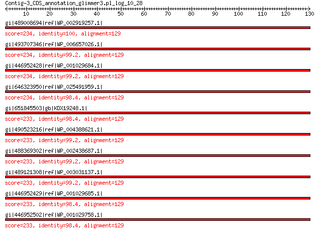

bitscore colors: <40, 40-50 , 50-80, 80-200, >200
 BLASTP 2.2.31+
Reference: Stephen F. Altschul, Thomas L. Madden, Alejandro A.
Schaffer, Jinghui Zhang, Zheng Zhang, Webb Miller, and David J.
Lipman (1997), "Gapped BLAST and PSI-BLAST: a new generation of
protein database search programs", Nucleic Acids Res. 25:3389-3402.
Reference for composition-based statistics: Alejandro A. Schaffer,
L. Aravind, Thomas L. Madden, Sergei Shavirin, John L. Spouge, Yuri
I. Wolf, Eugene V. Koonin, and Stephen F. Altschul (2001),
"Improving the accuracy of PSI-BLAST protein database searches with
composition-based statistics and other refinements", Nucleic Acids
Res. 29:2994-3005.
Database: All non-redundant GenBank CDS translations+PDB+SwissProt+PIR+PRF
excluding environmental samples from WGS projects
49,011,213 sequences; 17,563,301,199 total letters
Query= Contig-3_CDS_annotation_glimmer3.pl_log_10_28
Length=129
Score E
Sequences producing significant alignments: (Bits) Value
gi|489008694|ref|WP_002919257.1| MULTISPECIES: 30S ribosomal pro... 234 2e-76
gi|493707346|ref|WP_006657026.1| 30S ribosomal protein S11 234 2e-76
gi|446952428|ref|WP_001029684.1| MULTISPECIES: 30S ribosomal pro... 234 2e-76
gi|646323950|ref|WP_025491959.1| 30S ribosomal protein S11 234 2e-76
gi|651845503|gb|KDX19248.1| 30S ribosomal protein S11 233 2e-76
gi|490523216|ref|WP_004388621.1| MULTISPECIES: 30S ribosomal pro... 233 3e-76
gi|488369302|ref|WP_002438687.1| MULTISPECIES: 30S ribosomal pro... 233 3e-76
gi|489121308|ref|WP_003031137.1| MULTISPECIES: 30S ribosomal pro... 233 3e-76
gi|446952429|ref|WP_001029685.1| 30S ribosomal protein S11 233 3e-76
gi|446952502|ref|WP_001029758.1| MULTISPECIES: 30S ribosomal pro... 233 3e-76
>gi|489008694|ref|WP_002919257.1| MULTISPECIES: 30S ribosomal protein S11 [Enterobacteriaceae]
gi|37528521|ref|NP_931866.1| 30S ribosomal protein S11 [Photorhabdus luminescens subsp. laumondii
TTO1]
gi|50122928|ref|YP_052095.1| 30S ribosomal protein S11 [Pectobacterium atrosepticum SCRI1043]
gi|152972205|ref|YP_001337351.1| 30S ribosomal protein S11 [Klebsiella pneumoniae subsp. pneumoniae
MGH 78578]
gi|197287091|ref|YP_002152963.1| 30S ribosomal protein S11 [Proteus mirabilis HI4320]
gi|238896794|ref|YP_002921539.1| 30S ribosomal protein S11 [Klebsiella pneumoniae subsp. pneumoniae
NTUH-K2044]
gi|242237882|ref|YP_002986063.1| 30S ribosomal protein S11 [Dickeya dadantii Ech703]
gi|253690160|ref|YP_003019350.1| 30S ribosomal protein S11 [Pectobacterium carotovorum subsp.
carotovorum PC1]
gi|253991666|ref|YP_003043022.1| 30s ribosomal subunit protein s11 [Photorhabdus asymbiotica]
gi|261823209|ref|YP_003261315.1| 30S ribosomal protein S11 [Pectobacterium wasabiae WPP163]
gi|271502223|ref|YP_003335249.1| 30S ribosomal protein S11 [Dickeya dadantii Ech586]
gi|290477170|ref|YP_003470085.1| 30S ribosomal protein S11 [Xenorhabdus bovienii SS-2004]
gi|300721389|ref|YP_003710660.1| 30S ribosomal protein S11 [Xenorhabdus nematophila ATCC 19061]
gi|307132816|ref|YP_003884832.1| 30S ribosomal protein S11 [Dickeya dadantii 3937]
gi|342516483|ref|YP_004770512.1| ribosomal protein S11 [Edwardsiella tarda EIB202]
gi|342837485|ref|YP_004778103.1| ribosomal protein S11 [Dickeya zeae Ech1591]
gi|386036831|ref|YP_005956744.1| 30S ribosomal protein S11 [Klebsiella pneumoniae KCTC 2242]
gi|386743655|ref|YP_006216834.1| 30S ribosomal protein S11 [Providencia stuartii MRSN 2154]
gi|403060226|ref|YP_006648443.1| 30S ribosomal protein S11 [Pectobacterium carotovorum subsp.
carotovorum PCC21]
gi|440285892|ref|YP_007338657.1| SSU ribosomal protein S11P [Enterobacteriaceae bacterium strain
FGI 57]
gi|470156564|ref|YP_006285066.1| 30S ribosomal protein S11 [Pectobacterium sp. SCC3193]
gi|470464228|ref|YP_007630539.1| 30S ribosomal protein S11 [Edwardsiella piscicida C07-087]
gi|512648011|ref|YP_008108393.1| 30S ribosomal protein S11 [Enterobacter sp. R4-368]
gi|529238939|ref|YP_008399798.1| 30S ribosomal protein S11 [Proteus mirabilis BB2000]
gi|529986369|ref|YP_007989755.1| unnamed protein product [Klebsiella pneumoniae]
gi|550446462|ref|YP_008662250.1| 30S ribosomal protein S11 [Klebsiella pneumoniae CG43]
gi|59798689|sp|Q6CZZ3.1|RS11_PECAS RecName: Full=30S ribosomal protein S11 [Pectobacterium atrosepticum
SCRI1043]
gi|59798821|sp|Q7MYH3.1|RS11_PHOLL RecName: Full=30S ribosomal protein S11 [Photorhabdus luminescens
subsp. laumondii TTO1]
gi|166231817|sp|A6TEV0.1|RS11_KLEP7 RecName: Full=30S ribosomal protein S11 [Klebsiella pneumoniae
subsp. pneumoniae MGH 78578]
gi|226708402|sp|B4F1K7.1|RS11_PROMH RecName: Full=30S ribosomal protein S11 [Proteus mirabilis HI4320]
gi|259494630|sp|C6DFS5.1|RS11_PECCP RecName: Full=30S ribosomal protein S11 [Pectobacterium carotovorum
subsp. carotovorum PC1]
gi|36787959|emb|CAE17076.1| 30S ribosomal protein S11 [Photorhabdus luminescens subsp. laumondii
TTO1]
gi|49613454|emb|CAG76905.1| 30S ribosomal subunit protein S11 [Pectobacterium atrosepticum
SCRI1043]
gi|150957054|gb|ABR79084.1| 30S ribosomal protein S11 [Klebsiella pneumoniae subsp. pneumoniae
MGH 78578]
gi|188019709|gb|EDU57749.1| 30S ribosomal protein S11 [Providencia stuartii ATCC 25827]
gi|194684578|emb|CAR46426.1| 30S ribosomal protein S11 [Proteus mirabilis HI4320]
gi|225202689|gb|EEG85043.1| 30S ribosomal protein S11 [Proteus penneri ATCC 35198]
gi|227164995|gb|EEI49834.1| 30S ribosomal protein S11 [Proteus mirabilis ATCC 29906]
gi|238549121|dbj|BAH65472.1| 30S ribosomal protein S11 [Klebsiella pneumoniae subsp. pneumoniae
NTUH-K2044]
gi|242129939|gb|ACS84241.1| ribosomal protein S11 [Dickeya dadantii Ech703]
gi|251756738|gb|ACT14814.1| ribosomal protein S11 [Pectobacterium carotovorum subsp. carotovorum
PC1]
gi|253783116|emb|CAQ86281.1| 30s ribosomal subunit protein s11 [Photorhabdus asymbiotica]
gi|261607222|gb|ACX89708.1| 30S ribosomal protein S11 [Pectobacterium wasabiae WPP163]
gi|270345778|gb|ACZ78543.1| 30S ribosomal protein S11 [Dickeya dadantii Ech586]
gi|284006140|emb|CBA71382.1| 30S ribosomal protein S11 [Arsenophonus nasoniae]
gi|289176518|emb|CBJ83327.1| 30S ribosomal subunit protein S11 [Xenorhabdus bovienii SS-2004]
gi|291310841|gb|EFE51294.1| 30S ribosomal protein S11 [Providencia rettgeri DSM 1131]
gi|297627877|emb|CBJ88423.1| 30S ribosomal subunit protein S11 [Xenorhabdus nematophila ATCC
19061]
gi|306530345|gb|ADN00276.1| 30S ribosomal subunit protein S11 [Dickeya dadantii 3937]
gi|328537345|gb|EGF63595.1| 30S ribosomal protein S11 [Klebsiella sp. MS 92-3]
gi|339763959|gb|AEK00180.1| 30S ribosomal protein S11 [Klebsiella pneumoniae KCTC 2242]
gi|384480348|gb|AFH94143.1| 30S ribosomal protein S11 [Providencia stuartii MRSN 2154]
gi|385873674|gb|AFI92194.1| 30S ribosomal protein S11 [Pectobacterium sp. SCC3193]
gi|396095300|gb|EJI92845.1| 30S ribosomal protein S11 [Kosakonia radicincitans DSM 16656]
gi|397340052|gb|EJJ33269.1| 30S ribosomal protein S11 [Klebsiella pneumoniae subsp. pneumoniae
KPNIH2]
gi|397341662|gb|EJJ34837.1| 30S ribosomal protein S11 [Klebsiella pneumoniae subsp. pneumoniae
KPNIH4]
gi|397357330|gb|EJJ50092.1| 30S ribosomal protein S11 [Klebsiella pneumoniae subsp. pneumoniae
KPNIH5]
gi|397357368|gb|EJJ50129.1| 30S ribosomal protein S11 [Klebsiella pneumoniae subsp. pneumoniae
KPNIH6]
gi|397360919|gb|EJJ53589.1| 30S ribosomal protein S11 [Klebsiella pneumoniae subsp. pneumoniae
KPNIH7]
gi|397373695|gb|EJJ66091.1| 30S ribosomal protein S11 [Klebsiella pneumoniae subsp. pneumoniae
KPNIH9]
gi|397376055|gb|EJJ68325.1| 30S ribosomal protein S11 [Klebsiella pneumoniae subsp. pneumoniae
KPNIH8]
gi|397391388|gb|EJJ83243.1| 30S ribosomal protein S11 [Klebsiella pneumoniae subsp. pneumoniae
KPNIH11]
gi|397392502|gb|EJJ84294.1| 30S ribosomal protein S11 [Klebsiella pneumoniae subsp. pneumoniae
KPNIH12]
gi|397400484|gb|EJJ92126.1| 30S ribosomal protein S11 [Klebsiella pneumoniae subsp. pneumoniae
KPNIH14]
gi|397408707|gb|EJK00058.1| 30S ribosomal protein S11 [Klebsiella pneumoniae subsp. pneumoniae
KPNIH17]
gi|397408814|gb|EJK00159.1| 30S ribosomal protein S11 [Klebsiella pneumoniae subsp. pneumoniae
KPNIH16]
gi|397419602|gb|EJK10742.1| 30S ribosomal protein S11 [Klebsiella pneumoniae subsp. pneumoniae
KPNIH18]
gi|397425851|gb|EJK16712.1| 30S ribosomal protein S11 [Klebsiella pneumoniae subsp. pneumoniae
KPNIH20]
gi|397427167|gb|EJK17952.1| 30S ribosomal protein S11 [Klebsiella pneumoniae subsp. pneumoniae
KPNIH19]
gi|397434053|gb|EJK24694.1| 30S ribosomal protein S11 [Klebsiella pneumoniae subsp. pneumoniae
KPNIH21]
gi|397441924|gb|EJK32289.1| 30S ribosomal protein S11 [Klebsiella pneumoniae subsp. pneumoniae
KPNIH22]
gi|397449170|gb|EJK39316.1| 30S ribosomal protein S11 [Klebsiella pneumoniae subsp. pneumoniae
KPNIH23]
gi|401704853|gb|EJS95043.1| Ribosomal protein S11 [Pectobacterium wasabiae CFBP 3304]
gi|402807552|gb|AFR05190.1| 30S ribosomal protein S11 [Pectobacterium carotovorum subsp.
carotovorum PCC21]
gi|404595454|gb|EKA95998.1| 30S ribosomal protein S11 [Proteus mirabilis WGLW6]
gi|404600156|gb|EKB00604.1| 30S ribosomal protein S11 [Proteus mirabilis WGLW4]
gi|407805673|gb|EKF76924.1| 30S ribosomal protein S11 [Klebsiella pneumoniae subsp. pneumoniae
KpQ3]
gi|414097902|gb|EKT59554.1| 30S ribosomal protein S11 [Providencia rettgeri Dmel1]
gi|414710110|emb|CCN31814.1| 30S ribosomal protein S11 [Klebsiella pneumoniae subsp. pneumoniae
Ecl8]
gi|440045414|gb|AGB76472.1| SSU ribosomal protein S11P [Enterobacteriaceae bacterium strain
FGI 57]
gi|448875575|gb|EMB10588.1| 30S ribosomal protein S11 [Klebsiella pneumoniae hvKP1]
gi|459674363|gb|EMH90986.1| 30S ribosomal protein S11 [Klebsiella pneumoniae JHCK1]
gi|459932520|gb|EMH96182.1| 30S ribosomal protein S11 [Klebsiella pneumoniae RYC492]
gi|460780008|gb|EMI36582.1| 30S ribosomal protein S11 [Klebsiella pneumoniae VA360]
gi|469764761|gb|AGH75179.1| 30S ribosomal protein S11 [Edwardsiella piscicida C07-087]
gi|471238055|gb|EMR15568.1| 30S ribosomal protein S11 [Klebsiella pneumoniae 700603]
gi|471240824|gb|EMR18258.1| 30S ribosomal protein S11 [Klebsiella pneumoniae ATCC BAA-1705]
gi|471241247|gb|EMR18676.1| 30S ribosomal protein S11 [Klebsiella pneumoniae ATCC BAA-2146]
gi|480514199|gb|ENY55614.1| 30S ribosomal protein S11 [Klebsiella pneumoniae subsp. pneumoniae
KpMDU1]
gi|484362910|emb|CCW30299.1| 30S ribosomal protein S11 [Xenorhabdus nematophila F1]
gi|499528644|emb|CCI75004.1| unnamed protein product [Klebsiella pneumoniae]
gi|507123539|gb|EOR16528.1| ribosomal protein S11 [Klebsiella pneumoniae UHKPC23]
gi|509566907|gb|EOY65313.1| 30S ribosomal protein S11 [Klebsiella pneumoniae KP-7]
gi|509576700|gb|EOY69802.1| 30S ribosomal protein S11 [Klebsiella pneumoniae UHKPC40]
gi|509591696|gb|EOY77125.1| 30S ribosomal protein S11 [Klebsiella pneumoniae UHKPC01]
gi|509598928|gb|EOY84009.1| 30S ribosomal protein S11 [Klebsiella pneumoniae UHKPC81]
gi|509601899|gb|EOY86759.1| 30S ribosomal protein S11 [Klebsiella pneumoniae UHKPC09]
gi|509604561|gb|EOY89264.1| 30S ribosomal protein S11 [Klebsiella pneumoniae UHKPC27]
gi|509608006|gb|EOY92588.1| 30S ribosomal protein S11 [Klebsiella pneumoniae UHKPC24]
gi|509614419|gb|EOY98696.1| 30S ribosomal protein S11 [Klebsiella pneumoniae UHKPC26]
gi|509630017|gb|EOZ13433.1| 30S ribosomal protein S11 [Klebsiella pneumoniae UHKPC22]
gi|509637234|gb|EOZ20235.1| 30S ribosomal protein S11 [Klebsiella pneumoniae UHKPC04]
gi|509641014|gb|EOZ23865.1| 30S ribosomal protein S11 [Klebsiella pneumoniae VAKPC252]
gi|509651246|gb|EOZ33633.1| 30S ribosomal protein S11 [Klebsiella pneumoniae VAKPC280]
gi|509652710|gb|EOZ35045.1| 30S ribosomal protein S11 [Klebsiella pneumoniae VAKPC269]
gi|509653612|gb|EOZ35919.1| 30S ribosomal protein S11 [Klebsiella pneumoniae VAKPC254]
gi|509654896|gb|EOZ37117.1| 30S ribosomal protein S11 [Klebsiella pneumoniae VAKPC270]
gi|509662997|gb|EOZ44898.1| 30S ribosomal protein S11 [Klebsiella pneumoniae VAKPC276]
gi|509672049|gb|EOZ53427.1| 30S ribosomal protein S11 [Klebsiella pneumoniae VAKPC297]
gi|509678566|gb|EOZ59628.1| 30S ribosomal protein S11 [Klebsiella pneumoniae VAKPC309]
gi|509680610|gb|EOZ61609.1| 30S ribosomal protein S11 [Klebsiella pneumoniae 361_1301]
gi|509690361|gb|EOZ70833.1| 30S ribosomal protein S11 [Klebsiella pneumoniae KP-11]
gi|509692159|gb|EOZ72520.1| 30S ribosomal protein S11 [Klebsiella pneumoniae 440_1540]
gi|509695016|gb|EOZ75243.1| 30S ribosomal protein S11 [Klebsiella pneumoniae 500_1420]
gi|509710267|gb|EOZ94485.1| 30S ribosomal protein S11 [Klebsiella pneumoniae 540_1460]
gi|509720437|gb|EPA03996.1| 30S ribosomal protein S11 [Klebsiella pneumoniae 646_1568]
gi|510300985|gb|EPA87506.1| 30S ribosomal protein S11 [Klebsiella pneumoniae UHKPC57]
gi|510326466|gb|EPB06441.1| 30S ribosomal protein S11 [Klebsiella pneumoniae UHKPC 52]
gi|510335577|gb|EPB14935.1| 30S ribosomal protein S11 [Klebsiella pneumoniae UHKPC45]
gi|510341387|gb|EPB20374.1| 30S ribosomal protein S11 [Klebsiella pneumoniae VAKPC278]
gi|510345104|gb|EPB23913.1| 30S ribosomal protein S11 [Klebsiella pneumoniae UHKPC29]
gi|510347905|gb|EPB26565.1| 30S ribosomal protein S11 [Klebsiella pneumoniae DMC0526]
gi|510355142|gb|EPB33459.1| 30S ribosomal protein S11 [Klebsiella pneumoniae UHKPC48]
gi|510361610|gb|EPB39457.1| 30S ribosomal protein S11 [Klebsiella pneumoniae UHKPC32]
gi|511526127|gb|AGN83667.1| 30S ribosomal protein S11 [Enterobacter sp. R4-368]
gi|513498309|gb|EPF41953.1| 30S ribosomal protein S11 [Klebsiella pneumoniae subsp. pneumoniae
B5055]
gi|519435492|gb|EPN88171.1| 30S ribosomal protein S11 [Klebsiella pneumoniae UHKPC28]
gi|519438747|gb|EPN91226.1| 30S ribosomal protein S11 [Klebsiella pneumoniae UHKPC47]
gi|519450427|gb|EPO02266.1| 30S ribosomal protein S11 [Klebsiella pneumoniae UHKPC69]
gi|519461539|gb|EPO12725.1| 30S ribosomal protein S11 [Klebsiella pneumoniae UHKPC77]
gi|519462878|gb|EPO13976.1| 30S ribosomal protein S11 [Klebsiella pneumoniae UHKPC96]
gi|519468568|gb|EPO19401.1| 30S ribosomal protein S11 [Klebsiella pneumoniae DMC0799]
gi|519473043|gb|EPO23683.1| 30S ribosomal protein S11 [Klebsiella pneumoniae DMC1097]
gi|519476792|gb|EPO27200.1| 30S ribosomal protein S11 [Klebsiella pneumoniae DMC1316]
gi|519480075|gb|EPO30324.1| 30S ribosomal protein S11 [Klebsiella pneumoniae UHKPC61]
gi|519489484|gb|EPO39091.1| 30S ribosomal protein S11 [Klebsiella pneumoniae UHKPC33]
gi|519498907|gb|EPO48047.1| 30S ribosomal protein S11 [Klebsiella pneumoniae UHKPC59]
gi|519504579|gb|EPO53382.1| 30S ribosomal protein S11 [Klebsiella pneumoniae UHKPC07]
gi|519509084|gb|EPO57652.1| 30S ribosomal protein S11 [Klebsiella pneumoniae UHKPC17]
gi|519515977|gb|EPO64142.1| 30S ribosomal protein S11 [Klebsiella pneumoniae UHKPC18]
gi|519516570|gb|EPO64707.1| 30S ribosomal protein S11 [Klebsiella pneumoniae UHKPC31]
gi|519521562|gb|EPO69469.1| 30S ribosomal protein S11 [Klebsiella pneumoniae UHKPC06]
gi|519535071|gb|EPO82310.1| 30S ribosomal protein S11 [Klebsiella pneumoniae UHKPC67]
gi|519537927|gb|EPO84998.1| 30S ribosomal protein S11 [Klebsiella pneumoniae UHKPC02]
gi|519544671|gb|EPO91429.1| 30S ribosomal protein S11 [Klebsiella pneumoniae UHKPC179]
gi|519548818|gb|EPO95331.1| 30S ribosomal protein S11 [Klebsiella pneumoniae 160_1080]
gi|519557619|gb|EPP03620.1| 30S ribosomal protein S11 [Klebsiella pneumoniae 120_1020]
gi|519561235|gb|EPP06972.1| 30S ribosomal protein S11 [Klebsiella pneumoniae 140_1040]
gi|519567809|gb|EPP13073.1| 30S ribosomal protein S11 [Klebsiella pneumoniae 280_1220]
gi|529189977|gb|AGS61737.1| 30S ribosomal protein S11 [Proteus mirabilis BB2000]
gi|530711198|gb|EQC02059.1| 30S ribosomal protein S11 [Photorhabdus temperata subsp. temperata
M1021]
gi|537078559|gb|ERE46442.1| 30S ribosomal protein S11 [Enterococcus gallinarum EGD-AAK12]
gi|549466368|gb|ERN56542.1| 30S ribosomal protein S11 [Klebsiella pneumoniae 303K]
gi|549819065|gb|AGX39682.1| 30S ribosomal protein S11 [Klebsiella pneumoniae CG43]
gi|550875178|gb|ERT14211.1| 30S ribosomal protein S11 [Photorhabdus temperata J3]
gi|555227789|gb|ESN65238.1| hypothetical protein Ser39006_00049 [Serratia sp. ATCC 39006]
gi|557855046|gb|ESS58908.1| 30S ribosomal protein S11 [Enterobacter cloacae S611]
gi|558646621|gb|EST57113.1| 30S ribosomal protein S11 [Proteus hauseri ZMd44]
gi|572731314|gb|ETS29503.1| SSU ribosomal protein S11P [Photorhabdus temperata subsp. khanii
NC19]
gi|573045632|emb|CDI13473.1| 30S ribosomal subunit protein S11 [Klebsiella pneumoniae subsp.
pneumoniae T69]
gi|573072825|emb|CDI22049.1| 30S ribosomal protein S11 [Klebsiella pneumoniae subsp. pneumoniae
BJ1-GA]
gi|573080985|emb|CDI26873.1| 30S ribosomal protein S11 [Klebsiella pneumoniae subsp. pneumoniae
SA1]
gi|575846135|emb|CDL84381.1| 30S ribosomal protein S11 [Xenorhabdus szentirmaii DSM 16338]
gi|575849934|emb|CDL87629.1| 30S ribosomal protein S11 [Xenorhabdus cabanillasii JM26]
gi|586612890|gb|AHJ76336.1| 30S ribosomal protein S11 [Kosakonia sacchari SP1]
gi|591278431|emb|CDN08653.1| 30S ribosomal subunit protein S11 [Klebsiella sp. 07A044]
gi|591284706|emb|CDN02536.1| 30S ribosomal subunit protein S11 [Klebsiella sp. 18A069]
gi|595620505|gb|AHM77262.1| SSU ribosomal protein S11P [Klebsiella pneumoniae 30684/NJST258_2]
gi|595626060|gb|AHM82848.1| SSU ribosomal protein S11P [Klebsiella pneumoniae 30660/NJST258_1]
gi|604177064|gb|EYU13805.1| 30S ribosomal protein S11 [Photorhabdus luminescens BA1]
gi|635155583|dbj|GAJ65631.1| 30S ribosomal protein S11 [Edwardsiella piscicida]
gi|635158838|dbj|GAJ69260.1| 30S ribosomal protein S11 [Edwardsiella piscicida]
gi|635563289|emb|CDQ16586.1| 30S ribosomal protein S11 [Klebsiella sp.]
gi|640849831|gb|AIA38939.1| 30S ribosomal protein S11 [Klebsiella pneumoniae subsp. pneumoniae
KPNIH10]
gi|640855005|gb|AIA44109.1| 30S ribosomal protein S11 [Klebsiella pneumoniae subsp. pneumoniae
KPNIH27]
gi|641747313|gb|AIA72784.1| 30S ribosomal protein S11 [Pectobacterium atrosepticum]
gi|656921985|gb|KEF65403.1| 30S ribosomal protein S11 [Klebsiella pneumoniae 160_1080]
gi|656928727|gb|KEF72144.1| 30S ribosomal protein S11 [Klebsiella pneumoniae UHKPC 52]
gi|656933270|gb|KEF76686.1| 30S ribosomal protein S11 [Klebsiella pneumoniae UHKPC45]
gi|656936960|gb|KEF80371.1| 30S ribosomal protein S11 [Klebsiella pneumoniae UHKPC05]
gi|656943970|gb|KEF87370.1| 30S ribosomal protein S11 [Klebsiella pneumoniae VAKPC278]
gi|657276680|gb|KEG33275.1| 30S ribosomal protein S11 [Klebsiella pneumoniae]
gi|660581721|gb|AID98227.1| 30S ribosomal protein S11 [Klebsiella pneumoniae subsp. pneumoniae
KPNIH24]
gi|661566751|emb|CDG23153.1| 30S ribosomal protein S11 [Xenorhabdus poinarii G6]
gi|661926585|gb|AIE25252.1| 30S ribosomal protein S11 [Klebsiella pneumoniae subsp. pneumoniae
KPNIH1]
gi|661931893|gb|AIE30556.1| 30S ribosomal protein S11 [Klebsiella pneumoniae subsp. pneumoniae
KPR0928]
gi|662226400|gb|KEP94955.1| 30S ribosomal protein S11 [Klebsiella pneumoniae]
gi|662546845|gb|KER01483.1| 30S ribosomal protein S11 [Photorhabdus temperata subsp. temperata
Meg1]
gi|666603395|emb|CDH29076.1| 30S ribosomal subunit protein S11 [Xenorhabdus bovienii str.
Jollieti]
gi|666608307|emb|CDH05718.1| 30S ribosomal subunit protein S11 [Xenorhabdus bovienii str.
oregonense]
gi|666612567|emb|CDH19735.1| 30S ribosomal subunit protein S11 [Xenorhabdus bovienii str.
kraussei Quebec]
gi|666617954|emb|CDG87081.1| 30S ribosomal subunit protein S11 [Xenorhabdus bovienii str.
feltiae France]
gi|666621600|emb|CDG92281.1| 30S ribosomal subunit protein S11 [Xenorhabdus bovienii str.
feltiae Florida]
gi|666628073|emb|CDG99517.1| 30S ribosomal subunit protein S11 [Xenorhabdus bovienii str.
feltiae Moldova]
gi|666631585|emb|CDH31935.1| 30S ribosomal subunit protein S11 [Xenorhabdus bovienii str.
Intermedium]
gi|666634403|emb|CDH25402.1| 30S ribosomal subunit protein S11 [Xenorhabdus bovienii str.
kraussei Becker Underwood]
gi|667711499|gb|AIG84748.1| 30S ribosomal protein S11 [Klebsiella pneumoniae subsp. pneumoniae
PittNDM01]
gi|668719530|gb|KFC05133.1| SSU ribosomal protein S11p (S14e) [Trabulsiella guamensis ATCC
49490]
gi|668910823|gb|KFC44279.1| 30S ribosomal protein S11 [Klebsiella pneumoniae]
gi|668988305|emb|CDG95296.1| 30S ribosomal subunit protein S11 [Xenorhabdus bovienii str.
puntauvense]
gi|671733449|gb|KFF64828.1| 30S ribosomal protein S11 [Pectobacterium carotovorum subsp.
brasiliense]
gi|671734229|gb|KFF65601.1| 30S ribosomal protein S11 [Pectobacterium carotovorum subsp.
brasiliense]
gi|671738378|gb|KFF69704.1| 30S ribosomal protein S11 [Pectobacterium carotovorum subsp.
brasiliense]
gi|672217951|gb|KFG15172.1| 30S ribosomal protein S11 [Klebsiella pneumoniae]
gi|672218185|gb|KFG15390.1| 30S ribosomal protein S11 [Klebsiella pneumoniae]
gi|672602971|gb|AIJ41945.1| 30S ribosomal protein S11 [Klebsiella pneumoniae]
gi|672934934|gb|AIK15769.1| 30S ribosomal subunit protein S11 [Pectobacterium atrosepticum]
Length=129
Score = 234 bits (597), Expect = 2e-76, Method: Compositional matrix adjust.
Identities = 129/129 (100%), Positives = 129/129 (100%), Gaps = 0/129 (0%)
Query 1 MAKAPIRARKRVRKQVSDGVAHIHASFNNTIVTITDRQGNALGWATAGGSGFRGSRKSTP 60
MAKAPIRARKRVRKQVSDGVAHIHASFNNTIVTITDRQGNALGWATAGGSGFRGSRKSTP
Sbjct 1 MAKAPIRARKRVRKQVSDGVAHIHASFNNTIVTITDRQGNALGWATAGGSGFRGSRKSTP 60
Query 61 FaaqvaaercaeavKEYGIKNLEVMVKGPGPGRESTIRALNAAGFRITNITDVTPIPHNG 120
FAAQVAAERCAEAVKEYGIKNLEVMVKGPGPGRESTIRALNAAGFRITNITDVTPIPHNG
Sbjct 61 FAAQVAAERCAEAVKEYGIKNLEVMVKGPGPGRESTIRALNAAGFRITNITDVTPIPHNG 120
Query 121 CRPPKKRRV 129
CRPPKKRRV
Sbjct 121 CRPPKKRRV 129
>gi|493707346|ref|WP_006657026.1| 30S ribosomal protein S11 [Providencia alcalifaciens]
gi|212688368|gb|EEB47896.1| 30S ribosomal protein S11 [Providencia alcalifaciens DSM 30120]
gi|414100349|gb|EKT61968.1| 30S ribosomal protein S11 [Providencia alcalifaciens Dmel2]
gi|573506344|gb|ETT06531.1| 30S ribosomal protein S11 [Providencia alcalifaciens F90-2004]
gi|577056693|gb|EUC94168.1| 30S ribosomal protein S11 [Providencia alcalifaciens PAL-2]
gi|577067721|gb|EUD04460.1| 30S ribosomal protein S11 [Providencia alcalifaciens RIMD 1656011]
gi|577069170|gb|EUD05751.1| 30S ribosomal protein S11 [Providencia alcalifaciens R90-1475]
gi|577073808|gb|EUD10056.1| 30S ribosomal protein S11 [Providencia alcalifaciens 205/92]
Length=129
Score = 234 bits (597), Expect = 2e-76, Method: Compositional matrix adjust.
Identities = 128/129 (99%), Positives = 129/129 (100%), Gaps = 0/129 (0%)
Query 1 MAKAPIRARKRVRKQVSDGVAHIHASFNNTIVTITDRQGNALGWATAGGSGFRGSRKSTP 60
MAKAPIRARKRVRKQVSDGVAHIHASFNNTIVTITDRQGNALGWATAGGSGFRGSRKSTP
Sbjct 1 MAKAPIRARKRVRKQVSDGVAHIHASFNNTIVTITDRQGNALGWATAGGSGFRGSRKSTP 60
Query 61 FaaqvaaercaeavKEYGIKNLEVMVKGPGPGRESTIRALNAAGFRITNITDVTPIPHNG 120
FAAQVAAERCAE+VKEYGIKNLEVMVKGPGPGRESTIRALNAAGFRITNITDVTPIPHNG
Sbjct 61 FAAQVAAERCAESVKEYGIKNLEVMVKGPGPGRESTIRALNAAGFRITNITDVTPIPHNG 120
Query 121 CRPPKKRRV 129
CRPPKKRRV
Sbjct 121 CRPPKKRRV 129
>gi|446952428|ref|WP_001029684.1| MULTISPECIES: 30S ribosomal protein S11 [Enterobacteriaceae]
gi|15803824|ref|NP_289858.1| 30S ribosomal protein S11 [Escherichia coli O157:H7 str. EDL933]
gi|15833416|ref|NP_312189.1| 30S ribosomal protein S11 [Escherichia coli O157:H7 str. Sakai]
gi|16131176|ref|NP_417756.1| 30S ribosomal subunit protein S11 [Escherichia coli str. K-12
substr. MG1655]
gi|24114575|ref|NP_709085.1| 30S ribosomal protein S11 [Shigella flexneri 2a str. 301]
gi|26249882|ref|NP_755922.1| 30S ribosomal protein S11 [Escherichia coli CFT073]
gi|30065402|ref|NP_839573.1| 30S ribosomal protein S11 [Shigella flexneri 2a str. 2457T]
gi|74313816|ref|YP_312235.1| 30S ribosomal protein S11 [Shigella sonnei Ss046]
gi|82545660|ref|YP_409607.1| 30S ribosomal protein S11 [Shigella boydii Sb227]
gi|82778593|ref|YP_404942.1| 30S ribosomal protein S11 [Shigella dysenteriae Sd197]
gi|91212724|ref|YP_542710.1| 30S ribosomal protein S11 [Escherichia coli UTI89]
gi|110643536|ref|YP_671266.1| 30S ribosomal protein S11 [Escherichia coli 536]
gi|110807145|ref|YP_690665.1| 30S ribosomal protein S11 [Shigella flexneri 5 str. 8401]
gi|117625579|ref|YP_858902.1| 30S ribosomal protein S11 [Escherichia coli APEC O1]
gi|157156126|ref|YP_001464765.1| 30S ribosomal protein S11 [Escherichia coli E24377A]
gi|157162771|ref|YP_001460089.1| 30S ribosomal protein S11 [Escherichia coli HS]
gi|161506030|ref|YP_001573142.1| 30S ribosomal protein S11 [Salmonella enterica subsp. arizonae
serovar 62:z4,z23:- str. RSK2980]
gi|170018467|ref|YP_001723421.1| 30S ribosomal protein S11 [Escherichia coli ATCC 8739]
gi|170082817|ref|YP_001732137.1| 30S ribosomal protein S11 [Escherichia coli str. K-12 substr.
DH10B]
gi|170679818|ref|YP_001745559.1| 30S ribosomal protein S11 [Escherichia coli SMS-3-5]
gi|187730089|ref|YP_001881982.1| 30S ribosomal protein S11 [Shigella boydii CDC 3083-94]
gi|209398081|ref|YP_002272753.1| 30S ribosomal protein S11 [Escherichia coli O157:H7 str. EC4115]
gi|209920763|ref|YP_002294847.1| 30S ribosomal protein S11 [Escherichia coli SE11]
gi|215488597|ref|YP_002331028.1| 30S ribosomal protein S11 [Escherichia coli O127:H6 str. E2348/69]
gi|218550573|ref|YP_002384364.1| 30S ribosomal protein S11 [Escherichia fergusonii ATCC 35469]
gi|218555855|ref|YP_002388768.1| 30S ribosomal protein S11 [Escherichia coli IAI1]
gi|218560359|ref|YP_002393272.1| 30S ribosomal protein S11 [Escherichia coli S88]
gi|218691584|ref|YP_002399796.1| 30S ribosomal protein S11 [Escherichia coli ED1a]
gi|218696990|ref|YP_002404657.1| 30S ribosomal protein S11 [Escherichia coli 55989]
gi|218702060|ref|YP_002409689.1| 30S ribosomal protein S11 [Escherichia coli IAI39]
gi|218706905|ref|YP_002414424.1| 30S ribosomal protein S11 [Escherichia coli UMN026]
gi|222158001|ref|YP_002558140.1| 30S ribosomal protein S11 [Escherichia coli LF82]
gi|238902388|ref|YP_002928184.1| 30S ribosomal protein S11 [Escherichia coli BW2952]
gi|251786551|ref|YP_003000855.1| 30S ribosomal protein S11 [Escherichia coli BL21(DE3)]
gi|253771879|ref|YP_003034710.1| 30S ribosomal protein S11 [Escherichia coli 'BL21-Gold(DE3)pLysS
AG']
gi|254163225|ref|YP_003046333.1| 30S ribosomal protein S11 [Escherichia coli B str. REL606]
gi|254289975|ref|YP_003055723.1| 30S ribosomal protein S11 [Escherichia coli BL21(DE3)]
gi|254795234|ref|YP_003080071.1| 30S ribosomal protein S11 [Escherichia coli O157:H7 str. TW14359]
gi|260846095|ref|YP_003223873.1| 30S ribosomal subunit protein S11 [Escherichia coli O103:H2 str.
12009]
gi|260857418|ref|YP_003231309.1| 30S ribosomal protein S11 [Escherichia coli O26:H11 str. 11368]
gi|260870040|ref|YP_003236442.1| 30S ribosomal protein S11 [Escherichia coli O111:H- str. 11128]
gi|283788067|ref|YP_003367932.1| 30S ribosomal protein S11 [Citrobacter rodentium ICC168]
gi|291284655|ref|YP_003501473.1| 30S ribosomal protein S11 [Escherichia coli O55:H7 str. CB9615]
gi|311277748|ref|YP_003939979.1| 30S ribosomal protein S11 [Enterobacter lignolyticus SCF1]
gi|341904761|ref|YP_004767283.1| ribosomal protein S11 [Citrobacter koseri ATCC BAA-895]
gi|378711263|ref|YP_005276156.1| 30S ribosomal protein S11 [Escherichia coli KO11FL]
gi|383180471|ref|YP_005458476.1| 30S ribosomal protein S11 [Shigella sonnei 53G]
gi|384544875|ref|YP_005728939.1| 30S ribosomal protein S11 [Shigella flexneri 2002017]
gi|386593995|ref|YP_006090395.1| 30S ribosomal protein S11 [Escherichia coli DH1]
gi|386601315|ref|YP_006102821.1| 30S ribosomal protein S11 [Escherichia coli IHE3034]
gi|386605848|ref|YP_006112148.1| 30S ribosomal protein S11 [Escherichia coli UM146]
gi|386610672|ref|YP_006126158.1| 30S ribosomal protein S11 [Escherichia coli W]
gi|386616075|ref|YP_006135741.1| ribosomal protein [Escherichia coli UMNK88]
gi|386626100|ref|YP_006145828.1| 30S ribosomal protein S11 [Escherichia coli O7:K1 str. CE10]
gi|386631177|ref|YP_006150897.1| 30S ribosomal protein S11 [Escherichia coli str. 'clone D i2']
gi|386636097|ref|YP_006155816.1| 30S ribosomal protein S11 [Escherichia coli str. 'clone D i14']
gi|386640893|ref|YP_006107691.1| 30S ribosomal protein S11 [Escherichia coli ABU 83972]
gi|386699749|ref|YP_006163586.1| 30S ribosomal protein S11 [Escherichia coli KO11FL]
gi|386706540|ref|YP_006170387.1| 30S ribosomal protein S11 [Escherichia coli P12b]
gi|386711190|ref|YP_006174911.1| 30S ribosomal protein S11 [Escherichia coli W]
gi|387508689|ref|YP_006160945.1| 30S ribosomal protein S11 [Escherichia coli O55:H7 str. RM12579]
gi|387609003|ref|YP_006097859.1| 30S ribosomal protein S11 [Escherichia coli 042]
gi|387613973|ref|YP_006117089.1| 30S ribosomal protein S11 [Escherichia coli ETEC H10407]
gi|387618587|ref|YP_006121609.1| 30S ribosomal protein S11 [Escherichia coli O83:H1 str. NRG 857C]
gi|387622948|ref|YP_006130576.1| 30S ribosomal protein S11 [Escherichia coli DH1]
gi|387884467|ref|YP_006314769.1| 30S ribosomal protein S11 [Escherichia coli Xuzhou21]
gi|387887652|ref|YP_006317950.1| 30S ribosomal protein S11 [Shimwellia blattae DSM 4481 = NBRC
105725]
gi|388479941|ref|YP_492135.1| 30S ribosomal protein S11 [Escherichia coli str. K-12 substr.
W3110]
gi|407471260|ref|YP_006782297.1| 30S ribosomal protein S11 [Escherichia coli O104:H4 str. 2009EL-2071]
gi|407480084|ref|YP_006777233.1| 30S ribosomal protein S11 [Escherichia coli O104:H4 str. 2011C-3493]
gi|410480645|ref|YP_006768191.1| 30S ribosomal protein S11 [Escherichia coli O104:H4 str. 2009EL-2050]
gi|443619360|ref|YP_007383216.1| 30S ribosomal protein S11 [Escherichia coli APEC O78]
gi|471334843|ref|YP_007558320.1| 30S ribosomal subunit protein S11 [Escherichia coli str. K-12
substr. MDS42]
gi|544391765|ref|YP_008566451.1| 30S ribosomal protein S11 [Escherichia coli LY180]
gi|544577838|ref|YP_008573362.1| 30S ribosomal protein S11 [Escherichia coli PMV-1]
gi|67472358|sp|P0A7R9.2|RS11_ECOLI RecName: Full=30S ribosomal protein S11 [Escherichia coli K-12]
gi|67472359|sp|P0A7S0.2|RS11_ECOL6 RecName: Full=30S ribosomal protein S11 [Escherichia coli CFT073]
gi|67472360|sp|P0A7S1.2|RS11_ECO57 RecName: Full=30S ribosomal protein S11 [Escherichia coli O157:H7]
gi|67472361|sp|P0A7S2.2|RS11_SHIFL RecName: Full=30S ribosomal protein S11 [Shigella flexneri]
gi|91207677|sp|Q31VX9.1|RS11_SHIBS RecName: Full=30S ribosomal protein S11 [Shigella boydii Sb227]
gi|91207678|sp|Q32B54.1|RS11_SHIDS RecName: Full=30S ribosomal protein S11 [Shigella dysenteriae
Sd197]
gi|91207679|sp|Q3YWW2.1|RS11_SHISS RecName: Full=30S ribosomal protein S11 [Shigella sonnei Ss046]
gi|123342434|sp|Q0T005.1|RS11_SHIF8 RecName: Full=30S ribosomal protein S11 [Shigella flexneri 5
str. 8401]
gi|123343549|sp|Q0TCG4.1|RS11_ECOL5 RecName: Full=30S ribosomal protein S11 [Escherichia coli 536]
gi|123387795|sp|Q1R635.1|RS11_ECOUT RecName: Full=30S ribosomal protein S11 [Escherichia coli UTI89]
gi|152060588|sp|A1AGI8.1|RS11_ECOK1 RecName: Full=30S ribosomal protein S11 [Escherichia coli APEC
O1]
gi|166991577|sp|A7ZSI6.1|RS11_ECO24 RecName: Full=30S ribosomal protein S11 [Escherichia coli E24377A]
gi|166991578|sp|A8A5A2.1|RS11_ECOHS RecName: Full=30S ribosomal protein S11 [Escherichia coli HS]
gi|189040414|sp|B1IQ02.1|RS11_ECOLC RecName: Full=30S ribosomal protein S11 [Escherichia coli ATCC
8739]
gi|189040432|sp|A9MN70.1|RS11_SALAR RecName: Full=30S ribosomal protein S11 [Salmonella enterica
subsp. arizonae serovar 62:z4,z23:-]
gi|226708363|sp|B7MCR3.1|RS11_ECO45 RecName: Full=30S ribosomal protein S11 [Escherichia coli S88]
gi|226708364|sp|B5YT16.1|RS11_ECO5E RecName: Full=30S ribosomal protein S11 [Escherichia coli O157:H7
str. EC4115]
gi|226708365|sp|B7NLL7.1|RS11_ECO7I RecName: Full=30S ribosomal protein S11 [Escherichia coli IAI39]
gi|226708366|sp|B7M103.1|RS11_ECO8A RecName: Full=30S ribosomal protein S11 [Escherichia coli IAI1]
gi|226708367|sp|B1X6E9.1|RS11_ECODH RecName: Full=30S ribosomal protein S11 [Escherichia coli str.
K-12 substr. DH10B]
gi|226708368|sp|B7NDR9.1|RS11_ECOLU RecName: Full=30S ribosomal protein S11 [Escherichia coli UMN026]
gi|226708369|sp|B6I211.1|RS11_ECOSE RecName: Full=30S ribosomal protein S11 [Escherichia coli SE11]
gi|226708370|sp|B1LHB1.1|RS11_ECOSM RecName: Full=30S ribosomal protein S11 [Escherichia coli SMS-3-5]
gi|226708372|sp|B7LRR4.1|RS11_ESCF3 RecName: Full=30S ribosomal protein S11 [Escherichia fergusonii
ATCC 35469]
gi|226708417|sp|B2U2R6.1|RS11_SHIB3 RecName: Full=30S ribosomal protein S11 [Shigella boydii CDC
3083-94]
gi|254765383|sp|B7UK21.1|RS11_ECO27 RecName: Full=30S ribosomal protein S11 [Escherichia coli O127:H6
str. E2348/69]
gi|254765384|sp|B7LHZ9.1|RS11_ECO55 RecName: Full=30S ribosomal protein S11 [Escherichia coli 55989]
gi|254765385|sp|B7N182.1|RS11_ECO81 RecName: Full=30S ribosomal protein S11 [Escherichia coli ED1a]
gi|259494622|sp|C4ZUF2.1|RS11_ECOBW RecName: Full=30S ribosomal protein S11 [Escherichia coli BW2952]
gi|116666558|pdb|1VS5|K Chain K, Crystal Structure Of The Bacterial Ribosome From Escherichia
Coli In Complex With The Antibiotic Kasugamyin At 3.5a
Resolution. This File Contains The 30s Subunit Of One 70s
Ribosome. The Entire Crystal Structure Contains Two 70s Ribosomes
And Is Described In Remark 400.
gi|116666610|pdb|1VS7|K Chain K, Crystal Structure Of The Bacterial Ribosome From Escherichia
Coli In Complex With The Antibiotic Kasugamyin At 3.5a
Resolution. This File Contains The 30s Subunit Of One 70s
Ribosome. The Entire Crystal Structure Contains Two 70s Ribosomes
And Is Described In Remark 400.
gi|256032354|pdb|3E1A|C Chain C, Structure Of The 30s Subunit And The Trnas Of E. Coli
Ribosome In Pre- Accommodation State
gi|256032411|pdb|3E1C|C Chain C, Structure Of The 30s Subunit And The Trnas Of E. Coli
Ribosome In Post-Accommodation State
gi|257097332|pdb|3I1M|K Chain K, Crystal Structure Of The E. Coli 70s Ribosome In An
Intermediate State Of Ratcheting
gi|257097384|pdb|3I1O|K Chain K, Crystal Structure Of The E. Coli 70s Ribosome In An
Intermediate State Of Ratcheting
gi|257097436|pdb|3I1Q|K Chain K, Crystal Structure Of The E. Coli 70s Ribosome In An
Intermediate State Of Ratcheting
gi|257097490|pdb|3I1S|K Chain K, Crystal Structure Of The E. Coli 70s Ribosome In An
Intermediate State Of Ratcheting
gi|257097544|pdb|3I1Z|K Chain K, Crystal Structure Of The E. Coli 70s Ribosome In An
Intermediate State Of Ratcheting
gi|257097599|pdb|3I21|K Chain K, Crystal Structure Of The E. Coli 70s Ribosome In An
Intermediate State Of Ratcheting
gi|290560317|pdb|3KC4|K Chain K, Ribosome-Secy Complex. This Entry 3kc4 Contains 30s
Ribosomal Subnit. The 50s Ribosomal Subunit Can Be Found In
Pdb Entry 3kcr
gi|308198697|pdb|3OR9|K Chain K, Crystal Structure Of The E. Coli Ribosome Bound To Cem-101.
This File Contains The 30s Subunit Of The First 70s
Ribosome.
gi|308198718|pdb|3ORA|K Chain K, Crystal Structure Of The E. Coli Ribosome Bound To Cem-101.
This File Contains The 30s Subunit Of The Second 70s
Ribosome.
gi|326634289|pdb|3IZV|O Chain O, Structural Insights Into Cognate Vs. Near-Cognate Discrimination
During Decoding. This Entry Contains The Small
Subunit Of A Ribosome Programmed With A Near-Cognate Codon,
AT-Site Trna, P-Site Trna, Mrna And Ef-Tu
gi|326634314|pdb|3IZW|O Chain O, Structural Insights Into Cognate Vs. Near-Cognate Discrimination
During Decoding.This Entry Contains The Small Subunit
Of A Ribosome Programmed With A Cognate Codon, AT-Site
Trna, P-Site Trna, Mrna And Ef-Tu
gi|371927504|pdb|3SFS|K Chain K, Crystal Structure Of Release Factor Rf3 Trapped In The
Gtp State On A Rotated Conformation Of The Ribosome
gi|371927629|pdb|3UOQ|K Chain K, Crystal Structure Of Release Factor Rf3 Trapped In The
Gtp State On A Rotated Conformation Of The Ribosome (Without
Viomycin)
gi|402550594|pdb|4GAQ|K Chain K, Allosteric Control Of The Ribosome By Small-Molecule
Antibiotics
gi|402550648|pdb|4GAS|K Chain K, Allosteric Control Of The Ribosome By Small-Molecule
Antibiotics
gi|524934320|pdb|4KIY|K Chain K, Control Of Ribosomal Subunit Rotation By Elongation
Factor G
gi|524934388|pdb|4KJ0|K Chain K, Control Of Ribosomal Subunit Rotation By Elongation
Factor G
gi|524934458|pdb|4KJ2|K Chain K, Control Of Ribosomal Subunit Rotation By Elongation
Factor G
gi|524934529|pdb|4KJ4|K Chain K, Control Of Ribosomal Subunit Rotation By Elongation
Factor G
gi|524934597|pdb|4KJ6|K Chain K, Control Of Ribosomal Subunit Rotation By Elongation
Factor G
gi|524934660|pdb|4KJ8|K Chain K, Control Of Ribosomal Subunit Rotation By Elongation
Factor G
gi|524934724|pdb|4KJA|K Chain K, Control Of Ribosomal Subunit Rotation By Elongation
Factor G
gi|524934785|pdb|4KJC|K Chain K, Control Of Ribosomal Subunit Rotation By Elongation
Factor G
gi|564730746|pdb|3J5N|K Chain K, Visualization Of Two Trnas Trapped In Transit During
Ef-g-mediated Translocation (30s Subunit + Ligands)
gi|12517926|gb|AAG58418.1|AE005556_11 30S ribosomal subunit protein S11 [Escherichia coli O157:H7 str.
EDL933]
gi|26110310|gb|AAN82496.1|AE016767_256 30S ribosomal protein S11 [Escherichia coli CFT073]
gi|42797|emb|CAA26393.1| unnamed protein product [Escherichia coli]
gi|606232|gb|AAA58095.1| 30S ribosomal subunit protein S11 [Escherichia coli str. K-12
substr. MG1655]
gi|1789692|gb|AAC76322.1| 30S ribosomal subunit protein S11 [Escherichia coli str. K-12
substr. MG1655]
gi|13363635|dbj|BAB37585.1| 30S ribosomal subunit protein S11 [Escherichia coli O157:H7 str.
Sakai]
gi|24053771|gb|AAN44792.1| 30S ribosomal subunit protein S11 [Shigella flexneri 2a str.
301]
gi|30043664|gb|AAP19384.1| 30S ribosomal subunit protein S11 [Shigella flexneri 2a str.
2457T]
gi|73857293|gb|AAZ90000.1| 30S ribosomal subunit protein S11 [Shigella sonnei Ss046]
gi|81242741|gb|ABB63451.1| 30S ribosomal subunit protein S11 [Shigella dysenteriae Sd197]
gi|81247071|gb|ABB67779.1| 30S ribosomal subunit protein S11 [Shigella boydii Sb227]
gi|85676744|dbj|BAE77994.1| 30S ribosomal subunit protein S11 [Escherichia coli str. K-12
substr. W3110]
gi|91074298|gb|ABE09179.1| 30S ribosomal subunit protein S11 [Escherichia coli UTI89]
gi|110345128|gb|ABG71365.1| 30S ribosomal protein S11 [Escherichia coli 536]
gi|110616693|gb|ABF05360.1| 30S ribosomal subunit protein S11 [Shigella flexneri 5 str. 8401]
gi|115514703|gb|ABJ02778.1| 30S ribosomal subunit protein S11 [Escherichia coli APEC O1]
gi|157068451|gb|ABV07706.1| ribosomal protein S11 [Escherichia coli HS]
gi|157078156|gb|ABV17864.1| ribosomal protein S11 [Escherichia coli E24377A]
gi|160867377|gb|ABX24000.1| hypothetical protein SARI_04211 [Salmonella enterica subsp. arizonae
serovar 62:z4,z23:-]
gi|169753395|gb|ACA76094.1| ribosomal protein S11 [Escherichia coli ATCC 8739]
gi|169890652|gb|ACB04359.1| 30S ribosomal subunit protein S11 [Escherichia coli str. K-12
substr. DH10B]
gi|170121548|gb|EDS90479.1| ribosomal protein S11 [Escherichia albertii TW07627]
gi|170517536|gb|ACB15714.1| ribosomal protein S11 [Escherichia coli SMS-3-5]
gi|187427081|gb|ACD06355.1| ribosomal protein S11 [Shigella boydii CDC 3083-94]
gi|187767004|gb|EDU30848.1| ribosomal protein S11 [Escherichia coli O157:H7 str. EC4196]
gi|188013839|gb|EDU51961.1| ribosomal protein S11 [Escherichia coli O157:H7 str. EC4113]
gi|188491267|gb|EDU66370.1| ribosomal protein S11 [Escherichia coli 53638]
gi|188998854|gb|EDU67840.1| ribosomal protein S11 [Escherichia coli O157:H7 str. EC4076]
gi|189354696|gb|EDU73115.1| ribosomal protein S11 [Escherichia coli O157:H7 str. EC4401]
gi|189361729|gb|EDU80148.1| ribosomal protein S11 [Escherichia coli O157:H7 str. EC4486]
gi|189365125|gb|EDU83541.1| ribosomal protein S11 [Escherichia coli O157:H7 str. EC4501]
gi|189374191|gb|EDU92607.1| ribosomal protein S11 [Escherichia coli O157:H7 str. EC869]
gi|189375347|gb|EDU93763.1| ribosomal protein S11 [Escherichia coli O157:H7 str. EC508]
gi|190900652|gb|EDV60452.1| ribosomal protein S11 [Escherichia coli B7A]
gi|190905259|gb|EDV64897.1| ribosomal protein S11 [Escherichia coli F11]
gi|192925880|gb|EDV80530.1| ribosomal protein S11 [Escherichia coli E22]
gi|192955124|gb|EDV85618.1| ribosomal protein S11 [Escherichia coli E110019]
gi|194411680|gb|EDX28007.1| ribosomal protein S11 [Escherichia coli B171]
gi|194416681|gb|EDX32812.1| ribosomal protein S11 [Shigella dysenteriae 1012]
gi|194421063|gb|EDX37092.1| ribosomal protein S11 [Escherichia coli 101-1]
gi|208728597|gb|EDZ78198.1| ribosomal protein S11 [Escherichia coli O157:H7 str. EC4206]
gi|208733165|gb|EDZ81852.1| ribosomal protein S11 [Escherichia coli O157:H7 str. EC4045]
gi|208738672|gb|EDZ86354.1| ribosomal protein S11 [Escherichia coli O157:H7 str. EC4042]
gi|209159481|gb|ACI36914.1| ribosomal protein S11 [Escherichia coli O157:H7 str. EC4115]
gi|209757268|gb|ACI76946.1| 30S ribosomal subunit protein S11 [Escherichia coli]
gi|209757270|gb|ACI76947.1| 30S ribosomal subunit protein S11 [Escherichia coli]
gi|209757272|gb|ACI76948.1| 30S ribosomal subunit protein S11 [Escherichia coli]
gi|209757274|gb|ACI76949.1| 30S ribosomal subunit protein S11 [Escherichia coli]
gi|209757276|gb|ACI76950.1| 30S ribosomal subunit protein S11 [Escherichia coli]
gi|209914022|dbj|BAG79096.1| 30S ribosomal protein S11 [Escherichia coli SE11]
gi|215266669|emb|CAS11108.1| 30S ribosomal subunit protein S11 [Escherichia coli O127:H6 str.
E2348/69]
gi|217320754|gb|EEC29178.1| ribosomal protein S11 [Escherichia coli O157:H7 str. TW14588]
gi|218353722|emb|CAV00000.1| 30S ribosomal subunit protein S11 [Escherichia coli 55989]
gi|218358114|emb|CAQ90761.1| 30S ribosomal subunit protein S11 [Escherichia fergusonii ATCC
35469]
gi|218362623|emb|CAR00249.1| 30S ribosomal subunit protein S11 [Escherichia coli IAI1]
gi|218367128|emb|CAR04902.1| 30S ribosomal subunit protein S11 [Escherichia coli S88]
gi|218372046|emb|CAR19906.1| 30S ribosomal subunit protein S11 [Escherichia coli IAI39]
gi|218429148|emb|CAR10100.2| 30S ribosomal subunit protein S11 [Escherichia coli ED1a]
gi|218434002|emb|CAR14919.1| 30S ribosomal subunit protein S11 [Escherichia coli UMN026]
gi|222035006|emb|CAP77749.1| 30S ribosomal protein S11 [Escherichia coli LF82]
gi|226838964|gb|EEH70987.1| 30S ribosomal protein S11 [Escherichia sp. 1_1_43]
gi|226902291|gb|EEH88550.1| 30S ribosomal protein S11 [Escherichia sp. 3_2_53FAA]
gi|227839573|gb|EEJ50039.1| 30S ribosomal protein S11 [Escherichia coli 83972]
gi|238859785|gb|ACR61783.1| 30S ribosomal subunit protein S11 [Escherichia coli BW2952]
gi|242378824|emb|CAQ33616.1| 30S ribosomal subunit protein S11, subunit of 30S ribosomal subunit
and ribosome [Escherichia coli BL21(DE3)]
gi|253322923|gb|ACT27525.1| ribosomal protein S11 [Escherichia coli 'BL21-Gold(DE3)pLysS
AG']
gi|253975126|gb|ACT40797.1| 30S ribosomal protein S11 [Escherichia coli B str. REL606]
gi|253979282|gb|ACT44952.1| 30S ribosomal protein S11 [Escherichia coli BL21(DE3)]
gi|254594634|gb|ACT73995.1| 30S ribosomal subunit protein S11 [Escherichia coli O157:H7 str.
TW14359]
gi|257756067|dbj|BAI27569.1| 30S ribosomal subunit protein S11 [Escherichia coli O26:H11 str.
11368]
gi|257761242|dbj|BAI32739.1| 30S ribosomal subunit protein S11 [Escherichia coli O103:H2 str.
12009]
gi|257766396|dbj|BAI37891.1| 30S ribosomal subunit protein S11 [Escherichia coli O111:H- str.
11128]
gi|260447684|gb|ACX38106.1| ribosomal protein S11 [Escherichia coli DH1]
gi|281602662|gb|ADA75646.1| 30S ribosomal protein S11 [Shigella flexneri 2002017]
gi|282951521|emb|CBG91220.1| 30S ribosomal subunit protein S11 [Citrobacter rodentium ICC168]
gi|284923303|emb|CBG36397.1| 30S ribosomal subunit protein S11 [Escherichia coli 042]
gi|290764528|gb|ADD58489.1| 30S ribosomal protein S11 [Escherichia coli O55:H7 str. CB9615]
gi|291088823|gb|EFE21384.1| 30S ribosomal protein S11 [Edwardsiella tarda ATCC 23685]
gi|291321742|gb|EFE61173.1| 30S ribosomal protein S11 [Escherichia coli B088]
gi|291425705|gb|EFE98739.1| 30S ribosomal protein S11 [Escherichia coli FVEC1412]
gi|291431292|gb|EFF04277.1| 30S ribosomal protein S11 [Escherichia coli B185]
gi|291468363|gb|EFF10856.1| 30S ribosomal protein S11 [Escherichia coli B354]
gi|294492523|gb|ADE91279.1| ribosomal protein S11 [Escherichia coli IHE3034]
gi|298276471|gb|EFI17989.1| 30S ribosomal protein S11 [Escherichia coli FVEC1302]
gi|299881639|gb|EFI89850.1| 30S ribosomal protein S11 [Escherichia coli MS 196-1]
gi|300301895|gb|EFJ58280.1| 30S ribosomal protein S11 [Escherichia coli MS 185-1]
gi|300308987|gb|EFJ63507.1| 30S ribosomal protein S11 [Escherichia coli MS 200-1]
gi|300318228|gb|EFJ68012.1| 30S ribosomal protein S11 [Escherichia coli MS 175-1]
gi|300359477|gb|EFJ75347.1| 30S ribosomal protein S11 [Escherichia coli MS 198-1]
gi|300399547|gb|EFJ83085.1| 30S ribosomal protein S11 [Escherichia coli MS 69-1]
gi|300404419|gb|EFJ87957.1| 30S ribosomal protein S11 [Escherichia coli MS 84-1]
gi|300409381|gb|EFJ92919.1| 30S ribosomal protein S11 [Escherichia coli MS 45-1]
gi|300414533|gb|EFJ97843.1| 30S ribosomal protein S11 [Escherichia coli MS 115-1]
gi|300421741|gb|EFK05052.1| 30S ribosomal protein S11 [Escherichia coli MS 182-1]
gi|300453766|gb|EFK17386.1| 30S ribosomal protein S11 [Escherichia coli MS 116-1]
gi|300459452|gb|EFK22945.1| 30S ribosomal protein S11 [Escherichia coli MS 21-1]
gi|300460015|gb|EFK23508.1| 30S ribosomal protein S11 [Escherichia coli MS 187-1]
gi|300524665|gb|EFK45734.1| 30S ribosomal protein S11 [Escherichia coli MS 119-7]
gi|300532384|gb|EFK53446.1| 30S ribosomal protein S11 [Escherichia coli MS 107-1]
gi|300839202|gb|EFK66962.1| 30S ribosomal protein S11 [Escherichia coli MS 124-1]
gi|300848014|gb|EFK75774.1| 30S ribosomal protein S11 [Escherichia coli MS 78-1]
gi|301077785|gb|EFK92591.1| 30S ribosomal protein S11 [Escherichia coli MS 146-1]
gi|305850756|gb|EFM51213.1| 30S ribosomal protein S11 [Escherichia coli NC101]
gi|306905473|gb|EFN36008.1| 30S ribosomal protein S11 [Escherichia coli W]
gi|307555385|gb|ADN48160.1| 30S ribosomal subunit protein S11 [Escherichia coli ABU 83972]
gi|307628332|gb|ADN72636.1| 30S ribosomal protein S11 [Escherichia coli UM146]
gi|308121623|gb|EFO58885.1| 30S ribosomal protein S11 [Escherichia coli MS 145-7]
gi|308746943|gb|ADO46695.1| 30S ribosomal protein S11 [Enterobacter lignolyticus SCF1]
gi|308926739|gb|EFP72215.1| ribosomal S11 family protein [Shigella dysenteriae 1617]
gi|309703709|emb|CBJ03050.1| 30S ribosomal subunit protein S11 [Escherichia coli ETEC H10407]
gi|310334819|gb|EFQ01024.1| ribosomal S11 family protein [Escherichia coli 1827-70]
gi|312287203|gb|EFR15113.1| ribosomal S11 family protein [Escherichia coli 2362-75]
gi|312947848|gb|ADR28675.1| 30S ribosomal protein S11 [Escherichia coli O83:H1 str. NRG 857C]
gi|313647393|gb|EFS11845.1| ribosomal S11 family protein [Shigella flexneri 2a str. 2457T]
gi|315062589|gb|ADT76916.1| 30S ribosomal subunit protein S11 [Escherichia coli W]
gi|315137872|dbj|BAJ45031.1| 30S ribosomal protein S11 [Escherichia coli DH1]
gi|315255881|gb|EFU35849.1| 30S ribosomal protein S11 [Escherichia coli MS 85-1]
gi|315284627|gb|EFU44072.1| 30S ribosomal protein S11 [Escherichia coli MS 110-3]
gi|315292385|gb|EFU51737.1| 30S ribosomal protein S11 [Escherichia coli MS 153-1]
gi|315298596|gb|EFU57851.1| 30S ribosomal protein S11 [Escherichia coli MS 16-3]
gi|315617099|gb|EFU97709.1| ribosomal S11 family protein [Escherichia coli 3431]
gi|320173941|gb|EFW49117.1| 30S ribosomal protein S11 [Shigella dysenteriae CDC 74-1112]
gi|320182705|gb|EFW57591.1| 30S ribosomal protein S11 [Shigella boydii ATCC 9905]
gi|320187018|gb|EFW61730.1| 30S ribosomal protein S11 [Shigella flexneri CDC 796-83]
gi|320191669|gb|EFW66319.1| 30S ribosomal protein S11 [Escherichia coli O157:H7 str. EC1212]
gi|320195389|gb|EFW70016.1| 30S ribosomal protein S11 [Escherichia coli WV_060327]
gi|320199484|gb|EFW74074.1| 30S ribosomal protein S11 [Escherichia coli EC4100B]
gi|320639602|gb|EFX09196.1| 30S ribosomal protein S11 [Escherichia coli O157:H7 str. G5101]
gi|320645100|gb|EFX14116.1| 30S ribosomal protein S11 [Escherichia coli O157:H- str. 493-89]
gi|320650411|gb|EFX18877.1| 30S ribosomal protein S11 [Escherichia coli O157:H- str. H 2687]
gi|320655936|gb|EFX23856.1| 30S ribosomal protein S11 [Escherichia coli O55:H7 str. 3256-97
TW 07815]
gi|320661388|gb|EFX28803.1| 30S ribosomal protein S11 [Escherichia coli O55:H7 str. USDA
5905]
gi|320666410|gb|EFX33393.1| 30S ribosomal protein S11 [Escherichia coli O157:H7 str. LSU-61]
gi|323154135|gb|EFZ40338.1| ribosomal S11 family protein [Escherichia coli EPECa14]
gi|323162976|gb|EFZ48811.1| ribosomal protein S11 family protein [Escherichia coli E128010]
gi|323164861|gb|EFZ50652.1| ribosomal S11 family protein [Shigella sonnei 53G]
gi|323173933|gb|EFZ59561.1| ribosomal protein S11 family protein [Escherichia coli LT-68]
gi|323179167|gb|EFZ64741.1| ribosomal protein S11 family protein [Escherichia coli OK1180]
gi|323182775|gb|EFZ68176.1| ribosomal protein S11 family protein [Escherichia coli OK1357]
gi|323189098|gb|EFZ74382.1| ribosomal protein S11 family protein [Escherichia coli RN587/1]
gi|323376824|gb|ADX49092.1| 30S ribosomal protein S11 [Escherichia coli KO11FL]
gi|323934504|gb|EGB30912.1| 30S ribosomal protein S11 [Escherichia coli E1520]
gi|323939281|gb|EGB35493.1| 30S ribosomal protein S11 [Escherichia coli E482]
gi|323944282|gb|EGB40358.1| 30S ribosomal protein S11 [Escherichia coli H120]
gi|323950211|gb|EGB46093.1| 30S ribosomal protein S11 [Escherichia coli H252]
gi|323954580|gb|EGB50363.1| 30S ribosomal protein S11 [Escherichia coli H263]
gi|323959552|gb|EGB55205.1| 30S ribosomal protein S11 [Escherichia coli H489]
gi|323966259|gb|EGB61694.1| 30S ribosomal protein S11 [Escherichia coli M863]
gi|323970101|gb|EGB65375.1| 30S ribosomal protein S11 [Escherichia coli TA007]
gi|323974750|gb|EGB69863.1| 30S ribosomal protein S11 [Escherichia coli TW10509]
gi|324009032|gb|EGB78251.1| 30S ribosomal protein S11 [Escherichia coli MS 57-2]
gi|324014914|gb|EGB84133.1| 30S ribosomal protein S11 [Escherichia coli MS 60-1]
gi|324017884|gb|EGB87103.1| 30S ribosomal protein S11 [Escherichia coli MS 117-3]
gi|324111976|gb|EGC05955.1| 30S ribosomal protein S11 [Escherichia fergusonii B253]
gi|324116313|gb|EGC10233.1| 30S ribosomal protein S11 [Escherichia coli E1167]
gi|325498866|gb|EGC96725.1| 30S ribosomal protein S11 [Escherichia fergusonii ECD227]
gi|326342545|gb|EGD66319.1| 30S ribosomal protein S11 [Escherichia coli O157:H7 str. 1044]
gi|326344532|gb|EGD68281.1| 30S ribosomal protein S11 [Escherichia coli O157:H7 str. 1125]
gi|327250945|gb|EGE62638.1| ribosomal protein S11 family protein [Escherichia coli STEC_7v]
gi|330909341|gb|EGH37855.1| SSU ribosomal protein S11p (S14e) [Escherichia coli AA86]
gi|331036287|gb|EGI08513.1| 30S ribosomal protein S11 [Escherichia coli H736]
gi|331041592|gb|EGI13736.1| 30S ribosomal protein S11 [Escherichia coli M605]
gi|331046905|gb|EGI18983.1| 30S ribosomal protein S11 [Escherichia coli M718]
gi|331052802|gb|EGI24835.1| 30S ribosomal protein S11 [Escherichia coli TA206]
gi|331057420|gb|EGI29406.1| 30S ribosomal protein S11 [Escherichia coli TA143]
gi|331062188|gb|EGI34108.1| 30S ribosomal protein S11 [Escherichia coli TA271]
gi|331067712|gb|EGI39110.1| 30S ribosomal protein S11 [Escherichia coli TA280]
gi|331072538|gb|EGI43863.1| 30S ribosomal protein S11 [Escherichia coli H591]
gi|331077310|gb|EGI48522.1| 30S ribosomal protein S11 [Escherichia coli H299]
gi|332085446|gb|EGI90612.1| ribosomal protein S11 family protein [Shigella boydii 5216-82]
gi|332090513|gb|EGI95611.1| ribosomal protein S11 family protein [Shigella boydii 3594-74]
gi|332104204|gb|EGJ07550.1| 30S ribosomal protein S11 [Shigella sp. D9]
gi|332345244|gb|AEE58578.1| ribosomal protein [Escherichia coli UMNK88]
gi|332749595|gb|EGJ80012.1| ribosomal protein S11 family protein [Shigella flexneri K-671]
gi|332749737|gb|EGJ80152.1| ribosomal protein S11 family protein [Shigella flexneri 4343-70]
gi|332750838|gb|EGJ81245.1| ribosomal protein S11 family protein [Shigella flexneri 2747-71]
gi|332763707|gb|EGJ93946.1| 30S ribosomal subunit protein S11 [Shigella flexneri 2930-71]
gi|332996505|gb|EGK16132.1| ribosomal protein S11 family protein [Shigella flexneri VA-6]
gi|332996751|gb|EGK16376.1| ribosomal protein S11 family protein [Shigella flexneri K-272]
gi|332997530|gb|EGK17146.1| ribosomal protein S11 family protein [Shigella flexneri K-218]
gi|333012581|gb|EGK31962.1| ribosomal protein S11 family protein [Shigella flexneri K-304]
gi|333012799|gb|EGK32177.1| ribosomal protein S11 family protein [Shigella flexneri K-227]
gi|335573257|gb|EGM59620.1| 30S ribosomal subunit protein S11 [Shigella flexneri J1713]
gi|338768595|gb|EGP23386.1| hypothetical protein PPECC33_32140 [Escherichia coli PCN033]
gi|339417018|gb|AEJ58690.1| ribosomal protein S11 family protein [Escherichia coli UMNF18]
gi|340732828|gb|EGR61964.1| 30S ribosomal protein S11 [Escherichia coli O104:H4 str. 01-09591]
gi|340738395|gb|EGR72644.1| 30S ribosomal protein S11 [Escherichia coli O104:H4 str. LB226692]
gi|341919698|gb|EGT69308.1| rpsK [Escherichia coli O104:H4 str. C227-11]
gi|342361527|gb|EGU25663.1| 30S ribosomal protein S11 [Escherichia coli XH140A]
gi|342927000|gb|EGU95722.1| 30S ribosomal protein S11 [Escherichia coli MS 79-10]
gi|344191986|gb|EGV46088.1| 30S ribosomal protein S11 [Escherichia coli XH001]
gi|345332472|gb|EGW64928.1| ribosomal protein S11 family protein [Escherichia coli STEC_C165-02]
gi|345333286|gb|EGW65737.1| ribosomal protein S11 family protein [Escherichia coli 2534-86]
gi|345334684|gb|EGW67125.1| ribosomal protein S11 family protein [Escherichia coli STEC_B2F1]
gi|345347538|gb|EGW79842.1| ribosomal protein S11 family protein [Escherichia coli STEC_94C]
gi|345349562|gb|EGW81843.1| ribosomal protein S11 family protein [Escherichia coli 3030-1]
gi|345359917|gb|EGW92091.1| ribosomal protein S11 family protein [Escherichia coli STEC_EH250]
gi|345367512|gb|EGW99553.1| ribosomal protein S11 family protein [Escherichia coli STEC_DG131-3]
gi|345373440|gb|EGX05399.1| ribosomal protein S11 family protein [Escherichia coli STEC_H.1.8]
gi|345378770|gb|EGX10690.1| ribosomal protein S11 family protein [Escherichia coli STEC_MHI813]
gi|345385274|gb|EGX15119.1| ribosomal protein S11 family protein [Escherichia coli STEC_S1191]
gi|345391498|gb|EGX21287.1| ribosomal protein S11 family protein [Escherichia coli TX1999]
gi|349739836|gb|AEQ14542.1| 30S ribosomal subunit protein S11 [Escherichia coli O7:K1 str.
CE10]
gi|354858623|gb|EHF19072.1| 30S ribosomal protein S11 [Escherichia coli O104:H4 str. C236-11]
gi|354863077|gb|EHF23511.1| 30S ribosomal protein S11 [Escherichia coli O104:H4 str. C227-11]
gi|354863967|gb|EHF24397.1| 30S ribosomal protein S11 [Escherichia coli O104:H4 str. 04-8351]
gi|354871112|gb|EHF31510.1| 30S ribosomal protein S11 [Escherichia coli O104:H4 str. 09-7901]
gi|354877650|gb|EHF38008.1| 30S ribosomal protein S11 [Escherichia coli O104:H4 str. 11-3677]
gi|354886551|gb|EHF46833.1| 30S ribosomal protein S11 [Escherichia coli O104:H4 str. 11-4404]
gi|354890443|gb|EHF50682.1| 30S ribosomal protein S11 [Escherichia coli O104:H4 str. 11-4522]
gi|354894764|gb|EHF54954.1| 30S ribosomal protein S11 [Escherichia coli O104:H4 str. 11-4623]
gi|354906569|gb|EHF66643.1| 30S ribosomal protein S11 [Escherichia coli O104:H4 str. 11-4632
C1]
gi|354909212|gb|EHF69245.1| 30S ribosomal protein S11 [Escherichia coli O104:H4 str. 11-4632
C2]
gi|354911197|gb|EHF71202.1| 30S ribosomal protein S11 [Escherichia coli O104:H4 str. 11-4632
C3]
gi|354913970|gb|EHF73955.1| 30S ribosomal protein S11 [Escherichia coli O104:H4 str. 11-4632
C4]
gi|354921648|gb|EHF81569.1| 30S ribosomal protein S11 [Escherichia coli O104:H4 str. 11-4632
C5]
gi|355349960|gb|EHF99161.1| 30S ribosomal protein S11 [Escherichia coli cloneA_i1]
gi|355422076|gb|AER86273.1| 30S ribosomal protein S11 [Escherichia coli str. 'clone D i2']
gi|355426996|gb|AER91192.1| 30S ribosomal protein S11 [Escherichia coli str. 'clone D i14']
gi|359333480|dbj|BAL39927.1| 30S ribosomal subunit protein S11 [Escherichia coli str. K-12
substr. MDS42]
gi|371593622|gb|EHN82500.1| 30S ribosomal protein S11 [Escherichia coli H494]
gi|371596162|gb|EHN85002.1| 30S ribosomal protein S11 [Escherichia coli TA124]
gi|371604558|gb|EHN93185.1| 30S ribosomal protein S11 [Escherichia coli H397]
gi|371606979|gb|EHN95564.1| 30S ribosomal protein S11 [Escherichia coli E101]
gi|371615985|gb|EHO04361.1| 30S ribosomal protein S11 [Escherichia coli B093]
gi|373245356|gb|EHP64827.1| 30S ribosomal protein S11 [Escherichia coli 4_1_47FAA]
gi|374360683|gb|AEZ42390.1| 30S ribosomal protein S11 [Escherichia coli O55:H7 str. RM12579]
gi|377840309|gb|EHU05383.1| 30S ribosomal subunit protein S11 [Escherichia coli DEC1A]
gi|377840466|gb|EHU05538.1| 30S ribosomal subunit protein S11 [Escherichia coli DEC1C]
gi|377843021|gb|EHU08062.1| 30S ribosomal subunit protein S11 [Escherichia coli DEC1B]
gi|377854270|gb|EHU19157.1| 30S ribosomal protein S11 [Escherichia coli DEC1D]
gi|377857320|gb|EHU22172.1| 30S ribosomal subunit protein S11 [Escherichia coli DEC1E]
gi|377860495|gb|EHU25320.1| 30S ribosomal protein S11 [Escherichia coli DEC2A]
gi|377871291|gb|EHU35955.1| 30S ribosomal subunit protein S11 [Escherichia coli DEC2B]
gi|377874189|gb|EHU38819.1| 30S ribosomal subunit protein S11 [Escherichia coli DEC2C]
gi|377876314|gb|EHU40921.1| 30S ribosomal subunit protein S11 [Escherichia coli DEC2D]
gi|377886791|gb|EHU51270.1| 30S ribosomal subunit protein S11 [Escherichia coli DEC2E]
gi|377890069|gb|EHU54527.1| 30S ribosomal subunit protein S11 [Escherichia coli DEC3A]
gi|377891910|gb|EHU56362.1| 30S ribosomal subunit protein S11 [Escherichia coli DEC3B]
gi|377900273|gb|EHU64607.1| 30S ribosomal subunit protein S11 [Escherichia coli DEC3C]
gi|377905449|gb|EHU69718.1| 30S ribosomal subunit protein S11 [Escherichia coli DEC3E]
gi|377907060|gb|EHU71296.1| 30S ribosomal subunit protein S11 [Escherichia coli DEC3D]
gi|377920540|gb|EHU84557.1| 30S ribosomal subunit protein S11 [Escherichia coli DEC4A]
gi|377927430|gb|EHU91345.1| 30S ribosomal subunit protein S11 [Escherichia coli DEC4B]
gi|377934570|gb|EHU98398.1| 30S ribosomal subunit protein S11 [Escherichia coli DEC3F]
gi|377937086|gb|EHV00874.1| 30S ribosomal subunit protein S11 [Escherichia coli DEC4C]
gi|377938803|gb|EHV02566.1| 30S ribosomal subunit protein S11 [Escherichia coli DEC4D]
gi|377945414|gb|EHV09109.1| 30S ribosomal subunit protein S11 [Escherichia coli DEC4E]
gi|377953408|gb|EHV16986.1| 30S ribosomal subunit protein S11 [Escherichia coli DEC4F]
gi|377958179|gb|EHV21699.1| 30S ribosomal subunit protein S11 [Escherichia coli DEC5A]
gi|377962616|gb|EHV26068.1| 30S ribosomal subunit protein S11 [Escherichia coli DEC5B]
gi|377970727|gb|EHV34085.1| 30S ribosomal subunit protein S11 [Escherichia coli DEC5C]
gi|377972123|gb|EHV35473.1| 30S ribosomal subunit protein S11 [Escherichia coli DEC5D]
gi|377980682|gb|EHV43942.1| 30S ribosomal protein S11 [Escherichia coli DEC5E]
gi|377989563|gb|EHV52729.1| 30S ribosomal subunit protein S11 [Escherichia coli DEC6B]
gi|377990618|gb|EHV53776.1| 30S ribosomal protein S11 [Escherichia coli DEC6A]
gi|377993440|gb|EHV56572.1| 30S ribosomal protein S11 [Escherichia coli DEC6C]
gi|378004650|gb|EHV67661.1| 30S ribosomal protein S11 [Escherichia coli DEC6D]
gi|378007647|gb|EHV70615.1| 30S ribosomal subunit protein S11 [Escherichia coli DEC6E]
gi|378012866|gb|EHV75793.1| 30S ribosomal protein S11 [Escherichia coli DEC7A]
gi|378021462|gb|EHV84164.1| 30S ribosomal subunit protein S11 [Escherichia coli DEC7C]
gi|378025249|gb|EHV87893.1| 30S ribosomal subunit protein S11 [Escherichia coli DEC7D]
gi|378030374|gb|EHV92975.1| 30S ribosomal subunit protein S11 [Escherichia coli DEC7B]
gi|378035816|gb|EHV98368.1| 30S ribosomal protein S11 [Escherichia coli DEC7E]
gi|378044159|gb|EHW06580.1| 30S ribosomal protein S11 [Escherichia coli DEC8A]
gi|378044971|gb|EHW07381.1| 30S ribosomal subunit protein S11 [Escherichia coli DEC8B]
gi|378049990|gb|EHW12324.1| 30S ribosomal subunit protein S11 [Escherichia coli DEC8C]
gi|378058544|gb|EHW20752.1| 30S ribosomal subunit protein S11 [Escherichia coli DEC8D]
gi|378061887|gb|EHW24066.1| 30S ribosomal subunit protein S11 [Escherichia coli DEC8E]
gi|378069757|gb|EHW31842.1| 30S ribosomal subunit protein S11 [Escherichia coli DEC9A]
gi|378074614|gb|EHW36648.1| 30S ribosomal subunit protein S11 [Escherichia coli DEC9B]
gi|378076303|gb|EHW38311.1| 30S ribosomal subunit protein S11 [Escherichia coli DEC9C]
gi|378087350|gb|EHW49210.1| 30S ribosomal subunit protein S11 [Escherichia coli DEC9D]
gi|378091052|gb|EHW52886.1| 30S ribosomal subunit protein S11 [Escherichia coli DEC9E]
gi|378097476|gb|EHW59228.1| 30S ribosomal subunit protein S11 [Escherichia coli DEC10A]
gi|378101104|gb|EHW62793.1| 30S ribosomal subunit protein S11 [Escherichia coli DEC10B]
gi|378107547|gb|EHW69166.1| 30S ribosomal subunit protein S11 [Escherichia coli DEC10C]
gi|378112462|gb|EHW74041.1| 30S ribosomal subunit protein S11 [Escherichia coli DEC10D]
gi|378124846|gb|EHW86249.1| 30S ribosomal subunit protein S11 [Escherichia coli DEC10E]
gi|378126212|gb|EHW87608.1| 30S ribosomal subunit protein S11 [Escherichia coli DEC11A]
gi|378126844|gb|EHW88237.1| 30S ribosomal subunit protein S11 [Escherichia coli DEC10F]
gi|378138996|gb|EHX00245.1| 30S ribosomal subunit protein S11 [Escherichia coli DEC11B]
gi|378145552|gb|EHX06714.1| 30S ribosomal protein S11 [Escherichia coli DEC11D]
gi|378146862|gb|EHX08011.1| 30S ribosomal protein S11 [Escherichia coli DEC11C]
gi|378155250|gb|EHX16309.1| 30S ribosomal protein S11 [Escherichia coli DEC11E]
gi|378162348|gb|EHX23312.1| 30S ribosomal subunit protein S11 [Escherichia coli DEC12B]
gi|378166164|gb|EHX27090.1| 30S ribosomal protein S11 [Escherichia coli DEC12A]
gi|378166883|gb|EHX27801.1| 30S ribosomal protein S11 [Escherichia coli DEC12C]
gi|378179659|gb|EHX40367.1| 30S ribosomal subunit protein S11 [Escherichia coli DEC12D]
gi|378183756|gb|EHX44397.1| 30S ribosomal subunit protein S11 [Escherichia coli DEC13A]
gi|378183927|gb|EHX44566.1| 30S ribosomal subunit protein S11 [Escherichia coli DEC12E]
gi|378195258|gb|EHX55758.1| 30S ribosomal subunit protein S11 [Escherichia coli DEC13D]
gi|378196465|gb|EHX56951.1| 30S ribosomal subunit protein S11 [Escherichia coli DEC13C]
gi|378197349|gb|EHX57830.1| 30S ribosomal subunit protein S11 [Escherichia coli DEC13B]
gi|378210267|gb|EHX70630.1| 30S ribosomal subunit protein S11 [Escherichia coli DEC13E]
gi|378213504|gb|EHX73816.1| 30S ribosomal protein S11 [Escherichia coli DEC14A]
gi|378216074|gb|EHX76362.1| 30S ribosomal subunit protein S11 [Escherichia coli DEC14B]
gi|378224640|gb|EHX84841.1| 30S ribosomal subunit protein S11 [Escherichia coli DEC14C]
gi|378228558|gb|EHX88709.1| 30S ribosomal subunit protein S11 [Escherichia coli DEC14D]
gi|378235110|gb|EHX95182.1| 30S ribosomal subunit protein S11 [Escherichia coli DEC15A]
gi|378240446|gb|EHY00416.1| 30S ribosomal subunit protein S11 [Escherichia coli DEC15B]
gi|378244917|gb|EHY04858.1| 30S ribosomal subunit protein S11 [Escherichia coli DEC15C]
gi|378252780|gb|EHY12666.1| 30S ribosomal subunit protein S11 [Escherichia coli DEC15D]
gi|378257310|gb|EHY17150.1| 30S ribosomal subunit protein S11 [Escherichia coli DEC15E]
gi|380346695|gb|EIA34987.1| 30S ribosomal protein S11 [Escherichia coli SCI-07]
gi|383104708|gb|AFG42217.1| 30S ribosomal protein S11 [Escherichia coli P12b]
gi|383391276|gb|AFH16234.1| 30S ribosomal protein S11 [Escherichia coli KO11FL]
gi|383406882|gb|AFH13125.1| 30S ribosomal protein S11 [Escherichia coli W]
gi|383468581|gb|EID63602.1| 30S ribosomal protein S11 [Shigella flexneri 5a str. M90T]
gi|383476265|gb|EID68211.1| 30S ribosomal protein S11 [Escherichia coli W26]
gi|384381080|gb|EIE38943.1| 30S ribosomal protein S11 [Escherichia coli J53]
gi|384470588|gb|EIE54692.1| 30S ribosomal protein S11 [Escherichia coli AI27]
gi|385153736|gb|EIF15764.1| 30S ribosomal protein S11 [Escherichia coli O32:H37 str. P4]
gi|385537863|gb|EIF84730.1| 30S ribosomal protein S11 [Escherichia coli M919]
gi|385709533|gb|EIG46530.1| 30S ribosomal protein S11 [Escherichia coli H730]
gi|385709735|gb|EIG46731.1| 30S ribosomal protein S11 [Escherichia coli B799]
gi|386120036|gb|EIG68673.1| 30S ribosomal protein S11 [Escherichia sp. 4_1_40B]
gi|386139812|gb|EIG80967.1| 30S ribosomal protein S11 [Escherichia coli 1.2741]
gi|386144563|gb|EIG91029.1| 30S ribosomal protein S11 [Escherichia coli 97.0246]
gi|386149534|gb|EIH00823.1| 30S ribosomal protein S11 [Escherichia coli 5.0588]
gi|386155968|gb|EIH12318.1| 30S ribosomal protein S11 [Escherichia coli 97.0259]
gi|386162756|gb|EIH24552.1| 30S ribosomal protein S11 [Escherichia coli 1.2264]
gi|386165997|gb|EIH32517.1| 30S ribosomal protein S11 [Escherichia coli 96.0497]
gi|386173677|gb|EIH45689.1| 30S ribosomal protein S11 [Escherichia coli 99.0741]
gi|386178713|gb|EIH56192.1| 30S ribosomal protein S11 [Escherichia coli 3.2608]
gi|386183564|gb|EIH66311.1| 30S ribosomal protein S11 [Escherichia coli 93.0624]
gi|386188709|gb|EIH77498.1| 30S ribosomal protein S11 [Escherichia coli 4.0522]
gi|386195835|gb|EIH90070.1| 30S ribosomal protein S11 [Escherichia coli JB1-95]
gi|386203239|gb|EII02230.1| 30S ribosomal protein S11 [Escherichia coli 96.154]
gi|386207446|gb|EII11951.1| 30S ribosomal protein S11 [Escherichia coli 5.0959]
gi|386212714|gb|EII23158.1| 30S ribosomal protein S11 [Escherichia coli 9.0111]
gi|386220321|gb|EII36785.1| 30S ribosomal protein S11 [Escherichia coli 4.0967]
gi|386222158|gb|EII44587.1| 30S ribosomal protein S11 [Escherichia coli 2.3916]
gi|386230059|gb|EII57414.1| 30S ribosomal protein S11 [Escherichia coli 3.3884]
gi|386235644|gb|EII67620.1| 30S ribosomal protein S11 [Escherichia coli 2.4168]
gi|386241119|gb|EII78037.1| 30S ribosomal protein S11 [Escherichia coli 3.2303]
gi|386246112|gb|EII87842.1| 30S ribosomal protein S11 [Escherichia coli 3003]
gi|386250456|gb|EII96623.1| 30S ribosomal protein S11 [Escherichia coli TW07793]
gi|386253547|gb|EIJ03237.1| 30S ribosomal protein S11 [Escherichia coli B41]
gi|386259145|gb|EIJ14619.1| 30S ribosomal protein S11 [Escherichia coli 900105 (10e)]
gi|386797925|gb|AFJ30959.1| 30S ribosomal protein S11 [Escherichia coli Xuzhou21]
gi|386922485|gb|AFJ45439.1| SSU ribosomal protein S11P [Shimwellia blattae DSM 4481 = NBRC
105725]
gi|388335302|gb|EIL01871.1| 30S ribosomal protein S11 [Escherichia coli O103:H2 str. CVM9450]
gi|388335437|gb|EIL02002.1| 30S ribosomal protein S11 [Escherichia coli O111:H11 str. CVM9534]
gi|388341149|gb|EIL07292.1| 30S ribosomal protein S11 [Escherichia coli O103:H25 str. CVM9340]
gi|388348752|gb|EIL14323.1| 30S ribosomal protein S11 [Escherichia coli O111:H8 str. CVM9570]
gi|388355162|gb|EIL20021.1| 30S ribosomal protein S11 [Escherichia coli O111:H8 str. CVM9574]
gi|388367668|gb|EIL31334.1| 30S ribosomal protein S11 [Escherichia coli O26:H11 str. CVM9942]
gi|388370650|gb|EIL34167.1| 30S ribosomal protein S11 [Escherichia coli O111:H11 str. CVM9545]
gi|388377864|gb|EIL40644.1| 30S ribosomal protein S11 [Escherichia coli O26:H11 str. CVM10026]
gi|388389528|gb|EIL51055.1| 30S ribosomal protein S11 [Escherichia coli KD2]
gi|388391655|gb|EIL53107.1| 30S ribosomal protein S11 [Escherichia coli KD1]
gi|388397908|gb|EIL58865.1| 30S ribosomal protein S11 [Escherichia coli 541-15]
gi|388404123|gb|EIL64613.1| 30S ribosomal protein S11 [Escherichia coli 75]
gi|388408983|gb|EIL69310.1| 30S ribosomal protein S11 [Escherichia coli 541-1]
gi|388410116|gb|EIL70372.1| 30S ribosomal protein S11 [Escherichia coli 576-1]
gi|388419347|gb|EIL79089.1| 30S ribosomal protein S11 [Escherichia coli CUMT8]
gi|388419528|gb|EIL79257.1| 30S ribosomal protein S11 [Escherichia coli HM605]
gi|390638799|gb|EIN18293.1| 30S ribosomal protein S11 [Escherichia coli FRIK1996]
gi|390640476|gb|EIN19934.1| 30S ribosomal protein S11 [Escherichia coli FDA517]
gi|390640666|gb|EIN20117.1| 30S ribosomal protein S11 [Escherichia coli FDA505]
gi|390658128|gb|EIN35930.1| 30S ribosomal protein S11 [Escherichia coli FRIK1985]
gi|390658190|gb|EIN35990.1| 30S ribosomal protein S11 [Escherichia coli 93-001]
gi|390661217|gb|EIN38879.1| 30S ribosomal protein S11 [Escherichia coli FRIK1990]
gi|390675251|gb|EIN51408.1| 30S ribosomal protein S11 [Escherichia coli PA3]
gi|390678581|gb|EIN54532.1| 30S ribosomal protein S11 [Escherichia coli PA5]
gi|390682213|gb|EIN57989.1| 30S ribosomal protein S11 [Escherichia coli PA9]
gi|390693645|gb|EIN68264.1| 30S ribosomal protein S11 [Escherichia coli PA10]
gi|390698125|gb|EIN72514.1| 30S ribosomal protein S11 [Escherichia coli PA14]
gi|390698825|gb|EIN73198.1| 30S ribosomal protein S11 [Escherichia coli PA15]
gi|390712138|gb|EIN85095.1| 30S ribosomal protein S11 [Escherichia coli PA22]
gi|390719336|gb|EIN92062.1| 30S ribosomal protein S11 [Escherichia coli PA25]
gi|390721280|gb|EIN93980.1| 30S ribosomal protein S11 [Escherichia coli PA24]
gi|390725372|gb|EIN97881.1| 30S ribosomal protein S11 [Escherichia coli PA28]
gi|390738890|gb|EIO10087.1| 30S ribosomal protein S11 [Escherichia coli PA31]
gi|390739581|gb|EIO10749.1| 30S ribosomal protein S11 [Escherichia coli PA32]
gi|390742873|gb|EIO13862.1| 30S ribosomal protein S11 [Escherichia coli PA33]
gi|390756207|gb|EIO25718.1| 30S ribosomal protein S11 [Escherichia coli PA40]
gi|390763555|gb|EIO32796.1| 30S ribosomal protein S11 [Escherichia coli PA39]
gi|390764777|gb|EIO33974.1| 30S ribosomal protein S11 [Escherichia coli PA41]
gi|390766368|gb|EIO35492.1| 30S ribosomal protein S11 [Escherichia coli PA42]
gi|390779334|gb|EIO47048.1| 30S ribosomal protein S11 [Escherichia coli TW06591]
gi|390787342|gb|EIO54832.1| 30S ribosomal protein S11 [Escherichia coli TW07945]
gi|390787784|gb|EIO55257.1| 30S ribosomal protein S11 [Escherichia coli TW10246]
gi|390794072|gb|EIO61373.1| 30S ribosomal protein S11 [Escherichia coli TW11039]
gi|390802346|gb|EIO69386.1| 30S ribosomal protein S11 [Escherichia coli TW09098]
gi|390804666|gb|EIO71614.1| 30S ribosomal protein S11 [Escherichia coli TW09109]
gi|390814155|gb|EIO80735.1| 30S ribosomal protein S11 [Escherichia coli TW10119]
gi|390823770|gb|EIO89801.1| 30S ribosomal protein S11 [Escherichia coli EC4203]
gi|390825408|gb|EIO91328.1| 30S ribosomal protein S11 [Escherichia coli TW09195]
gi|390828662|gb|EIO94313.1| 30S ribosomal protein S11 [Escherichia coli EC4196]
gi|390843027|gb|EIP06848.1| 30S ribosomal protein S11 [Escherichia coli TW14313]
gi|390843995|gb|EIP07762.1| 30S ribosomal protein S11 [Escherichia coli TW14301]
gi|390848657|gb|EIP12117.1| 30S ribosomal protein S11 [Escherichia coli EC4421]
gi|390859105|gb|EIP21465.1| 30S ribosomal protein S11 [Escherichia coli EC4422]
gi|390863503|gb|EIP25637.1| 30S ribosomal protein S11 [Escherichia coli EC4013]
gi|390868108|gb|EIP29871.1| 30S ribosomal protein S11 [Escherichia coli EC4402]
gi|390881600|gb|EIP42175.1| 30S ribosomal protein S11 [Escherichia coli EC4436]
gi|390891465|gb|EIP51095.1| 30S ribosomal protein S11 [Escherichia coli EC4437]
gi|390893504|gb|EIP53055.1| 30S ribosomal protein S11 [Escherichia coli EC4448]
gi|390898338|gb|EIP57611.1| 30S ribosomal protein S11 [Escherichia coli EC1738]
gi|390906447|gb|EIP65338.1| 30S ribosomal protein S11 [Escherichia coli EC1734]
gi|390917552|gb|EIP75970.1| 30S ribosomal protein S11 [Escherichia coli EC1845]
gi|391243156|gb|EIQ02452.1| 30S ribosomal protein S11 [Shigella flexneri K-1770]
gi|391244215|gb|EIQ03502.1| 30S ribosomal protein S11 [Shigella flexneri 2850-71]
gi|391248240|gb|EIQ07484.1| 30S ribosomal protein S11 [Shigella flexneri CCH060]
gi|391257208|gb|EIQ16328.1| 30S ribosomal protein S11 [Shigella flexneri K-315]
gi|391261337|gb|EIQ20386.1| 30S ribosomal protein S11 [Shigella flexneri K-404]
gi|391266715|gb|EIQ25663.1| 30S ribosomal protein S11 [Shigella boydii 965-58]
gi|391274480|gb|EIQ33288.1| 30S ribosomal protein S11 [Shigella boydii 4444-74]
gi|391278413|gb|EIQ37120.1| 30S ribosomal protein S11 [Shigella sonnei 3226-85]
gi|391282225|gb|EIQ40861.1| 30S ribosomal protein S11 [Shigella sonnei 3233-85]
gi|391292280|gb|EIQ50616.1| 30S ribosomal subunit protein S11 [Shigella sonnei 4822-66]
gi|391298524|gb|EIQ56524.1| 30S ribosomal protein S11 [Shigella dysenteriae 225-75]
gi|391302891|gb|EIQ60737.1| 30S ribosomal protein S11 [Escherichia coli EPECa12]
gi|394385824|gb|EJE63340.1| 30S ribosomal protein S11 [Escherichia coli O111:H8 str. CVM9602]
gi|394388320|gb|EJE65602.1| 30S ribosomal protein S11 [Escherichia coli O111:H8 str. CVM9634]
gi|394392127|gb|EJE68922.1| 30S ribosomal protein S11 [Escherichia coli O26:H11 str. CVM10224]
gi|394398825|gb|EJE74962.1| 30S ribosomal protein S11 [Escherichia coli O111:H11 str. CVM9553]
gi|394401954|gb|EJE77718.1| hypothetical protein ECO10021_28842 [Escherichia coli O26:H11
str. CVM10021]
gi|394403972|gb|EJE79460.1| 30S ribosomal protein S11 [Escherichia coli O111:H11 str. CVM9455]
gi|394417002|gb|EJE90760.1| 30S ribosomal protein S11 [Escherichia coli O26:H11 str. CVM10030]
gi|394419722|gb|EJE93304.1| 30S ribosomal protein S11 [Escherichia coli O26:H11 str. CVM9952]
gi|397783641|gb|EJK94499.1| ribosomal protein S11 family protein [Escherichia coli STEC_O31]
gi|397893828|gb|EJL10283.1| 30S ribosomal subunit protein S11 [Shigella flexneri 6603-63]
gi|397896439|gb|EJL12858.1| 30S ribosomal subunit protein S11 [Shigella sonnei str. Moseley]
gi|403193162|dbj|GAB83133.1| 30S ribosomal protein S11 [Shimwellia blattae DSM 4481 = NBRC
105725]
gi|404334899|gb|EJZ61375.1| 30S ribosomal subunit protein S11 [Shigella flexneri 1485-80]
gi|406775807|gb|AFS55231.1| 30S ribosomal protein S11 [Escherichia coli O104:H4 str. 2009EL-2050]
gi|407052381|gb|AFS72432.1| 30S ribosomal protein S11 [Escherichia coli O104:H4 str. 2011C-3493]
gi|407067295|gb|AFS88342.1| 30S ribosomal protein S11 [Escherichia coli O104:H4 str. 2009EL-2071]
gi|408062139|gb|EKG96645.1| 30S ribosomal protein S11 [Escherichia coli PA7]
gi|408064517|gb|EKG98998.1| 30S ribosomal protein S11 [Escherichia coli FRIK920]
gi|408067600|gb|EKH02033.1| 30S ribosomal protein S11 [Escherichia coli PA34]
gi|408077501|gb|EKH11705.1| 30S ribosomal protein S11 [Escherichia coli FDA506]
gi|408080976|gb|EKH15015.1| 30S ribosomal protein S11 [Escherichia coli FDA507]
gi|408089460|gb|EKH22770.1| 30S ribosomal protein S11 [Escherichia coli FDA504]
gi|408095543|gb|EKH28512.1| 30S ribosomal protein S11 [Escherichia coli FRIK1999]
gi|408101944|gb|EKH34362.1| 30S ribosomal protein S11 [Escherichia coli FRIK1997]
gi|408106550|gb|EKH38648.1| 30S ribosomal protein S11 [Escherichia coli NE1487]
gi|408113321|gb|EKH44921.1| 30S ribosomal protein S11 [Escherichia coli NE037]
gi|408119513|gb|EKH50579.1| 30S ribosomal protein S11 [Escherichia coli FRIK2001]
gi|408125679|gb|EKH56275.1| 30S ribosomal protein S11 [Escherichia coli PA4]
gi|408135498|gb|EKH65278.1| 30S ribosomal protein S11 [Escherichia coli PA23]
gi|408138328|gb|EKH68003.1| 30S ribosomal protein S11 [Escherichia coli PA49]
gi|408144741|gb|EKH73961.1| 30S ribosomal protein S11 [Escherichia coli PA45]
gi|408153044|gb|EKH81454.1| 30S ribosomal protein S11 [Escherichia coli TT12B]
gi|408158143|gb|EKH86271.1| 30S ribosomal protein S11 [Escherichia coli MA6]
gi|408162101|gb|EKH90021.1| 30S ribosomal protein S11 [Escherichia coli 5905]
gi|408171407|gb|EKH98526.1| 30S ribosomal protein S11 [Escherichia coli CB7326]
gi|408178110|gb|EKI04843.1| 30S ribosomal protein S11 [Escherichia coli EC96038]
gi|408181322|gb|EKI07883.1| 30S ribosomal protein S11 [Escherichia coli 5412]
gi|408198754|gb|EKI23970.1| 30S ribosomal protein S11 [Escherichia coli ARS4.2123]
gi|408199672|gb|EKI24867.1| 30S ribosomal protein S11 [Escherichia coli TW00353]
gi|408211323|gb|EKI35871.1| 30S ribosomal protein S11 [Escherichia coli 07798]
gi|408214740|gb|EKI39151.1| 30S ribosomal protein S11 [Escherichia coli PA38]
gi|408225022|gb|EKI48718.1| 30S ribosomal protein S11 [Escherichia coli EC1735]
gi|408226289|gb|EKI49938.1| 30S ribosomal protein S11 [Escherichia coli N1]
gi|408236178|gb|EKI59090.1| 30S ribosomal protein S11 [Escherichia coli EC1736]
gi|408239918|gb|EKI62643.1| 30S ribosomal protein S11 [Escherichia coli EC1737]
gi|408244494|gb|EKI66923.1| 30S ribosomal protein S11 [Escherichia coli EC1846]
gi|408253269|gb|EKI74873.1| 30S ribosomal protein S11 [Escherichia coli EC1847]
gi|408257120|gb|EKI78464.1| 30S ribosomal protein S11 [Escherichia coli EC1848]
gi|408263730|gb|EKI84564.1| 30S ribosomal protein S11 [Escherichia coli EC1849]
gi|408272268|gb|EKI92367.1| 30S ribosomal protein S11 [Escherichia coli EC1850]
gi|408275203|gb|EKI95177.1| 30S ribosomal protein S11 [Escherichia coli EC1856]
gi|408283580|gb|EKJ02737.1| 30S ribosomal protein S11 [Escherichia coli EC1862]
gi|408289363|gb|EKJ08126.1| 30S ribosomal protein S11 [Escherichia coli EC1864]
gi|408294318|gb|EKJ12718.1| 30S ribosomal protein S11 [Escherichia coli EC1865]
gi|408305263|gb|EKJ22662.1| 30S ribosomal protein S11 [Escherichia coli EC1868]
gi|408305976|gb|EKJ23356.1| 30S ribosomal protein S11 [Escherichia coli EC1866]
gi|408316883|gb|EKJ33136.1| 30S ribosomal protein S11 [Escherichia coli EC1869]
gi|408322444|gb|EKJ38430.1| 30S ribosomal protein S11 [Escherichia coli EC1870]
gi|408324770|gb|EKJ40695.1| 30S ribosomal protein S11 [Escherichia coli NE098]
gi|408334862|gb|EKJ49732.1| 30S ribosomal protein S11 [Escherichia coli FRIK523]
gi|408341610|gb|EKJ56054.1| 30S ribosomal protein S11 [Escherichia coli 0.1288]
gi|408344282|gb|EKJ58657.1| 30S ribosomal protein S11 [Escherichia coli 0.1304]
gi|408456930|gb|EKJ80735.1| 30S ribosomal protein S11 [Escherichia coli AD30]
gi|408546783|gb|EKK24190.1| 30S ribosomal protein S11 [Escherichia coli 5.2239]
gi|408546921|gb|EKK24322.1| 30S ribosomal protein S11 [Escherichia coli 3.4870]
gi|408565067|gb|EKK41162.1| 30S ribosomal protein S11 [Escherichia coli 8.0566]
gi|408565201|gb|EKK41289.1| 30S ribosomal protein S11 [Escherichia coli 8.0586]
gi|408566370|gb|EKK42442.1| 30S ribosomal protein S11 [Escherichia coli 8.0569]
gi|408576825|gb|EKK52410.1| 30S ribosomal protein S11 [Escherichia coli 10.0833]
gi|408579458|gb|EKK54918.1| 30S ribosomal protein S11 [Escherichia coli 8.2524]
gi|408589328|gb|EKK63849.1| 30S ribosomal protein S11 [Escherichia coli 10.0869]
gi|408594912|gb|EKK69185.1| 30S ribosomal protein S11 [Escherichia coli 88.0221]
gi|408597139|gb|EKK71212.1| 30S ribosomal protein S11 [Escherichia coli 8.0416]
gi|408608290|gb|EKK81689.1| 30S ribosomal protein S11 [Escherichia coli 10.0821]
gi|412964672|emb|CCK48601.1| 30S ribosomal subunit protein S11 [Escherichia coli chi7122]
gi|412971259|emb|CCJ45914.1| 30S ribosomal subunit protein S11 [Escherichia coli]
gi|421933197|gb|EKT90990.1| 30S ribosomal protein S11 [Escherichia coli O111:H11 str. CFSAN001630]
gi|421943115|gb|EKU00407.1| 30S ribosomal protein S11 [Escherichia coli O111:H8 str. CFSAN001632]
gi|421944168|gb|EKU01429.1| 30S ribosomal protein S11 [Escherichia coli O26:H11 str. CFSAN001629]
gi|427201148|gb|EKV71545.1| 30S ribosomal protein S11 [Escherichia coli 89.0511]
gi|427202347|gb|EKV72679.1| 30S ribosomal protein S11 [Escherichia coli 88.1042]
gi|427206258|gb|EKV76475.1| 30S ribosomal protein S11 [Escherichia coli 88.1467]
gi|427218778|gb|EKV87765.1| 30S ribosomal protein S11 [Escherichia coli 90.0091]
gi|427222143|gb|EKV90936.1| 30S ribosomal protein S11 [Escherichia coli 90.2281]
gi|427225595|gb|EKV94226.1| 30S ribosomal protein S11 [Escherichia coli 90.0039]
gi|427239388|gb|EKW06872.1| 30S ribosomal protein S11 [Escherichia coli 93.0056]
gi|427239797|gb|EKW07271.1| 30S ribosomal protein S11 [Escherichia coli 93.0055]
gi|427243832|gb|EKW11187.1| 30S ribosomal protein S11 [Escherichia coli 94.0618]
gi|427257382|gb|EKW23510.1| 30S ribosomal protein S11 [Escherichia coli 95.1288]
gi|427258065|gb|EKW24173.1| 30S ribosomal protein S11 [Escherichia coli 95.0183]
gi|427259201|gb|EKW25265.1| 30S ribosomal protein S11 [Escherichia coli 95.0943]
gi|427274468|gb|EKW39120.1| 30S ribosomal protein S11 [Escherichia coli 96.0428]
gi|427277118|gb|EKW41667.1| 30S ribosomal protein S11 [Escherichia coli 96.0427]
gi|427281446|gb|EKW45763.1| 30S ribosomal protein S11 [Escherichia coli 96.0939]
gi|427289872|gb|EKW53378.1| 30S ribosomal protein S11 [Escherichia coli 96.0932]
gi|427296662|gb|EKW59711.1| 30S ribosomal protein S11 [Escherichia coli 96.0107]
gi|427297072|gb|EKW60113.1| 30S ribosomal protein S11 [Escherichia coli 97.0003]
gi|427309484|gb|EKW71801.1| 30S ribosomal protein S11 [Escherichia coli 97.1742]
gi|427312728|gb|EKW74878.1| 30S ribosomal protein S11 [Escherichia coli 97.0007]
gi|427317163|gb|EKW79073.1| 30S ribosomal protein S11 [Escherichia coli 99.0672]
gi|427324528|gb|EKW86000.1| 30S ribosomal protein S11 [Escherichia coli 99.0678]
gi|427326258|gb|EKW87681.1| 30S ribosomal protein S11 [Escherichia coli 99.0713]
gi|429251861|gb|EKY36429.1| 30S ribosomal protein S11 [Escherichia coli 96.0109]
gi|429253136|gb|EKY37630.1| 30S ribosomal protein S11 [Escherichia coli 97.0010]
gi|429346695|gb|EKY83474.1| 30S ribosomal protein S11 [Escherichia coli O104:H4 str. 11-02092]
gi|429356674|gb|EKY93349.1| 30S ribosomal protein S11 [Escherichia coli O104:H4 str. 11-02033-1]
gi|429357549|gb|EKY94222.1| 30S ribosomal protein S11 [Escherichia coli O104:H4 str. 11-02030]
gi|429372841|gb|EKZ09390.1| 30S ribosomal protein S11 [Escherichia coli O104:H4 str. 11-02093]
gi|429374782|gb|EKZ11321.1| 30S ribosomal protein S11 [Escherichia coli O104:H4 str. 11-02281]
gi|429377412|gb|EKZ13933.1| 30S ribosomal protein S11 [Escherichia coli O104:H4 str. 11-02318]
gi|429388644|gb|EKZ25069.1| 30S ribosomal protein S11 [Escherichia coli O104:H4 str. 11-02913]
gi|429391413|gb|EKZ27817.1| 30S ribosomal protein S11 [Escherichia coli O104:H4 str. 11-03439]
gi|429392422|gb|EKZ28823.1| 30S ribosomal protein S11 [Escherichia coli O104:H4 str. 11-03943]
gi|429401943|gb|EKZ38236.1| 30S ribosomal protein S11 [Escherichia coli O104:H4 str. 11-04080]
gi|429402996|gb|EKZ39281.1| 30S ribosomal protein S11 [Escherichia coli O104:H4 str. Ec11-9990]
gi|429406623|gb|EKZ42878.1| 30S ribosomal protein S11 [Escherichia coli O104:H4 str. Ec11-9450]
gi|429414664|gb|EKZ50838.1| 30S ribosomal protein S11 [Escherichia coli O104:H4 str. Ec11-4984]
gi|429418134|gb|EKZ54280.1| 30S ribosomal protein S11 [Escherichia coli O104:H4 str. Ec11-4986]
gi|429424426|gb|EKZ60527.1| 30S ribosomal protein S11 [Escherichia coli O104:H4 str. Ec11-4987]
gi|429428229|gb|EKZ64305.1| 30S ribosomal protein S11 [Escherichia coli O104:H4 str. Ec11-4988]
gi|429433286|gb|EKZ69319.1| 30S ribosomal protein S11 [Escherichia coli O104:H4 str. Ec11-5603]
gi|429440246|gb|EKZ76224.1| 30S ribosomal protein S11 [Escherichia coli O104:H4 str. Ec11-5604]
gi|429445144|gb|EKZ81086.1| 30S ribosomal protein S11 [Escherichia coli O104:H4 str. Ec12-0465]
gi|429449085|gb|EKZ84987.1| 30S ribosomal protein S11 [Escherichia coli O104:H4 str. Ec11-6006]
gi|429454736|gb|EKZ90594.1| 30S ribosomal protein S11 [Escherichia coli O104:H4 str. Ec12-0466]
gi|429458843|gb|EKZ94663.1| 30S ribosomal protein S11 [Escherichia coli O104:H4 str. Ec11-9941]
gi|430872762|gb|ELB96342.1| 30S ribosomal protein S11 [Escherichia coli KTE2]
gi|430874054|gb|ELB97619.1| 30S ribosomal protein S11 [Escherichia coli KTE4]
gi|430883394|gb|ELC06388.1| 30S ribosomal protein S11 [Escherichia coli KTE5]
gi|430891547|gb|ELC14073.1| 30S ribosomal protein S11 [Escherichia coli KTE10]
gi|430893289|gb|ELC15613.1| 30S ribosomal protein S11 [Escherichia coli KTE11]
gi|430896106|gb|ELC18350.1| 30S ribosomal protein S11 [Escherichia coli KTE12]
gi|430903582|gb|ELC25318.1| 30S ribosomal protein S11 [Escherichia coli KTE15]
gi|430904521|gb|ELC26230.1| 30S ribosomal protein S11 [Escherichia coli KTE16]
gi|430913117|gb|ELC34247.1| 30S ribosomal protein S11 [Escherichia coli KTE25]
gi|430915101|gb|ELC36185.1| 30S ribosomal protein S11 [Escherichia coli KTE21]
gi|430923079|gb|ELC43816.1| 30S ribosomal protein S11 [Escherichia coli KTE26]
gi|430927240|gb|ELC47804.1| 30S ribosomal protein S11 [Escherichia coli KTE28]
gi|430933348|gb|ELC53754.1| 30S ribosomal protein S11 [Escherichia coli KTE39]
gi|430936597|gb|ELC56865.1| 30S ribosomal protein S11 [Escherichia coli KTE44]
gi|430950685|gb|ELC69913.1| 30S ribosomal protein S11 [Escherichia coli KTE187]
gi|430951765|gb|ELC70973.1| 30S ribosomal protein S11 [Escherichia coli KTE181]
gi|430960660|gb|ELC78711.1| 30S ribosomal protein S11 [Escherichia coli KTE188]
gi|430963825|gb|ELC81404.1| 30S ribosomal protein S11 [Escherichia coli KTE189]
gi|430970982|gb|ELC88004.1| 30S ribosomal protein S11 [Escherichia coli KTE191]
gi|430977958|gb|ELC94781.1| 30S ribosomal protein S11 [Escherichia coli KTE193]
gi|430979876|gb|ELC96640.1| 30S ribosomal protein S11 [Escherichia coli KTE201]
gi|430985894|gb|ELD02477.1| 30S ribosomal protein S11 [Escherichia coli KTE204]
gi|430991229|gb|ELD07633.1| 30S ribosomal protein S11 [Escherichia coli KTE205]
gi|430995635|gb|ELD11925.1| 30S ribosomal protein S11 [Escherichia coli KTE206]
gi|431002230|gb|ELD17743.1| 30S ribosomal protein S11 [Escherichia coli KTE208]
gi|431004234|gb|ELD19460.1| 30S ribosomal protein S11 [Escherichia coli KTE210]
gi|431013767|gb|ELD27489.1| 30S ribosomal protein S11 [Escherichia coli KTE212]
gi|431018219|gb|ELD31655.1| 30S ribosomal protein S11 [Escherichia coli KTE213]
gi|431020946|gb|ELD34275.1| 30S ribosomal protein S11 [Escherichia coli KTE214]
gi|431035517|gb|ELD46900.1| 30S ribosomal protein S11 [Escherichia coli KTE220]
gi|431038383|gb|ELD49279.1| 30S ribosomal protein S11 [Escherichia coli KTE224]
gi|431047737|gb|ELD57722.1| 30S ribosomal protein S11 [Escherichia coli KTE228]
gi|431048735|gb|ELD58703.1| 30S ribosomal protein S11 [Escherichia coli KTE230]
gi|431057903|gb|ELD67313.1| 30S ribosomal protein S11 [Escherichia coli KTE234]
gi|431060774|gb|ELD70096.1| 30S ribosomal protein S11 [Escherichia coli KTE233]
gi|431067059|gb|ELD75668.1| 30S ribosomal protein S11 [Escherichia coli KTE235]
gi|431071855|gb|ELD79612.1| 30S ribosomal protein S11 [Escherichia coli KTE236]
gi|431077412|gb|ELD84663.1| 30S ribosomal protein S11 [Escherichia coli KTE237]
gi|431081025|gb|ELD87804.1| 30S ribosomal protein S11 [Escherichia coli KTE47]
gi|431090259|gb|ELD96028.1| 30S ribosomal protein S11 [Escherichia coli KTE51]
gi|431097598|gb|ELE02925.1| 30S ribosomal protein S11 [Escherichia coli KTE53]
gi|431104811|gb|ELE09175.1| 30S ribosomal protein S11 [Escherichia coli KTE55]
gi|431112618|gb|ELE16300.1| 30S ribosomal protein S11 [Escherichia coli KTE56]
gi|431114722|gb|ELE18249.1| 30S ribosomal protein S11 [Escherichia coli KTE57]
gi|431117804|gb|ELE21028.1| 30S ribosomal protein S11 [Escherichia coli KTE58]
gi|431125948|gb|ELE28302.1| 30S ribosomal protein S11 [Escherichia coli KTE60]
gi|431128360|gb|ELE30544.1| 30S ribosomal protein S11 [Escherichia coli KTE62]
gi|431135642|gb|ELE37517.1| 30S ribosomal protein S11 [Escherichia coli KTE67]
gi|431137502|gb|ELE39347.1| 30S ribosomal protein S11 [Escherichia coli KTE66]
gi|431146325|gb|ELE47761.1| 30S ribosomal protein S11 [Escherichia coli KTE72]
gi|431151585|gb|ELE52598.1| 30S ribosomal protein S11 [Escherichia coli KTE75]
gi|431156580|gb|ELE57247.1| 30S ribosomal protein S11 [Escherichia coli KTE76]
gi|431160795|gb|ELE61296.1| 30S ribosomal protein S11 [Escherichia coli KTE77]
gi|431167346|gb|ELE67611.1| 30S ribosomal protein S11 [Escherichia coli KTE80]
gi|431168820|gb|ELE69052.1| 30S ribosomal protein S11 [Escherichia coli KTE81]
gi|431177619|gb|ELE77533.1| 30S ribosomal protein S11 [Escherichia coli KTE83]
gi|431177943|gb|ELE77856.1| 30S ribosomal protein S11 [Escherichia coli KTE86]
gi|431187305|gb|ELE86806.1| 30S ribosomal protein S11 [Escherichia coli KTE87]
gi|431187644|gb|ELE87143.1| 30S ribosomal protein S11 [Escherichia coli KTE93]
gi|431197084|gb|ELE95950.1| 30S ribosomal protein S11 [Escherichia coli KTE111]
gi|431197681|gb|ELE96508.1| 30S ribosomal protein S11 [Escherichia coli KTE116]
gi|431208167|gb|ELF06389.1| 30S ribosomal protein S11 [Escherichia coli KTE119]
gi|431211642|gb|ELF09603.1| 30S ribosomal protein S11 [Escherichia coli KTE142]
gi|431217576|gb|ELF15142.1| 30S ribosomal protein S11 [Escherichia coli KTE143]
gi|431219545|gb|ELF16939.1| 30S ribosomal protein S11 [Escherichia coli KTE156]
gi|431235869|gb|ELF31083.1| 30S ribosomal protein S11 [Escherichia coli KTE161]
gi|431239925|gb|ELF34387.1| 30S ribosomal protein S11 [Escherichia coli KTE169]
gi|431240711|gb|ELF35159.1| 30S ribosomal protein S11 [Escherichia coli KTE171]
gi|431253075|gb|ELF46587.1| 30S ribosomal protein S11 [Escherichia coli KTE8]
gi|431260454|gb|ELF52551.1| 30S ribosomal protein S11 [Escherichia coli KTE9]
gi|431261981|gb|ELF53971.1| 30S ribosomal protein S11 [Escherichia coli KTE17]
gi|431271162|gb|ELF62301.1| 30S ribosomal protein S11 [Escherichia coli KTE18]
gi|431271941|gb|ELF63059.1| 30S ribosomal protein S11 [Escherichia coli KTE45]
gi|431279821|gb|ELF70768.1| 30S ribosomal protein S11 [Escherichia coli KTE42]
gi|431281189|gb|ELF72092.1| 30S ribosomal protein S11 [Escherichia coli KTE23]
gi|431289176|gb|ELF79917.1| 30S ribosomal protein S11 [Escherichia coli KTE43]
gi|431293703|gb|ELF83986.1| 30S ribosomal protein S11 [Escherichia coli KTE29]
gi|431299766|gb|ELF89332.1| 30S ribosomal protein S11 [Escherichia coli KTE22]
gi|431306440|gb|ELF94753.1| 30S ribosomal protein S11 [Escherichia coli KTE46]
gi|431307288|gb|ELF95580.1| 30S ribosomal protein S11 [Escherichia coli KTE48]
gi|431322075|gb|ELG09663.1| 30S ribosomal protein S11 [Escherichia coli KTE50]
gi|431324035|gb|ELG11491.1| 30S ribosomal protein S11 [Escherichia coli KTE54]
gi|431324697|gb|ELG12113.1| 30S ribosomal protein S11 [Escherichia coli KTE59]
gi|431326342|gb|ELG13688.1| 30S ribosomal protein S11 [Escherichia coli KTE63]
gi|431335178|gb|ELG22318.1| 30S ribosomal protein S11 [Escherichia coli KTE65]
gi|431336993|gb|ELG24087.1| 30S ribosomal protein S11 [Escherichia coli KTE78]
gi|431346018|gb|ELG32931.1| 30S ribosomal protein S11 [Escherichia coli KTE84]
gi|431349246|gb|ELG36087.1| 30S ribosomal protein S11 [Escherichia coli KTE79]
gi|431352987|gb|ELG39745.1| 30S ribosomal protein S11 [Escherichia coli KTE91]
gi|431360181|gb|ELG46792.1| 30S ribosomal protein S11 [Escherichia coli KTE101]
gi|431361462|gb|ELG48043.1| 30S ribosomal protein S11 [Escherichia coli KTE115]
gi|431365466|gb|ELG51971.1| 30S ribosomal protein S11 [Escherichia coli KTE118]
gi|431378712|gb|ELG63703.1| 30S ribosomal protein S11 [Escherichia coli KTE123]
gi|431382347|gb|ELG66685.1| 30S ribosomal protein S11 [Escherichia coli KTE136]
gi|431382994|gb|ELG67135.1| 30S ribosomal protein S11 [Escherichia coli KTE135]
gi|431386330|gb|ELG70286.1| 30S ribosomal protein S11 [Escherichia coli KTE140]
gi|431392612|gb|ELG76183.1| 30S ribosomal protein S11 [Escherichia coli KTE141]
gi|431397784|gb|ELG81216.1| 30S ribosomal protein S11 [Escherichia coli KTE144]
gi|431402099|gb|ELG85412.1| 30S ribosomal protein S11 [Escherichia coli KTE146]
gi|431408768|gb|ELG91950.1| 30S ribosomal protein S11 [Escherichia coli KTE147]
gi|431413982|gb|ELG96731.1| 30S ribosomal protein S11 [Escherichia coli KTE158]
gi|431418062|gb|ELH00476.1| 30S ribosomal protein S11 [Escherichia coli KTE154]
gi|431423517|gb|ELH05643.1| 30S ribosomal protein S11 [Escherichia coli KTE192]
gi|431427968|gb|ELH09910.1| 30S ribosomal protein S11 [Escherichia coli KTE194]
gi|431431037|gb|ELH12815.1| 30S ribosomal protein S11 [Escherichia coli KTE165]
gi|431435936|gb|ELH17543.1| 30S ribosomal protein S11 [Escherichia coli KTE190]
gi|431454039|gb|ELH34417.1| 30S ribosomal protein S11 [Escherichia coli KTE196]
gi|431460001|gb|ELH40290.1| 30S ribosomal protein S11 [Escherichia coli KTE183]
gi|431460719|gb|ELH41004.1| 30S ribosomal protein S11 [Escherichia coli KTE184]
gi|431464717|gb|ELH44835.1| 30S ribosomal protein S11 [Escherichia coli KTE197]
gi|431470340|gb|ELH50262.1| 30S ribosomal protein S11 [Escherichia coli KTE202]
gi|431477183|gb|ELH56953.1| 30S ribosomal protein S11 [Escherichia coli KTE203]
gi|431478920|gb|ELH58663.1| 30S ribosomal protein S11 [Escherichia coli KTE207]
gi|431486312|gb|ELH65962.1| 30S ribosomal protein S11 [Escherichia coli KTE209]
gi|431491546|gb|ELH71150.1| 30S ribosomal protein S11 [Escherichia coli KTE217]
gi|431494390|gb|ELH73978.1| 30S ribosomal protein S11 [Escherichia coli KTE215]
gi|431502656|gb|ELH81541.1| 30S ribosomal protein S11 [Escherichia coli KTE218]
gi|431504637|gb|ELH83261.1| 30S ribosomal protein S11 [Escherichia coli KTE223]
gi|431510325|gb|ELH88570.1| 30S ribosomal protein S11 [Escherichia coli KTE227]
gi|431521419|gb|ELH98664.1| 30S ribosomal protein S11 [Escherichia coli KTE229]
gi|431527262|gb|ELI03984.1| 30S ribosomal protein S11 [Escherichia coli KTE104]
gi|431528065|gb|ELI04776.1| 30S ribosomal protein S11 [Escherichia coli KTE105]
gi|431532327|gb|ELI08887.1| 30S ribosomal protein S11 [Escherichia coli KTE106]
gi|431540956|gb|ELI16407.1| 30S ribosomal protein S11 [Escherichia coli KTE109]
gi|431547569|gb|ELI21866.1| 30S ribosomal protein S11 [Escherichia coli KTE112]
gi|431549203|gb|ELI23290.1| 30S ribosomal protein S11 [Escherichia coli KTE113]
gi|431553846|gb|ELI27768.1| 30S ribosomal protein S11 [Escherichia coli KTE117]
gi|431562567|gb|ELI35866.1| 30S ribosomal protein S11 [Escherichia coli KTE120]
gi|431566718|gb|ELI39738.1| 30S ribosomal protein S11 [Escherichia coli KTE124]
gi|431567252|gb|ELI40253.1| 30S ribosomal protein S11 [Escherichia coli KTE122]
gi|431578784|gb|ELI51374.1| 30S ribosomal protein S11 [Escherichia coli KTE125]
gi|431580177|gb|ELI52743.1| 30S ribosomal protein S11 [Escherichia coli KTE128]
gi|431584305|gb|ELI56289.1| 30S ribosomal protein S11 [Escherichia coli KTE129]
gi|431594320|gb|ELI64602.1| 30S ribosomal protein S11 [Escherichia coli KTE131]
gi|431598494|gb|ELI68286.1| 30S ribosomal protein S11 [Escherichia coli KTE133]
gi|431602397|gb|ELI71836.1| 30S ribosomal protein S11 [Escherichia coli KTE137]
gi|431608030|gb|ELI77382.1| 30S ribosomal protein S11 [Escherichia coli KTE138]
gi|431616680|gb|ELI85705.1| 30S ribosomal protein S11 [Escherichia coli KTE145]
gi|431625777|gb|ELI94335.1| 30S ribosomal protein S11 [Escherichia coli KTE150]
gi|431631526|gb|ELI99833.1| 30S ribosomal protein S11 [Escherichia coli KTE153]
gi|431639578|gb|ELJ07433.1| 30S ribosomal protein S11 [Escherichia coli KTE157]
gi|431641431|gb|ELJ09170.1| 30S ribosomal protein S11 [Escherichia coli KTE160]
gi|431643922|gb|ELJ11610.1| 30S ribosomal protein S11 [Escherichia coli KTE163]
gi|431654082|gb|ELJ21153.1| 30S ribosomal protein S11 [Escherichia coli KTE166]
gi|431656987|gb|ELJ23959.1| 30S ribosomal protein S11 [Escherichia coli KTE167]
gi|431658777|gb|ELJ25687.1| 30S ribosomal protein S11 [Escherichia coli KTE168]
gi|431667797|gb|ELJ34374.1| 30S ribosomal protein S11 [Escherichia coli KTE174]
gi|431671160|gb|ELJ37446.1| 30S ribosomal protein S11 [Escherichia coli KTE176]
gi|431674728|gb|ELJ40884.1| 30S ribosomal protein S11 [Escherichia coli KTE177]
gi|431684388|gb|ELJ49996.1| 30S ribosomal protein S11 [Escherichia coli KTE179]
gi|431685053|gb|ELJ50656.1| 30S ribosomal protein S11 [Escherichia coli KTE180]
gi|431689613|gb|ELJ55116.1| 30S ribosomal protein S11 [Escherichia coli KTE232]
gi|431698422|gb|ELJ63466.1| 30S ribosomal protein S11 [Escherichia coli KTE82]
gi|431703003|gb|ELJ67695.1| 30S ribosomal protein S11 [Escherichia coli KTE88]
gi|431703065|gb|ELJ67756.1| 30S ribosomal protein S11 [Escherichia coli KTE85]
gi|431713611|gb|ELJ77838.1| 30S ribosomal protein S11 [Escherichia coli KTE90]
gi|431716937|gb|ELJ81041.1| 30S ribosomal protein S11 [Escherichia coli KTE95]
gi|431718332|gb|ELJ82411.1| 30S ribosomal protein S11 [Escherichia coli KTE94]
gi|431728556|gb|ELJ92234.1| 30S ribosomal protein S11 [Escherichia coli KTE97]
gi|431732566|gb|ELJ96018.1| 30S ribosomal protein S11 [Escherichia coli KTE99]
gi|432345908|gb|ELL40400.1| 30S ribosomal protein S11 [Escherichia coli J96]
gi|441607679|emb|CCP96019.1| SSU ribosomal protein S11p (S14e) [Escherichia coli O10:K5(L):H4
str. ATCC 23506]
gi|441651922|emb|CCQ02544.1| SSU ribosomal protein S11p (S14e) [Escherichia coli O5:K4(L):H4
str. ATCC 23502]
gi|441711324|emb|CCQ08214.1| SSU ribosomal protein S11p (S14e) [Escherichia coli Nissle 1917]
gi|443423868|gb|AGC88772.1| 30S ribosomal protein S11 [Escherichia coli APEC O78]
gi|444534731|gb|ELV14927.1| 30S ribosomal protein S11 [Escherichia coli 99.0814]
gi|444537606|gb|ELV17524.1| 30S ribosomal protein S11 [Escherichia coli 09BKT078844]
gi|444544254|gb|ELV23330.1| 30S ribosomal protein S11 [Escherichia coli 99.0815]
gi|444554293|gb|ELV31868.1| 30S ribosomal protein S11 [Escherichia coli 99.0816]
gi|444555477|gb|ELV32940.1| 30S ribosomal protein S11 [Escherichia coli 99.0839]
gi|444560781|gb|ELV37924.1| 30S ribosomal protein S11 [Escherichia coli 99.0848]
gi|444568570|gb|ELV45239.1| 30S ribosomal protein S11 [Escherichia coli 99.1753]
gi|444575302|gb|ELV51546.1| 30S ribosomal protein S11 [Escherichia coli 99.1793]
gi|444586457|gb|ELV61960.1| 30S ribosomal protein S11 [Escherichia coli 99.1775]
gi|444589106|gb|ELV64456.1| 30S ribosomal protein S11 [Escherichia coli ATCC 700728]
gi|444590611|gb|ELV65921.1| 30S ribosomal protein S11 [Escherichia coli PA11]
gi|444591315|gb|ELV66605.1| 30S ribosomal protein S11 [Escherichia coli 99.1805]
gi|444605015|gb|ELV79671.1| 30S ribosomal protein S11 [Escherichia coli PA19]
gi|444611913|gb|ELV86230.1| 30S ribosomal protein S11 [Escherichia coli PA2]
gi|444616792|gb|ELV90941.1| 30S ribosomal protein S11 [Escherichia coli PA13]
gi|444618209|gb|ELV92300.1| 30S ribosomal protein S11 [Escherichia coli PA48]
gi|444619201|gb|ELV93252.1| 30S ribosomal protein S11 [Escherichia coli PA47]
gi|444635147|gb|ELW08585.1| 30S ribosomal protein S11 [Escherichia coli 7.1982]
gi|444638670|gb|ELW12001.1| 30S ribosomal protein S11 [Escherichia coli 99.1781]
gi|444639526|gb|ELW12835.1| 30S ribosomal protein S11 [Escherichia coli PA8]
gi|444642076|gb|ELW15286.1| 30S ribosomal protein S11 [Escherichia coli 99.1762]
gi|444651038|gb|ELW23848.1| 30S ribosomal protein S11 [Escherichia coli PA35]
gi|444653858|gb|ELW26555.1| 30S ribosomal protein S11 [Escherichia coli 3.4880]
gi|444660875|gb|ELW33220.1| 30S ribosomal protein S11 [Escherichia coli 95.0083]
gi|444675330|gb|ELW46784.1| 30S ribosomal protein S11 [Escherichia coli 99.0670]
gi|449314440|gb|EMD04606.1| 30S ribosomal protein S11 [Escherichia coli O08]
gi|449315693|gb|EMD05830.1| 30S ribosomal protein S11 [Escherichia coli S17]
gi|449317431|gb|EMD07520.1| 30S ribosomal protein S11 [Escherichia coli SEPT362]
gi|451313653|dbj|GAC66155.1| 30S ribosomal protein S11 [Edwardsiella tarda ATCC 15947 = NBRC
105688]
gi|472410332|gb|EMR93147.1| 30S ribosomal subunit protein S11 [Escherichia coli ONT:H33 str.
C48/93]
gi|472414214|gb|EMR96908.1| 30S ribosomal subunit protein S11 [Escherichia coli O104:H4 str.
E92/11]
gi|472416832|gb|EMR99468.1| 30S ribosomal subunit protein S11 [Escherichia coli O104:H4 str.
E112/10]
gi|472420326|gb|EMS02871.1| 30S ribosomal subunit protein S11 [Escherichia coli O127:H27
str. C43/90]
gi|476033006|gb|EMU58625.1| 30S ribosomal protein S11 [Escherichia coli MP021552.7]
gi|476033293|gb|EMU58908.1| 30S ribosomal protein S11 [Escherichia coli MP021552.11]
gi|476042253|gb|EMU67573.1| 30S ribosomal protein S11 [Escherichia coli MP021552.12]
gi|476049517|gb|EMU74413.1| 30S ribosomal protein S11 [Escherichia coli MP021017.9]
gi|476051713|gb|EMU76556.1| 30S ribosomal protein S11 [Escherichia coli MP021017.6]
gi|476054215|gb|EMU79012.1| 30S ribosomal protein S11 [Escherichia coli MP021017.5]
gi|476065250|gb|EMU89803.1| 30S ribosomal protein S11 [Escherichia coli MP021017.4]
gi|476066659|gb|EMU91186.1| 30S ribosomal protein S11 [Escherichia coli MP021017.3]
gi|476069294|gb|EMU93768.1| 30S ribosomal protein S11 [Escherichia coli MP021017.2]
gi|476080472|gb|EMV04503.1| 30S ribosomal protein S11 [Escherichia coli MP021017.10]
gi|476084366|gb|EMV08237.1| 30S ribosomal protein S11 [Escherichia coli MP021017.11]
gi|476092063|gb|EMV15632.1| 30S ribosomal protein S11 [Escherichia coli MP021017.12]
gi|476093577|gb|EMV17100.1| 30S ribosomal protein S11 [Escherichia coli C-34666]
gi|476103776|gb|EMV27018.1| 30S ribosomal protein S11 [Escherichia coli BCE034_MS-14]
gi|476114886|gb|EMV37693.1| 30S ribosomal protein S11 [Escherichia coli BCE019_MS-13]
gi|476115478|gb|EMV38274.1| 30S ribosomal protein S11 [Escherichia coli BCE002_MS12]
gi|476121299|gb|EMV43954.1| 30S ribosomal protein S11 [Escherichia coli 2872800]
gi|476122228|gb|EMV44857.1| 30S ribosomal protein S11 [Escherichia coli 2875000]
gi|476130708|gb|EMV52903.1| 30S ribosomal protein S11 [Escherichia coli 2872000]
gi|476131136|gb|EMV53322.1| 30S ribosomal protein S11 [Escherichia coli 2871950]
gi|476133207|gb|EMV55355.1| 30S ribosomal protein S11 [Escherichia coli 2867750]
gi|476146742|gb|EMV68570.1| 30S ribosomal protein S11 [Escherichia coli 2866450]
gi|476149925|gb|EMV71706.1| 30S ribosomal protein S11 [Escherichia coli 2866750]
gi|476159379|gb|EMV80973.1| 30S ribosomal protein S11 [Escherichia coli 2866550]
gi|476161523|gb|EMV82948.1| 30S ribosomal protein S11 [Escherichia coli 2861200]
gi|476162482|gb|EMV83854.1| 30S ribosomal protein S11 [Escherichia coli 2865200]
gi|476168941|gb|EMV90140.1| 30S ribosomal protein S11 [Escherichia coli 2860050]
gi|476191269|gb|EMW12004.1| 30S ribosomal protein S11 [Escherichia coli 2851500]
gi|476191397|gb|EMW12120.1| 30S ribosomal protein S11 [Escherichia coli 2853500]
gi|476191794|gb|EMW12485.1| 30S ribosomal protein S11 [Escherichia coli 2850400]
gi|476192110|gb|EMW12752.1| 30S ribosomal protein S11 [Escherichia coli 2850750]
gi|476192313|gb|EMW12923.1| 30S ribosomal protein S11 [Escherichia coli 2848050]
gi|476197973|gb|EMW18448.1| 30S ribosomal protein S11 [Escherichia coli 2845650]
gi|476208989|gb|EMW29228.1| 30S ribosomal protein S11 [Escherichia coli 2845350]
gi|476212858|gb|EMW32972.1| 30S ribosomal protein S11 [Escherichia coli 2785200]
gi|476214154|gb|EMW34231.1| 30S ribosomal protein S11 [Escherichia coli 2788150]
gi|476223842|gb|EMW43574.1| 30S ribosomal protein S11 [Escherichia coli 2770900]
gi|476226845|gb|EMW46402.1| 30S ribosomal protein S11 [Escherichia coli 2780750]
gi|476235070|gb|EMW54482.1| 30S ribosomal protein S11 [Escherichia coli 2762100]
gi|476238673|gb|EMW58008.1| 30S ribosomal protein S11 [Escherichia coli 2756500]
gi|476244555|gb|EMW63708.1| 30S ribosomal protein S11 [Escherichia coli 2749250]
gi|476253218|gb|EMW72003.1| 30S ribosomal protein S11 [Escherichia coli 2747800]
gi|476256138|gb|EMW74866.1| 30S ribosomal protein S11 [Escherichia coli 2731150]
gi|476266777|gb|EMW85302.1| 30S ribosomal protein S11 [Escherichia coli 180050]
gi|476267598|gb|EMW86103.1| 30S ribosomal protein S11 [Escherichia coli 180600]
gi|476273131|gb|EMW91386.1| 30S ribosomal protein S11 [Escherichia coli ThroopD]
gi|476274823|gb|EMW93018.1| 30S ribosomal protein S11 [Escherichia coli 174750]
gi|476278687|gb|EMW96832.1| 30S ribosomal protein S11 [Escherichia coli P0304777.1]
gi|476287835|gb|EMX05888.1| 30S ribosomal protein S11 [Escherichia coli P0302308.1]
gi|476294606|gb|EMX12593.1| 30S ribosomal protein S11 [Escherichia coli P0302293.2]
gi|476299731|gb|EMX17645.1| 30S ribosomal protein S11 [Escherichia coli P0301867.1]
gi|476302725|gb|EMX20601.1| 30S ribosomal protein S11 [Escherichia coli MP021566.1]
gi|476311206|gb|EMX28938.1| 30S ribosomal protein S11 [Escherichia coli MP021561.2]
gi|476318145|gb|EMX35762.1| 30S ribosomal protein S11 [Escherichia coli MP021552.8]
gi|476318727|gb|EMX36340.1| 30S ribosomal protein S11 [Escherichia coli MP021017.1]
gi|476328701|gb|EMX46199.1| 30S ribosomal protein S11 [Escherichia coli MP020980.2]
gi|476330165|gb|EMX47642.1| 30S ribosomal protein S11 [Escherichia coli Jurua 20/10]
gi|476333728|gb|EMX51186.1| 30S ribosomal protein S11 [Escherichia coli MP020940.1]
gi|476343404|gb|EMX60785.1| 30S ribosomal protein S11 [Escherichia coli Jurua 18/11]
gi|476349147|gb|EMX66489.1| 30S ribosomal protein S11 [Escherichia coli Envira 10/1]
gi|476349764|gb|EMX67102.1| 30S ribosomal protein S11 [Escherichia coli Envira 8/11]
gi|476356866|gb|EMX74139.1| 30S ribosomal protein S11 [Escherichia coli 2726800]
gi|476364817|gb|EMX81998.1| 30S ribosomal protein S11 [Escherichia coli 2719100]
gi|476367917|gb|EMX85062.1| 30S ribosomal protein S11 [Escherichia coli BCE001_MS16]
gi|476373187|gb|EMX90316.1| 30S ribosomal protein S11 [Escherichia coli 2720900]
gi|476633841|gb|EMZ40344.1| 30S ribosomal protein S11 [Escherichia coli SWW33]
gi|476654954|gb|EMZ61118.1| 30S ribosomal protein S11 [Escherichia coli 2735000]
gi|476655341|gb|EMZ61493.1| 30S ribosomal protein S11 [Escherichia coli 174900]
gi|476658277|gb|EMZ64368.1| 30S ribosomal protein S11 [Escherichia coli 2846750]
gi|476670264|gb|EMZ76020.1| 30S ribosomal protein S11 [Escherichia coli 199900.1]
gi|476671663|gb|EMZ77386.1| 30S ribosomal protein S11 [Escherichia coli 2722950]
gi|476675529|gb|EMZ81172.1| 30S ribosomal protein S11 [Escherichia coli p0305293.1]
gi|476685437|gb|EMZ90823.1| 30S ribosomal protein S11 [Escherichia coli P0305260.1]
gi|476689578|gb|EMZ94912.1| 30S ribosomal protein S11 [Escherichia coli P0304816.1]
gi|476696497|gb|ENA01702.1| 30S ribosomal protein S11 [Escherichia coli P0299438.2]
gi|476696931|gb|ENA02126.1| 30S ribosomal protein S11 [Escherichia coli P0299917.1]
gi|476705063|gb|ENA10178.1| 30S ribosomal protein S11 [Escherichia coli P0298942.1]
gi|476708009|gb|ENA13059.1| 30S ribosomal protein S11 [Escherichia coli BCE008_MS-13]
gi|476713593|gb|ENA18598.1| 30S ribosomal protein S11 [Escherichia coli 201600.1]
gi|476723691|gb|ENA28512.1| 30S ribosomal protein S11 [Escherichia coli BCE007_MS-11]
gi|476733159|gb|ENA37887.1| 30S ribosomal protein S11 [Escherichia coli P0301867.4]
gi|476738639|gb|ENA43172.1| 30S ribosomal protein S11 [Escherichia coli P0301867.2]
gi|476739708|gb|ENA44171.1| 30S ribosomal protein S11 [Escherichia coli 2729250]
gi|476745795|gb|ENA50051.1| 30S ribosomal protein S11 [Escherichia coli 2726950]
gi|476755133|gb|ENA59015.1| 30S ribosomal protein S11 [Escherichia coli 178900]
gi|476768722|gb|ENA71663.1| 30S ribosomal protein S11 [Escherichia coli 179550]
gi|476770740|gb|ENA73288.1| 30S ribosomal protein S11 [Escherichia coli 180200]
gi|476773298|gb|ENA75714.1| 30S ribosomal protein S11 [Escherichia coli 2730450]
gi|476774644|gb|ENA77004.1| 30S ribosomal protein S11 [Escherichia coli 2741950]
gi|476775718|gb|ENA78037.1| 30S ribosomal protein S11 [Escherichia coli 2730350]
gi|476788575|gb|ENA90255.1| 30S ribosomal protein S11 [Escherichia coli 2860650]
gi|476790840|gb|ENA92467.1| 30S ribosomal protein S11 [Escherichia coli 2864350]
gi|476802404|gb|ENB03616.1| 30S ribosomal protein S11 [Escherichia coli 2862600]
gi|476804089|gb|ENB05208.1| 30S ribosomal protein S11 [Escherichia coli 2866350]
gi|476811023|gb|ENB11821.1| 30S ribosomal protein S11 [Escherichia coli BCE008_MS-01]
gi|476816663|gb|ENB16973.1| 30S ribosomal protein S11 [Escherichia coli 2875150]
gi|476819609|gb|ENB19583.1| 30S ribosomal protein S11 [Escherichia coli BCE011_MS-01]
gi|476826246|gb|ENB25747.1| 30S ribosomal protein S11 [Escherichia coli BCE030_MS-09]
gi|476832274|gb|ENB31377.1| 30S ribosomal protein S11 [Escherichia coli BCE032_MS-12]
gi|476838337|gb|ENB37243.1| 30S ribosomal protein S11 [Escherichia coli P0298942.10]
gi|476851421|gb|ENB46628.1| 30S ribosomal protein S11 [Escherichia coli MP021561.3]
gi|476858834|gb|ENB53605.1| 30S ribosomal protein S11 [Escherichia coli P0298942.12]
gi|476863167|gb|ENB56926.1| 30S ribosomal protein S11 [Escherichia coli P0298942.15]
gi|476866336|gb|ENB59071.1| 30S ribosomal protein S11 [Escherichia coli P0298942.6]
gi|476867514|gb|ENB60206.1| 30S ribosomal protein S11 [Escherichia coli P0298942.2]
gi|476880014|gb|ENB71908.1| 30S ribosomal protein S11 [Escherichia coli P0298942.7]
gi|476880901|gb|ENB72713.1| 30S ribosomal protein S11 [Escherichia coli P0298942.9]
gi|476881744|gb|ENB73508.1| 30S ribosomal protein S11 [Escherichia coli P0298942.8]
gi|476895140|gb|ENB86078.1| 30S ribosomal protein S11 [Escherichia coli P0299438.10]
gi|476900486|gb|ENB91120.1| 30S ribosomal protein S11 [Escherichia coli P0299438.11]
gi|476904129|gb|ENB94447.1| 30S ribosomal protein S11 [Escherichia coli P0299438.3]
gi|476911328|gb|ENC01386.1| 30S ribosomal protein S11 [Escherichia coli P0299438.4]
gi|476918433|gb|ENC08262.1| 30S ribosomal protein S11 [Escherichia coli P0299438.5]
gi|476918912|gb|ENC08719.1| 30S ribosomal protein S11 [Escherichia coli P0299438.6]
gi|476921579|gb|ENC11314.1| 30S ribosomal protein S11 [Escherichia coli P0299438.7]
gi|476932943|gb|ENC22438.1| 30S ribosomal protein S11 [Escherichia coli P0299438.8]
gi|476939558|gb|ENC28829.1| 30S ribosomal protein S11 [Escherichia coli P02997067.6]
gi|476939950|gb|ENC29211.1| 30S ribosomal protein S11 [Escherichia coli P0299438.9]
gi|476955555|gb|ENC44014.1| 30S ribosomal protein S11 [Escherichia coli P0299917.2]
gi|476959010|gb|ENC47267.1| 30S ribosomal protein S11 [Escherichia coli P0299917.10]
gi|476963574|gb|ENC51403.1| 30S ribosomal protein S11 [Escherichia coli P0299917.3]
gi|476965428|gb|ENC53170.1| 30S ribosomal protein S11 [Escherichia coli P0299917.4]
gi|476978136|gb|ENC65308.1| 30S ribosomal protein S11 [Escherichia coli P0299917.6]
gi|476987309|gb|ENC74051.1| 30S ribosomal protein S11 [Escherichia coli P0299917.7]
gi|476993902|gb|ENC80425.1| 30S ribosomal protein S11 [Escherichia coli P0299917.8]
gi|476994824|gb|ENC81279.1| 30S ribosomal protein S11 [Escherichia coli P0299917.9]
gi|477003413|gb|ENC89384.1| 30S ribosomal protein S11 [Escherichia coli P0301867.11]
gi|477005019|gb|ENC90904.1| 30S ribosomal protein S11 [Escherichia coli P0301867.8]
gi|477013774|gb|ENC99137.1| 30S ribosomal protein S11 [Escherichia coli P0302308.11]
gi|477020579|gb|END05671.1| 30S ribosomal protein S11 [Escherichia coli P0302308.2]
gi|477023032|gb|END07959.1| 30S ribosomal protein S11 [Escherichia coli P0302308.3]
gi|477035010|gb|END19366.1| 30S ribosomal protein S11 [Escherichia coli P0302308.5]
gi|477044144|gb|END27773.1| 30S ribosomal protein S11 [Escherichia coli 179100]
gi|477051365|gb|END34382.1| 30S ribosomal protein S11 [Escherichia coli P0302308.4]
gi|477051705|gb|END34711.1| 30S ribosomal protein S11 [Escherichia coli p0305293.13]
gi|477065289|gb|END47531.1| 30S ribosomal protein S11 [Escherichia coli 2854350]
gi|477066108|gb|END48219.1| 30S ribosomal protein S11 [Escherichia coli 2733950]
gi|477068512|gb|END50425.1| 30S ribosomal protein S11 [Escherichia coli MP020980.1]
gi|477073158|gb|END54878.1| 30S ribosomal protein S11 [Escherichia coli BCE006_MS-23]
gi|477080589|gb|END61819.1| 30S ribosomal protein S11 [Escherichia coli P0298942.4]
gi|477081521|gb|END62708.1| 30S ribosomal protein S11 [Escherichia coli P0298942.3]
gi|477083949|gb|END65108.1| 30S ribosomal protein S11 [Escherichia coli P0299483.1]
gi|477105921|gb|END86180.1| 30S ribosomal protein S11 [Escherichia coli P0299483.2]
gi|477108555|gb|END88661.1| 30S ribosomal protein S11 [Escherichia coli P0301867.13]
gi|477109137|gb|END89228.1| 30S ribosomal protein S11 [Escherichia coli P0299483.3]
gi|477109521|gb|END89600.1| 30S ribosomal protein S11 [Escherichia coli P0301904.3]
gi|477109733|gb|END89803.1| 30S ribosomal protein S11 [Escherichia coli P0302293.7]
gi|477124021|gb|ENE03369.1| 30S ribosomal protein S11 [Escherichia coli P0304799.3]
gi|477126117|gb|ENE05391.1| 30S ribosomal protein S11 [Escherichia coli P0305260.2]
gi|477138084|gb|ENE16819.1| 30S ribosomal protein S11 [Escherichia coli p0305293.14]
gi|477139677|gb|ENE18157.1| 30S ribosomal protein S11 [Escherichia coli P0302293.3]
gi|477151336|gb|ENE29140.1| 30S ribosomal protein S11 [Escherichia coli P0302293.4]
gi|477151713|gb|ENE29506.1| 30S ribosomal protein S11 [Escherichia coli P0302293.6]
gi|477159340|gb|ENE36686.1| 30S ribosomal protein S11 [Escherichia coli P0302293.10]
gi|477162253|gb|ENE39467.1| 30S ribosomal protein S11 [Escherichia coli P0302293.8]
gi|477166081|gb|ENE43158.1| 30S ribosomal protein S11 [Escherichia coli P0302293.9]
gi|477178649|gb|ENE55301.1| 30S ribosomal protein S11 [Escherichia coli P0304777.10]
gi|477181296|gb|ENE57818.1| 30S ribosomal protein S11 [Escherichia coli P0304777.13]
gi|477183356|gb|ENE59746.1| 30S ribosomal protein S11 [Escherichia coli P0304777.12]
gi|477185912|gb|ENE62197.1| 30S ribosomal protein S11 [Escherichia coli P0304777.11]
gi|477202912|gb|ENE78795.1| 30S ribosomal protein S11 [Escherichia coli P0304777.2]
gi|477203648|gb|ENE79503.1| 30S ribosomal protein S11 [Escherichia coli P0304777.14]
gi|477211582|gb|ENE87170.1| 30S ribosomal protein S11 [Escherichia coli P0304777.15]
gi|477214714|gb|ENE90054.1| 30S ribosomal protein S11 [Escherichia coli P0304777.3]
gi|477215330|gb|ENE90541.1| 30S ribosomal protein S11 [Escherichia coli P0304777.4]
gi|477219717|gb|ENE94759.1| 30S ribosomal protein S11 [Escherichia coli P0304777.7]
gi|477222181|gb|ENE97074.1| 30S ribosomal protein S11 [Escherichia coli P0304777.5]
gi|477224010|gb|ENE98825.1| 30S ribosomal protein S11 [Escherichia coli P0304777.8]
gi|477233542|gb|ENF07701.1| 30S ribosomal protein S11 [Escherichia coli P0304777.9]
gi|477253192|gb|ENF26252.1| 30S ribosomal protein S11 [Escherichia coli P0304816.11]
gi|477255836|gb|ENF28731.1| 30S ribosomal protein S11 [Escherichia coli P0304816.12]
gi|477264866|gb|ENF37418.1| 30S ribosomal protein S11 [Escherichia coli P0304816.13]
gi|477266718|gb|ENF39196.1| 30S ribosomal protein S11 [Escherichia coli P0304816.15]
gi|477267772|gb|ENF40198.1| 30S ribosomal protein S11 [Escherichia coli P0304816.14]
gi|477286676|gb|ENF58281.1| 30S ribosomal protein S11 [Escherichia coli P0304816.2]
gi|477286866|gb|ENF58446.1| 30S ribosomal protein S11 [Escherichia coli P0304816.6]
gi|477289087|gb|ENF60458.1| 30S ribosomal protein S11 [Escherichia coli P0304816.7]
gi|477289742|gb|ENF61080.1| 30S ribosomal protein S11 [Escherichia coli P0304816.8]
gi|477298122|gb|ENF69094.1| 30S ribosomal protein S11 [Escherichia coli P0304816.9]
gi|477302544|gb|ENF73390.1| 30S ribosomal protein S11 [Escherichia coli P0305260.10]
gi|477310451|gb|ENF80944.1| 30S ribosomal protein S11 [Escherichia coli P0305260.11]
gi|477312827|gb|ENF83168.1| 30S ribosomal protein S11 [Escherichia coli P0305260.12]
gi|477317828|gb|ENF88044.1| 30S ribosomal protein S11 [Escherichia coli P0305260.13]
gi|477325394|gb|ENF95204.1| 30S ribosomal protein S11 [Escherichia coli P0305260.15]
gi|477332527|gb|ENG02055.1| 30S ribosomal protein S11 [Escherichia coli P0305260.4]
gi|477341127|gb|ENG10263.1| 30S ribosomal protein S11 [Escherichia coli P0305260.5]
gi|477345159|gb|ENG14185.1| 30S ribosomal protein S11 [Escherichia coli P0305260.6]
gi|477345427|gb|ENG14446.1| 30S ribosomal protein S11 [Escherichia coli P0305260.7]
gi|477355244|gb|ENG23997.1| 30S ribosomal protein S11 [Escherichia coli P0305260.8]
gi|477363198|gb|ENG31706.1| 30S ribosomal protein S11 [Escherichia coli P0305260.9]
gi|477370789|gb|ENG39029.1| 30S ribosomal protein S11 [Escherichia coli p0305293.11]
gi|477370886|gb|ENG39124.1| 30S ribosomal protein S11 [Escherichia coli p0305293.10]
gi|477377254|gb|ENG45203.1| 30S ribosomal protein S11 [Escherichia coli p0305293.15]
gi|477382339|gb|ENG49953.1| 30S ribosomal protein S11 [Escherichia coli p0305293.12]
gi|477395909|gb|ENG62888.1| 30S ribosomal protein S11 [Escherichia coli p0305293.2]
gi|477400109|gb|ENG66853.1| 30S ribosomal protein S11 [Escherichia coli p0305293.3]
gi|477406493|gb|ENG72854.1| 30S ribosomal protein S11 [Escherichia coli p0305293.4]
gi|477409609|gb|ENG75705.1| 30S ribosomal protein S11 [Escherichia coli p0305293.9]
gi|477410400|gb|ENG76435.1| 30S ribosomal protein S11 [Escherichia coli p0305293.8]
gi|477414754|gb|ENG80478.1| 30S ribosomal protein S11 [Escherichia coli 178200]
gi|477424250|gb|ENG89163.1| 30S ribosomal protein S11 [Escherichia coli 178850]
gi|477430307|gb|ENG94801.1| 30S ribosomal protein S11 [Escherichia coli P0301867.3]
gi|477430852|gb|ENG95322.1| 30S ribosomal protein S11 [Escherichia coli P0298942.14]
gi|477435919|gb|ENH00173.1| 30S ribosomal protein S11 [Escherichia coli P0301867.5]
gi|477442951|gb|ENH06862.1| 30S ribosomal protein S11 [Escherichia coli P0301867.7]
gi|477450091|gb|ENH13442.1| 30S ribosomal protein S11 [Escherichia coli P0302308.13]
gi|477451019|gb|ENH14328.1| 30S ribosomal protein S11 [Escherichia coli P0302308.12]
gi|477454204|gb|ENH17365.1| 30S ribosomal protein S11 [Escherichia coli P0302308.14]
gi|477466120|gb|ENH28630.1| 30S ribosomal protein S11 [Escherichia coli P0304816.4]
gi|477467689|gb|ENH30163.1| 30S ribosomal protein S11 [Escherichia coli P0304816.3]
gi|477473824|gb|ENH36116.1| 30S ribosomal protein S11 [Escherichia coli P0304816.5]
gi|477488207|gb|ENH49631.1| 30S ribosomal protein S11 [Escherichia coli p0305293.5]
gi|477488960|gb|ENH50339.1| 30S ribosomal protein S11 [Escherichia coli p0305293.6]
gi|477494681|gb|ENH55716.1| 30S ribosomal protein S11 [Escherichia coli p0305293.7]
gi|478698116|gb|ENO10273.1| 30S ribosomal subunit protein S11 [Escherichia coli O157:H43
str. T22]
gi|500614118|gb|EOQ54708.1| 30S ribosomal protein S11 [Escherichia coli KTE33]
gi|507478824|gb|EOR53468.1| 30S ribosomal subunit protein S11 [Escherichia coli ATCC 25922]
gi|508255193|gb|EOU28571.1| 30S ribosomal protein S11 [Escherichia coli KTE7]
gi|508255474|gb|EOU28851.1| 30S ribosomal protein S11 [Escherichia coli KTE13]
gi|508256908|gb|EOU30279.1| 30S ribosomal protein S11 [Escherichia coli KTE3]
gi|508269904|gb|EOU43100.1| 30S ribosomal protein S11 [Escherichia coli KTE35]
gi|508273185|gb|EOU46346.1| 30S ribosomal protein S11 [Escherichia coli KTE114]
gi|508275370|gb|EOU48504.1| 30S ribosomal protein S11 [Escherichia coli KTE231]
gi|508283345|gb|EOU56352.1| 30S ribosomal protein S11 [Escherichia coli KTE14]
gi|508287762|gb|EOU60708.1| 30S ribosomal protein S11 [Escherichia coli KTE19]
gi|508290661|gb|EOU63483.1| 30S ribosomal protein S11 [Escherichia coli KTE20]
gi|508296849|gb|EOU69389.1| 30S ribosomal protein S11 [Escherichia coli KTE24]
gi|508301404|gb|EOU73878.1| 30S ribosomal protein S11 [Escherichia coli KTE27]
gi|508312009|gb|EOU84257.1| 30S ribosomal protein S11 [Escherichia coli KTE31]
gi|508315117|gb|EOU87279.1| 30S ribosomal protein S11 [Escherichia coli KTE36]
gi|508315669|gb|EOU87822.1| 30S ribosomal protein S11 [Escherichia coli KTE37]
gi|508316212|gb|EOU88363.1| 30S ribosomal protein S11 [Escherichia coli KTE34]
gi|508330221|gb|EOV02130.1| 30S ribosomal protein S11 [Escherichia coli KTE38]
gi|508332353|gb|EOV04214.1| 30S ribosomal protein S11 [Escherichia coli KTE195]
gi|508337618|gb|EOV09392.1| 30S ribosomal protein S11 [Escherichia coli KTE40]
gi|508344170|gb|EOV15819.1| 30S ribosomal protein S11 [Escherichia coli KTE198]
gi|508348754|gb|EOV20322.1| 30S ribosomal protein S11 [Escherichia coli KTE200]
gi|508352195|gb|EOV23730.1| 30S ribosomal protein S11 [Escherichia coli KTE199]
gi|508360485|gb|EOV31881.1| 30S ribosomal protein S11 [Escherichia coli KTE219]
gi|508362860|gb|EOV34228.1| 30S ribosomal protein S11 [Escherichia coli KTE221]
gi|508370499|gb|EOV41802.1| 30S ribosomal protein S11 [Escherichia coli KTE222]
gi|508375314|gb|EOV46528.1| 30S ribosomal protein S11 [Escherichia coli KTE52]
gi|508376700|gb|EOV47889.1| 30S ribosomal protein S11 [Escherichia coli KTE61]
gi|508383219|gb|EOV54299.1| 30S ribosomal protein S11 [Escherichia coli KTE64]
gi|508386340|gb|EOV57363.1| 30S ribosomal protein S11 [Escherichia coli KTE68]
gi|508390871|gb|EOV61817.1| 30S ribosomal protein S11 [Escherichia coli KTE69]
gi|508399341|gb|EOV70070.1| 30S ribosomal protein S11 [Escherichia coli KTE70]
gi|508401437|gb|EOV72124.1| 30S ribosomal protein S11 [Escherichia coli KTE71]
gi|508404596|gb|EOV75227.1| 30S ribosomal protein S11 [Escherichia coli KTE73]
gi|508415503|gb|EOV85873.1| 30S ribosomal protein S11 [Escherichia coli KTE74]
gi|508416338|gb|EOV86692.1| 30S ribosomal protein S11 [Escherichia coli KTE89]
gi|508422763|gb|EOV93044.1| 30S ribosomal protein S11 [Escherichia coli KTE96]
gi|508431741|gb|EOW01894.1| 30S ribosomal protein S11 [Escherichia coli KTE98]
gi|508432856|gb|EOW02993.1| 30S ribosomal protein S11 [Escherichia coli KTE100]
gi|508440823|gb|EOW10838.1| 30S ribosomal protein S11 [Escherichia coli KTE103]
gi|508444860|gb|EOW14811.1| 30S ribosomal protein S11 [Escherichia coli KTE102]
gi|508448942|gb|EOW18808.1| 30S ribosomal protein S11 [Escherichia coli KTE107]
gi|508458614|gb|EOW28296.1| 30S ribosomal protein S11 [Escherichia coli KTE121]
gi|508459934|gb|EOW29607.1| 30S ribosomal protein S11 [Escherichia coli KTE108]
gi|508462317|gb|EOW31937.1| 30S ribosomal protein S11 [Escherichia coli KTE127]
gi|508464579|gb|EOW34174.1| 30S ribosomal protein S11 [Escherichia coli KTE126]
gi|508472628|gb|EOW42098.1| 30S ribosomal protein S11 [Escherichia coli KTE130]
gi|508474679|gb|EOW44104.1| 30S ribosomal protein S11 [Escherichia coli KTE132]
gi|508487234|gb|EOW56445.1| 30S ribosomal protein S11 [Escherichia coli KTE155]
gi|508488671|gb|EOW57877.1| 30S ribosomal protein S11 [Escherichia coli KTE134]
gi|508490551|gb|EOW59733.1| 30S ribosomal protein S11 [Escherichia coli KTE159]
gi|508495636|gb|EOW64755.1| 30S ribosomal protein S11 [Escherichia coli KTE170]
gi|508503952|gb|EOW72959.1| 30S ribosomal protein S11 [Escherichia coli KTE172]
gi|508520035|gb|EOW88682.1| 30S ribosomal protein S11 [Escherichia coli KTE1]
gi|508521841|gb|EOW90464.1| 30S ribosomal protein S11 [Escherichia coli KTE41]
gi|508524646|gb|EOW93237.1| 30S ribosomal protein S11 [Escherichia coli KTE182]
gi|508537647|gb|EOX06015.1| 30S ribosomal protein S11 [Escherichia coli KTE226]
gi|508540679|gb|EOX09027.1| 30S ribosomal protein S11 [Escherichia coli KTE240]
gi|508547121|gb|EOX15393.1| 30S ribosomal protein S11 [Escherichia coli KTE225]
gi|508553314|gb|EOX20615.1| 30S ribosomal protein S11 [Escherichia coli KTE185]
gi|508560398|gb|EOX27636.1| 30S ribosomal protein S11 [Escherichia coli KTE186]
gi|514334297|gb|EPH46966.1| SSU ribosomal protein S11p (S14e) [Escherichia coli E2265]
gi|524547499|emb|CDC76554.1| sSU ribosomal protein S11P [Escherichia coli CAG:4]
gi|534540221|gb|EQM99880.1| 30S ribosomal protein S11 [Escherichia coli HVH 2 (4-6943160)]
gi|534543313|gb|EQN02935.1| 30S ribosomal protein S11 [Escherichia coli HVH 3 (4-7276001)]
gi|534545631|gb|EQN05256.1| 30S ribosomal protein S11 [Escherichia coli HVH 1 (4-6876161)]
gi|534555198|gb|EQN14793.1| 30S ribosomal protein S11 [Escherichia coli HVH 4 (4-7276109)]
gi|534556239|gb|EQN15830.1| 30S ribosomal protein S11 [Escherichia coli HVH 5 (4-7148410)]
gi|534563851|gb|EQN23317.1| 30S ribosomal protein S11 [Escherichia coli HVH 6 (3-8296502)]
gi|534569727|gb|EQN28761.1| 30S ribosomal protein S11 [Escherichia coli HVH 9 (4-6942539)]
gi|534570554|gb|EQN29568.1| 30S ribosomal protein S11 [Escherichia coli HVH 7 (4-7315031)]
gi|534579321|gb|EQN37914.1| 30S ribosomal protein S11 [Escherichia coli HVH 10 (4-6832164)]
gi|534585264|gb|EQN43765.1| 30S ribosomal protein S11 [Escherichia coli HVH 13 (4-7634056)]
gi|534601526|gb|EQN59363.1| 30S ribosomal protein S11 [Escherichia coli HVH 20 (4-5865042)]
gi|534604884|gb|EQN61957.1| 30S ribosomal protein S11 [Escherichia coli HVH 18 (4-8589585)]
gi|534609552|gb|EQN66566.1| 30S ribosomal protein S11 [Escherichia coli HVH 19 (4-7154984)]
gi|534615917|gb|EQN72794.1| 30S ribosomal protein S11 [Escherichia coli HVH 21 (4-4517873)]
gi|534621452|gb|EQN78267.1| 30S ribosomal protein S11 [Escherichia coli HVH 22 (4-2258986)]
gi|534625708|gb|EQN82477.1| 30S ribosomal protein S11 [Escherichia coli HVH 24 (4-5985145)]
gi|534633446|gb|EQN90051.1| 30S ribosomal protein S11 [Escherichia coli HVH 26 (4-5703913)]
gi|534633782|gb|EQN90386.1| 30S ribosomal protein S11 [Escherichia coli HVH 25 (4-5851939)]
gi|534636671|gb|EQN93236.1| 30S ribosomal protein S11 [Escherichia coli HVH 27 (4-7449267)]
gi|534647952|gb|EQO04326.1| 30S ribosomal protein S11 [Escherichia coli HVH 29 (4-3418073)]
gi|534649483|gb|EQO05843.1| 30S ribosomal protein S11 [Escherichia coli HVH 28 (4-0907367)]
gi|534657130|gb|EQO13401.1| 30S ribosomal protein S11 [Escherichia coli HVH 30 (4-2661829)]
gi|534658404|gb|EQO14664.1| 30S ribosomal protein S11 [Escherichia coli HVH 31 (4-2602156)]
gi|534663838|gb|EQO20012.1| 30S ribosomal protein S11 [Escherichia coli HVH 32 (4-3773988)]
gi|534670221|gb|EQO26286.1| 30S ribosomal protein S11 [Escherichia coli HVH 33 (4-2174936)]
gi|534673013|gb|EQO29041.1| 30S ribosomal protein S11 [Escherichia coli HVH 35 (4-2962667)]
gi|534679317|gb|EQO35276.1| 30S ribosomal protein S11 [Escherichia coli HVH 37 (4-2773848)]
gi|534683883|gb|EQO39732.1| 30S ribosomal protein S11 [Escherichia coli HVH 39 (4-2679949)]
gi|534687302|gb|EQO43118.1| 30S ribosomal protein S11 [Escherichia coli HVH 38 (4-2774682)]
gi|534694484|gb|EQO50197.1| 30S ribosomal protein S11 [Escherichia coli HVH 40 (4-1219782)]
gi|534704094|gb|EQO57799.1| 30S ribosomal protein S11 [Escherichia coli HVH 41 (4-2677849)]
gi|534704285|gb|EQO57988.1| 30S ribosomal protein S11 [Escherichia coli HVH 42 (4-2100061)]
gi|534715261|gb|EQO68783.1| 30S ribosomal protein S11 [Escherichia coli HVH 44 (4-2298570)]
gi|534716729|gb|EQO70240.1| 30S ribosomal protein S11 [Escherichia coli HVH 43 (4-2173468)]
gi|534722082|gb|EQO75451.1| 30S ribosomal protein S11 [Escherichia coli HVH 45 (4-3129918)]
gi|534728542|gb|EQO81818.1| 30S ribosomal protein S11 [Escherichia coli HVH 48 (4-2658593)]
gi|534729802|gb|EQO83068.1| 30S ribosomal protein S11 [Escherichia coli HVH 46 (4-2758776)]
gi|534736274|gb|EQO89447.1| 30S ribosomal protein S11 [Escherichia coli HVH 51 (4-2172526)]
gi|534742887|gb|EQO95933.1| 30S ribosomal protein S11 [Escherichia coli HVH 55 (4-2646161)]
gi|534750883|gb|EQP03803.1| 30S ribosomal protein S11 [Escherichia coli HVH 53 (4-0631051)]
gi|534752300|gb|EQP05187.1| 30S ribosomal protein S11 [Escherichia coli HVH 56 (4-2153033)]
gi|534754534|gb|EQP07387.1| 30S ribosomal protein S11 [Escherichia coli HVH 58 (4-2839709)]
gi|534762060|gb|EQP14829.1| 30S ribosomal protein S11 [Escherichia coli HVH 59 (4-1119338)]
gi|534764899|gb|EQP17637.1| 30S ribosomal protein S11 [Escherichia coli HVH 61 (4-2736020)]
gi|534769154|gb|EQP21836.1| 30S ribosomal protein S11 [Escherichia coli HVH 63 (4-2542528)]
gi|534778887|gb|EQP31412.1| 30S ribosomal protein S11 [Escherichia coli HVH 68 (4-0888028)]
gi|534779225|gb|EQP31749.1| 30S ribosomal protein S11 [Escherichia coli HVH 69 (4-2837072)]
gi|534780160|gb|EQP32682.1| 30S ribosomal protein S11 [Escherichia coli HVH 65 (4-2262045)]
gi|534792670|gb|EQP45036.1| 30S ribosomal protein S11 [Escherichia coli HVH 70 (4-2963531)]
gi|534795313|gb|EQP47634.1| 30S ribosomal protein S11 [Escherichia coli HVH 73 (4-2393174)]
gi|534795594|gb|EQP47913.1| 30S ribosomal protein S11 [Escherichia coli HVH 74 (4-1034782)]
gi|534806659|gb|EQP58564.1| 30S ribosomal protein S11 [Escherichia coli HVH 76 (4-2538717)]
gi|534814335|gb|EQP65910.1| 30S ribosomal protein S11 [Escherichia coli HVH 78 (4-2735946)]
gi|534816149|gb|EQP67671.1| 30S ribosomal protein S11 [Escherichia coli HVH 77 (4-2605759)]
gi|534817139|gb|EQP68649.1| 30S ribosomal protein S11 [Escherichia coli HVH 79 (4-2512823)]
gi|534824562|gb|EQP75939.1| 30S ribosomal protein S11 [Escherichia coli HVH 80 (4-2428830)]
gi|534838199|gb|EQP89174.1| 30S ribosomal protein S11 [Escherichia coli HVH 85 (4-0792144)]
gi|534839047|gb|EQP90019.1| 30S ribosomal protein S11 [Escherichia coli HVH 82 (4-2209276)]
gi|534849721|gb|EQQ00456.1| 30S ribosomal protein S11 [Escherichia coli HVH 88 (4-5854636)]
gi|534850778|gb|EQQ01482.1| 30S ribosomal protein S11 [Escherichia coli HVH 87 (4-5977630)]
gi|534851582|gb|EQQ02274.1| 30S ribosomal protein S11 [Escherichia coli HVH 89 (4-5885604)]
gi|534868086|gb|EQQ18532.1| 30S ribosomal protein S11 [Escherichia coli HVH 91 (4-4638751)]
gi|534871015|gb|EQQ21396.1| 30S ribosomal protein S11 [Escherichia coli HVH 92 (4-5930790)]
gi|534873626|gb|EQQ23977.1| 30S ribosomal protein S11 [Escherichia coli HVH 95 (4-6074464)]
gi|534885634|gb|EQQ35679.1| 30S ribosomal protein S11 [Escherichia coli HVH 96 (4-5934869)]
gi|534886501|gb|EQQ36540.1| 30S ribosomal protein S11 [Escherichia coli HVH 100 (4-2850729)]
gi|534887256|gb|EQQ37282.1| 30S ribosomal protein S11 [Escherichia coli HVH 102 (4-6906788)]
gi|534897066|gb|EQQ46887.1| 30S ribosomal protein S11 [Escherichia coli HVH 104 (4-6977960)]
gi|534898629|gb|EQQ48365.1| 30S ribosomal protein S11 [Escherichia coli HVH 103 (4-5904188)]
gi|534906738|gb|EQQ56329.1| 30S ribosomal protein S11 [Escherichia coli HVH 106 (4-6881831)]
gi|534913933|gb|EQQ63358.1| 30S ribosomal protein S11 [Escherichia coli HVH 110 (4-6978754)]
gi|534918035|gb|EQQ67412.1| 30S ribosomal protein S11 [Escherichia coli HVH 107 (4-5860571)]
gi|534920205|gb|EQQ69561.1| 30S ribosomal protein S11 [Escherichia coli HVH 109 (4-6977162)]
gi|534922562|gb|EQQ71879.1| 30S ribosomal protein S11 [Escherichia coli HVH 111 (4-7039018)]
gi|534935166|gb|EQQ84206.1| 30S ribosomal protein S11 [Escherichia coli HVH 112 (4-5987253)]
gi|534935814|gb|EQQ84851.1| 30S ribosomal protein S11 [Escherichia coli HVH 113 (4-7535473)]
gi|534937032|gb|EQQ86061.1| 30S ribosomal protein S11 [Escherichia coli HVH 114 (4-7037740)]
gi|534947065|gb|EQQ95965.1| 30S ribosomal protein S11 [Escherichia coli HVH 115 (4-4465989)]
gi|534950721|gb|EQQ99558.1| 30S ribosomal protein S11 [Escherichia coli HVH 115 (4-4465997)]
gi|534955653|gb|EQR04377.1| 30S ribosomal protein S11 [Escherichia coli HVH 116 (4-6879942)]
gi|534963612|gb|EQR12171.1| 30S ribosomal protein S11 [Escherichia coli HVH 117 (4-6857191)]
gi|534966219|gb|EQR14744.1| 30S ribosomal protein S11 [Escherichia coli HVH 118 (4-7345399)]
gi|534968698|gb|EQR17210.1| 30S ribosomal protein S11 [Escherichia coli HVH 119 (4-6879578)]
gi|534977050|gb|EQR25455.1| 30S ribosomal protein S11 [Escherichia coli HVH 120 (4-6978681)]
gi|534982221|gb|EQR30536.1| 30S ribosomal protein S11 [Escherichia coli HVH 122 (4-6851606)]
gi|534987110|gb|EQR35397.1| 30S ribosomal protein S11 [Escherichia coli HVH 121 (4-6877826)]
gi|534991709|gb|EQR39920.1| 30S ribosomal protein S11 [Escherichia coli HVH 125 (4-2634716)]
gi|534997030|gb|EQR45134.1| 30S ribosomal protein S11 [Escherichia coli HVH 126 (4-6034225)]
gi|535003014|gb|EQR50962.1| 30S ribosomal protein S11 [Escherichia coli HVH 127 (4-7303629)]
gi|535008892|gb|EQR56497.1| 30S ribosomal protein S11 [Escherichia coli HVH 128 (4-7030436)]
gi|535011782|gb|EQR59337.1| 30S ribosomal protein S11 [Escherichia coli HVH 130 (4-7036876)]
gi|535015598|gb|EQR63113.1| 30S ribosomal protein S11 [Escherichia coli HVH 132 (4-6876862)]
gi|535032471|gb|EQR79645.1| 30S ribosomal protein S11 [Escherichia coli HVH 135 (4-4449320)]
gi|535034691|gb|EQR81828.1| 30S ribosomal protein S11 [Escherichia coli HVH 134 (4-6073441)]
gi|535035746|gb|EQR83041.1| 30S ribosomal protein S11 [Escherichia coli HVH 133 (4-4466519)]
gi|535039785|gb|EQR86893.1| 30S ribosomal protein S11 [Escherichia coli HVH 137 (4-2124971)]
gi|535044499|gb|EQR91461.1| 30S ribosomal protein S11 [Escherichia coli HVH 138 (4-6066704)]
gi|535046496|gb|EQR93492.1| 30S ribosomal protein S11 [Escherichia coli HVH 139 (4-3192644)]
gi|535052287|gb|EQR99196.1| 30S ribosomal protein S11 [Escherichia coli HVH 140 (4-5894387)]
gi|535063557|gb|EQS10288.1| 30S ribosomal protein S11 [Escherichia coli HVH 143 (4-5674999)]
gi|535067909|gb|EQS14578.1| 30S ribosomal protein S11 [Escherichia coli HVH 142 (4-5627451)]
gi|535069037|gb|EQS15692.1| 30S ribosomal protein S11 [Escherichia coli HVH 144 (4-4451937)]
gi|535081137|gb|EQS27676.1| 30S ribosomal protein S11 [Escherichia coli HVH 145 (4-5672112)]
gi|535083990|gb|EQS30469.1| 30S ribosomal protein S11 [Escherichia coli HVH 147 (4-5893887)]
gi|535090040|gb|EQS36444.1| 30S ribosomal protein S11 [Escherichia coli HVH 149 (4-4451880)]
gi|535098773|gb|EQS45010.1| 30S ribosomal protein S11 [Escherichia coli HVH 151 (4-5755573)]
gi|535100424|gb|EQS46636.1| 30S ribosomal protein S11 [Escherichia coli HVH 153 (3-9344314)]
gi|535106198|gb|EQS52233.1| 30S ribosomal protein S11 [Escherichia coli HVH 150 (4-3258106)]
gi|535113061|gb|EQS59271.1| 30S ribosomal protein S11 [Escherichia coli HVH 158 (4-3224287)]
gi|535125898|gb|EQS71680.1| 30S ribosomal protein S11 [Escherichia coli HVH 161 (4-3119890)]
gi|535130919|gb|EQS76240.1| 30S ribosomal protein S11 [Escherichia coli HVH 162 (4-5627982)]
gi|535135124|gb|EQS80417.1| 30S ribosomal protein S11 [Escherichia coli HVH 163 (4-4697553)]
gi|535137754|gb|EQS82754.1| 30S ribosomal protein S11 [Escherichia coli HVH 164 (4-5953081)]
gi|535139290|gb|EQS84276.1| 30S ribosomal protein S11 [Escherichia coli HVH 167 (4-6073565)]
gi|535148556|gb|EQS93426.1| 30S ribosomal protein S11 [Escherichia coli HVH 169 (4-1075578)]
gi|535151490|gb|EQS96290.1| 30S ribosomal protein S11 [Escherichia coli HVH 171 (4-3191958)]
gi|535156095|gb|EQT00036.1| 30S ribosomal protein S11 [Escherichia coli HVH 170 (4-3026949)]
gi|535163230|gb|EQT07891.1| 30S ribosomal protein S11 [Escherichia coli HVH 172 (4-3248542)]
gi|535165717|gb|EQT10361.1| 30S ribosomal protein S11 [Escherichia coli HVH 173 (3-9175482)]
gi|535176063|gb|EQT20560.1| 30S ribosomal protein S11 [Escherichia coli HVH 175 (4-3405184)]
gi|535180475|gb|EQT24935.1| 30S ribosomal protein S11 [Escherichia coli HVH 180 (4-3051617)]
gi|535189604|gb|EQT33918.1| 30S ribosomal protein S11 [Escherichia coli HVH 183 (4-3205932)]
gi|535190546|gb|EQT34844.1| 30S ribosomal protein S11 [Escherichia coli HVH 182 (4-0985554)]
gi|535198019|gb|EQT42238.1| 30S ribosomal protein S11 [Escherichia coli HVH 184 (4-3343286)]
gi|535202839|gb|EQT46957.1| 30S ribosomal protein S11 [Escherichia coli HVH 185 (4-2876639)]
gi|535206928|gb|EQT50971.1| 30S ribosomal protein S11 [Escherichia coli HVH 187 (4-4471660)]
gi|535214518|gb|EQT58399.1| 30S ribosomal protein S11 [Escherichia coli HVH 188 (4-2356988)]
gi|535222897|gb|EQT66624.1| 30S ribosomal protein S11 [Escherichia coli HVH 190 (4-3255514)]
gi|535229245|gb|EQT72861.1| 30S ribosomal protein S11 [Escherichia coli HVH 189 (4-3220125)]
gi|535231190|gb|EQT74815.1| 30S ribosomal protein S11 [Escherichia coli HVH 191 (3-9341900)]
gi|535236876|gb|EQT80680.1| 30S ribosomal protein S11 [Escherichia coli HVH 192 (4-3054470)]
gi|535243653|gb|EQT87296.1| 30S ribosomal protein S11 [Escherichia coli HVH 193 (4-3331423)]
gi|535247254|gb|EQT90843.1| 30S ribosomal protein S11 [Escherichia coli HVH 195 (3-7155360)]
gi|535255564|gb|EQT99059.1| 30S ribosomal protein S11 [Escherichia coli HVH 196 (4-4530470)]
gi|535258020|gb|EQU01481.1| 30S ribosomal protein S11 [Escherichia coli HVH 194 (4-2356805)]
gi|535265481|gb|EQU08816.1| 30S ribosomal protein S11 [Escherichia coli HVH 198 (4-3206106)]
gi|535265815|gb|EQU09148.1| 30S ribosomal protein S11 [Escherichia coli HVH 199 (4-5670322)]
gi|535267063|gb|EQU10389.1| 30S ribosomal protein S11 [Escherichia coli HVH 197 (4-4466217)]
gi|535276639|gb|EQU19814.1| 30S ribosomal protein S11 [Escherichia coli HVH 201 (4-4459431)]
gi|535277076|gb|EQU20247.1| 30S ribosomal protein S11 [Escherichia coli HVH 200 (4-4449924)]
gi|535288721|gb|EQU31779.1| 30S ribosomal protein S11 [Escherichia coli HVH 203 (4-3126218)]
gi|535296204|gb|EQU39204.1| 30S ribosomal protein S11 [Escherichia coli HVH 204 (4-3112802)]
gi|535305412|gb|EQU48308.1| 30S ribosomal protein S11 [Escherichia coli HVH 206 (4-3128229)]
gi|535309495|gb|EQU52364.1| 30S ribosomal protein S11 [Escherichia coli HVH 207 (4-3113221)]
gi|535314566|gb|EQU57385.1| 30S ribosomal protein S11 [Escherichia coli HVH 208 (4-3112292)]
gi|535324681|gb|EQU67428.1| 30S ribosomal protein S11 [Escherichia coli HVH 211 (4-3041891)]
gi|535326641|gb|EQU69379.1| 30S ribosomal protein S11 [Escherichia coli HVH 212 (3-9305343)]
gi|535331138|gb|EQU73854.1| 30S ribosomal protein S11 [Escherichia coli HVH 209 (4-3062651)]
gi|535333871|gb|EQU76499.1| 30S ribosomal protein S11 [Escherichia coli HVH 213 (4-3042928)]
gi|535342735|gb|EQU85289.1| 30S ribosomal protein S11 [Escherichia coli HVH 215 (4-3008371)]
gi|535347902|gb|EQU90352.1| 30S ribosomal protein S11 [Escherichia coli HVH 217 (4-1022806)]
gi|535349043|gb|EQU91483.1| 30S ribosomal protein S11 [Escherichia coli HVH 216 (4-3042952)]
gi|535355682|gb|EQU98048.1| 30S ribosomal protein S11 [Escherichia coli HVH 218 (4-4500903)]
gi|535363053|gb|EQV05293.1| 30S ribosomal protein S11 [Escherichia coli HVH 221 (4-3136817)]
gi|535363777|gb|EQV05994.1| 30S ribosomal protein S11 [Escherichia coli HVH 220 (4-5876842)]
gi|535369003|gb|EQV11134.1| 30S ribosomal protein S11 [Escherichia coli HVH 222 (4-2977443)]
gi|535375779|gb|EQV17749.1| 30S ribosomal protein S11 [Escherichia coli HVH 223 (4-2976528)]
gi|535380967|gb|EQV22827.1| 30S ribosomal protein S11 [Escherichia coli HVH 227 (4-2277670)]
gi|535381550|gb|EQV23401.1| 30S ribosomal protein S11 [Escherichia coli HVH 225 (4-1273116)]
gi|535388587|gb|EQV30346.1| 30S ribosomal protein S11 [Escherichia coli KOEGE 30 (63a)]
gi|535401141|gb|EQV42584.1| 30S ribosomal protein S11 [Escherichia coli KOEGE 33 (68a)]
gi|535402973|gb|EQV44385.1| 30S ribosomal protein S11 [Escherichia coli KOEGE 32 (66a)]
gi|535410093|gb|EQV51353.1| 30S ribosomal protein S11 [Escherichia coli KOEGE 43 (105a)]
gi|535411526|gb|EQV52777.1| 30S ribosomal protein S11 [Escherichia coli KOEGE 40 (102a)]
gi|535413184|gb|EQV54407.1| 30S ribosomal protein S11 [Escherichia coli KOEGE 44 (106a)]
gi|535422115|gb|EQV62917.1| 30S ribosomal protein S11 [Escherichia coli KOEGE 56 (169a)]
gi|535423503|gb|EQV64288.1| 30S ribosomal protein S11 [Escherichia coli KOEGE 61 (174a)]
gi|535425013|gb|EQV65764.1| 30S ribosomal protein S11 [Escherichia coli KOEGE 58 (171a)]
gi|535436842|gb|EQV77319.1| 30S ribosomal protein S11 [Escherichia coli KOEGE 68 (182a)]
gi|535439984|gb|EQV80431.1| 30S ribosomal protein S11 [Escherichia coli KOEGE 62 (175a)]
gi|535440956|gb|EQV81399.1| 30S ribosomal protein S11 [Escherichia coli KOEGE 70 (185a)]
gi|535455075|gb|EQV95242.1| 30S ribosomal protein S11 [Escherichia coli KOEGE 71 (186a)]
gi|535456830|gb|EQV96957.1| 30S ribosomal protein S11 [Escherichia coli KOEGE 77 (202a)]
gi|535457780|gb|EQV97902.1| 30S ribosomal protein S11 [Escherichia coli KOEGE 73 (195a)]
gi|535468877|gb|EQW09195.1| 30S ribosomal protein S11 [Escherichia coli KOEGE 118 (317a)]
gi|535469776|gb|EQW09841.1| 30S ribosomal protein S11 [Escherichia coli KOEGE 131 (358a)]
gi|535474882|gb|EQW14780.1| 30S ribosomal protein S11 [Escherichia coli UMEA 3014-1]
gi|535476057|gb|EQW15917.1| 30S ribosomal protein S11 [Escherichia coli UMEA 3022-1]
gi|535488704|gb|EQW28077.1| 30S ribosomal protein S11 [Escherichia coli UMEA 3052-1]
gi|535489230|gb|EQW28601.1| 30S ribosomal protein S11 [Escherichia coli UMEA 3033-1]
gi|535489420|gb|EQW28790.1| 30S ribosomal protein S11 [Escherichia coli UMEA 3041-1]
gi|535499289|gb|EQW38605.1| 30S ribosomal protein S11 [Escherichia coli UMEA 3053-1]
gi|535501567|gb|EQW40838.1| 30S ribosomal protein S11 [Escherichia coli UMEA 3065-1]
gi|535509931|gb|EQW48621.1| 30S ribosomal protein S11 [Escherichia coli UMEA 3087-1]
gi|535513865|gb|EQW52476.1| 30S ribosomal protein S11 [Escherichia coli UMEA 3097-1]
gi|535519444|gb|EQW57960.1| 30S ribosomal protein S11 [Escherichia coli UMEA 3088-1]
gi|535524988|gb|EQW63400.1| 30S ribosomal protein S11 [Escherichia coli UMEA 3108-1]
gi|535525279|gb|EQW63688.1| 30S ribosomal protein S11 [Escherichia coli UMEA 3113-1]
gi|535534498|gb|EQW72798.1| 30S ribosomal protein S11 [Escherichia coli UMEA 3117-1]
gi|535537685|gb|EQW75919.1| 30S ribosomal protein S11 [Escherichia coli UMEA 3121-1]
gi|535543538|gb|EQW81708.1| 30S ribosomal protein S11 [Escherichia coli UMEA 3122-1]
gi|535546053|gb|EQW84176.1| 30S ribosomal protein S11 [Escherichia coli UMEA 3124-1]
gi|535551307|gb|EQW89316.1| 30S ribosomal protein S11 [Escherichia coli UMEA 3139-1]
gi|535561395|gb|EQW99040.1| 30S ribosomal protein S11 [Escherichia coli UMEA 3152-1]
gi|535563276|gb|EQX00997.1| 30S ribosomal protein S11 [Escherichia coli UMEA 3140-1]
gi|535569904|gb|EQX07496.1| 30S ribosomal protein S11 [Escherichia coli UMEA 3159-1]
gi|535570767|gb|EQX08350.1| 30S ribosomal protein S11 [Escherichia coli UMEA 3155-1]
gi|535578557|gb|EQX16016.1| 30S ribosomal protein S11 [Escherichia coli UMEA 3161-1]
gi|535578890|gb|EQX16346.1| 30S ribosomal protein S11 [Escherichia coli UMEA 3160-1]
gi|535587590|gb|EQX24923.1| 30S ribosomal protein S11 [Escherichia coli UMEA 3162-1]
gi|535592471|gb|EQX29727.1| 30S ribosomal protein S11 [Escherichia coli UMEA 3163-1]
gi|535593627|gb|EQX30874.1| 30S ribosomal protein S11 [Escherichia coli UMEA 3172-1]
gi|535603331|gb|EQX40363.1| 30S ribosomal protein S11 [Escherichia coli UMEA 3175-1]
gi|535604027|gb|EQX41044.1| 30S ribosomal protein S11 [Escherichia coli UMEA 3173-1]
gi|535612447|gb|EQX49314.1| 30S ribosomal protein S11 [Escherichia coli UMEA 3174-1]
gi|535616160|gb|EQX52950.1| 30S ribosomal protein S11 [Escherichia coli UMEA 3176-1]
gi|535617421|gb|EQX54202.1| 30S ribosomal protein S11 [Escherichia coli UMEA 3178-1]
gi|535627177|gb|EQX63775.1| 30S ribosomal protein S11 [Escherichia coli UMEA 3185-1]
gi|535630166|gb|EQX66720.1| 30S ribosomal protein S11 [Escherichia coli UMEA 3180-1]
gi|535637099|gb|EQX73498.1| 30S ribosomal protein S11 [Escherichia coli UMEA 3193-1]
gi|535640658|gb|EQX76994.1| 30S ribosomal protein S11 [Escherichia coli UMEA 3190-1]
gi|535645065|gb|EQX81279.1| 30S ribosomal protein S11 [Escherichia coli UMEA 3199-1]
gi|535648515|gb|EQX84675.1| 30S ribosomal protein S11 [Escherichia coli UMEA 3200-1]
gi|535656592|gb|EQX92584.1| 30S ribosomal protein S11 [Escherichia coli UMEA 3201-1]
gi|535661260|gb|EQX97126.1| 30S ribosomal protein S11 [Escherichia coli UMEA 3203-1]
gi|535661690|gb|EQX97552.1| 30S ribosomal protein S11 [Escherichia coli UMEA 3206-1]
gi|535672500|gb|EQY08131.1| 30S ribosomal protein S11 [Escherichia coli UMEA 3208-1]
gi|535676472|gb|EQY12012.1| 30S ribosomal protein S11 [Escherichia coli UMEA 3215-1]
gi|535679830|gb|EQY15300.1| 30S ribosomal protein S11 [Escherichia coli UMEA 3212-1]
gi|535684122|gb|EQY19498.1| 30S ribosomal protein S11 [Escherichia coli UMEA 3216-1]
gi|535690367|gb|EQY25634.1| 30S ribosomal protein S11 [Escherichia coli UMEA 3217-1]
gi|535694666|gb|EQY29862.1| 30S ribosomal protein S11 [Escherichia coli UMEA 3220-1]
gi|535701891|gb|EQY36918.1| 30S ribosomal protein S11 [Escherichia coli UMEA 3221-1]
gi|535705137|gb|EQY40088.1| 30S ribosomal protein S11 [Escherichia coli UMEA 3222-1]
gi|535705474|gb|EQY40421.1| 30S ribosomal protein S11 [Escherichia coli UMEA 3230-1]
gi|535717546|gb|EQY52232.1| 30S ribosomal protein S11 [Escherichia coli UMEA 3233-1]
gi|535718101|gb|EQY52779.1| 30S ribosomal protein S11 [Escherichia coli UMEA 3244-1]
gi|535722326|gb|EQY56957.1| 30S ribosomal protein S11 [Escherichia coli UMEA 3240-1]
gi|535730227|gb|EQY64675.1| 30S ribosomal protein S11 [Escherichia coli UMEA 3264-1]
gi|535733586|gb|EQY67986.1| 30S ribosomal protein S11 [Escherichia coli UMEA 3257-1]
gi|535739145|gb|EQY73416.1| 30S ribosomal protein S11 [Escherichia coli UMEA 3268-1]
gi|535746787|gb|EQY80776.1| 30S ribosomal protein S11 [Escherichia coli UMEA 3304-1]
gi|535751013|gb|EQY84906.1| 30S ribosomal protein S11 [Escherichia coli UMEA 3314-1]
gi|535756096|gb|EQY89885.1| 30S ribosomal protein S11 [Escherichia coli UMEA 3317-1]
gi|535761766|gb|EQY95357.1| 30S ribosomal protein S11 [Escherichia coli UMEA 3329-1]
gi|535763906|gb|EQY97474.1| 30S ribosomal protein S11 [Escherichia coli UMEA 3337-1]
gi|535764315|gb|EQY97879.1| 30S ribosomal protein S11 [Escherichia coli UMEA 3318-1]
gi|535775310|gb|EQZ08621.1| 30S ribosomal protein S11 [Escherichia coli UMEA 3341-1]
gi|535777337|gb|EQZ10620.1| 30S ribosomal protein S11 [Escherichia coli UMEA 3355-1]
gi|535782706|gb|EQZ15947.1| 30S ribosomal protein S11 [Escherichia coli UMEA 3391-1]
gi|535788560|gb|EQZ21708.1| 30S ribosomal protein S11 [Escherichia coli UMEA 3490-1]
gi|535797790|gb|EQZ30715.1| 30S ribosomal protein S11 [Escherichia coli UMEA 3585-1]
gi|535798412|gb|EQZ31330.1| 30S ribosomal protein S11 [Escherichia coli UMEA 3592-1]
gi|535803140|gb|EQZ35924.1| 30S ribosomal protein S11 [Escherichia coli UMEA 3617-1]
gi|535804210|gb|EQZ36982.1| 30S ribosomal protein S11 [Escherichia coli UMEA 3609-1]
gi|535815574|gb|EQZ48107.1| 30S ribosomal protein S11 [Escherichia coli UMEA 3632-1]
gi|535818364|gb|EQZ50874.1| 30S ribosomal protein S11 [Escherichia coli UMEA 3656-1]
gi|535820510|gb|EQZ52999.1| 30S ribosomal protein S11 [Escherichia coli UMEA 3662-1]
gi|535829991|gb|EQZ62365.1| 30S ribosomal protein S11 [Escherichia coli UMEA 3682-1]
gi|535830876|gb|EQZ63230.1| 30S ribosomal protein S11 [Escherichia coli UMEA 3671-1]
gi|535835603|gb|EQZ67896.1| 30S ribosomal protein S11 [Escherichia coli UMEA 3687-1]
gi|535840507|gb|EQZ72673.1| 30S ribosomal protein S11 [Escherichia coli UMEA 3694-1]
gi|535843658|gb|EQZ75803.1| 30S ribosomal protein S11 [Escherichia coli UMEA 3702-1]
gi|535854754|gb|EQZ86735.1| 30S ribosomal protein S11 [Escherichia coli UMEA 3707-1]
gi|535855858|gb|EQZ87831.1| 30S ribosomal protein S11 [Escherichia coli UMEA 3703-1]
gi|535857586|gb|EQZ89538.1| 30S ribosomal protein S11 [Escherichia coli UMEA 3705-1]
gi|535866012|gb|EQZ97752.1| 30S ribosomal protein S11 [Escherichia coli UMEA 3718-1]
gi|535871173|gb|ERA02810.1| 30S ribosomal protein S11 [Escherichia coli UMEA 3805-1]
gi|535874063|gb|ERA05659.1| 30S ribosomal protein S11 [Escherichia coli UMEA 3821-1]
gi|535883414|gb|ERA14786.1| 30S ribosomal protein S11 [Escherichia coli UMEA 3889-1]
gi|535885410|gb|ERA16761.1| 30S ribosomal protein S11 [Escherichia coli UMEA 3834-1]
gi|535886797|gb|ERA18127.1| 30S ribosomal protein S11 [Escherichia coli UMEA 3893-1]
gi|535899975|gb|ERA31071.1| 30S ribosomal protein S11 [Escherichia coli UMEA 3955-1]
gi|535903306|gb|ERA34277.1| 30S ribosomal protein S11 [Escherichia coli UMEA 4075-1]
gi|535906426|gb|ERA37779.1| 30S ribosomal protein S11 [Escherichia coli UMEA 3899-1]
gi|535912219|gb|ERA42947.1| 30S ribosomal protein S11 [Escherichia coli UMEA 4207-1]
gi|535915904|gb|ERA46568.1| 30S ribosomal protein S11 [Escherichia coli UMEA 4076-1]
gi|535927187|gb|ERA57267.1| 30S ribosomal protein S11 [Escherichia coli 95NR1]
gi|535964043|gb|ERA64032.1| 30S ribosomal protein S11 [Escherichia coli HVH 155 (4-4509048)]
gi|535969155|gb|ERA69106.1| 30S ribosomal protein S11 [Escherichia coli HVH 156 (4-3206505)]
gi|535971134|gb|ERA71054.1| 30S ribosomal protein S11 [Escherichia coli HVH 157 (4-3406229)]
gi|535975295|gb|ERA75161.1| 30S ribosomal protein S11 [Escherichia coli HVH 159 (4-5818141)]
gi|535982946|gb|ERA82712.1| 30S ribosomal protein S11 [Escherichia coli HVH 160 (4-5695937)]
gi|535987050|gb|ERA86761.1| 30S ribosomal protein S11 [Escherichia coli HVH 210 (4-3042480)]
gi|535990253|gb|ERA89937.1| 30S ribosomal protein S11 [Escherichia coli HVH 228 (4-7787030)]
gi|535998826|gb|ERA98355.1| 30S ribosomal protein S11 [Escherichia coli KOEGE 3 (4a)]
gi|536002391|gb|ERB01824.1| 30S ribosomal protein S11 [Escherichia coli KOEGE 7 (16a)]
gi|536003342|gb|ERB02762.1| 30S ribosomal protein S11 [Escherichia coli KOEGE 10 (25a)]
gi|536013233|gb|ERB12468.1| 30S ribosomal protein S11 [Escherichia coli UMEA 3144-1]
gi|536016993|gb|ERB16171.1| 30S ribosomal protein S11 [Escherichia coli UMEA 3151-1]
gi|536022921|gb|ERB22033.1| 30S ribosomal protein S11 [Escherichia coli UMEA 3150-1]
gi|536025883|gb|ERB24895.1| 30S ribosomal protein S11 [Escherichia coli UMEA 3271-1]
gi|536032240|gb|ERB31116.1| 30S ribosomal protein S11 [Escherichia coli UMEA 3298-1]
gi|536033986|gb|ERB32845.1| 30S ribosomal protein S11 [Escherichia coli UMEA 3292-1]
gi|536782494|gb|ERB68046.1| 30S ribosomal protein S11 [Escherichia coli B102]
gi|536785180|gb|ERB70680.1| 30S ribosomal protein S11 [Escherichia coli B107]
gi|536796297|gb|ERB81455.1| 30S ribosomal protein S11 [Escherichia coli B26-1]
gi|536800390|gb|ERB85445.1| 30S ribosomal protein S11 [Escherichia coli B26-2]
gi|536809221|gb|ERB93992.1| 30S ribosomal protein S11 [Escherichia coli B28-2]
gi|536810221|gb|ERB94970.1| 30S ribosomal protein S11 [Escherichia coli B28-1]
gi|536816151|gb|ERC00653.1| 30S ribosomal protein S11 [Escherichia coli B29-1]
gi|536832970|gb|ERC16686.1| 30S ribosomal protein S11 [Escherichia coli B36-2]
gi|536840811|gb|ERC24030.1| 30S ribosomal protein S11 [Escherichia coli B29-2]
gi|536844061|gb|ERC27147.1| 30S ribosomal protein S11 [Escherichia coli B7-1]
gi|536844184|gb|ERC27258.1| 30S ribosomal protein S11 [Escherichia coli B36-1]
gi|536849706|gb|ERC32638.1| 30S ribosomal protein S11 [Escherichia coli B7-2]
gi|536854034|gb|ERC36855.1| 30S ribosomal protein S11 [Escherichia coli B93]
gi|536859338|gb|ERC42020.1| 30S ribosomal protein S11 [Escherichia coli B94]
gi|536867020|gb|ERC49454.1| 30S ribosomal protein S11 [Escherichia coli B95]
gi|536872666|gb|ERC54930.1| 30S ribosomal protein S11 [Escherichia coli TW07509]
gi|536880971|gb|ERC62918.1| 30S ribosomal protein S11 [Escherichia coli Bd5610_99]
gi|536885096|gb|ERC66823.1| 30S ribosomal protein S11 [Escherichia coli T1840_97]
gi|536891741|gb|ERC73015.1| 30S ribosomal protein S11 [Escherichia coli 08BKT055439]
gi|536892911|gb|ERC74098.1| 30S ribosomal protein S11 [Escherichia coli T234_00]
gi|536909171|gb|ERC89273.1| 30S ribosomal protein S11 [Escherichia coli 2886-75]
gi|536912186|gb|ERC92102.1| 30S ribosomal protein S11 [Escherichia coli T924_01]
gi|536912477|gb|ERC92708.1| 30S ribosomal protein S11 [Escherichia coli 14A]
gi|536915925|gb|ERC95680.1| 30S ribosomal protein S11 [Escherichia coli B104]
gi|536916687|gb|ERC96417.1| 30S ribosomal protein S11 [Escherichia coli B103]
gi|536927175|gb|ERD06208.1| 30S ribosomal protein S11 [Escherichia coli B105]
gi|536931432|gb|ERD10278.1| 30S ribosomal protein S11 [Escherichia coli B106]
gi|536932516|gb|ERD11321.1| 30S ribosomal protein S11 [Escherichia coli B108]
gi|536945413|gb|ERD23491.1| 30S ribosomal protein S11 [Escherichia coli B109]
gi|536946731|gb|ERD24788.1| 30S ribosomal protein S11 [Escherichia coli B112]
gi|536950814|gb|ERD28679.1| 30S ribosomal protein S11 [Escherichia coli B113]
gi|536959161|gb|ERD36499.1| 30S ribosomal protein S11 [Escherichia coli B114]
gi|536962361|gb|ERD39549.1| 30S ribosomal protein S11 [Escherichia coli B15]
gi|536968980|gb|ERD45829.1| 30S ribosomal protein S11 [Escherichia coli B17]
gi|536979263|gb|ERD55341.1| 30S ribosomal protein S11 [Escherichia coli B40-2]
gi|536979777|gb|ERD55845.1| 30S ribosomal protein S11 [Escherichia coli B40-1]
gi|536985625|gb|ERD60242.1| 30S ribosomal protein S11 [Escherichia coli B49-2]
gi|536996405|gb|ERD70125.1| 30S ribosomal protein S11 [Escherichia coli B5-2]
gi|537000637|gb|ERD74087.1| 30S ribosomal protein S11 [Escherichia coli B83]
gi|537012979|gb|ERD85869.1| 30S ribosomal protein S11 [Escherichia coli B85]
gi|537020431|gb|ERD92899.1| 30S ribosomal protein S11 [Escherichia coli B84]
gi|537026069|gb|ERD98146.1| 30S ribosomal protein S11 [Escherichia coli 95JB1]
gi|537026126|gb|ERD98198.1| 30S ribosomal protein S11 [Escherichia coli B86]
gi|537040568|gb|ERE11610.1| 30S ribosomal protein S11 [Escherichia coli 08BKT77219]
gi|537040615|gb|ERE11656.1| 30S ribosomal protein S11 [Escherichia coli 09BKT024447]
gi|537044115|gb|ERE14977.1| 30S ribosomal protein S11 [Escherichia coli T1282_01]
gi|537051989|gb|ERE22318.1| 30S ribosomal protein S11 [Escherichia coli B89]
gi|537053418|gb|ERE23672.1| 30S ribosomal protein S11 [Escherichia coli B90]
gi|537059639|gb|ERE29607.1| 30S ribosomal protein S11 [Escherichia coli Tx1686]
gi|537069941|gb|ERE39224.1| 30S ribosomal protein S11 [Escherichia coli Tx3800]
gi|537731806|gb|ERF52201.1| 30S ribosomal protein S11 [Escherichia coli UMEA 3652-1]
gi|540142503|gb|ERF88118.1| 30S ribosomal protein S11 [Escherichia coli O104:H21 str. CFSAN002236]
gi|544203690|gb|AGW10382.1| 30S ribosomal protein S11 [Escherichia coli LY180]
gi|544344362|emb|CDH66948.1| 30S ribosomal protein S11 [Escherichia coli PMV-1]
gi|549814640|gb|AGX35258.1| 30S ribosomal subunit protein S11 [Escherichia coli C321.deltaA]
gi|550207827|gb|ERO98289.1| 30S ribosomal protein S11 [Escherichia coli BIDMC 19C]
gi|553017821|gb|ESA24789.1| SSU ribosomal protein S11p (S14e) [Escherichia coli SCD1]
gi|553017936|gb|ESA24898.1| SSU ribosomal protein S11p (S14e) [Escherichia coli SCD2]
gi|553340673|gb|ESA68233.1| 30S ribosomal protein S11 [Escherichia coli 113303]
gi|553342488|gb|ESA69968.1| 30S ribosomal protein S11 [Escherichia coli 113290]
gi|553345945|gb|ESA73269.1| 30S ribosomal protein S11 [Escherichia coli 110957]
gi|553352047|gb|ESA79137.1| 30S ribosomal protein S11 [Escherichia coli 907357]
gi|553362540|gb|ESA89199.1| 30S ribosomal protein S11 [Escherichia coli 907713]
gi|553372526|gb|ESA98775.1| 30S ribosomal protein S11 [Escherichia coli 909945-2]
gi|553580759|gb|ESD02233.1| 30S ribosomal protein S11 [Escherichia coli 907391]
gi|553588818|gb|ESD09994.1| 30S ribosomal protein S11 [Escherichia coli 907672]
gi|553589174|gb|ESD10333.1| 30S ribosomal protein S11 [Escherichia coli 113302]
gi|553605267|gb|ESD25769.1| 30S ribosomal protein S11 [Escherichia coli 907710]
gi|553608653|gb|ESD28984.1| 30S ribosomal protein S11 [Escherichia coli 907715]
gi|553623547|gb|ESD43129.1| 30S ribosomal protein S11 [Escherichia coli 907889]
gi|553624772|gb|ESD44304.1| 30S ribosomal protein S11 [Escherichia coli 907892]
gi|553625639|gb|ESD45133.1| 30S ribosomal protein S11 [Escherichia coli 908519]
gi|553636397|gb|ESD55395.1| 30S ribosomal protein S11 [Escherichia coli 908521]
gi|553639974|gb|ESD58858.1| 30S ribosomal protein S11 [Escherichia coli 908522]
gi|553654955|gb|ESD73139.1| 30S ribosomal protein S11 [Escherichia coli 908555]
gi|553660689|gb|ESD78508.1| 30S ribosomal protein S11 [Escherichia coli 908525]
gi|553661049|gb|ESD78850.1| 30S ribosomal protein S11 [Escherichia coli 908541]
gi|553665271|gb|ESD82731.1| 30S ribosomal protein S11 [Escherichia coli 908573]
gi|553672970|gb|ESD90050.1| 30S ribosomal protein S11 [Escherichia coli 908585]
gi|553678734|gb|ESD95539.1| 30S ribosomal protein S11 [Escherichia coli 908616]
gi|553693601|gb|ESE09621.1| 30S ribosomal protein S11 [Escherichia coli 908658]
gi|553695087|gb|ESE11050.1| 30S ribosomal protein S11 [Escherichia coli 908675]
gi|553709839|gb|ESE25156.1| 30S ribosomal protein S11 [Escherichia coli 910096-2]
gi|553723911|gb|ESE38715.1| 30S ribosomal protein S11 [Escherichia coli A25922R]
gi|553724335|gb|ESE39123.1| 30S ribosomal protein S11 [Escherichia coli A35218R]
gi|554695353|gb|ESK00926.1| 30S ribosomal protein S11 [Escherichia coli HVH 98 (4-5799287)]
gi|554697952|gb|ESK03484.1| 30S ribosomal protein S11 [Escherichia coli UMEA 3336-1]
gi|554707277|gb|ESK12720.1| 30S ribosomal protein S11 [Escherichia coli UMEA 3426-1]
gi|554708984|gb|ESK14413.1| 30S ribosomal protein S11 [Escherichia coli UMEA 3290-1]
gi|554711161|gb|ESK16576.1| 30S ribosomal protein S11 [Escherichia coli HVH 50 (4-2593475)]
gi|554719343|gb|ESK24660.1| 30S ribosomal protein S11 [Escherichia coli UMEA 3693-1]
gi|554721069|gb|ESK26375.1| 30S ribosomal protein S11 [Escherichia coli UMEA 3342-1]
gi|554727476|gb|ESK32732.1| 30S ribosomal protein S11 [Escherichia coli UMEA 3323-1]
gi|554974309|gb|ESL19009.1| 30S ribosomal protein S11 [Escherichia coli BIDMC 39]
gi|554989611|gb|ESL34196.1| 30S ribosomal protein S11 [Escherichia coli BIDMC 37]
gi|555090233|gb|ESM33369.1| 30S ribosomal protein S11 [Escherichia coli BWH 32]
gi|556118164|gb|ESP06787.1| 30S ribosomal protein S11 [Escherichia coli HVH 36 (4-5675286)]
gi|556125056|gb|ESP13576.1| 30S ribosomal protein S11 [Escherichia coli HVH 136 (4-5970458)]
gi|556127139|gb|ESP15645.1| 30S ribosomal protein S11 [Escherichia coli HVH 12 (4-7653042)]
gi|556129837|gb|ESP18313.1| 30S ribosomal protein S11 [Escherichia coli HVH 86 (4-7026218)]
gi|556141355|gb|ESP29670.1| 30S ribosomal protein S11 [Escherichia coli HVH 178 (4-3189163)]
gi|556145934|gb|ESP34191.1| 30S ribosomal protein S11 [Escherichia coli HVH 152 (4-3447545)]
gi|556149385|gb|ESP37604.1| 30S ribosomal protein S11 [Escherichia coli HVH 148 (4-3192490)]
gi|556153694|gb|ESP41818.1| 30S ribosomal protein S11 [Escherichia coli HVH 108 (4-6924867)]
gi|556153982|gb|ESP42104.1| 30S ribosomal protein S11 [Escherichia coli UMEA 3148-1]
gi|557273507|emb|CDJ73577.1| 30S ribosomal protein S11 [Escherichia coli str. K-12 substr.
MC4100]
gi|557926368|gb|ESS90672.1| SSU ribosomal protein S11p (S14e) [Escherichia coli CE549]
gi|557931120|gb|ESS94902.1| SSU ribosomal protein S11p (S14e) [Escherichia coli CE418]
gi|557931917|gb|ESS95582.1| SSU ribosomal protein S11p (S14e) [Escherichia coli CE516]
gi|558713132|gb|EST64417.1| 30S ribosomal protein S11 [Escherichia coli ECC-Z]
gi|558714070|gb|EST65348.1| 30S ribosomal protein S11 [Escherichia coli P4-96]
gi|558714623|gb|EST65888.1| 30S ribosomal protein S11 [Escherichia coli P4-NR]
gi|558730711|gb|EST80636.1| 30S ribosomal protein S11 [Escherichia coli ECA-727]
gi|558740067|gb|EST87978.1| 30S ribosomal protein S11 [Escherichia coli ECC-1470]
gi|558740361|gb|EST88168.1| 30S ribosomal protein S11 [Escherichia coli ECA-0157]
gi|559786380|gb|ESV03524.1| SSU ribosomal protein S11p (S14e) [Escherichia coli E1777]
gi|564830991|gb|ETD42858.1| 30S ribosomal protein S11 [Escherichia coli ATCC BAA-2215]
gi|564851697|gb|ETD61950.1| 30S ribosomal protein S11 [Escherichia coli ATCC BAA-2209]
gi|564907541|gb|ETE07898.1| 30S ribosomal protein S11 [Escherichia coli LAU-EC8]
gi|564919947|gb|ETE15197.1| 30S ribosomal protein S11 [Escherichia coli LAU-EC6]
gi|564924455|gb|ETE19592.1| 30S ribosomal protein S11 [Escherichia coli LAU-EC10]
gi|564941777|gb|ETE36410.1| 30S ribosomal protein S11 [Escherichia coli LAU-EC9]
gi|565510357|gb|ETF22238.1| 30S ribosomal protein S11 [Escherichia coli HVH 23 (4-6066488)]
gi|565515316|gb|ETF27172.1| 30S ribosomal protein S11 [Escherichia coli HVH 83 (4-2051087)]
gi|565517410|gb|ETF29262.1| 30S ribosomal protein S11 [Escherichia coli HVH 214 (4-3062198)]
gi|565522330|gb|ETF34158.1| 30S ribosomal protein S11 [Escherichia coli UMEA 3489-1]
gi|566118560|gb|ETI76749.1| 30S ribosomal protein S11 [Escherichia coli ATCC BAA-2219]
gi|566122813|gb|ETI80300.1| 30S ribosomal protein S11 [Escherichia coli ATCC BAA-2196]
gi|566657582|gb|ETJ59618.1| 30S ribosomal protein S11 [Escherichia coli ATCC BAA-2193]
gi|567038853|gb|ETJ70558.1| 30S ribosomal protein S11 [Escherichia coli ATCC 35150]
gi|567041038|gb|ETJ77827.1| 30S ribosomal protein S11 [Escherichia coli ATCC BAA-2192]
gi|568385962|emb|CDK48585.1| SSU ribosomal protein S11p (S14e) [Escherichia coli IS1]
gi|568394194|emb|CDK52265.1| SSU ribosomal protein S11p (S14e) [Escherichia coli IS5]
gi|569538216|gb|AHE60523.1| 30S ribosomal protein S11 [Escherichia albertii KF1]
gi|571053242|gb|AHF26787.1| 30S ribosomal protein S11 [uncultured bacterium Contig956]
gi|571176658|emb|CDK83260.1| SSU ribosomal protein S11p (S14e) [Escherichia coli IS25]
gi|571213548|emb|CDK72717.1| SSU ribosomal protein S11p (S14e) [Klebsiella pneumoniae IS22]
gi|571217723|emb|CDK60270.1| SSU ribosomal protein S11p (S14e) [Escherichia coli IS9]
gi|572728523|gb|ETS27155.1| 30S ribosomal protein S11 [Escherichia coli O6:H16:CFA/II str.
B2C]
gi|573936867|gb|AHG16672.1| SSU ribosomal protein S11p (S14e) [Escherichia coli O145:H28
str. RM13516]
gi|573970643|gb|AHG10908.1| SSU ribosomal protein S11p (S14e) [Escherichia coli O145:H28
str. RM13514]
gi|575579643|gb|ETX79076.1| 30S ribosomal protein S11 [Escherichia coli BIDMC 43b]
gi|575587612|gb|ETX86952.1| 30S ribosomal protein S11 [Escherichia coli BIDMC 43a]
gi|575600031|gb|ETX99230.1| 30S ribosomal protein S11 [Escherichia coli BIDMC 19B]
gi|575607668|gb|ETY06798.1| 30S ribosomal protein S11 [Escherichia coli BIDMC 19A]
gi|575612309|gb|ETY11390.1| 30S ribosomal protein S11 [Escherichia coli BIDMC 17B]
gi|575618404|gb|ETY17438.1| 30S ribosomal protein S11 [Escherichia coli BIDMC 17A]
gi|575624694|gb|ETY23634.1| 30S ribosomal protein S11 [Escherichia coli BIDMC 15]
gi|575630799|gb|ETY29652.1| 30S ribosomal protein S11 [Escherichia coli BIDMC 9]
gi|575632054|gb|ETY30901.1| 30S ribosomal protein S11 [Escherichia coli BIDMC 3]
gi|575638807|gb|ETY37578.1| 30S ribosomal protein S11 [Escherichia coli BIDMC 2B]
gi|575642427|gb|ETY41134.1| 30S ribosomal protein S11 [Escherichia coli BWH 40]
gi|575656204|gb|ETY54787.1| 30S ribosomal protein S11 [Escherichia coli BIDMC 49b]
gi|575658863|gb|ETY57404.1| 30S ribosomal protein S11 [Escherichia coli BIDMC 49a]
gi|575664144|gb|ETY62605.1| 30S ribosomal protein S11 [Escherichia coli BIDMC 6]
gi|582993022|gb|EWC53714.1| 30S ribosomal protein S11 [Escherichia coli EC096/10]
gi|587644121|gb|EWY51129.1| 30S ribosomal protein S11 [Escherichia coli MP1]
gi|595585281|gb|AHM29623.1| 30S ribosomal protein S11 [Escherichia coli]
gi|595588980|gb|AHM32876.1| 30S ribosomal protein S11 [Escherichia coli]
gi|595593584|gb|AHM37479.1| 30S ribosomal protein S11 [Escherichia coli]
gi|595601889|gb|AHM45539.1| 30S ribosomal protein S11 [Escherichia coli]
gi|595606492|gb|AHM50139.1| 30S ribosomal protein S11 [Escherichia coli]
gi|595610937|gb|AHM54583.1| 30S ribosomal protein S11 [Escherichia coli]
gi|597598531|gb|EYB44843.1| 30S ribosomal protein S11 [Escherichia coli]
gi|597598677|gb|EYB44979.1| 30S ribosomal protein S11 [Escherichia coli]
gi|597613400|gb|EYB59115.1| 30S ribosomal protein S11 [Escherichia coli]
gi|597615624|gb|EYB61252.1| 30S ribosomal protein S11 [Escherichia coli]
gi|597620199|gb|EYB65705.1| 30S ribosomal protein S11 [Escherichia coli]
gi|598671739|gb|EYD79973.1| 30S ribosomal protein S11 [Escherichia coli 1-176-05_S3_C1]
gi|598672641|gb|EYD80787.1| 30S ribosomal protein S11 [Escherichia coli 1-176-05_S1_C1]
gi|598674153|gb|EYD82242.1| 30S ribosomal protein S11 [Escherichia coli 1-176-05_S3_C2]
gi|598688506|gb|EYD95411.1| 30S ribosomal protein S11 [Escherichia coli 1-110-08_S4_C3]
gi|598693278|gb|EYD99967.1| 30S ribosomal protein S11 [Escherichia coli 1-110-08_S4_C1]
gi|598703240|gb|EYE08921.1| 30S ribosomal protein S11 [Escherichia coli 1-110-08_S4_C2]
gi|598704871|gb|EYE10222.1| 30S ribosomal protein S11 [Escherichia coli 1-110-08_S3_C3]
gi|598712530|gb|EYE17045.1| 30S ribosomal protein S11 [Escherichia coli 1-110-08_S1_C3]
gi|598713612|gb|EYE18045.1| 30S ribosomal protein S11 [Escherichia coli 1-110-08_S3_C2]
gi|598716170|gb|EYE20485.1| 30S ribosomal protein S11 [Escherichia coli 1-110-08_S3_C1]
gi|598729759|gb|EYE33066.1| 30S ribosomal protein S11 [Escherichia coli 1-110-08_S1_C1]
gi|598731427|gb|EYE34620.1| 30S ribosomal protein S11 [Escherichia coli 1-110-08_S1_C2]
gi|601464873|gb|EYT07077.1| 30S ribosomal protein S11 [Escherichia coli K02]
gi|606412985|gb|EYU72519.1| 30S ribosomal protein S11 [Escherichia coli O121:H19 str. 2010C-4254]
gi|606419179|gb|EYU78420.1| 30S ribosomal protein S11 [Escherichia coli O111:NM str. 2010C-4221]
gi|606423782|gb|EYU82900.1| 30S ribosomal protein S11 [Escherichia coli O26:NM str. 2010C-4347]
gi|606431518|gb|EYU90060.1| 30S ribosomal protein S11 [Escherichia coli O111:NM str. 2010C-4086]
gi|606436526|gb|EYU94881.1| 30S ribosomal protein S11 [Escherichia coli O111:NM str. 2010C-3977]
gi|606438002|gb|EYU96323.1| 30S ribosomal protein S11 [Escherichia coli O45:H2 str. 2010C-3876]
gi|606448445|gb|EYV06150.1| 30S ribosomal protein S11 [Escherichia coli O121:H19 str. 2010C-3609]
gi|606449739|gb|EYV07376.1| 30S ribosomal protein S11 [Escherichia coli O121:H19 str. 2010C-3840]
gi|606452878|gb|EYV10376.1| 30S ribosomal protein S11 [Escherichia coli O145:NM str. 2010C-3526]
gi|606465097|gb|EYV22247.1| 30S ribosomal protein S11 [Escherichia coli O145:NM str. 2010C-3521]
gi|606466943|gb|EYV24012.1| 30S ribosomal protein S11 [Escherichia coli O145:NM str. 2010C-3517]
gi|606469243|gb|EYV26239.1| 30S ribosomal protein S11 [Escherichia coli O145:NM str. 2010C-3516]
gi|606471169|gb|EYV28103.1| 30S ribosomal protein S11 [Escherichia coli O145:NM str. 2010C-3518]
gi|606479656|gb|EYV36181.1| 30S ribosomal protein S11 [Escherichia coli O145:NM str. 2010C-3510]
gi|606481044|gb|EYV37502.1| 30S ribosomal protein S11 [Escherichia coli O145:NM str. 2010C-3509]
gi|606482952|gb|EYV39264.1| 30S ribosomal protein S11 [Escherichia coli O145:NM str. 2010C-3511]
gi|606494354|gb|EYV50343.1| 30S ribosomal protein S11 [Escherichia coli O145:NM str. 2010C-3507]
gi|606509209|gb|EYV64682.1| 30S ribosomal protein S11 [Escherichia coli O103:H11 str. 2010C-3214]
gi|606511586|gb|EYV66971.1| 30S ribosomal protein S11 [Escherichia coli O157:H7 str. 2009EL2109]
gi|606515963|gb|EYV71011.1| 30S ribosomal protein S11 [Escherichia coli O157:H7 str. 2009EL1705]
gi|606516878|gb|EYV71837.1| 30S ribosomal protein S11 [Escherichia coli O121:H19 str. 2009EL1412]
gi|606522106|gb|EYV76828.1| 30S ribosomal protein S11 [Escherichia coli O121:H19 str. 2009C-4659]
gi|606525298|gb|EYV79927.1| 30S ribosomal protein S11 [Escherichia coli O157:H7 str. K5806]
gi|606532573|gb|EYV86596.1| 30S ribosomal protein S11 [Escherichia coli O86:H34 str. 99-3124]
gi|606534403|gb|EYV88338.1| 30S ribosomal protein S11 [Escherichia coli O6:H16 str. 99-3165]
gi|606539120|gb|EYV92914.1| 30S ribosomal protein S11 [Escherichia coli O157:H7 str. F7350]
gi|606546716|gb|EYV99895.1| 30S ribosomal protein S11 [Escherichia coli O157:H7 str. 2011EL-2288]
gi|606550927|gb|EYW03846.1| 30S ribosomal protein S11 [Escherichia coli O157:H7 str. 2011EL-2312]
gi|606557893|gb|EYW10629.1| 30S ribosomal protein S11 [Escherichia coli O157:H7 str. 2011EL-2289]
gi|606563154|gb|EYW15493.1| 30S ribosomal protein S11 [Escherichia coli O157:H7 str. 2011EL-2286]
gi|606567358|gb|EYW19502.1| 30S ribosomal protein S11 [Escherichia coli O157:H7 str. 2011EL-2287]
gi|606573330|gb|EYW25349.1| 30S ribosomal protein S11 [Escherichia coli O157:H7 str. 2011EL-2114]
gi|606578045|gb|EYW29568.1| 30S ribosomal protein S11 [Escherichia coli O157:H7 str. 2011EL-2112]
gi|606579780|gb|EYW31183.1| 30S ribosomal protein S11 [Escherichia coli O157:H7 str. 2011EL-2111]
gi|606585430|gb|EYW36671.1| 30S ribosomal protein S11 [Escherichia coli O157:H7 str. 2011EL-2113]
gi|606594269|gb|EYW44923.1| 30S ribosomal protein S11 [Escherichia coli O157:H7 str. 2011EL-2108]
gi|606595214|gb|EYW45806.1| 30S ribosomal protein S11 [Escherichia coli O157:H7 str. 2011EL-2109]
gi|606598096|gb|EYW48549.1| 30S ribosomal protein S11 [Escherichia coli O157:H7 str. 2011EL-2107]
gi|606608910|gb|EYW58752.1| 30S ribosomal protein S11 [Escherichia coli O157:H7 str. 2011EL-2105]
gi|606613536|gb|EYW63108.1| 30S ribosomal protein S11 [Escherichia coli O157:H7 str. 2011EL-2106]
gi|606616543|gb|EYW66048.1| 30S ribosomal protein S11 [Escherichia coli O157:H7 str. 2011EL-2104]
gi|606623284|gb|EYW72390.1| 30S ribosomal protein S11 [Escherichia coli O157:H7 str. 2011EL-2103]
gi|606628417|gb|EYW77188.1| 30S ribosomal protein S11 [Escherichia coli O157:H7 str. 2011EL-2101]
gi|606630198|gb|EYW78904.1| 30S ribosomal protein S11 [Escherichia coli O157:H7 str. 2011EL-2099]
gi|606639492|gb|EYW87646.1| 30S ribosomal protein S11 [Escherichia coli O111:NM str. 08-4487]
gi|606640895|gb|EYW88907.1| 30S ribosomal protein S11 [Escherichia coli O157:H7 str. 08-4169]
gi|606651785|gb|EYW99383.1| 30S ribosomal protein S11 [Escherichia coli O145:NM str. 08-4270]
gi|606657632|gb|EYX04941.1| 30S ribosomal protein S11 [Escherichia coli O118:H16 str. 08-3651]
gi|606659956|gb|EYX07107.1| 30S ribosomal protein S11 [Escherichia coli O157:H7 str. 08-3527]
gi|606664180|gb|EYX11090.1| 30S ribosomal protein S11 [Escherichia coli O157:H7 str. 08-3037]
gi|606666418|gb|EYX13277.1| 30S ribosomal protein S11 [Escherichia coli O69:H11 str. 07-4281]
gi|606674878|gb|EYX21192.1| 30S ribosomal protein S11 [Escherichia coli O157:H7 str. 2011EL-2097]
gi|606675145|gb|EYX21451.1| 30S ribosomal protein S11 [Escherichia coli O157:H7 str. 2011EL-2098]
gi|606685023|gb|EYX30913.1| 30S ribosomal protein S11 [Escherichia coli O157:H7 str. 2011EL-2096]
gi|606689813|gb|EYX35359.1| 30S ribosomal protein S11 [Escherichia coli O157:H7 str. 2011EL-2094]
gi|606693929|gb|EYX39287.1| 30S ribosomal protein S11 [Escherichia coli O157:H7 str. 2011EL-2093]
gi|606698097|gb|EYX43301.1| 30S ribosomal protein S11 [Escherichia coli O157:H7 str. 2011EL-2092]
gi|606702388|gb|EYX47312.1| 30S ribosomal protein S11 [Escherichia coli O157:H7 str. 2011EL-2091]
gi|606708057|gb|EYX52651.1| 30S ribosomal protein S11 [Escherichia coli O157:H7 str. 2011EL-2090]
gi|606714514|gb|EYX58909.1| 30S ribosomal protein S11 [Escherichia coli O104:H4 str. 2011EL-1675A]
gi|606725210|gb|EYX69063.1| 30S ribosomal protein S11 [Escherichia coli O157:H7 str. 2011EL-1107]
gi|606728651|gb|EYX71970.1| 30S ribosomal protein S11 [Escherichia coli O111:NM str. 2011C-3632]
gi|606734672|gb|EYX77700.1| 30S ribosomal protein S11 [Escherichia coli O111:NM str. 2011C-3679]
gi|606745039|gb|EYX87627.1| 30S ribosomal protein S11 [Escherichia coli O156:H25 str. 2011C-3602]
gi|606746448|gb|EYX88998.1| 30S ribosomal protein S11 [Escherichia coli O103:H2 str. 2011C-3750]
gi|606749821|gb|EYX92085.1| 30S ribosomal protein S11 [Escherichia coli O121:H19 str. 2011C-3537]
gi|606752406|gb|EYX94518.1| 30S ribosomal protein S11 [Escherichia coli O111:NM str. 2011C-3573]
gi|606759760|gb|EYY01513.1| 30S ribosomal protein S11 [Escherichia coli O121:H19 str. 2011C-3500]
gi|606763774|gb|EYY05240.1| 30S ribosomal protein S11 [Escherichia coli O111:NM str. 2011C-3362]
gi|606764508|gb|EYY05902.1| 30S ribosomal protein S11 [Escherichia coli O121:H19 str. 2011C-3216]
gi|606776574|gb|EYY17360.1| 30S ribosomal protein S11 [Escherichia coli O111:NM str. 2011C-3170]
gi|606777968|gb|EYY18673.1| 30S ribosomal protein S11 [Escherichia coli O121:H19 str. 2011C-3108]
gi|606784790|gb|EYY25037.1| 30S ribosomal protein S11 [Escherichia coli O121:H19 str. 2011C-3072]
gi|606790263|gb|EYY30313.1| 30S ribosomal protein S11 [Escherichia coli O121:H19 str. 2010EL1058]
gi|606792433|gb|EYY32375.1| 30S ribosomal protein S11 [Escherichia coli O121:H19 str. 2010C-4989]
gi|606798087|gb|EYY37691.1| 30S ribosomal protein S11 [Escherichia coli O153:H2 str. 2010C-5034]
gi|606806301|gb|EYY45417.1| 30S ribosomal protein S11 [Escherichia coli O157:H7 str. 2010C-4979C1]
gi|606806659|gb|EYY45751.1| 30S ribosomal protein S11 [Escherichia coli O121:H19 str. 2010C-4966]
gi|606815503|gb|EYY54260.1| 30S ribosomal protein S11 [Escherichia coli O165:H25 str. 2010C-4874]
gi|606822071|gb|EYY60322.1| 30S ribosomal protein S11 [Escherichia coli O121:H19 str. 2010C-4824]
gi|606825825|gb|EYY63906.1| 30S ribosomal protein S11 [Escherichia coli O111:NM str. 2010C-4818]
gi|606826608|gb|EYY64651.1| 30S ribosomal protein S11 [Escherichia coli O111:NM str. 2010C-4799]
gi|606838316|gb|EYY75482.1| 30S ribosomal protein S11 [Escherichia coli O111:NM str. 2010C-4735]
gi|606838929|gb|EYY76073.1| 30S ribosomal protein S11 [Escherichia coli O111:NM str. 2010C-4746]
gi|606845671|gb|EYY82567.1| 30S ribosomal protein S11 [Escherichia coli O26:NM str. 2010C-4788]
gi|606850477|gb|EYY87013.1| 30S ribosomal protein S11 [Escherichia coli O121:H19 str. 2010C-4732]
gi|606852738|gb|EYY89060.1| 30S ribosomal protein S11 [Escherichia coli O111:NM str. 2010C-4715]
gi|606853042|gb|EYY89353.1| 30S ribosomal protein S11 [Escherichia coli O111:NM str. 2010C-4622]
gi|606868264|gb|EYZ03838.1| 30S ribosomal protein S11 [Escherichia coli O111:NM str. 2010C-4592]
gi|606874854|gb|EYZ10160.1| 30S ribosomal protein S11 [Escherichia coli O177:NM str. 2010C-4558]
gi|606879527|gb|EYZ14662.1| 30S ribosomal protein S11 [Escherichia coli O145:NM str. 2010C-4557C2]
gi|606888577|gb|EYZ23436.1| 30S ribosomal protein S11 [Escherichia coli O103:H2 str. 2010C-4433]
gi|606889966|gb|EYZ24768.1| 30S ribosomal protein S11 [Escherichia coli O103:H25 str. 2010C-4529]
gi|606891647|gb|EYZ26077.1| 30S ribosomal protein S11 [Escherichia coli O157:H7 str. 07-3091]
gi|606892333|gb|EYZ26701.1| 30S ribosomal protein S11 [Escherichia coli O157:H7 str. 07-3391]
gi|606900297|gb|EYZ34417.1| 30S ribosomal protein S11 [Escherichia coli O157:H7 str. 06-4039]
gi|606906491|gb|EYZ40294.1| 30S ribosomal protein S11 [Escherichia coli O121:H19 str. 06-3822]
gi|606906812|gb|EYZ40572.1| 30S ribosomal protein S11 [Escherichia coli O91:H14 str. 06-3691]
gi|606909619|gb|EYZ43176.1| 30S ribosomal protein S11 [Escherichia coli O157:H7 str. 06-3745]
gi|606922635|gb|EYZ55571.1| 30S ribosomal protein S11 [Escherichia coli O55:H7 str. 06-3555]
gi|606926402|gb|EYZ59184.1| 30S ribosomal protein S11 [Escherichia coli O79:H7 str. 06-3501]
gi|606930019|gb|EYZ62658.1| 30S ribosomal protein S11 [Escherichia coli O118:H16 str. 06-3612]
gi|606937841|gb|EYZ70087.1| 30S ribosomal protein S11 [Escherichia coli O145:NM str. 06-3484]
gi|606938575|gb|EYZ70751.1| 30S ribosomal protein S11 [Escherichia coli O69:H11 str. 06-3325]
gi|606947225|gb|EYZ78709.1| 30S ribosomal protein S11 [Escherichia coli O111:NM str. 04-3211]
gi|606948428|gb|EYZ79803.1| 30S ribosomal protein S11 [Escherichia coli O118:H16 str. 06-3256]
gi|606950157|gb|EYZ81422.1| 30S ribosomal protein S11 [Escherichia coli O121:H19 str. 06-3003]
gi|606963045|gb|EYZ93818.1| 30S ribosomal protein S11 [Escherichia coli O119:H4 str. 03-3458]
gi|606970064|gb|EZA00622.1| 30S ribosomal protein S11 [Escherichia coli O111:NM str. 03-3484]
gi|606970375|gb|EZA00931.1| 30S ribosomal protein S11 [Escherichia coli O174:H21 str. 03-3269]
gi|606975914|gb|EZA06158.1| 30S ribosomal protein S11 [Escherichia coli O121:H19 str. 03-3227]
gi|606984346|gb|EZA13890.1| 30S ribosomal protein S11 [Escherichia coli O28ac:NM str. 02-3404]
gi|606985316|gb|EZA14784.1| 30S ribosomal protein S11 [Escherichia coli O81:NM str. 02-3012]
gi|606989435|gb|EZA18708.1| 30S ribosomal protein S11 [Escherichia coli O113:H21 str. 07-4224]
gi|607002208|gb|EZA30954.1| 30S ribosomal protein S11 [Escherichia coli O45:H2 str. 01-3147]
gi|607009186|gb|EZA37630.1| 30S ribosomal protein S11 [Escherichia coli O174:H8 str. 04-3038]
gi|607011023|gb|EZA39408.1| 30S ribosomal protein S11 [Escherichia coli O103:H11 str. 04-3023]
gi|607015499|gb|EZA43673.1| 30S ribosomal protein S11 [Escherichia coli O26:H11 str. 05-3646]
gi|607373349|gb|EZA66186.1| 30S ribosomal protein S11 [Escherichia coli O104:H21 str. 94-3025]
gi|607375432|gb|EZA68106.1| 30S ribosomal protein S11 [Escherichia coli O157:H16 str. 98-3133]
gi|607382855|gb|EZA75299.1| 30S ribosomal protein S11 [Escherichia coli O6:H16 str. F5656C1]
gi|607386086|gb|EZA78424.1| 30S ribosomal protein S11 [Escherichia coli O25:NM str. E2539C1]
gi|607391921|gb|EZA84009.1| 30S ribosomal protein S11 [Escherichia coli O111:H8 str. F6627]
gi|607395833|gb|EZA87829.1| 30S ribosomal protein S11 [Escherichia coli O157:H7 str. F6142]
gi|607399702|gb|EZA91630.1| 30S ribosomal protein S11 [Escherichia coli O121:H19 str. F6714]
gi|607405744|gb|EZA97346.1| 30S ribosomal protein S11 [Escherichia coli O157:H7 str. F6750]
gi|607407286|gb|EZA98824.1| 30S ribosomal protein S11 [Escherichia coli O157:H7 str. F6749]
gi|607415645|gb|EZB06949.1| 30S ribosomal protein S11 [Escherichia coli O157:H7 str. F6751]
gi|607419756|gb|EZB10842.1| 30S ribosomal protein S11 [Escherichia coli O157:H7 str. F7377]
gi|607420834|gb|EZB11877.1| 30S ribosomal protein S11 [Escherichia coli O157:H7 str. F7384]
gi|607429907|gb|EZB20655.1| 30S ribosomal protein S11 [Escherichia coli O157:H7 str. F7410]
gi|607432914|gb|EZB23479.1| 30S ribosomal protein S11 [Escherichia coli O169:H41 str. F9792]
gi|607439578|gb|EZB30028.1| 30S ribosomal protein S11 [Escherichia coli O157:H7 str. G5303]
gi|607448693|gb|EZB38766.1| 30S ribosomal protein S11 [Escherichia coli O157:H7 str. H2498]
gi|607450151|gb|EZB40177.1| 30S ribosomal protein S11 [Escherichia coli O157:H7 str. H2495]
gi|607457966|gb|EZB47890.1| 30S ribosomal protein S11 [Escherichia coli O157:H7 str. K1420]
gi|607461199|gb|EZB50951.1| 30S ribosomal protein S11 [Escherichia coli O15:H18 str. K1516]
gi|607462104|gb|EZB51798.1| 30S ribosomal protein S11 [Escherichia coli O157:H7 str. K1792]
gi|607462536|gb|EZB52217.1| 30S ribosomal protein S11 [Escherichia coli O157:H7 str. K1793]
gi|607477264|gb|EZB66721.1| 30S ribosomal protein S11 [Escherichia coli O157:H7 str. K1845]
gi|607486109|gb|EZB75370.1| 30S ribosomal protein S11 [Escherichia coli O157:H7 str. K1796]
gi|607486777|gb|EZB76036.1| 30S ribosomal protein S11 [Escherichia coli O157:H7 str. K1795]
gi|607489501|gb|EZB78710.1| 30S ribosomal protein S11 [Escherichia coli O157:H7 str. K1845]
gi|607492928|gb|EZB82048.1| 30S ribosomal protein S11 [Escherichia coli O157:H7 str. K2188]
gi|607498781|gb|EZB87697.1| 30S ribosomal protein S11 [Escherichia coli O157:H7 str. K1927]
gi|607503152|gb|EZB92024.1| 30S ribosomal protein S11 [Escherichia coli O157:H7 str. K1921]
gi|607507519|gb|EZB96297.1| 30S ribosomal protein S11 [Escherichia coli O157:H7 str. K2192]
gi|607510128|gb|EZB98846.1| 30S ribosomal protein S11 [Escherichia coli O157:H7 str. K2324]
gi|607514304|gb|EZC02897.1| 30S ribosomal protein S11 [Escherichia coli O157:H7 str. K2191]
gi|607529223|gb|EZC17468.1| 30S ribosomal protein S11 [Escherichia coli O157:H7 str. K2581]
gi|607531819|gb|EZC20020.1| 30S ribosomal protein S11 [Escherichia coli O157:H7 str. K2622]
gi|607535129|gb|EZC23249.1| 30S ribosomal protein S11 [Escherichia coli O157:H7 str. K2854]
gi|607536633|gb|EZC24732.1| 30S ribosomal protein S11 [Escherichia coli O157:H7 str. K4396]
gi|607537244|gb|EZC25341.1| 30S ribosomal protein S11 [Escherichia coli O157:H7 str. K2845]
gi|607546185|gb|EZC34076.1| 30S ribosomal protein S11 [Escherichia coli O157:H7 str. K4405]
gi|607555890|gb|EZC43573.1| 30S ribosomal protein S11 [Escherichia coli O157:H7 str. K4406]
gi|607559444|gb|EZC46896.1| 30S ribosomal protein S11 [Escherichia coli O121:H19 str. K5198]
gi|607560974|gb|EZC48371.1| 30S ribosomal protein S11 [Escherichia coli O157:H7 str. K4527]
gi|607568122|gb|EZC55346.1| 30S ribosomal protein S11 [Escherichia coli O157:H7 str. K5418]
gi|607570555|gb|EZC57745.1| 30S ribosomal protein S11 [Escherichia coli O121:H19 str. K5269]
gi|607582590|gb|EZC69586.1| 30S ribosomal protein S11 [Escherichia coli O157:H7 str. K5448]
gi|607589035|gb|EZC75948.1| 30S ribosomal protein S11 [Escherichia coli O157:H7 str. K5453]
gi|607589382|gb|EZC76294.1| 30S ribosomal protein S11 [Escherichia coli O157:H7 str. K5449]
gi|607595674|gb|EZC82463.1| 30S ribosomal protein S11 [Escherichia coli O157:H7 str. K5460]
gi|607597561|gb|EZC84305.1| 30S ribosomal protein S11 [Escherichia coli O157:H7 str. K5467]
gi|607607276|gb|EZC93797.1| 30S ribosomal protein S11 [Escherichia coli O157:H7 str. K5602]
gi|607611899|gb|EZC98346.1| 30S ribosomal protein S11 [Escherichia coli O157:H7 str. K5607]
gi|607617133|gb|EZD03431.1| 30S ribosomal protein S11 [Escherichia coli O157:H7 str. K5609]
gi|607622042|gb|EZD08275.1| 30S ribosomal protein S11 [Escherichia coli O157:H7 str. K5852]
gi|607628379|gb|EZD14429.1| 30S ribosomal protein S11 [Escherichia coli O157:H7 str. K6676]
gi|607630901|gb|EZD16897.1| 30S ribosomal protein S11 [Escherichia coli O157:H7 str. K6590]
gi|607636388|gb|EZD22082.1| 30S ribosomal protein S11 [Escherichia coli O111:NM str. K6722]
gi|607638467|gb|EZD24088.1| 30S ribosomal protein S11 [Escherichia coli O157:H7 str. K6687]
gi|607641215|gb|EZD26775.1| 30S ribosomal protein S11 [Escherichia coli O111:NM str. K6723]
gi|607654378|gb|EZD39487.1| 30S ribosomal protein S11 [Escherichia coli O111:NM str. K6728]
gi|607655535|gb|EZD40594.1| 30S ribosomal protein S11 [Escherichia coli O111:NM str. K6895]
gi|607658540|gb|EZD43464.1| 30S ribosomal protein S11 [Escherichia coli O111:NM str. K6890]
gi|607665851|gb|EZD50392.1| 30S ribosomal protein S11 [Escherichia coli O111:NM str. K6897]
gi|607669020|gb|EZD53480.1| 30S ribosomal protein S11 [Escherichia coli O111:NM str. K6898]
gi|607672777|gb|EZD57164.1| 30S ribosomal protein S11 [Escherichia coli O111:NM str. K6904]
gi|607674753|gb|EZD59098.1| 30S ribosomal protein S11 [Escherichia coli O111:NM str. K6908]
gi|607680669|gb|EZD64763.1| 30S ribosomal protein S11 [Escherichia coli O111:NM str. K6915]
gi|607687720|gb|EZD71544.1| 30S ribosomal protein S11 [Escherichia coli O157:H7 str. K7140]
gi|607694558|gb|EZD78071.1| 30S ribosomal protein S11 [Escherichia coli O157:H7 str. 08-4529]
gi|607694957|gb|EZD78422.1| 30S ribosomal protein S11 [Escherichia coli O39:NM str. F8704-2]
gi|607696818|gb|EZD80171.1| 30S ribosomal protein S11 [Escherichia coli O157:NM str. 08-4540]
gi|607713400|gb|EZD96202.1| 30S ribosomal protein S11 [Escherichia coli O91:H14 str. 2009C-3227]
gi|607717351|gb|EZD99973.1| 30S ribosomal protein S11 [Escherichia coli O145:H28 str. 2009C-3292]
gi|607717670|gb|EZE00278.1| 30S ribosomal protein S11 [Escherichia coli O69:H11 str. 08-4661]
gi|607718799|gb|EZE01385.1| 30S ribosomal protein S11 [Escherichia coli O103:H2 str. 2009C-3279]
gi|607730398|gb|EZE12825.1| 30S ribosomal protein S11 [Escherichia coli O121:H7 str. 2009C-3299]
gi|607735430|gb|EZE17485.1| 30S ribosomal protein S11 [Escherichia coli O69:H11 str. 2009C-3601]
gi|607738162|gb|EZE20021.1| 30S ribosomal protein S11 [Escherichia coli O123:H11 str. 2009C-3307]
gi|607739943|gb|EZE21754.1| 30S ribosomal protein S11 [Escherichia coli O45:H2 str. 2009C-3686]
gi|607754515|gb|EZE35834.1| 30S ribosomal protein S11 [Escherichia coli O111:NM str. 2009C-4006]
gi|607756063|gb|EZE37332.1| 30S ribosomal protein S11 [Escherichia coli O91:NM str. 2009C-3745]
gi|607757223|gb|EZE38441.1| 30S ribosomal protein S11 [Escherichia coli O121:H19 str. 2009C-4050]
gi|607760855|gb|EZE41919.1| 30S ribosomal protein S11 [Escherichia coli O111:NM str. 2009C-4052]
gi|607773853|gb|EZE54482.1| 30S ribosomal protein S11 [Escherichia coli O157:H7 str. 2009C-4258]
gi|607776064|gb|EZE56600.1| 30S ribosomal protein S11 [Escherichia coli O118:H16 str. 2009C-4446]
gi|607782354|gb|EZE62730.1| 30S ribosomal protein S11 [Escherichia coli O91:H21 str. 2009C-4646]
gi|607785467|gb|EZE65777.1| 30S ribosomal protein S11 [Escherichia coli O121:H19 str. 2009C-4750]
gi|607791842|gb|EZE71955.1| 30S ribosomal protein S11 [Escherichia coli O45:H2 str. 2009C-4780]
gi|607799182|gb|EZE79069.1| 30S ribosomal protein S11 [Escherichia coli O121:H19 str. 2009EL1302]
gi|607800178|gb|EZE80018.1| 30S ribosomal protein S11 [Escherichia coli O157:H7 str. 2009EL1449]
gi|607808246|gb|EZE87944.1| 30S ribosomal protein S11 [Escherichia coli O157:H7 str. 2009EL1913]
gi|607810083|gb|EZE89764.1| 30S ribosomal protein S11 [Escherichia coli O157:H7 str. 2009EL1449]
gi|607816223|gb|EZE95501.1| 30S ribosomal protein S11 [Escherichia coli O145:NM str. 2010C-3508]
gi|607817488|gb|EZE96694.1| 30S ribosomal protein S11 [Escherichia coli O121:H19 str. 2010C-3794]
gi|607823171|gb|EZF01096.1| 30S ribosomal protein S11 [Escherichia coli O157:H7 str. 2011EL-2313]
gi|607823343|gb|EZF01264.1| 30S ribosomal protein S11 [Escherichia coli O157:H7 str. 2011EL-2290]
gi|608090983|gb|EZG30201.1| 30S ribosomal protein S11 [Escherichia coli E1728]
gi|608650214|gb|EZG45566.1| 30S ribosomal protein S11 [Escherichia coli O26:H11 str. 03-3500]
gi|608651951|gb|EZG47158.1| 30S ribosomal protein S11 [Escherichia coli O26:H11 str. 06-3464]
gi|608662786|gb|EZG57039.1| 30S ribosomal protein S11 [Escherichia coli O26:H11 str. 2010C-4819]
gi|608663801|gb|EZG57916.1| 30S ribosomal protein S11 [Escherichia coli O26:H11 str. 2010C-4430]
gi|608674175|gb|EZG67484.1| 30S ribosomal protein S11 [Escherichia coli O26:H11 str. 2010C-4834]
gi|608681006|gb|EZG73731.1| 30S ribosomal protein S11 [Escherichia coli O26:H11 str. 2010C-5028]
gi|608687739|gb|EZG79679.1| 30S ribosomal protein S11 [Escherichia coli O26:H11 str. 2010EL-1699]
gi|608688361|gb|EZG80223.1| 30S ribosomal protein S11 [Escherichia coli O26:H11 str. 2011C-3270]
gi|608701040|gb|EZG92025.1| 30S ribosomal protein S11 [Escherichia coli O26:H11 str. 2011C-3282]
gi|608703244|gb|EZG94016.1| 30S ribosomal protein S11 [Escherichia coli O26:H11 str. 2011C-3506]
gi|608709665|gb|EZH00214.1| 30S ribosomal protein S11 [Escherichia coli O26:H11 str. 2011C-3387]
gi|608716005|gb|EZH05942.1| 30S ribosomal protein S11 [Escherichia coli O26:H11 str. 2011C-3655]
gi|608718468|gb|EZH08202.1| 30S ribosomal protein S11 [Escherichia coli O26:H11 str. 2009C-3689]
gi|608724335|gb|EZH13875.1| 30S ribosomal protein S11 [Escherichia coli O26:H11 str. 2009C-3612]
gi|608732901|gb|EZH21611.1| 30S ribosomal protein S11 [Escherichia coli O26:H11 str. 2009C-3996]
gi|608733999|gb|EZH22608.1| 30S ribosomal protein S11 [Escherichia coli O26:H11 str. 2009C-4760]
gi|608741730|gb|EZH30006.1| 30S ribosomal protein S11 [Escherichia coli O26:H11 str. 2009C-4826]
gi|608748023|gb|EZH35744.1| 30S ribosomal protein S11 [Escherichia coli O26:H11 str. 2010C-3051]
gi|608751283|gb|EZH38665.1| 30S ribosomal protein S11 [Escherichia coli O26:H11 str. 2010C-3871]
gi|608755460|gb|EZH42625.1| 30S ribosomal protein S11 [Escherichia coli O26:H11 str. 2010C-3472]
gi|608760302|gb|EZH47180.1| 30S ribosomal protein S11 [Escherichia coli O26:H11 str. 2010C-3902]
gi|608765642|gb|EZH52013.1| 30S ribosomal protein S11 [Escherichia coli O26:H11 str. 2010C-4244]
gi|611012111|gb|EZJ16985.1| 30S ribosomal protein S11 [Escherichia coli 1-176-05_S4_C3]
gi|611012647|gb|EZJ17514.1| 30S ribosomal protein S11 [Escherichia coli 1-182-04_S4_C3]
gi|611022228|gb|EZJ26826.1| 30S ribosomal protein S11 [Escherichia coli 1-392-07_S4_C2]
gi|611029448|gb|EZJ33627.1| 30S ribosomal protein S11 [Escherichia coli 1-250-04_S4_C2]
gi|611031578|gb|EZJ35684.1| 30S ribosomal protein S11 [Escherichia coli 2-005-03_S4_C3]
gi|611035204|gb|EZJ39231.1| 30S ribosomal protein S11 [Escherichia coli 1-182-04_S4_C2]
gi|611045106|gb|EZJ48860.1| 30S ribosomal protein S11 [Escherichia coli 2-005-03_S4_C2]
gi|611055914|gb|EZJ59165.1| 30S ribosomal protein S11 [Escherichia coli 1-182-04_S4_C1]
gi|611059586|gb|EZJ62652.1| 30S ribosomal protein S11 [Escherichia coli 1-250-04_S4_C1]
gi|611064764|gb|EZJ67379.1| 30S ribosomal protein S11 [Escherichia coli 1-176-05_S4_C1]
gi|611065287|gb|EZJ67883.1| 30S ribosomal protein S11 [Escherichia coli 1-392-07_S3_C3]
gi|611067743|gb|EZJ70248.1| 30S ribosomal protein S11 [Escherichia coli 1-182-04_S3_C3]
gi|611079620|gb|EZJ81379.1| 30S ribosomal protein S11 [Escherichia coli 1-182-04_S3_C2]
gi|611081355|gb|EZJ83001.1| 30S ribosomal protein S11 [Escherichia coli 1-250-04_S3_C1]
gi|611088926|gb|EZJ90162.1| 30S ribosomal protein S11 [Escherichia coli 1-182-04_S3_C1]
gi|611092136|gb|EZJ93228.1| 30S ribosomal protein S11 [Escherichia coli 1-182-04_S1_C3]
gi|611094283|gb|EZJ95338.1| 30S ribosomal protein S11 [Escherichia coli 1-250-04_S1_C3]
gi|611105680|gb|EZK06088.1| 30S ribosomal protein S11 [Escherichia coli 1-176-05_S1_C3]
gi|611112021|gb|EZK11995.1| 30S ribosomal protein S11 [Escherichia coli 2-005-03_S1_C3]
gi|611116617|gb|EZK16409.1| 30S ribosomal protein S11 [Escherichia coli 1-176-05_S1_C2]
gi|611119846|gb|EZK19539.1| 30S ribosomal protein S11 [Escherichia coli 2-011-08_S1_C2]
gi|611127673|gb|EZK27065.1| 30S ribosomal protein S11 [Escherichia coli 1-182-04_S1_C1]
gi|611129917|gb|EZK29242.1| 30S ribosomal protein S11 [Escherichia coli 2-005-03_S1_C2]
gi|611137713|gb|EZK36777.1| 30S ribosomal protein S11 [Escherichia coli 2-005-03_S1_C1]
gi|612226292|gb|EZQ21110.1| 30S ribosomal protein S11 [Escherichia coli O111:NM str. 2010C-3053]
gi|612227962|gb|EZQ22630.1| 30S ribosomal protein S11 [Escherichia coli O111:H8 str. 2009EL-2169]
gi|612240476|gb|EZQ34725.1| 30S ribosomal protein S11 [Escherichia coli O26:H1 str. 2009C-4747]
gi|612243104|gb|EZQ37227.1| 30S ribosomal protein S11 [Escherichia coli O111:H8 str. 2009C-4126]
gi|612246786|gb|EZQ40765.1| 30S ribosomal protein S11 [Escherichia coli O111:H8 str. 2011C-3453]
gi|612255875|gb|EZQ49728.1| 30S ribosomal protein S11 [Escherichia coli O157: str. 2010EL-2045]
gi|612261329|gb|EZQ54967.1| 30S ribosomal protein S11 [Escherichia coli O157: str. 2010EL-2044]
gi|612262159|gb|EZQ55780.1| 30S ribosomal protein S11 [Escherichia coli BIDMC 83]
gi|612265373|gb|EZQ58928.1| 30S ribosomal protein S11 [Escherichia coli BIDMC 82]
gi|628030528|gb|AHY66995.1| SSU ribosomal protein S11p (S14e) [Escherichia coli O145:H28
str. RM12761]
gi|628079203|gb|AHY72729.1| SSU ribosomal protein S11p (S14e) [Escherichia coli O145:H28
str. RM12581]
gi|632159351|gb|KDA56357.1| 30S ribosomal protein S11 [Escherichia coli 2-011-08_S1_C1]
gi|632165275|gb|KDA61466.1| 30S ribosomal protein S11 [Escherichia coli 2-052-05_S1_C1]
gi|632171118|gb|KDA66746.1| 30S ribosomal protein S11 [Escherichia coli 1-182-04_S1_C2]
gi|632177061|gb|KDA71992.1| 30S ribosomal protein S11 [Escherichia coli 2-005-03_S3_C2]
gi|632183546|gb|KDA77574.1| 30S ribosomal protein S11 [Escherichia coli 2-011-08_S3_C2]
gi|632188386|gb|KDA81822.1| 30S ribosomal protein S11 [Escherichia coli 2-011-08_S3_C3]
gi|632195198|gb|KDA87710.1| 30S ribosomal protein S11 [Escherichia coli 1-176-05_S4_C2]
gi|633877758|emb|CDP70363.1| 30S ribosomal protein S11 [Escherichia coli]
gi|633880462|emb|CDP67326.1| 30S ribosomal protein S11 [Escherichia coli D6-113.11]
gi|633885820|emb|CDP76754.1| Putative uncharacterized protein [Escherichia coli D6-117.29]
gi|635729814|gb|KDF11576.1| 30S ribosomal protein S11 [Citrobacter sp. MGH 55]
gi|635783447|gb|KDF64845.1| 30S ribosomal protein S11 [Escherichia coli BIDMC 59]
gi|635813167|gb|KDF94439.1| 30S ribosomal protein S11 [Escherichia coli BIDMC 65]
gi|635823577|gb|KDG04771.1| 30S ribosomal protein S11 [Escherichia coli BIDMC 72]
gi|635823915|gb|KDG05107.1| 30S ribosomal protein S11 [Escherichia coli BIDMC 71]
gi|635833614|gb|KDG14709.1| 30S ribosomal protein S11 [Escherichia coli BIDMC 73]
gi|635837709|gb|KDG18780.1| 30S ribosomal protein S11 [Escherichia coli BIDMC 74]
gi|635860158|gb|KDG41048.1| 30S ribosomal protein S11 [Escherichia coli BIDMC 77]
gi|635875027|gb|KDG55805.1| 30S ribosomal protein S11 [Escherichia coli CHS 77]
gi|635882405|gb|KDG63093.1| 30S ribosomal protein S11 [Escherichia coli MGH 57]
gi|635891753|gb|KDG72340.1| 30S ribosomal protein S11 [Escherichia coli MGH 58]
gi|635894414|gb|KDG74975.1| 30S ribosomal protein S11 [Escherichia coli UCI 53]
gi|635902139|gb|KDG82618.1| 30S ribosomal protein S11 [Escherichia coli UCI 57]
gi|635902587|gb|KDG83064.1| 30S ribosomal protein S11 [Escherichia coli UCI 58]
gi|635911739|gb|KDG92158.1| 30S ribosomal protein S11 [Escherichia coli UCI 65]
gi|635913784|gb|KDG94186.1| 30S ribosomal protein S11 [Escherichia coli UCI 66]
gi|636539136|gb|KDM70825.1| 30S ribosomal protein S11 [Escherichia coli]
gi|636542521|gb|KDM74092.1| 30S ribosomal protein S11 [Escherichia coli]
gi|636550659|gb|KDM82066.1| 30S ribosomal protein S11 [Escherichia coli O145:H28 str. 4865/96]
gi|636554008|gb|KDM85284.1| 30S ribosomal protein S11 [Escherichia coli]
gi|641939145|gb|KDO89009.1| 30S ribosomal protein S11 [Escherichia coli]
gi|643343036|gb|KDP15513.1| 30S ribosomal protein S11 [Escherichia coli]
gi|649971061|gb|KDS96863.1| 30S ribosomal protein S11 [Escherichia coli 2-011-08_S3_C1]
gi|649971813|gb|KDS97586.1| 30S ribosomal protein S11 [Escherichia coli 2-011-08_S1_C3]
gi|649977790|gb|KDT03432.1| 30S ribosomal protein S11 [Escherichia coli 2-011-08_S4_C1]
gi|649984748|gb|KDT10098.1| 30S ribosomal protein S11 [Escherichia coli 2-052-05_S1_C3]
gi|649987451|gb|KDT12708.1| 30S ribosomal protein S11 [Escherichia coli 2-052-05_S3_C1]
gi|649990987|gb|KDT16144.1| 30S ribosomal protein S11 [Escherichia coli 2-011-08_S4_C3]
gi|650000914|gb|KDT25748.1| 30S ribosomal protein S11 [Escherichia coli 2-052-05_S4_C1]
gi|650006482|gb|KDT30981.1| 30S ribosomal protein S11 [Escherichia coli 3-105-05_S1_C1]
gi|650009498|gb|KDT33829.1| 30S ribosomal protein S11 [Escherichia coli 3-105-05_S3_C1]
gi|650017793|gb|KDT41704.1| 30S ribosomal protein S11 [Escherichia coli 3-105-05_S4_C2]
gi|650023582|gb|KDT47334.1| 30S ribosomal protein S11 [Escherichia coli 3-105-05_S3_C2]
gi|650029753|gb|KDT53192.1| 30S ribosomal protein S11 [Escherichia coli 3-105-05_S4_C3]
gi|650034816|gb|KDT58008.1| 30S ribosomal protein S11 [Escherichia coli 3-267-03_S1_C3]
gi|650037661|gb|KDT60727.1| 30S ribosomal protein S11 [Escherichia coli 3-267-03_S3_C1]
gi|650048106|gb|KDT70877.1| 30S ribosomal protein S11 [Escherichia coli 3-373-03_S3_C1]
gi|650049538|gb|KDT72269.1| 30S ribosomal protein S11 [Escherichia coli 3-373-03_S3_C3]
gi|650055174|gb|KDT77633.1| 30S ribosomal protein S11 [Escherichia coli 3-373-03_S1_C2]
gi|650061108|gb|KDT83367.1| 30S ribosomal protein S11 [Escherichia coli 3-475-03_S4_C1]
gi|650062648|gb|KDT84854.1| 30S ribosomal protein S11 [Escherichia coli 3-475-03_S1_C1]
gi|650069270|gb|KDT91349.1| 30S ribosomal protein S11 [Escherichia coli 3-105-05_S4_C1]
gi|650071519|gb|KDT93511.1| 30S ribosomal protein S11 [Escherichia coli 3-267-03_S3_C2]
gi|650076488|gb|KDT98377.1| 30S ribosomal protein S11 [Escherichia coli 3-267-03_S1_C2]
gi|650085270|gb|KDU07068.1| 30S ribosomal protein S11 [Escherichia coli 3-105-05_S3_C3]
gi|650086702|gb|KDU08394.1| 30S ribosomal protein S11 [Escherichia coli 3-373-03_S3_C2]
gi|650098567|gb|KDU19552.1| 30S ribosomal protein S11 [Escherichia coli 3-267-03_S1_C1]
gi|650101537|gb|KDU22327.1| 30S ribosomal protein S11 [Escherichia coli 3-267-03_S4_C2]
gi|650107781|gb|KDU28343.1| 30S ribosomal protein S11 [Escherichia coli 3-373-03_S4_C2]
gi|650113795|gb|KDU34134.1| 30S ribosomal protein S11 [Escherichia coli 3-073-06_S4_C1]
gi|650115855|gb|KDU36108.1| 30S ribosomal protein S11 [Escherichia coli 3-373-03_S1_C3]
gi|650124188|gb|KDU44280.1| 30S ribosomal protein S11 [Escherichia coli 3-373-03_S1_C1]
gi|650130171|gb|KDU49999.1| 30S ribosomal protein S11 [Escherichia coli 3-373-03_S4_C1]
gi|650132073|gb|KDU51837.1| 30S ribosomal protein S11 [Escherichia coli 3-475-03_S4_C2]
gi|650143240|gb|KDU62681.1| 30S ribosomal protein S11 [Escherichia coli 4-203-08_S1_C1]
gi|650146144|gb|KDU65549.1| 30S ribosomal protein S11 [Escherichia coli 4-203-08_S4_C3]
gi|651344421|gb|KDV12433.1| 30S ribosomal protein S11 [Escherichia coli O78:H12 str. 00-3279]
gi|651348380|gb|KDV16120.1| 30S ribosomal protein S11 [Escherichia coli O111:NM str. 01-3076]
gi|651651300|gb|KDV33661.1| 30S ribosomal protein S11 [Escherichia coli O69:H11 str. 07-3763]
gi|651654580|gb|KDV36910.1| 30S ribosomal protein S11 [Escherichia coli O145:H25 str. 07-3858]
gi|651658750|gb|KDV41077.1| 30S ribosomal protein S11 [Escherichia coli O146:H21 str. 2010C-3325]
gi|651662822|gb|KDV45093.1| 30S ribosomal protein S11 [Escherichia coli O91:H21 str. 2009C-3740]
gi|651671474|gb|KDV53712.1| 30S ribosomal protein S11 [Escherichia coli O121:H19 str. 2011C-3609]
gi|651676300|gb|KDV58514.1| 30S ribosomal protein S11 [Escherichia coli O45:H2 str. 2010C-4211]
gi|651681164|gb|KDV63342.1| 30S ribosomal protein S11 [Escherichia coli O128:H2 str. 2011C-3317]
gi|651686622|gb|KDV68762.1| 30S ribosomal protein S11 [Escherichia coli O26:H11 str. 2011C-3274]
gi|651692308|gb|KDV74418.1| 30S ribosomal protein S11 [Escherichia coli O118:H16 str. 07-4255]
gi|651698813|gb|KDV78832.1| 30S ribosomal protein S11 [Escherichia coli 2-052-05_S3_C3]
gi|651699905|gb|KDV79894.1| 30S ribosomal protein S11 [Escherichia coli 2-052-05_S4_C2]
gi|651702268|gb|KDV82222.1| 30S ribosomal protein S11 [Escherichia coli 2-052-05_S4_C3]
gi|651719503|gb|KDV98933.1| 30S ribosomal protein S11 [Escherichia coli 2-156-04_S3_C1]
gi|651720496|gb|KDV99900.1| 30S ribosomal protein S11 [Escherichia coli 2-156-04_S1_C3]
gi|651720817|gb|KDW00262.1| 30S ribosomal protein S11 [Escherichia coli 2-156-04_S3_C3]
gi|651735232|gb|KDW14026.1| 30S ribosomal protein S11 [Escherichia coli 2-177-06_S3_C1]
gi|651736137|gb|KDW14909.1| 30S ribosomal protein S11 [Escherichia coli 2-177-06_S1_C1]
gi|651738115|gb|KDW16817.1| 30S ribosomal protein S11 [Escherichia coli 2-156-04_S4_C1]
gi|651750925|gb|KDW29070.1| 30S ribosomal protein S11 [Escherichia coli 2-156-04_S3_C2]
gi|651751216|gb|KDW29351.1| 30S ribosomal protein S11 [Escherichia coli 2-177-06_S1_C2]
gi|651760455|gb|KDW38236.1| 30S ribosomal protein S11 [Escherichia coli 2-177-06_S1_C3]
gi|651761823|gb|KDW39542.1| 30S ribosomal protein S11 [Escherichia coli 2-177-06_S4_C2]
gi|651775047|gb|KDW51993.1| 30S ribosomal protein S11 [Escherichia coli 2-210-07_S1_C3]
gi|651777063|gb|KDW53691.1| 30S ribosomal protein S11 [Escherichia coli 2-005-03_S3_C1]
gi|651777944|gb|KDW54832.1| 30S ribosomal protein S11 [Escherichia coli 1-392-07_S3_C2]
gi|651787364|gb|KDW63838.1| 30S ribosomal protein S11 [Escherichia coli 2-005-03_S3_C3]
gi|651794051|gb|KDW70127.1| 30S ribosomal protein S11 [Escherichia coli 1-392-07_S1_C1]
gi|651796994|gb|KDW72933.1| 30S ribosomal protein S11 [Escherichia coli 2-005-03_S4_C1]
gi|651801770|gb|KDW77615.1| 30S ribosomal protein S11 [Escherichia coli 1-392-07_S1_C2]
gi|651813508|gb|KDW88871.1| 30S ribosomal protein S11 [Escherichia coli 2-210-07_S4_C1]
gi|651816234|gb|KDW91492.1| 30S ribosomal protein S11 [Escherichia coli 2-210-07_S1_C2]
gi|651821553|gb|KDW96444.1| 30S ribosomal protein S11 [Escherichia coli 2-210-07_S3_C2]
gi|651824533|gb|KDW99231.1| 30S ribosomal protein S11 [Escherichia coli 1-392-07_S3_C1]
gi|651829574|gb|KDX04090.1| 30S ribosomal protein S11 [Escherichia coli 2-177-06_S4_C3]
gi|652003807|gb|KDX23751.1| 30S ribosomal protein S11 [Escherichia coli 2-156-04_S4_C2]
gi|652005317|gb|KDX25170.1| 30S ribosomal protein S11 [Escherichia coli 1-250-04_S1_C2]
gi|652005604|gb|KDX25443.1| 30S ribosomal protein S11 [Escherichia coli 1-250-04_S1_C1]
gi|652019944|gb|KDX39126.1| 30S ribosomal protein S11 [Escherichia coli 2-156-04_S4_C3]
gi|652023426|gb|KDX42310.1| 30S ribosomal protein S11 [Escherichia coli 2-177-06_S3_C2]
gi|652029624|gb|KDX48269.1| 30S ribosomal protein S11 [Escherichia coli 2-177-06_S4_C1]
gi|652035681|gb|KDX53927.1| 30S ribosomal protein S11 [Escherichia coli 2-210-07_S3_C1]
gi|652040072|gb|KDX58077.1| 30S ribosomal protein S11 [Escherichia coli 2-210-07_S4_C2]
gi|652045877|gb|KDX63520.1| 30S ribosomal protein S11 [Escherichia coli 2-210-07_S4_C3]
gi|652046476|gb|KDX64086.1| 30S ribosomal protein S11 [Escherichia coli 2-222-05_S1_C1]
gi|652054902|gb|KDX72191.1| 30S ribosomal protein S11 [Escherichia coli 2-222-05_S1_C2]
gi|652059008|gb|KDX76045.1| 30S ribosomal protein S11 [Escherichia coli 2-222-05_S1_C3]
gi|652067930|gb|KDX84371.1| 30S ribosomal protein S11 [Escherichia coli 2-222-05_S3_C3]
gi|652070392|gb|KDX86692.1| 30S ribosomal protein S11 [Escherichia coli 2-222-05_S4_C2]
gi|652076625|gb|KDX92694.1| 30S ribosomal protein S11 [Escherichia coli 2-316-03_S3_C1]
gi|652081342|gb|KDX97197.1| 30S ribosomal protein S11 [Escherichia coli 2-316-03_S3_C2]
gi|652085057|gb|KDY00695.1| 30S ribosomal protein S11 [Escherichia coli 2-316-03_S3_C3]
gi|652092848|gb|KDY08141.1| 30S ribosomal protein S11 [Escherichia coli 2-316-03_S4_C1]
gi|652099889|gb|KDY14620.1| 30S ribosomal protein S11 [Escherichia coli 2-316-03_S4_C2]
gi|652110555|gb|KDY24891.1| 30S ribosomal protein S11 [Escherichia coli 2-427-07_S1_C2]
gi|652112904|gb|KDY27053.1| 30S ribosomal protein S11 [Escherichia coli 2-427-07_S3_C3]
gi|652119279|gb|KDY33224.1| 30S ribosomal protein S11 [Escherichia coli 2-427-07_S3_C1]
gi|652135191|gb|KDY48309.1| 30S ribosomal protein S11 [Escherichia coli 2-427-07_S4_C1]
gi|652139067|gb|KDY51764.1| 30S ribosomal protein S11 [Escherichia coli 2-460-02_S3_C1]
gi|652146819|gb|KDY58711.1| 30S ribosomal protein S11 [Escherichia coli 2-460-02_S3_C2]
gi|652148842|gb|KDY60598.1| 30S ribosomal protein S11 [Escherichia coli 2-460-02_S3_C3]
gi|652152110|gb|KDY63757.1| 30S ribosomal protein S11 [Escherichia coli 2-460-02_S4_C2]
gi|652162059|gb|KDY73018.1| 30S ribosomal protein S11 [Escherichia coli 2-460-02_S4_C3]
gi|652170459|gb|KDY80921.1| 30S ribosomal protein S11 [Escherichia coli 2-474-04_S1_C1]
gi|652176042|gb|KDY85875.1| 30S ribosomal protein S11 [Escherichia coli 2-474-04_S3_C1]
gi|652183958|gb|KDY93532.1| 30S ribosomal protein S11 [Escherichia coli 2-474-04_S3_C2]
gi|652185139|gb|KDY94738.1| 30S ribosomal protein S11 [Escherichia coli 2-427-07_S1_C3]
gi|652190955|gb|KDY99979.1| 30S ribosomal protein S11 [Escherichia coli 2-474-04_S1_C2]
gi|652191918|gb|KDZ00871.1| 30S ribosomal protein S11 [Escherichia coli 2-474-04_S4_C2]
gi|652201181|gb|KDZ09743.1| 30S ribosomal protein S11 [Escherichia coli 2-474-04_S4_C3]
gi|652206362|gb|KDZ14627.1| 30S ribosomal protein S11 [Escherichia coli 2-474-04_S3_C3]
gi|652212598|gb|KDZ20491.1| 30S ribosomal protein S11 [Escherichia coli 3-020-07_S1_C1]
gi|652215418|gb|KDZ23177.1| 30S ribosomal protein S11 [Escherichia coli 3-020-07_S1_C2]
gi|652222919|gb|KDZ30276.1| 30S ribosomal protein S11 [Escherichia coli 3-020-07_S1_C3]
gi|652230690|gb|KDZ37474.1| 30S ribosomal protein S11 [Escherichia coli 3-020-07_S4_C2]
gi|652233749|gb|KDZ40420.1| 30S ribosomal protein S11 [Escherichia coli 3-020-07_S3_C1]
gi|652240032|gb|KDZ46442.1| 30S ribosomal protein S11 [Escherichia coli 3-020-07_S4_C3]
gi|652240235|gb|KDZ46624.1| 30S ribosomal protein S11 [Escherichia coli 3-073-06_S1_C1]
gi|652255570|gb|KDZ60794.1| 30S ribosomal protein S11 [Escherichia coli 3-073-06_S1_C2]
gi|652257205|gb|KDZ62420.1| 30S ribosomal protein S11 [Escherichia coli 3-073-06_S3_C1]
gi|652257335|gb|KDZ62482.1| 30S ribosomal protein S11 [Escherichia coli 3-073-06_S3_C2]
gi|652267907|gb|KDZ72587.1| 30S ribosomal protein S11 [Escherichia coli 3-073-06_S4_C2]
gi|652274838|gb|KDZ78931.1| 30S ribosomal protein S11 [Escherichia coli 3-073-06_S4_C3]
gi|652282530|gb|KDZ86270.1| 30S ribosomal protein S11 [Escherichia coli 3-105-05_S1_C3]
gi|652283946|gb|KDZ87657.1| 30S ribosomal protein S11 [Escherichia coli 3-105-05_S1_C2]
gi|652288309|gb|KDZ91687.1| 30S ribosomal protein S11 [Escherichia coli 2-427-07_S1_C1]
gi|653402200|gb|KEA51208.1| 30S ribosomal protein S11 [Mangrovibacter sp. MFB070]
gi|658663042|gb|KEJ07322.1| 30S ribosomal protein S11 [Escherichia coli 8-415-05_S4_C2]
gi|658663997|gb|KEJ08265.1| 30S ribosomal protein S11 [Escherichia coli 8-415-05_S4_C1]
gi|658664766|gb|KEJ09014.1| 30S ribosomal protein S11 [Escherichia coli 6-175-07_S1_C2]
gi|658678694|gb|KEJ22276.1| 30S ribosomal protein S11 [Escherichia coli 2-316-03_S1_C1]
gi|658680316|gb|KEJ23833.1| 30S ribosomal protein S11 [Escherichia coli 2-316-03_S1_C2]
gi|658684621|gb|KEJ27979.1| 30S ribosomal protein S11 [Escherichia coli 8-415-05_S4_C3]
gi|658702048|gb|KEJ44464.1| 30S ribosomal protein S11 [Escherichia coli 2-427-07_S4_C3]
gi|658705693|gb|KEJ47897.1| 30S ribosomal protein S11 [Escherichia coli 2-460-02_S4_C1]
gi|658715673|gb|KEJ57411.1| 30S ribosomal protein S11 [Escherichia coli 3-020-07_S3_C2]
gi|658716181|gb|KEJ57893.1| 30S ribosomal protein S11 [Escherichia coli 3-267-03_S4_C1]
gi|658731563|gb|KEJ72524.1| 30S ribosomal protein S11 [Escherichia coli 5-366-08_S1_C3]
gi|658734231|gb|KEJ75122.1| 30S ribosomal protein S11 [Escherichia coli 6-175-07_S3_C2]
gi|659974341|gb|KEK74070.1| 30S ribosomal protein S11 [Escherichia coli 3-475-03_S3_C1]
gi|659977210|gb|KEK76838.1| 30S ribosomal protein S11 [Escherichia coli 3-475-03_S1_C2]
gi|659981754|gb|KEK81305.1| 30S ribosomal protein S11 [Escherichia coli 3-475-03_S3_C2]
gi|659991896|gb|KEK91079.1| 30S ribosomal protein S11 [Escherichia coli 4-203-08_S1_C2]
gi|659994112|gb|KEK93236.1| 30S ribosomal protein S11 [Escherichia coli 4-203-08_S1_C3]
gi|659997368|gb|KEK96455.1| 30S ribosomal protein S11 [Escherichia coli 4-203-08_S3_C3]
gi|660008427|gb|KEL07161.1| 30S ribosomal protein S11 [Escherichia coli 4-203-08_S4_C2]
gi|660009316|gb|KEL08025.1| 30S ribosomal protein S11 [Escherichia coli 4-203-08_S3_C2]
gi|660015758|gb|KEL14379.1| 30S ribosomal protein S11 [Escherichia coli 4-203-08_S3_C1]
gi|660023659|gb|KEL21879.1| 30S ribosomal protein S11 [Escherichia coli 3-373-03_S4_C3]
gi|660024816|gb|KEL23004.1| 30S ribosomal protein S11 [Escherichia coli 5-172-05_S4_C2]
gi|660034017|gb|KEL32082.1| 30S ribosomal protein S11 [Escherichia coli 5-366-08_S4_C2]
gi|660038685|gb|KEL36557.1| 30S ribosomal protein S11 [Escherichia coli 5-172-05_S4_C1]
gi|660044109|gb|KEL41848.1| 30S ribosomal protein S11 [Escherichia coli 5-172-05_S3_C3]
gi|660050929|gb|KEL47135.1| 30S ribosomal protein S11 [Escherichia coli 6-175-07_S1_C1]
gi|660052566|gb|KEL48702.1| 30S ribosomal protein S11 [Escherichia coli 5-172-05_S3_C1]
gi|660061808|gb|KEL57667.1| 30S ribosomal protein S11 [Escherichia coli 5-172-05_S1_C3]
gi|660065596|gb|KEL61366.1| 30S ribosomal protein S11 [Escherichia coli 5-172-05_S4_C3]
gi|660070326|gb|KEL66021.1| 30S ribosomal protein S11 [Escherichia coli 5-366-08_S1_C1]
gi|660075270|gb|KEL70780.1| 30S ribosomal protein S11 [Escherichia coli 5-366-08_S3_C3]
gi|660082871|gb|KEL78182.1| 30S ribosomal protein S11 [Escherichia coli 5-366-08_S3_C2]
gi|660092910|gb|KEL87985.1| 30S ribosomal protein S11 [Escherichia coli 5-366-08_S3_C1]
gi|660094918|gb|KEL89954.1| 30S ribosomal protein S11 [Escherichia coli 6-175-07_S3_C1]
gi|660104251|gb|KEL99162.1| 30S ribosomal protein S11 [Escherichia coli 6-175-07_S3_C3]
gi|660108479|gb|KEM03305.1| 30S ribosomal protein S11 [Escherichia coli 6-175-07_S4_C2]
gi|660109493|gb|KEM04306.1| 30S ribosomal protein S11 [Escherichia coli 6-175-07_S4_C1]
gi|660116781|gb|KEM11477.1| 30S ribosomal protein S11 [Escherichia coli 6-319-05_S1_C2]
gi|660124970|gb|KEM19322.1| 30S ribosomal protein S11 [Escherichia coli 6-319-05_S3_C1]
gi|660130654|gb|KEM24864.1| 30S ribosomal protein S11 [Escherichia coli 6-319-05_S1_C3]
gi|660134059|gb|KEM28218.1| 30S ribosomal protein S11 [Escherichia coli 6-319-05_S3_C2]
gi|660135544|gb|KEM29669.1| 30S ribosomal protein S11 [Escherichia coli 6-319-05_S4_C2]
gi|660143652|gb|KEM37605.1| 30S ribosomal protein S11 [Escherichia coli 6-537-08_S1_C1]
gi|660152731|gb|KEM46226.1| 30S ribosomal protein S11 [Escherichia coli 6-175-07_S4_C3]
gi|660157541|gb|KEM50836.1| 30S ribosomal protein S11 [Escherichia coli 6-175-07_S1_C3]
gi|660165099|gb|KEM58075.1| 30S ribosomal protein S11 [Escherichia coli 6-319-05_S4_C3]
gi|660166112|gb|KEM59073.1| 30S ribosomal protein S11 [Escherichia coli 6-319-05_S3_C3]
gi|660167596|gb|KEM60532.1| 30S ribosomal protein S11 [Escherichia coli 7-233-03_S1_C2]
gi|660177569|gb|KEM70311.1| 30S ribosomal protein S11 [Escherichia coli 7-233-03_S3_C1]
gi|660181227|gb|KEM73886.1| 30S ribosomal protein S11 [Escherichia coli 6-537-08_S3_C1]
gi|660189302|gb|KEM81790.1| 30S ribosomal protein S11 [Escherichia coli 6-537-08_S3_C3]
gi|660195529|gb|KEM87807.1| 30S ribosomal protein S11 [Escherichia coli 2-222-05_S4_C1]
gi|660197008|gb|KEM89237.1| 30S ribosomal protein S11 [Escherichia coli 6-537-08_S4_C1]
gi|660206022|gb|KEM97987.1| 30S ribosomal protein S11 [Escherichia coli 7-233-03_S3_C3]
gi|660206412|gb|KEM98369.1| 30S ribosomal protein S11 [Escherichia coli 7-233-03_S1_C3]
gi|660207795|gb|KEM99730.1| 30S ribosomal protein S11 [Escherichia coli 6-319-05_S1_C1]
gi|660219136|gb|KEN10857.1| 30S ribosomal protein S11 [Escherichia coli 7-233-03_S4_C2]
gi|660223869|gb|KEN15445.1| 30S ribosomal protein S11 [Escherichia coli 6-537-08_S3_C2]
gi|660230486|gb|KEN21914.1| 30S ribosomal protein S11 [Escherichia coli 7-233-03_S3_C2]
gi|660231024|gb|KEN22439.1| 30S ribosomal protein S11 [Escherichia coli 8-415-05_S1_C1]
gi|660240534|gb|KEN31621.1| 30S ribosomal protein S11 [Escherichia coli 8-415-05_S3_C3]
gi|660247326|gb|KEN38131.1| 30S ribosomal protein S11 [Escherichia coli 8-415-05_S3_C1]
gi|660249389|gb|KEN40151.1| 30S ribosomal protein S11 [Escherichia coli 7-233-03_S4_C1]
gi|660253171|gb|KEN43862.1| 30S ribosomal protein S11 [Escherichia coli 6-537-08_S1_C2]
gi|660258648|gb|KEN49220.1| 30S ribosomal protein S11 [Escherichia coli 7-233-03_S4_C3]
gi|660262275|gb|KEN52786.1| 30S ribosomal protein S11 [Escherichia coli 6-537-08_S1_C3]
gi|660270924|gb|KEN61269.1| 30S ribosomal protein S11 [Escherichia coli 6-537-08_S4_C2]
gi|660274519|gb|KEN64769.1| 30S ribosomal protein S11 [Escherichia coli 1-392-07_S4_C3]
gi|660279667|gb|KEN69777.1| 30S ribosomal protein S11 [Escherichia coli 8-415-05_S3_C2]
gi|660284707|gb|KEN74741.1| 30S ribosomal protein S11 [Escherichia coli 2-052-05_S3_C2]
gi|660293696|gb|KEN83264.1| 30S ribosomal protein S11 [Escherichia coli 2-474-04_S4_C1]
gi|660298008|gb|KEN87443.1| 30S ribosomal protein S11 [Escherichia coli 2-222-05_S3_C1]
gi|660300664|gb|KEN90017.1| 30S ribosomal protein S11 [Escherichia coli 2-222-05_S3_C2]
gi|660309084|gb|KEN97397.1| 30S ribosomal protein S11 [Escherichia coli 1-392-07_S4_C1]
gi|660317800|gb|KEO05767.1| 30S ribosomal protein S11 [Escherichia coli 2-177-06_S3_C3]
gi|660317860|gb|KEO05826.1| 30S ribosomal protein S11 [Escherichia coli 2-222-05_S4_C3]
gi|660319169|gb|KEO07100.1| 30S ribosomal protein S11 [Escherichia coli 8-415-05_S1_C2]
gi|660334587|gb|KEO21971.1| 30S ribosomal protein S11 [Escherichia coli 5-366-08_S4_C1]
gi|660340064|gb|KEO27261.1| 30S ribosomal protein S11 [Escherichia coli 2-460-02_S1_C1]
gi|660341915|gb|KEO29083.1| 30S ribosomal protein S11 [Escherichia coli 1-250-04_S3_C2]
gi|660513538|gb|AID80429.1| 30S ribosomal protein S11 [Escherichia coli Nissle 1917]
gi|660656685|gb|KEO96358.1| 30S ribosomal protein S11 [Escherichia coli]
gi|660661238|gb|KEP00769.1| 30S ribosomal protein S11 [Escherichia coli]
gi|660663403|gb|KEP02931.1| 30S ribosomal protein S11 [Escherichia coli]
gi|660669511|gb|KEP08996.1| 30S ribosomal protein S11 [Escherichia coli]
gi|660677360|gb|KEP16776.1| 30S ribosomal protein S11 [Escherichia coli]
gi|662001173|gb|KEP77757.1| 30S ribosomal protein S11 [Escherichia coli E1140]
gi|664685631|gb|AIF38582.1| 30S ribosomal protein S11 [Escherichia coli KLY]
gi|664696791|gb|AIF63444.1| 30S ribosomal protein S11 [Escherichia coli B7A]
gi|665437299|emb|CDU34517.1| 30S ribosomal protein S11 [Escherichia coli D6-113.11]
gi|665444347|emb|CDU37554.1| 30S ribosomal protein S11 [Escherichia coli]
gi|666005976|gb|AIF95833.1| SSU ribosomal protein S11p (S14e) [Escherichia coli O157:H7 str.
SS17]
gi|666379901|gb|KEY49649.1| 30S ribosomal protein S11 [Citrobacter amalonaticus]
gi|667694053|gb|AIG70662.1| SSU ribosomal protein S11p (S14e) [Escherichia coli O157:H7 str.
EDL933]
gi|668711013|gb|KFB96764.1| SSU ribosomal protein S11p (S14e) [Escherichia coli DSM 30083
= JCM 1649 = ATCC 11775]
gi|669338039|gb|KFD78010.1| 30S ribosomal protein S11 [Escherichia coli]
gi|670453299|dbj|BAP27006.1| ribosomal protein S11 [Escherichia coli O157]
gi|670453313|dbj|BAP27013.1| ribosomal protein S11 [Escherichia coli O111]
gi|670453411|dbj|BAP27062.1| ribosomal protein S11 [Escherichia coli O157]
gi|670453467|dbj|BAP27090.1| ribosomal protein S11 [Escherichia coli O26]
gi|670453521|dbj|BAP27117.1| ribosomal protein S11 [Escherichia coli O26]
gi|670453571|dbj|BAP27144.1| ribosomal protein S11 [Escherichia coli O111]
gi|670453627|dbj|BAP27172.1| ribosomal protein S11 [Escherichia coli O115]
gi|670453683|dbj|BAP27200.1| ribosomal protein S11 [Escherichia coli O119]
gi|670453739|dbj|BAP27228.1| ribosomal protein S11 [Escherichia coli O121]
gi|670453795|dbj|BAP27256.1| ribosomal protein S11 [Escherichia coli O157]
gi|670453851|dbj|BAP27284.1| ribosomal protein S11 [Escherichia coli O157]
gi|670453907|dbj|BAP27312.1| ribosomal protein S11 [Escherichia coli O157]
gi|670453967|dbj|BAP27340.1| ribosomal protein S11 [Escherichia coli O26]
gi|670454021|dbj|BAP27367.1| ribosomal protein S11 [Escherichia coli O26]
gi|670454077|dbj|BAP27395.1| ribosomal protein S11 [Escherichia coli O26]
gi|670454133|dbj|BAP27423.1| ribosomal protein S11 [Escherichia coli O157]
gi|670454189|dbj|BAP27451.1| ribosomal protein S11 [Escherichia coli O157]
gi|670454245|dbj|BAP27479.1| ribosomal protein S11 [Escherichia coli O157]
gi|670454297|dbj|BAP27507.1| ribosomal protein S11 [Escherichia coli O157]
gi|670454353|dbj|BAP27535.1| ribosomal protein S11 [Escherichia coli O26]
gi|670454409|dbj|BAP27563.1| ribosomal protein S11 [Escherichia coli O26]
gi|670454465|dbj|BAP27591.1| ribosomal protein S11 [Escherichia coli O157]
gi|670454521|dbj|BAP27619.1| ribosomal protein S11 [Escherichia coli O157]
gi|670454577|dbj|BAP27647.1| ribosomal protein S11 [Escherichia coli O157]
gi|670454633|dbj|BAP27675.1| ribosomal protein S11 [Escherichia coli O157]
gi|670454689|dbj|BAP27703.1| ribosomal protein S11 [Escherichia coli O26]
gi|670454745|dbj|BAP27731.1| ribosomal protein S11 [Escherichia coli O26]
gi|670454801|dbj|BAP27759.1| ribosomal protein S11 [Escherichia coli O63]
gi|670454857|dbj|BAP27787.1| ribosomal protein S11 [Escherichia coli O121]
gi|670454913|dbj|BAP27815.1| ribosomal protein S11 [Escherichia coli O121]
gi|670454969|dbj|BAP27843.1| ribosomal protein S11 [Escherichia coli O128]
gi|671391916|gb|KFF38539.1| 30S ribosomal protein S11 [Escherichia coli]
gi|671701431|gb|KFF53390.1| 30S ribosomal protein S11 [Escherichia coli]
gi|672831010|gb|KFH75444.1| 30S ribosomal protein S11 [Escherichia coli]
gi|672832240|gb|KFH76585.1| 30S ribosomal protein S11 [Escherichia coli]
gi|672846700|gb|KFH90131.1| 30S ribosomal protein S11 [Escherichia coli]
gi|672855715|gb|KFH98771.1| 30S ribosomal protein S11 [Escherichia coli]
gi|674303228|gb|AIL18120.1| 30S ribosomal protein S11 [Escherichia coli ATCC 25922]
gi|675093664|gb|AIL37632.1| hypothetical protein SFy_4744 [Shigella flexneri 2003036]
gi|675100105|gb|AIL42577.1| hypothetical protein SFyv_4818 [Shigella flexneri Shi06HN006]
gi|678158169|gb|KFV26627.1| 30S ribosomal protein S11 [Escherichia coli]
gi|678161971|gb|KFV30341.1| 30S ribosomal protein S11 [Escherichia coli]
gi|678169338|gb|KFV37445.1| 30S ribosomal protein S11 [Escherichia coli]
gi|678292776|emb|CEE06300.1| 30S ribosomal protein S11 [Escherichia coli]
Length=129
Score = 234 bits (596), Expect = 2e-76, Method: Compositional matrix adjust.
Identities = 128/129 (99%), Positives = 129/129 (100%), Gaps = 0/129 (0%)
Query 1 MAKAPIRARKRVRKQVSDGVAHIHASFNNTIVTITDRQGNALGWATAGGSGFRGSRKSTP 60
MAKAPIRARKRVRKQVSDGVAHIHASFNNTIVTITDRQGNALGWATAGGSGFRGSRKSTP
Sbjct 1 MAKAPIRARKRVRKQVSDGVAHIHASFNNTIVTITDRQGNALGWATAGGSGFRGSRKSTP 60
Query 61 FaaqvaaercaeavKEYGIKNLEVMVKGPGPGRESTIRALNAAGFRITNITDVTPIPHNG 120
FAAQVAAERCA+AVKEYGIKNLEVMVKGPGPGRESTIRALNAAGFRITNITDVTPIPHNG
Sbjct 61 FAAQVAAERCADAVKEYGIKNLEVMVKGPGPGRESTIRALNAAGFRITNITDVTPIPHNG 120
Query 121 CRPPKKRRV 129
CRPPKKRRV
Sbjct 121 CRPPKKRRV 129
>gi|646323950|ref|WP_025491959.1| 30S ribosomal protein S11 [Escherichia coli]
Length=129
Score = 234 bits (596), Expect = 2e-76, Method: Compositional matrix adjust.
Identities = 127/129 (98%), Positives = 129/129 (100%), Gaps = 0/129 (0%)
Query 1 MAKAPIRARKRVRKQVSDGVAHIHASFNNTIVTITDRQGNALGWATAGGSGFRGSRKSTP 60
MAKAPIRARKRVRKQVSDGVAHIHASFNNTIVTITDRQGNALGWATAGGSGFRGSRKSTP
Sbjct 1 MAKAPIRARKRVRKQVSDGVAHIHASFNNTIVTITDRQGNALGWATAGGSGFRGSRKSTP 60
Query 61 FaaqvaaercaeavKEYGIKNLEVMVKGPGPGRESTIRALNAAGFRITNITDVTPIPHNG 120
FAAQVAAERCA++VKEYGIKNLEVMVKGPGPGRESTIRALNAAGFRITNITDVTPIPHNG
Sbjct 61 FAAQVAAERCADSVKEYGIKNLEVMVKGPGPGRESTIRALNAAGFRITNITDVTPIPHNG 120
Query 121 CRPPKKRRV 129
CRPPKKRRV
Sbjct 121 CRPPKKRRV 129
>gi|651845503|gb|KDX19248.1| 30S ribosomal protein S11 [Escherichia coli 2-210-07_S3_C3]
Length=129
Score = 233 bits (595), Expect = 2e-76, Method: Compositional matrix adjust.
Identities = 127/129 (98%), Positives = 128/129 (99%), Gaps = 0/129 (0%)
Query 1 MAKAPIRARKRVRKQVSDGVAHIHASFNNTIVTITDRQGNALGWATAGGSGFRGSRKSTP 60
MAKAPIRARKRVRKQVSDGVAHIHASFNNTIVTITDRQGNALGWATAGGSGFRGSRKSTP
Sbjct 1 MAKAPIRARKRVRKQVSDGVAHIHASFNNTIVTITDRQGNALGWATAGGSGFRGSRKSTP 60
Query 61 FaaqvaaercaeavKEYGIKNLEVMVKGPGPGRESTIRALNAAGFRITNITDVTPIPHNG 120
FAAQVAAERCA+ VKEYGIKNLEVMVKGPGPGRESTIRALNAAGFRITNITDVTPIPHNG
Sbjct 61 FAAQVAAERCADTVKEYGIKNLEVMVKGPGPGRESTIRALNAAGFRITNITDVTPIPHNG 120
Query 121 CRPPKKRRV 129
CRPPKKRRV
Sbjct 121 CRPPKKRRV 129
>gi|490523216|ref|WP_004388621.1| MULTISPECIES: 30S ribosomal protein S11 [Enterobacteriaceae]
gi|288933289|ref|YP_003437348.1| 30S ribosomal protein S11 [Klebsiella variicola At-22]
gi|336247464|ref|YP_004591174.1| 30S ribosomal protein S11 [Enterobacter aerogenes KCTC 2190]
gi|342240212|ref|YP_004770510.1| ribosomal protein S11 [Cronobacter sakazakii ATCC BAA-894]
gi|282564978|gb|EFB70513.1| 30S ribosomal protein S11 [Providencia rustigianii DSM 4541]
gi|288888018|gb|ADC56336.1| 30S ribosomal protein S11 [Klebsiella variicola At-22]
gi|289775881|gb|EFD83881.1| 30S ribosomal protein S11 [Klebsiella sp. 1_1_55]
gi|333952949|gb|EGL70952.1| 30S ribosomal protein S11 [Cronobacter sakazakii E899]
gi|334733520|gb|AEG95895.1| 30S ribosomal protein S11 [Enterobacter aerogenes KCTC 2190]
gi|423237058|emb|CCK08749.1| SSU ribosomal protein S11p (S14e) [Cronobacter sakazakii 696]
gi|426548185|emb|CCJ72090.1| SSU ribosomal protein S11p (S14e) [Cronobacter condimenti 1330]
gi|573498027|gb|ETS98569.1| 30S ribosomal protein S11 [Providencia alcalifaciens PAL-3]
gi|577064531|gb|EUD01447.1| 30S ribosomal protein S11 [Providencia alcalifaciens PAL-1]
gi|646211000|gb|KDP97374.1| 30S ribosomal protein S11 [Cronobacter sakazakii]
gi|660552171|gb|AIE00616.1| 30S ribosomal protein S11 [Klebsiella pneumoniae subsp. pneumoniae
KP5-1]
gi|661559780|emb|CDG16011.1| 30S ribosomal protein S11 [Xenorhabdus doucetiae]
gi|669013428|gb|KFD24268.1| SSU ribosomal protein S11p (S14e) [Yokenella regensburgei ATCC
49455]
Length=129
Score = 233 bits (595), Expect = 3e-76, Method: Compositional matrix adjust.
Identities = 128/129 (99%), Positives = 129/129 (100%), Gaps = 0/129 (0%)
Query 1 MAKAPIRARKRVRKQVSDGVAHIHASFNNTIVTITDRQGNALGWATAGGSGFRGSRKSTP 60
MAKAP+RARKRVRKQVSDGVAHIHASFNNTIVTITDRQGNALGWATAGGSGFRGSRKSTP
Sbjct 1 MAKAPVRARKRVRKQVSDGVAHIHASFNNTIVTITDRQGNALGWATAGGSGFRGSRKSTP 60
Query 61 FaaqvaaercaeavKEYGIKNLEVMVKGPGPGRESTIRALNAAGFRITNITDVTPIPHNG 120
FAAQVAAERCAEAVKEYGIKNLEVMVKGPGPGRESTIRALNAAGFRITNITDVTPIPHNG
Sbjct 61 FAAQVAAERCAEAVKEYGIKNLEVMVKGPGPGRESTIRALNAAGFRITNITDVTPIPHNG 120
Query 121 CRPPKKRRV 129
CRPPKKRRV
Sbjct 121 CRPPKKRRV 129
>gi|488369302|ref|WP_002438687.1| MULTISPECIES: 30S ribosomal protein S11 [Enterobacteriaceae]
gi|316917569|gb|EFV38914.1| 30S ribosomal protein S11 [Enterobacteriaceae bacterium 9_2_54FAA]
gi|353673875|gb|EHD19908.1| 30S ribosomal protein S11 [Brenneria sp. EniD312]
gi|364568796|gb|EHM46434.1| 30S ribosomal protein S11 [Hafnia alvei ATCC 51873]
gi|377538779|dbj|GAB54035.1| 30S ribosomal protein S11 [Escherichia hermannii NBRC 105704]
gi|668975135|gb|KFC90019.1| SSU ribosomal protein S11p (S14e) [Hafnia alvei ATCC 13337]
Length=129
Score = 233 bits (595), Expect = 3e-76, Method: Compositional matrix adjust.
Identities = 128/129 (99%), Positives = 129/129 (100%), Gaps = 0/129 (0%)
Query 1 MAKAPIRARKRVRKQVSDGVAHIHASFNNTIVTITDRQGNALGWATAGGSGFRGSRKSTP 60
MAKAPIRARKRVRKQVSDGVAH+HASFNNTIVTITDRQGNALGWATAGGSGFRGSRKSTP
Sbjct 1 MAKAPIRARKRVRKQVSDGVAHVHASFNNTIVTITDRQGNALGWATAGGSGFRGSRKSTP 60
Query 61 FaaqvaaercaeavKEYGIKNLEVMVKGPGPGRESTIRALNAAGFRITNITDVTPIPHNG 120
FAAQVAAERCAEAVKEYGIKNLEVMVKGPGPGRESTIRALNAAGFRITNITDVTPIPHNG
Sbjct 61 FAAQVAAERCAEAVKEYGIKNLEVMVKGPGPGRESTIRALNAAGFRITNITDVTPIPHNG 120
Query 121 CRPPKKRRV 129
CRPPKKRRV
Sbjct 121 CRPPKKRRV 129
>gi|489121308|ref|WP_003031137.1| MULTISPECIES: 30S ribosomal protein S11 [Enterobacteriaceae]
gi|296105005|ref|YP_003615151.1| 30S ribosomal protein S11 [Enterobacter cloacae subsp. cloacae
ATCC 13047]
gi|392980973|ref|YP_006479561.1| 30S ribosomal protein S11 [Enterobacter cloacae subsp. dissolvens
SDM]
gi|226909254|gb|EEH95172.1| 30S ribosomal protein S11 [Citrobacter sp. 30_2]
gi|291068394|gb|EFE06503.1| 30S ribosomal protein S11 [Citrobacter youngae ATCC 29220]
gi|295059464|gb|ADF64202.1| 30S ribosomal protein S11 [Enterobacter cloacae subsp. cloacae
ATCC 13047]
gi|363645811|gb|EHL85066.1| 30S ribosomal protein S11 [Citrobacter freundii 4_7_47CFAA]
gi|391295082|gb|EIQ53252.1| 30S ribosomal protein S11 [Shigella flexneri 1235-66]
gi|392326906|gb|AFM61859.1| 30S ribosomal protein S11 [Enterobacter cloacae subsp. dissolvens
SDM]
gi|394714319|gb|EJF20298.1| 30S ribosomal subunit protein S11 [Citrobacter sp. A1]
gi|411770702|gb|EKS54458.1| 30S ribosomal protein S11 [Citrobacter freundii ATCC 8090 = MTCC
1658]
gi|422892083|gb|EKU31960.1| ribosomal protein s4 [Citrobacter sp. L17]
gi|455644217|gb|EMF23322.1| 30S ribosomal protein S11 [Citrobacter freundii GTC 09479]
gi|486075349|gb|EOD59207.1| 30S ribosomal protein S11 [Citrobacter freundii GTC 09629]
gi|500556441|gb|EOQ20510.1| 30S ribosomal protein S11 [Citrobacter sp. KTE30]
gi|500562293|gb|EOQ26168.1| 30S ribosomal protein S11 [Citrobacter sp. KTE32]
gi|500604797|gb|EOQ45569.1| 30S ribosomal protein S11 [Citrobacter sp. KTE151]
gi|575561533|gb|ETX61275.1| 30S ribosomal protein S11 [Citrobacter freundii UCI 32]
gi|575567680|gb|ETX67265.1| 30S ribosomal protein S11 [Citrobacter freundii UCI 31]
gi|588302402|gb|EXF31687.1| 30S ribosomal protein S11 [Citrobacter freundii RLS1]
gi|619735493|gb|AHY10732.1| 30S ribosomal protein S11 [Citrobacter freundii CFNIH1]
gi|635726057|gb|KDF07835.1| 30S ribosomal protein S11 [Citrobacter freundii MGH 56]
gi|660081933|gb|KEL77279.1| 30S ribosomal protein S11 [Escherichia coli 5-172-05_S1_C1]
gi|668705586|gb|KFB91506.1| SSU ribosomal protein S11p (S14e) [Citrobacter freundii ATCC
8090 = MTCC 1658]
Length=129
Score = 233 bits (595), Expect = 3e-76, Method: Compositional matrix adjust.
Identities = 128/129 (99%), Positives = 129/129 (100%), Gaps = 0/129 (0%)
Query 1 MAKAPIRARKRVRKQVSDGVAHIHASFNNTIVTITDRQGNALGWATAGGSGFRGSRKSTP 60
MAKAPIRARKRVRKQVSDGVAHIHASFNNTIVTITDRQGNALGWATAGGSGFRGSRKSTP
Sbjct 1 MAKAPIRARKRVRKQVSDGVAHIHASFNNTIVTITDRQGNALGWATAGGSGFRGSRKSTP 60
Query 61 FaaqvaaercaeavKEYGIKNLEVMVKGPGPGRESTIRALNAAGFRITNITDVTPIPHNG 120
FAAQVAAERCAEAVKEYGIKNLEVMVKGPGPGREST+RALNAAGFRITNITDVTPIPHNG
Sbjct 61 FAAQVAAERCAEAVKEYGIKNLEVMVKGPGPGRESTVRALNAAGFRITNITDVTPIPHNG 120
Query 121 CRPPKKRRV 129
CRPPKKRRV
Sbjct 121 CRPPKKRRV 129
>gi|446952429|ref|WP_001029685.1| 30S ribosomal protein S11 [Escherichia coli]
gi|386620904|ref|YP_006140484.1| 30S ribosomal protein S11 [Escherichia coli NA114]
gi|387831175|ref|YP_003351112.1| 30S ribosomal protein S11 [Escherichia coli SE15]
gi|556553187|ref|YP_008723664.1| 30S ribosomal protein S11 [Escherichia coli JJ1886]
gi|281180332|dbj|BAI56662.1| 30S ribosomal protein S11 [Escherichia coli SE15]
gi|333971405|gb|AEG38210.1| 30S ribosomal protein S11 [Escherichia coli NA114]
gi|430942047|gb|ELC62185.1| 30S ribosomal protein S11 [Escherichia coli KTE178]
gi|431026031|gb|ELD39106.1| 30S ribosomal protein S11 [Escherichia coli KTE216]
gi|431088626|gb|ELD94496.1| 30S ribosomal protein S11 [Escherichia coli KTE49]
gi|431231388|gb|ELF27149.1| 30S ribosomal protein S11 [Escherichia coli KTE162]
gi|431255173|gb|ELF48427.1| 30S ribosomal protein S11 [Escherichia coli KTE6]
gi|431435427|gb|ELH17036.1| 30S ribosomal protein S11 [Escherichia coli KTE173]
gi|431440567|gb|ELH21895.1| 30S ribosomal protein S11 [Escherichia coli KTE175]
gi|431489339|gb|ELH68966.1| 30S ribosomal protein S11 [Escherichia coli KTE211]
gi|431613125|gb|ELI82326.1| 30S ribosomal protein S11 [Escherichia coli KTE139]
gi|431624670|gb|ELI93268.1| 30S ribosomal protein S11 [Escherichia coli KTE148]
gi|480322833|emb|CCW26845.1| 30S ribosomal subunit protein S11 [Escherichia coli O25b:H4-ST131
str. EC958]
gi|534593189|gb|EQN51103.1| 30S ribosomal protein S11 [Escherichia coli HVH 17 (4-7473087)]
gi|534835797|gb|EQP86817.1| 30S ribosomal protein S11 [Escherichia coli HVH 84 (4-1021478)]
gi|534861337|gb|EQQ11926.1| 30S ribosomal protein S11 [Escherichia coli HVH 90 (4-3191362)]
gi|535054963|gb|EQS01818.1| 30S ribosomal protein S11 [Escherichia coli HVH 141 (4-5995973)]
gi|535085327|gb|EQS31797.1| 30S ribosomal protein S11 [Escherichia coli HVH 146 (4-3189767)]
gi|535117288|gb|EQS63249.1| 30S ribosomal protein S11 [Escherichia coli HVH 154 (4-5636698)]
gi|535174084|gb|EQT18625.1| 30S ribosomal protein S11 [Escherichia coli HVH 176 (4-3428664)]
gi|535209318|gb|EQT53300.1| 30S ribosomal protein S11 [Escherichia coli HVH 186 (4-3405044)]
gi|535288291|gb|EQU31352.1| 30S ribosomal protein S11 [Escherichia coli HVH 202 (4-3163997)]
gi|535301509|gb|EQU44435.1| 30S ribosomal protein S11 [Escherichia coli HVH 205 (4-3094677)]
gi|550201837|gb|ERO92422.1| 30S ribosomal protein S11 [Escherichia coli BWH 24]
gi|553364560|gb|ESA91148.1| 30S ribosomal protein S11 [Escherichia coli 907779]
gi|553580220|gb|ESD01712.1| 30S ribosomal protein S11 [Escherichia coli 907446]
gi|553596247|gb|ESD17137.1| 30S ribosomal protein S11 [Escherichia coli 907700]
gi|553607011|gb|ESD27411.1| 30S ribosomal protein S11 [Escherichia coli 907701]
gi|553643279|gb|ESD62014.1| 30S ribosomal protein S11 [Escherichia coli 908524]
gi|553688424|gb|ESE04693.1| 30S ribosomal protein S11 [Escherichia coli 908624]
gi|553696122|gb|ESE12038.1| 30S ribosomal protein S11 [Escherichia coli 908632]
gi|553708474|gb|ESE23859.1| 30S ribosomal protein S11 [Escherichia coli 908691]
gi|554513636|gb|AGY85996.1| 30S ribosomal protein S11 [Escherichia coli JJ1886]
gi|554988650|gb|ESL33237.1| 30S ribosomal protein S11 [Escherichia coli BIDMC 38]
gi|564936778|gb|ETE31506.1| 30S ribosomal protein S11 [Escherichia coli LAU-EC7]
gi|565503517|gb|ETF15429.1| 30S ribosomal protein S11 [Escherichia coli HVH 177 (4-2876612)]
gi|571241063|emb|CDL02376.1| SSU ribosomal protein S11p (S14e) [Escherichia coli IS35]
gi|572153856|emb|CDK90805.1| SSU ribosomal protein S11p (S14e) [Escherichia coli IS29]
gi|575588557|gb|ETX87874.1| 30S ribosomal protein S11 [Escherichia coli BIDMC 20B]
gi|575592282|gb|ETX91553.1| 30S ribosomal protein S11 [Escherichia coli BIDMC 20A]
gi|575648101|gb|ETY46779.1| 30S ribosomal protein S11 [Escherichia coli BWH 34]
gi|597603573|gb|EYB49736.1| 30S ribosomal protein S11 [Escherichia coli]
gi|629840531|gb|KCW94574.1| 30S ribosomal protein S11 [Escherichia coli]
gi|635790588|gb|KDF71955.1| 30S ribosomal protein S11 [Escherichia coli BIDMC 58]
gi|635802084|gb|KDF83392.1| 30S ribosomal protein S11 [Escherichia coli BIDMC 62]
gi|635803135|gb|KDF84439.1| 30S ribosomal protein S11 [Escherichia coli BIDMC 64]
gi|635803991|gb|KDF85294.1| 30S ribosomal protein S11 [Escherichia coli BIDMC 63]
gi|635818606|gb|KDF99838.1| 30S ribosomal protein S11 [Escherichia coli BIDMC 70]
gi|635840590|gb|KDG21643.1| 30S ribosomal protein S11 [Escherichia coli BIDMC 75]
gi|635844628|gb|KDG25639.1| 30S ribosomal protein S11 [Escherichia coli BIDMC 76]
gi|635858048|gb|KDG38943.1| 30S ribosomal protein S11 [Escherichia coli BIDMC 78]
gi|635862199|gb|KDG43079.1| 30S ribosomal protein S11 [Escherichia coli BIDMC 79]
gi|635866632|gb|KDG47468.1| 30S ribosomal protein S11 [Escherichia coli CHS 68]
gi|635877206|gb|KDG57958.1| 30S ribosomal protein S11 [Escherichia coli CHS 69]
gi|635886337|gb|KDG66967.1| 30S ribosomal protein S11 [Escherichia coli UCI 51]
gi|636871991|gb|KDN05080.1| SSU ribosomal protein S11p (S14e) [Escherichia coli]
gi|641686207|emb|CDN84036.1| 30S ribosomal subunit protein S11 [Escherichia coli O25b:H4-ST131
str. EC958]
gi|652100451|gb|KDY15147.1| 30S ribosomal protein S11 [Escherichia coli 2-316-03_S4_C3]
gi|652127676|gb|KDY41017.1| 30S ribosomal protein S11 [Escherichia coli 2-427-07_S4_C2]
gi|658695007|gb|KEJ37800.1| 30S ribosomal protein S11 [Escherichia coli 2-460-02_S1_C3]
gi|658713221|gb|KEJ55073.1| 30S ribosomal protein S11 [Escherichia coli 3-020-07_S4_C1]
gi|660350367|gb|KEO37283.1| 30S ribosomal protein S11 [Escherichia coli 2-460-02_S1_C2]
gi|660676702|gb|KEP16125.1| 30S ribosomal protein S11 [Escherichia coli]
gi|672833176|gb|KFH77478.1| 30S ribosomal protein S11 [Escherichia coli]
gi|672845206|gb|KFH88753.1| 30S ribosomal protein S11 [Escherichia coli]
Length=129
Score = 233 bits (595), Expect = 3e-76, Method: Compositional matrix adjust.
Identities = 127/129 (98%), Positives = 128/129 (99%), Gaps = 0/129 (0%)
Query 1 MAKAPIRARKRVRKQVSDGVAHIHASFNNTIVTITDRQGNALGWATAGGSGFRGSRKSTP 60
MAKAPIRARKRVRKQVSDGVAHIHASFNNTIVTITDRQGNALGWATAGGSGFRGSRKSTP
Sbjct 1 MAKAPIRARKRVRKQVSDGVAHIHASFNNTIVTITDRQGNALGWATAGGSGFRGSRKSTP 60
Query 61 FaaqvaaercaeavKEYGIKNLEVMVKGPGPGRESTIRALNAAGFRITNITDVTPIPHNG 120
FAAQVAAERCA+ VKEYGIKNLEVMVKGPGPGRESTIRALNAAGFRITNITDVTPIPHNG
Sbjct 61 FAAQVAAERCADVVKEYGIKNLEVMVKGPGPGRESTIRALNAAGFRITNITDVTPIPHNG 120
Query 121 CRPPKKRRV 129
CRPPKKRRV
Sbjct 121 CRPPKKRRV 129
>gi|446952502|ref|WP_001029758.1| MULTISPECIES: 30S ribosomal protein S11 [Salmonella]
gi|16766706|ref|NP_462321.1| 30S ribosomal protein S11 [Salmonella enterica subsp. enterica
serovar Typhimurium str. LT2]
gi|56415336|ref|YP_152411.1| 30S ribosomal protein S11 [Salmonella enterica subsp. enterica
serovar Paratyphi A str. ATCC 9150]
gi|62181922|ref|YP_218339.1| 30S ribosomal protein S11 [Salmonella enterica subsp. enterica
serovar Choleraesuis str. SC-B67]
gi|161616443|ref|YP_001590407.1| 30S ribosomal protein S11 [Salmonella enterica subsp. enterica
serovar Paratyphi B str. SPB7]
gi|194443473|ref|YP_002042668.1| 30S ribosomal protein S11 [Salmonella enterica subsp. enterica
serovar Newport str. SL254]
gi|194448753|ref|YP_002047441.1| 30S ribosomal protein S11 [Salmonella enterica subsp. enterica
serovar Heidelberg str. SL476]
gi|194735800|ref|YP_002116360.1| 30S ribosomal protein S11 [Salmonella enterica subsp. enterica
serovar Schwarzengrund str. CVM19633]
gi|197247558|ref|YP_002148337.1| 30S ribosomal protein S11 [Salmonella enterica subsp. enterica
serovar Agona str. SL483]
gi|198246176|ref|YP_002217380.1| 30S ribosomal protein S11 [Salmonella enterica subsp. enterica
serovar Dublin str. CT_02021853]
gi|205354955|ref|YP_002228756.1| 30S ribosomal protein S11 [Salmonella enterica subsp. enterica
serovar Gallinarum str. 287/91]
gi|224585212|ref|YP_002639011.1| 30S ribosomal protein S11 [Salmonella enterica subsp. enterica
serovar Paratyphi C str. RKS4594]
gi|340000956|ref|YP_004731840.1| 30S ribosomal protein S11 [Salmonella bongori NCTC 12419]
gi|378452247|ref|YP_005239607.1| 30S ribosomal protein S11 [Salmonella enterica subsp. enterica
serovar Typhimurium str. 14028S]
gi|378957735|ref|YP_005215222.1| 30S ribosomal protein S11 [Salmonella enterica subsp. enterica
serovar Gallinarum/pullorum str. RKS5078]
gi|378986011|ref|YP_005249167.1| 30S ribosomal protein S11 [Salmonella enterica subsp. enterica
serovar Typhimurium str. T000240]
gi|378990722|ref|YP_005253886.1| 30S ribosomal protein S11 [Salmonella enterica subsp. enterica
serovar Typhimurium str. UK-1]
gi|379702676|ref|YP_005244404.1| ribosomal protein S11 [Salmonella enterica subsp. enterica serovar
Typhimurium str. ST4/74]
gi|409247128|ref|YP_006887828.1| 30S ribosomal protein S11 [Salmonella enterica subsp. enterica
serovar Weltevreden str. 2007-60-3289-1]
gi|452122770|ref|YP_007473018.1| 30S ribosomal protein S11 [Salmonella enterica subsp. enterica
serovar Javiana str. CFSAN001992]
gi|482905984|ref|YP_007904544.1| 30S ribosomal protein S11 [Salmonella enterica subsp. enterica
serovar Typhimurium str. U288]
gi|525814687|ref|YP_008244705.1| 30S ribosomal protein S11 [Salmonella enterica subsp. enterica
serovar Heidelberg str. 41578]
gi|525828825|ref|YP_008251794.1| 30S ribosomal protein S11 [Salmonella enterica subsp. enterica
serovar Heidelberg str. CFSAN002069]
gi|525840439|ref|YP_008257966.1| 30S ribosomal protein S11 [Salmonella enterica subsp. enterica
serovar Typhimurium var. 5- str. CFSAN001921]
gi|525859121|ref|YP_008262665.1| 30S ribosomal protein S11 [Salmonella enterica subsp. enterica
serovar Cubana str. CFSAN002050]
gi|525945903|ref|YP_008306921.1| 30S ribosomal protein S11 [Salmonella enterica subsp. enterica
serovar Bareilly str. CFSAN000189]
gi|526218632|ref|YP_008263834.1| 30S ribosomal protein S11 [Salmonella enterica subsp. enterica
serovar 4 [Salmonella enterica subsp. enterica serovar 4,[5],12:i:-
str. 08-1736]
gi|526229443|ref|YP_008324086.1| SSU ribosomal protein S11p (S14e) [Salmonella bongori N268-08]
gi|529221700|ref|YP_008383290.1| 30S ribosomal protein S11 [Salmonella enterica subsp. enterica
serovar Pullorum str. S06004]
gi|537439302|ref|YP_008483679.1| 30S ribosomal subunit protein S11 [Salmonella enterica subsp.
enterica serovar Gallinarum/pullorum str. CDC1983-67]
gi|549480758|ref|YP_008615056.1| 30S ribosomal protein S11 [Salmonella enterica subsp. enterica
serovar Thompson str. RM6836]
gi|563654759|ref|YP_008862845.1| 30S ribosomal protein S11 [Salmonella enterica subsp. enterica
serovar Agona str. 24249]
gi|17865715|sp|O54296.2|RS11_SALTY RecName: Full=30S ribosomal protein S11 [Salmonella enterica
subsp. enterica serovar Typhimurium str. LT2]
gi|62287385|sp|Q5PK08.1|RS11_SALPA RecName: Full=30S ribosomal protein S11 [Salmonella enterica
subsp. enterica serovar Paratyphi A str. ATCC 9150]
gi|75480369|sp|Q57J54.1|RS11_SALCH RecName: Full=30S ribosomal protein S11 [Salmonella enterica
subsp. enterica serovar Choleraesuis str. SC-B67]
gi|189040433|sp|A9N8C1.1|RS11_SALPB RecName: Full=30S ribosomal protein S11 [Salmonella enterica
subsp. enterica serovar Paratyphi B str. SPB7]
gi|226708409|sp|B5F7S3.1|RS11_SALA4 RecName: Full=30S ribosomal protein S11 [Salmonella enterica
subsp. enterica serovar Agona str. SL483]
gi|226708410|sp|B5FJJ2.1|RS11_SALDC RecName: Full=30S ribosomal protein S11 [Salmonella enterica
subsp. enterica serovar Dublin str. CT_02021853]
gi|226708411|sp|B5RH38.1|RS11_SALG2 RecName: Full=30S ribosomal protein S11 [Salmonella enterica
subsp. enterica serovar Gallinarum str. 287/91]
gi|226708412|sp|B4TJY7.1|RS11_SALHS RecName: Full=30S ribosomal protein S11 [Salmonella enterica
subsp. enterica serovar Heidelberg str. SL476]
gi|226708413|sp|B4SUR8.1|RS11_SALNS RecName: Full=30S ribosomal protein S11 [Salmonella enterica
subsp. enterica serovar Newport str. SL254]
gi|226708414|sp|B4TXC0.1|RS11_SALSV RecName: Full=30S ribosomal protein S11 [Salmonella enterica
subsp. enterica serovar Schwarzengrund str. CVM19633]
gi|254811041|sp|C0PZW0.1|RS11_SALPC RecName: Full=30S ribosomal protein S11 [Salmonella enterica
subsp. enterica serovar Paratyphi C str. RKS4594]
gi|16421973|gb|AAL22280.1| 30S ribosomal subunit protein S11 [Salmonella enterica subsp.
enterica serovar Typhimurium str. LT2]
gi|56129593|gb|AAV79099.1| 30S ribosomal subunit protein S11 [Salmonella enterica subsp.
enterica serovar Paratyphi A str. ATCC 9150]
gi|62129555|gb|AAX67258.1| 30S ribosomal subunit protein S11 [Salmonella enterica subsp.
enterica serovar Choleraesuis str. SC-B67]
gi|161365807|gb|ABX69575.1| hypothetical protein SPAB_04258 [Salmonella enterica subsp. enterica
serovar Paratyphi B str. SPB7]
gi|194402136|gb|ACF62358.1| ribosomal protein S11 [Salmonella enterica subsp. enterica serovar
Newport str. SL254]
gi|194407057|gb|ACF67276.1| ribosomal protein S11 [Salmonella enterica subsp. enterica serovar
Heidelberg str. SL476]
gi|194458577|gb|EDX47416.1| ribosomal protein S11 [Salmonella enterica subsp. enterica serovar
Kentucky str. CVM29188]
gi|194711302|gb|ACF90523.1| ribosomal protein S11 [Salmonella enterica subsp. enterica serovar
Schwarzengrund str. CVM19633]
gi|195628907|gb|EDX48317.1| ribosomal protein S11 [Salmonella enterica subsp. enterica serovar
Newport str. SL317]
gi|197211261|gb|ACH48658.1| ribosomal protein S11 [Salmonella enterica subsp. enterica serovar
Agona str. SL483]
gi|197239940|gb|EDY22560.1| ribosomal protein S11 [Salmonella enterica subsp. enterica serovar
Saintpaul str. SARA23]
gi|197940692|gb|ACH78025.1| ribosomal protein S11 [Salmonella enterica subsp. enterica serovar
Dublin str. CT_02021853]
gi|199605958|gb|EDZ04503.1| ribosomal protein S11 [Salmonella enterica subsp. enterica serovar
Virchow str. SL491]
gi|204319838|gb|EDZ05048.1| ribosomal protein S11 [Salmonella enterica subsp. enterica serovar
Javiana str. GA_MM04042433]
gi|205274736|emb|CAR39792.1| 30S ribosomal subunit protein S11 [Salmonella enterica subsp.
enterica serovar Gallinarum str. 287/91]
gi|205346874|gb|EDZ33505.1| ribosomal protein S11 [Salmonella enterica subsp. enterica serovar
Hadar str. RI_05P066]
gi|224469740|gb|ACN47570.1| 30S ribosomal protein S11 [Salmonella enterica subsp. enterica
serovar Paratyphi C str. RKS4594]
gi|267995626|gb|ACY90511.1| 30S ribosomal protein S11 [Salmonella enterica subsp. enterica
serovar Typhimurium str. 14028S]
gi|312914440|dbj|BAJ38414.1| 30S ribosomal protein S11 [Salmonella enterica subsp. enterica
serovar Typhimurium str. T000240]
gi|320087862|emb|CBY97625.1| 30S ribosomal protein S11 [Salmonella enterica subsp. enterica
serovar Weltevreden str. 2007-60-3289-1]
gi|322615042|gb|EFY11966.1| 30S ribosomal protein S11 [Salmonella enterica subsp. enterica
serovar Montevideo str. 315996572]
gi|322617329|gb|EFY14230.1| 30S ribosomal protein S11 [Salmonella enterica subsp. enterica
serovar Montevideo str. 495297-1]
gi|322625551|gb|EFY22376.1| 30S ribosomal protein S11 [Salmonella enterica subsp. enterica
serovar Montevideo str. 495297-3]
gi|322626393|gb|EFY23202.1| 30S ribosomal protein S11 [Salmonella enterica subsp. enterica
serovar Montevideo str. 495297-4]
gi|322632095|gb|EFY28848.1| 30S ribosomal protein S11 [Salmonella enterica subsp. enterica
serovar Montevideo str. 515920-1]
gi|322635026|gb|EFY31749.1| 30S ribosomal protein S11 [Salmonella enterica subsp. enterica
serovar Montevideo str. 515920-2]
gi|322643273|gb|EFY39840.1| 30S ribosomal protein S11 [Salmonella enterica subsp. enterica
serovar Montevideo str. 531954]
gi|322646643|gb|EFY43150.1| 30S ribosomal protein S11 [Salmonella enterica subsp. enterica
serovar Montevideo str. NC_MB110209-0054]
gi|322649989|gb|EFY46408.1| 30S ribosomal protein S11 [Salmonella enterica subsp. enterica
serovar Montevideo str. OH_2009072675]
gi|322652706|gb|EFY49046.1| 30S ribosomal protein S11 [Salmonella enterica subsp. enterica
serovar Montevideo str. CASC_09SCPH15965]
gi|322659537|gb|EFY55781.1| 30S ribosomal protein S11 [Salmonella enterica subsp. enterica
serovar Montevideo str. 19N]
gi|322665521|gb|EFY61708.1| 30S ribosomal protein S11 [Salmonella enterica subsp. enterica
serovar Montevideo str. 81038-01]
gi|322670415|gb|EFY66554.1| 30S ribosomal protein S11 [Salmonella enterica subsp. enterica
serovar Montevideo str. MD_MDA09249507]
gi|322670488|gb|EFY66622.1| 30S ribosomal protein S11 [Salmonella enterica subsp. enterica
serovar Montevideo str. 414877]
gi|322675064|gb|EFY71147.1| 30S ribosomal protein S11 [Salmonella enterica subsp. enterica
serovar Montevideo str. 366867]
gi|322681601|gb|EFY77630.1| 30S ribosomal protein S11 [Salmonella enterica subsp. enterica
serovar Montevideo str. 413180]
gi|322685945|gb|EFY81934.1| 30S ribosomal protein S11 [Salmonella enterica subsp. enterica
serovar Montevideo str. 446600]
gi|322716408|gb|EFZ07979.1| ribosomal protein S11 [Salmonella enterica subsp. enterica serovar
Choleraesuis str. SCSA50]
gi|323131775|gb|ADX19205.1| ribosomal protein S11 [Salmonella enterica subsp. enterica serovar
Typhimurium str. ST4/74]
gi|323195815|gb|EFZ80988.1| 30S ribosomal protein S11 [Salmonella enterica subsp. enterica
serovar Montevideo str. 609458-1]
gi|323196429|gb|EFZ81580.1| 30S ribosomal protein S11 [Salmonella enterica subsp. enterica
serovar Montevideo str. 556150-1]
gi|323202332|gb|EFZ87377.1| 30S ribosomal protein S11 [Salmonella enterica subsp. enterica
serovar Montevideo str. 609460]
gi|323211245|gb|EFZ96090.1| 30S ribosomal protein S11 [Salmonella enterica subsp. enterica
serovar Montevideo str. 556152]
gi|323216046|gb|EGA00777.1| 30S ribosomal protein S11 [Salmonella enterica subsp. enterica
serovar Montevideo str. MB101509-0077]
gi|323223463|gb|EGA07791.1| 30S ribosomal protein S11 [Salmonella enterica subsp. enterica
serovar Montevideo str. MB102109-0047]
gi|323226807|gb|EGA10997.1| 30S ribosomal protein S11 [Salmonella enterica subsp. enterica
serovar Montevideo str. MB110209-0055]
gi|323231831|gb|EGA15941.1| 30S ribosomal protein S11 [Salmonella enterica subsp. enterica
serovar Montevideo str. MB111609-0052]
gi|323233216|gb|EGA17311.1| 30S ribosomal protein S11 [Salmonella enterica subsp. enterica
serovar Montevideo str. 2009083312]
gi|323237283|gb|EGA21348.1| 30S ribosomal protein S11 [Salmonella enterica subsp. enterica
serovar Montevideo str. 2009085258]
gi|323245518|gb|EGA29517.1| 30S ribosomal protein S11 [Salmonella enterica subsp. enterica
serovar Montevideo str. 315731156]
gi|323249024|gb|EGA32946.1| 30S ribosomal protein S11 [Salmonella enterica subsp. enterica
serovar Montevideo str. IA_2009159199]
gi|323250647|gb|EGA34528.1| 30S ribosomal protein S11 [Salmonella enterica subsp. enterica
serovar Montevideo str. IA_2010008282]
gi|323256876|gb|EGA40590.1| 30S ribosomal protein S11 [Salmonella enterica subsp. enterica
serovar Montevideo str. IA_2010008283]
gi|323263025|gb|EGA46572.1| 30S ribosomal protein S11 [Salmonella enterica subsp. enterica
serovar Montevideo str. IA_2010008284]
gi|323266025|gb|EGA49520.1| 30S ribosomal protein S11 [Salmonella enterica subsp. enterica
serovar Montevideo str. IA_2010008285]
gi|323272782|gb|EGA56185.1| 30S ribosomal protein S11 [Salmonella enterica subsp. enterica
serovar Montevideo str. IA_2010008287]
gi|326625161|gb|EGE31506.1| 30S ribosomal protein S11 [Salmonella enterica subsp. enterica
serovar Dublin str. SD3246]
gi|326630104|gb|EGE36447.1| ribosomal protein S11 [Salmonella enterica subsp. enterica serovar
Gallinarum str. SG9]
gi|332990269|gb|AEF09252.1| 30S ribosomal protein S11 [Salmonella enterica subsp. enterica
serovar Typhimurium str. UK-1]
gi|339514318|emb|CCC32081.1| 30S ribosomal subunit protein S11 [Salmonella bongori NCTC 12419]
gi|353074192|gb|EHB39953.1| 30S ribosomal protein S11 [Salmonella enterica subsp. enterica
serovar Infantis str. SARB27]
gi|357208346|gb|AET56392.1| 30S ribosomal subunit protein S11 [Salmonella enterica subsp.
enterica serovar Gallinarum/pullorum str. RKS5078]
gi|363549386|gb|EHL33740.1| 30S ribosomal protein S11 [Salmonella enterica subsp. enterica
serovar Montevideo str. SARB31]
gi|363559182|gb|EHL43357.1| 30S ribosomal protein S11 [Salmonella enterica subsp. enterica
serovar Montevideo str. LQC 10]
gi|363559888|gb|EHL44037.1| 30S ribosomal protein S11 [Salmonella enterica subsp. enterica
serovar Montevideo str. SARB30]
gi|363562430|gb|EHL46528.1| 30S ribosomal protein S11 [Salmonella enterica subsp. enterica
serovar Montevideo str. ATCC BAA710]
gi|363564739|gb|EHL48781.1| 30S ribosomal protein S11 [Salmonella enterica subsp. enterica
serovar Montevideo str. 29N]
gi|363575868|gb|EHL59714.1| 30S ribosomal protein S11 [Salmonella enterica subsp. enterica
serovar Montevideo str. 42N]
gi|363579124|gb|EHL62918.1| 30S ribosomal protein S11 [Salmonella enterica subsp. enterica
serovar Montevideo str. 4441 H]
gi|366059731|gb|EHN23999.1| 30S ribosomal protein S11 [Salmonella enterica subsp. enterica
serovar Montevideo str. CT_02035318]
gi|366064224|gb|EHN28425.1| 30S ribosomal protein S11 [Salmonella enterica subsp. enterica
serovar Montevideo str. 80959-06]
gi|366068329|gb|EHN32473.1| 30S ribosomal protein S11 [Salmonella enterica subsp. enterica
serovar Montevideo str. CT_02035278]
gi|366072620|gb|EHN36709.1| 30S ribosomal protein S11 [Salmonella enterica subsp. enterica
serovar Montevideo str. CT_02035321]
gi|366073058|gb|EHN37136.1| 30S ribosomal protein S11 [Salmonella enterica subsp. enterica
serovar Montevideo str. CT_02035320]
gi|366077158|gb|EHN41178.1| 30S ribosomal protein S11 [Salmonella enterica subsp. enterica
serovar Pomona str. ATCC 10729]
gi|366077213|gb|EHN41232.1| 30S ribosomal protein S11 [Salmonella enterica subsp. enterica
serovar Montevideo str. CT_02035327]
gi|372206667|gb|EHP20170.1| 30S ribosomal protein S11 [Salmonella enterica subsp. enterica
serovar Montevideo str. IA_2010008286]
gi|379049861|gb|EHY67754.1| 30S ribosomal protein S11 [Salmonella enterica subsp. houtenae
str. ATCC BAA-1581]
gi|379987470|emb|CCF86483.1| 30S ribosomal protein S11 [Salmonella enterica subsp. enterica
serovar Senftenberg str. SS209]
gi|381293051|gb|EIC34223.1| 30S ribosomal protein S11 [Salmonella enterica subsp. enterica
serovar Heidelberg str. 41579]
gi|381295647|gb|EIC36756.1| 30S ribosomal protein S11 [Salmonella enterica subsp. enterica
serovar Heidelberg str. 41563]
gi|381298409|gb|EIC39488.1| 30S ribosomal protein S11 [Salmonella enterica subsp. enterica
serovar Heidelberg str. 41573]
gi|381307335|gb|EIC48193.1| 30S ribosomal protein S11 [Salmonella enterica subsp. enterica
serovar Heidelberg str. 41565]
gi|381311761|gb|EIC52571.1| 30S ribosomal protein S11 [Salmonella enterica subsp. enterica
serovar Heidelberg str. 41566]
gi|392613603|gb|EIW96058.1| 30S ribosomal protein S11 [Salmonella enterica subsp. enterica
serovar Newport str. Levine 15]
gi|392618653|gb|EIX01048.1| 30S ribosomal protein S11 [Salmonella enterica subsp. enterica
serovar Newport str. Levine 1]
gi|392732710|gb|EIZ89917.1| 30S ribosomal protein S11 [Salmonella enterica subsp. enterica
serovar Newport str. CVM 35199]
gi|392741493|gb|EIZ98593.1| 30S ribosomal protein S11 [Salmonella enterica subsp. enterica
serovar Newport str. CVM 21539]
gi|392743793|gb|EJA00859.1| 30S ribosomal protein S11 [Salmonella enterica subsp. enterica
serovar Newport str. CVM 35185]
gi|392744711|gb|EJA01755.1| 30S ribosomal protein S11 [Salmonella enterica subsp. enterica
serovar Newport str. CVM 35188]
gi|392751588|gb|EJA08536.1| 30S ribosomal protein S11 [Salmonella enterica subsp. enterica
serovar Newport str. CVM 33953]
gi|392754515|gb|EJA11431.1| 30S ribosomal protein S11 [Salmonella enterica subsp. enterica
serovar Newport str. CVM 21559]
gi|392759549|gb|EJA16400.1| 30S ribosomal protein S11 [Salmonella enterica subsp. enterica
serovar Newport str. CVM 19447]
gi|392761202|gb|EJA18031.1| 30S ribosomal protein S11 [Salmonella enterica subsp. enterica
serovar Newport str. CVM 19567]
gi|392767398|gb|EJA24167.1| 30S ribosomal protein S11 [Salmonella enterica subsp. enterica
serovar Newport str. CVM 19449]
gi|392778596|gb|EJA35268.1| 30S ribosomal protein S11 [Salmonella enterica subsp. enterica
serovar Newport str. CVM 35202]
gi|392780468|gb|EJA37120.1| 30S ribosomal protein S11 [Salmonella enterica subsp. enterica
serovar Newport str. CVM 22513]
gi|392781778|gb|EJA38416.1| 30S ribosomal protein S11 [Salmonella enterica subsp. enterica
serovar Newport str. CVM 21550]
gi|392784643|gb|EJA41231.1| 30S ribosomal protein S11 [Salmonella enterica subsp. enterica
serovar Newport str. CVM 22425]
gi|392785452|gb|EJA42028.1| 30S ribosomal protein S11 [Salmonella enterica subsp. enterica
serovar Newport str. CVM 21538]
gi|392797453|gb|EJA53760.1| 30S ribosomal protein S11 [Salmonella enterica subsp. enterica
serovar Newport str. CVM N1543]
gi|392801220|gb|EJA57449.1| 30S ribosomal protein S11 [Salmonella enterica subsp. enterica
serovar Newport str. CVM 22462]
gi|392804877|gb|EJA61016.1| 30S ribosomal protein S11 [Salmonella enterica subsp. enterica
serovar Newport str. CVM N18486]
gi|392808060|gb|EJA64115.1| 30S ribosomal protein S11 [Salmonella enterica subsp. enterica
serovar Newport str. CVM 21554]
gi|392809842|gb|EJA65871.1| 30S ribosomal protein S11 [Salmonella enterica subsp. enterica
serovar Newport str. CVM 19443]
gi|392817414|gb|EJA73328.1| 30S ribosomal protein S11 [Salmonella enterica subsp. enterica
serovar Newport str. CVM 37978]
gi|392823753|gb|EJA79547.1| 30S ribosomal protein S11 [Salmonella enterica subsp. enterica
serovar Newport str. CVM 19593]
gi|392825291|gb|EJA81043.1| 30S ribosomal protein S11 [Salmonella enterica subsp. enterica
serovar Newport str. CVM 19470]
gi|392827286|gb|EJA82996.1| 30S ribosomal protein S11 [Salmonella enterica subsp. enterica
serovar Newport str. CVM 19536]
gi|392830196|gb|EJA85852.1| 30S ribosomal protein S11 [Salmonella enterica subsp. enterica
serovar Newport str. CVM 4176]
gi|395980550|gb|EJH89774.1| 30S ribosomal protein S11 [Salmonella enterica subsp. enterica
serovar Enteritidis str. 639016-6]
gi|395993180|gb|EJI02280.1| 30S ribosomal protein S11 [Salmonella enterica subsp. enterica
serovar Enteritidis str. 622731-39]
gi|395993254|gb|EJI02350.1| 30S ribosomal protein S11 [Salmonella enterica subsp. enterica
serovar Enteritidis str. 640631]
gi|395994055|gb|EJI03137.1| 30S ribosomal protein S11 [Salmonella enterica subsp. enterica
serovar Enteritidis str. 77-0424]
gi|395995953|gb|EJI05010.1| 30S ribosomal protein S11 [Salmonella enterica subsp. enterica
serovar Enteritidis str. 485549-17]
gi|396007719|gb|EJI16663.1| 30S ribosomal protein S11 [Salmonella enterica subsp. enterica
serovar Enteritidis str. 607307-6]
gi|396009578|gb|EJI18503.1| 30S ribosomal protein S11 [Salmonella enterica subsp. enterica
serovar Enteritidis str. 596866-22]
gi|396020051|gb|EJI28900.1| 30S ribosomal protein S11 [Salmonella enterica subsp. enterica
serovar Enteritidis str. 596866-70]
gi|396020091|gb|EJI28939.1| 30S ribosomal protein S11 [Salmonella enterica subsp. enterica
serovar Enteritidis str. 629164-26]
gi|396024161|gb|EJI32949.1| 30S ribosomal protein S11 [Salmonella enterica subsp. enterica
serovar Enteritidis str. 629164-37]
gi|396028919|gb|EJI37671.1| 30S ribosomal protein S11 [Salmonella enterica subsp. enterica
serovar Enteritidis str. 639672-46]
gi|396029002|gb|EJI37752.1| 30S ribosomal protein S11 [Salmonella enterica subsp. enterica
serovar Enteritidis str. 639672-50]
gi|396038542|gb|EJI47178.1| 30S ribosomal protein S11 [Salmonella enterica subsp. enterica
serovar Enteritidis str. 77-2659]
gi|396043179|gb|EJI51792.1| 30S ribosomal protein S11 [Salmonella enterica subsp. enterica
serovar Enteritidis str. 77-1427]
gi|396047990|gb|EJI56556.1| 30S ribosomal protein S11 [Salmonella enterica subsp. enterica
serovar Enteritidis str. 78-1757]
gi|396049530|gb|EJI58069.1| 30S ribosomal protein S11 [Salmonella enterica subsp. enterica
serovar Enteritidis str. 8b-1]
gi|396050085|gb|EJI58618.1| 30S ribosomal protein S11 [Salmonella enterica subsp. enterica
serovar Enteritidis str. 22510-1]
gi|396050762|gb|EJI59283.1| 30S ribosomal protein S11 [Salmonella enterica subsp. enterica
serovar Enteritidis str. 648905 5-18]
gi|396063467|gb|EJI71859.1| 30S ribosomal protein S11 [Salmonella enterica subsp. enterica
serovar Enteritidis str. 648901 6-18]
gi|396065092|gb|EJI73471.1| 30S ribosomal protein S11 [Salmonella enterica subsp. enterica
serovar Enteritidis str. 50-3079]
gi|396067906|gb|EJI76259.1| 30S ribosomal protein S11 [Salmonella enterica subsp. enterica
serovar Enteritidis str. 58-6482]
gi|402519324|gb|EJW26686.1| 30S ribosomal protein S11 [Salmonella enterica subsp. enterica
serovar Heidelberg str. CFSAN00322]
gi|402522506|gb|EJW29830.1| 30S ribosomal protein S11 [Salmonella enterica subsp. enterica
serovar Heidelberg str. CFSAN00325]
gi|402522868|gb|EJW30187.1| 30S ribosomal protein S11 [Salmonella enterica subsp. enterica
serovar Heidelberg str. CFSAN00326]
gi|402528779|gb|EJW36028.1| 30S ribosomal protein S11 [Salmonella enterica subsp. enterica
serovar Heidelberg str. CFSAN00328]
gi|414013927|gb|EKS97789.1| 30S ribosomal protein S11 [Salmonella enterica subsp. enterica
serovar Typhimurium str. STm1]
gi|414015190|gb|EKS99016.1| 30S ribosomal protein S11 [Salmonella enterica subsp. enterica
serovar Typhimurium str. STm8]
gi|414015501|gb|EKS99315.1| 30S ribosomal protein S11 [Salmonella enterica subsp. enterica
serovar Typhimurium str. STm2]
gi|414028667|gb|EKT11844.1| 30S ribosomal protein S11 [Salmonella enterica subsp. enterica
serovar Typhimurium str. STm9]
gi|414030045|gb|EKT13187.1| 30S ribosomal protein S11 [Salmonella enterica subsp. enterica
serovar Typhimurium str. STm3]
gi|414032171|gb|EKT15183.1| 30S ribosomal protein S11 [Salmonella enterica subsp. enterica
serovar Typhimurium str. STm4]
gi|414043530|gb|EKT26029.1| 30S ribosomal protein S11 [Salmonella enterica subsp. enterica
serovar Typhimurium str. STm6]
gi|414043748|gb|EKT26232.1| 30S ribosomal protein S11 [Salmonella enterica subsp. enterica
serovar Typhimurium str. STm10]
gi|414048743|gb|EKT30978.1| 30S ribosomal protein S11 [Salmonella enterica subsp. enterica
serovar Typhimurium str. STm11]
gi|414056592|gb|EKT38404.1| 30S ribosomal protein S11 [Salmonella enterica subsp. enterica
serovar Typhimurium str. STm12]
gi|414063078|gb|EKT44277.1| 30S ribosomal protein S11 [Salmonella enterica subsp. enterica
serovar Typhimurium str. STm5]
gi|434939897|gb|ELL46633.1| 30S ribosomal protein S11 [Salmonella enterica subsp. enterica
serovar Pullorum str. ATCC 9120]
gi|434955815|gb|ELL49614.1| 30S ribosomal protein S11 [Salmonella enterica subsp. enterica
serovar Enteritidis str. SE30663]
gi|434961532|gb|ELL54813.1| 30S ribosomal protein S11 [Salmonella enterica subsp. enterica
serovar Enteritidis str. CHS44]
gi|434965778|gb|ELL58696.1| 30S ribosomal protein S11 [Salmonella enterica subsp. enterica
serovar Enteritidis str. CDC_2010K_1882]
gi|434976573|gb|ELL68797.1| 30S ribosomal protein S11 [Salmonella enterica subsp. enterica
serovar Enteritidis str. CDC_2010K_1884]
gi|434977784|gb|ELL69876.1| 30S ribosomal protein S11 [Salmonella enterica subsp. enterica
serovar Enteritidis str. CDC_2010K_1594]
gi|434978416|gb|ELL70450.1| 30S ribosomal protein S11 [Salmonella enterica subsp. enterica
serovar Enteritidis str. 22704]
gi|434990725|gb|ELL82262.1| 30S ribosomal protein S11 [Salmonella enterica subsp. enterica
serovar Enteritidis str. CDC_2010K_1566]
gi|434993771|gb|ELL85169.1| 30S ribosomal protein S11 [Salmonella enterica subsp. enterica
serovar Enteritidis str. CDC_2010K_1580]
gi|434997017|gb|ELL88299.1| 30S ribosomal protein S11 [Salmonella enterica subsp. enterica
serovar Enteritidis str. CDC_2010K_1441]
gi|435000446|gb|ELL91593.1| 30S ribosomal protein S11 [Salmonella enterica subsp. enterica
serovar Enteritidis str. CDC_2010K_1543]
gi|435001197|gb|ELL92317.1| 30S ribosomal protein S11 [Salmonella enterica subsp. enterica
serovar Enteritidis str. CDC_2010K_1810]
gi|435006526|gb|ELL97414.1| 30S ribosomal protein S11 [Salmonella enterica subsp. enterica
serovar Enteritidis str. CDC_2010K_1558]
gi|435018790|gb|ELM09247.1| 30S ribosomal protein S11 [Salmonella enterica subsp. enterica
serovar Enteritidis str. CDC_2010K_1010]
gi|435021403|gb|ELM11777.1| 30S ribosomal protein S11 [Salmonella enterica subsp. enterica
serovar Enteritidis str. CDC_2010K_1018]
gi|435025064|gb|ELM15245.1| 30S ribosomal protein S11 [Salmonella enterica subsp. enterica
serovar Enteritidis str. CDC_2010K_0895]
gi|435030717|gb|ELM20724.1| 30S ribosomal protein S11 [Salmonella enterica subsp. enterica
serovar Enteritidis str. CDC_2010K_1729]
gi|435032903|gb|ELM22821.1| 30S ribosomal protein S11 [Salmonella enterica subsp. enterica
serovar Enteritidis str. CDC_2010K_0899]
gi|435044625|gb|ELM34301.1| 30S ribosomal protein S11 [Salmonella enterica subsp. enterica
serovar Enteritidis str. CDC_2010K_1457]
gi|435047412|gb|ELM37000.1| 30S ribosomal protein S11 [Salmonella enterica subsp. enterica
serovar Enteritidis str. CDC_2010K_1444]
gi|435047473|gb|ELM37055.1| 30S ribosomal protein S11 [Salmonella enterica subsp. enterica
serovar Enteritidis str. CDC_2010K_1747]
gi|435049690|gb|ELM39206.1| 30S ribosomal protein S11 [Salmonella enterica subsp. enterica
serovar Enteritidis str. CDC_2010K_1445]
gi|435064350|gb|ELM53483.1| 30S ribosomal protein S11 [Salmonella enterica subsp. enterica
serovar Enteritidis str. CDC_2010K_1559]
gi|435064686|gb|ELM53807.1| 30S ribosomal protein S11 [Salmonella enterica subsp. enterica
serovar Enteritidis str. CDC_2010K_1808]
gi|435071959|gb|ELM60893.1| 30S ribosomal protein S11 [Salmonella enterica subsp. enterica
serovar Enteritidis str. CDC_2010K_1565]
gi|435076263|gb|ELM65049.1| 30S ribosomal protein S11 [Salmonella enterica subsp. enterica
serovar Enteritidis str. CDC_2010K_0956]
gi|435077215|gb|ELM65973.1| 30S ribosomal protein S11 [Salmonella enterica subsp. enterica
serovar Enteritidis str. CDC_2010K_1455]
gi|435080602|gb|ELM69278.1| 30S ribosomal protein S11 [Salmonella enterica subsp. enterica
serovar Enteritidis str. CDC_2010K_1811]
gi|435089827|gb|ELM78241.1| 30S ribosomal protein S11 [Salmonella enterica subsp. enterica
serovar Enteritidis str. CDC_2010K_1575]
gi|435098975|gb|ELM87199.1| 30S ribosomal protein S11 [Salmonella enterica subsp. enterica
serovar Enteritidis str. CDC_2010K_1725]
gi|435103553|gb|ELM91633.1| 30S ribosomal protein S11 [Salmonella enterica subsp. enterica
serovar Enteritidis str. CDC_2010K_1791]
gi|435103605|gb|ELM91682.1| 30S ribosomal protein S11 [Salmonella enterica subsp. enterica
serovar Enteritidis str. CDC_2010K_1745]
gi|435104130|gb|ELM92201.1| 30S ribosomal protein S11 [Salmonella enterica subsp. enterica
serovar Enteritidis str. CDC_2010K_1795]
gi|435108136|gb|ELM96104.1| 30S ribosomal protein S11 [Salmonella enterica subsp. enterica
serovar Enteritidis str. 576709]
gi|435123127|gb|ELN10624.1| 30S ribosomal protein S11 [Salmonella enterica subsp. enterica
serovar Enteritidis str. 635290-58]
gi|435124371|gb|ELN11830.1| 30S ribosomal protein S11 [Salmonella enterica subsp. enterica
serovar Enteritidis str. 607308-16]
gi|435125879|gb|ELN13306.1| 30S ribosomal protein S11 [Salmonella enterica subsp. enterica
serovar Enteritidis str. 607308-19]
gi|435133285|gb|ELN20453.1| 30S ribosomal protein S11 [Salmonella enterica subsp. enterica
serovar Enteritidis str. 607307-2]
gi|435133898|gb|ELN21044.1| 30S ribosomal protein S11 [Salmonella enterica subsp. enterica
serovar Enteritidis str. 607308-9]
gi|435137323|gb|ELN24389.1| 30S ribosomal protein S11 [Salmonella enterica subsp. enterica
serovar Enteritidis str. 629163]
gi|435147271|gb|ELN34044.1| 30S ribosomal protein S11 [Salmonella enterica subsp. enterica
serovar Enteritidis str. SE15-1]
gi|435151125|gb|ELN37779.1| 30S ribosomal protein S11 [Salmonella enterica subsp. enterica
serovar Enteritidis str. CVM_56-3991]
gi|435154753|gb|ELN41317.1| 30S ribosomal protein S11 [Salmonella enterica subsp. enterica
serovar Enteritidis str. CVM_N202]
gi|435160578|gb|ELN46847.1| 30S ribosomal protein S11 [Salmonella enterica subsp. enterica
serovar Enteritidis str. CVM_81-2490]
gi|435166952|gb|ELN52899.1| 30S ribosomal protein S11 [Salmonella enterica subsp. enterica
serovar Enteritidis str. CVM_76-3618]
gi|435170780|gb|ELN56511.1| 30S ribosomal protein S11 [Salmonella enterica subsp. enterica
serovar Enteritidis str. SL913]
gi|435173473|gb|ELN58982.1| 30S ribosomal protein S11 [Salmonella enterica subsp. enterica
serovar Enteritidis str. SL909]
gi|435182294|gb|ELN67320.1| 30S ribosomal protein S11 [Salmonella enterica subsp. enterica
serovar Enteritidis str. CVM_69-4941]
gi|435187401|gb|ELN72168.1| 30S ribosomal protein S11 [Salmonella enterica subsp. enterica
serovar Enteritidis str. 638970-15]
gi|435192136|gb|ELN76687.1| 30S ribosomal protein S11 [Salmonella enterica subsp. enterica
serovar Enteritidis str. CHS4]
gi|435193191|gb|ELN77673.1| 30S ribosomal protein S11 [Salmonella enterica subsp. enterica
serovar Enteritidis str. 17927]
gi|435201738|gb|ELN85623.1| 30S ribosomal protein S11 [Salmonella enterica subsp. enterica
serovar Enteritidis str. 22558]
gi|435203308|gb|ELN87069.1| 30S ribosomal protein S11 [Salmonella enterica subsp. enterica
serovar Enteritidis str. 543463 22-17]
gi|435206283|gb|ELN89824.1| 30S ribosomal protein S11 [Salmonella enterica subsp. enterica
serovar Enteritidis str. 13183-1]
gi|435211430|gb|ELN94544.1| 30S ribosomal protein S11 [Salmonella enterica subsp. enterica
serovar Enteritidis str. 543463 40-18]
gi|435219636|gb|ELO01981.1| 30S ribosomal protein S11 [Salmonella enterica subsp. enterica
serovar Enteritidis str. 561362 1-1]
gi|435226184|gb|ELO07769.1| 30S ribosomal protein S11 [Salmonella enterica subsp. enterica
serovar Enteritidis str. 642046 4-7]
gi|435226737|gb|ELO08293.1| 30S ribosomal protein S11 [Salmonella enterica subsp. enterica
serovar Enteritidis str. 642044 4-1]
gi|435234468|gb|ELO15325.1| 30S ribosomal protein S11 [Salmonella enterica subsp. enterica
serovar Enteritidis str. 648899 3-17]
gi|435238484|gb|ELO19117.1| 30S ribosomal protein S11 [Salmonella enterica subsp. enterica
serovar Enteritidis str. 648898 4-5]
gi|435238523|gb|ELO19155.1| 30S ribosomal protein S11 [Salmonella enterica subsp. enterica
serovar Enteritidis str. 648900 1-16]
gi|435245943|gb|ELO25970.1| 30S ribosomal protein S11 [Salmonella enterica subsp. enterica
serovar Enteritidis str. 648901 1-17]
gi|435259386|gb|ELO38611.1| 30S ribosomal protein S11 [Salmonella enterica subsp. enterica
serovar Enteritidis str. 648903 1-6]
gi|435261348|gb|ELO40504.1| 30S ribosomal protein S11 [Salmonella enterica subsp. enterica
serovar Enteritidis str. 648901 39-2]
gi|435263571|gb|ELO42616.1| 30S ribosomal protein S11 [Salmonella enterica subsp. enterica
serovar Enteritidis str. 648902 6-8]
gi|435265421|gb|ELO44274.1| 30S ribosomal protein S11 [Salmonella enterica subsp. enterica
serovar Enteritidis str. 653049 13-19]
gi|435266847|gb|ELO45575.1| 30S ribosomal protein S11 [Salmonella enterica subsp. enterica
serovar Enteritidis str. 642044 8-1]
gi|435273487|gb|ELO51754.1| 30S ribosomal protein S11 [Salmonella enterica subsp. enterica
serovar Enteritidis str. 561362 9-7]
gi|435280670|gb|ELO58365.1| 30S ribosomal protein S11 [Salmonella enterica subsp. enterica
serovar Enteritidis str. 648904 3-6]
gi|435284144|gb|ELO61647.1| 30S ribosomal protein S11 [Salmonella enterica subsp. enterica
serovar Enteritidis str. 543463 42-20]
gi|435284893|gb|ELO62311.1| 30S ribosomal protein S11 [Salmonella enterica subsp. enterica
serovar Enteritidis str. 648901 16-16]
gi|435303491|gb|ELO79365.1| 30S ribosomal protein S11 [Salmonella enterica subsp. enterica
serovar Enteritidis str. 33944]
gi|435306482|gb|ELO81772.1| 30S ribosomal protein S11 [Salmonella enterica subsp. enterica
serovar Enteritidis str. SARB17]
gi|435308502|gb|ELO83446.1| 30S ribosomal protein S11 [Salmonella enterica subsp. enterica
serovar Enteritidis str. 76-2651]
gi|435314661|gb|ELO88055.1| 30S ribosomal protein S11 [Salmonella enterica subsp. enterica
serovar Enteritidis str. 81-2625]
gi|435314706|gb|ELO88097.1| 30S ribosomal protein S11 [Salmonella enterica subsp. enterica
serovar Enteritidis str. 6.0562-1]
gi|435321893|gb|ELO94241.1| 30S ribosomal protein S11 [Salmonella enterica subsp. enterica
serovar Enteritidis str. 62-1976]
gi|435329251|gb|ELP00697.1| 30S ribosomal protein S11 [Salmonella enterica subsp. enterica
serovar Enteritidis str. 53-407]
gi|435336564|gb|ELP06451.1| 30S ribosomal protein S11 [Salmonella enterica subsp. enterica
serovar Enteritidis str. 50-5646]
gi|436419215|gb|ELP17094.1| 30S ribosomal protein S11 [Salmonella enterica subsp. enterica
serovar Agona str. SH10GFN094]
gi|436419724|gb|ELP17598.1| 30S ribosomal protein S11 [Salmonella enterica subsp. enterica
serovar Agona str. SH11G1113]
gi|436423650|gb|ELP21457.1| 30S ribosomal protein S11 [Salmonella enterica subsp. enterica
serovar Agona str. SH08SF124]
gi|444794397|gb|ELX22312.1| 30S ribosomal protein S11 [Salmonella enterica subsp. enterica
serovar 4,[5],12:i:- str. 08-1700]
gi|444801330|gb|ELX29137.1| 30S ribosomal protein S11 [Salmonella enterica subsp. enterica
serovar Rissen str. 150]
gi|444804730|gb|ELX32483.1| 30S ribosomal protein S11 [Salmonella enterica subsp. enterica
serovar 4,[5],12:i:- str. 08-1739]
gi|444813964|gb|ELX41522.1| 30S ribosomal protein S11 [Salmonella enterica subsp. enterica
serovar Javiana str. ATCC BAA-1593]
gi|444814423|gb|ELX41975.1| 30S ribosomal protein S11 [Salmonella enterica subsp. enterica
serovar Typhimurium str. CDC_2009K1153]
gi|444821881|gb|ELX49289.1| 30S ribosomal protein S11 [Salmonella enterica subsp. enterica
serovar Kentucky str. 29439]
gi|444822712|gb|ELX50089.1| 30S ribosomal protein S11 [Salmonella enterica subsp. enterica
serovar Tennessee str. 4535]
gi|444831846|gb|ELX59067.1| 30S ribosomal protein S11 [Salmonella enterica subsp. enterica
serovar Typhimurium str. LT2-4_delta.ramA::kan]
gi|444836684|gb|ELX63842.1| 30S ribosomal protein S11 [Salmonella enterica subsp. enterica
serovar Montevideo str. 316111868]
gi|444836766|gb|ELX63921.1| 30S ribosomal protein S11 [Salmonella enterica subsp. enterica
serovar Typhimurium str. LT2-4]
gi|444845842|gb|ELX71026.1| 30S ribosomal protein S11 [Salmonella enterica subsp. enterica
serovar Gallinarum str. 9184]
gi|444846728|gb|ELX71884.1| 30S ribosomal protein S11 [Salmonella enterica subsp. enterica
serovar Dublin str. SL1438]
gi|444848957|gb|ELX74075.1| 30S ribosomal protein S11 [Salmonella enterica subsp. enterica
serovar Dublin str. HWS51]
gi|444859285|gb|ELX84236.1| 30S ribosomal protein S11 [Salmonella enterica subsp. enterica
serovar Enteritidis str. SE8a]
gi|444861834|gb|ELX86705.1| 30S ribosomal protein S11 [Salmonella enterica subsp. enterica
serovar Enteritidis str. SE10]
gi|444871875|gb|ELX96265.1| 30S ribosomal protein S11 [Salmonella enterica subsp. enterica
serovar Enteritidis str. 20037]
gi|444873952|gb|ELX98222.1| 30S ribosomal protein S11 [Salmonella enterica subsp. enterica
serovar Enteritidis str. 18569]
gi|444876046|gb|ELY00235.1| 30S ribosomal protein S11 [Salmonella enterica subsp. enterica
serovar Enteritidis str. 13-1]
gi|444879387|gb|ELY03489.1| 30S ribosomal protein S11 [Salmonella enterica subsp. enterica
serovar Enteritidis str. 436]
gi|444883304|gb|ELY07196.1| 30S ribosomal protein S11 [Salmonella enterica subsp. enterica
serovar Enteritidis str. PT23]
gi|451911774|gb|AGF83580.1| 30S ribosomal protein S11 [Salmonella enterica subsp. enterica
serovar Javiana str. CFSAN001992]
gi|459466595|gb|EMG61286.1| 30S ribosomal protein S11 [Salmonella enterica subsp. enterica
serovar Newport str. Shandong_3]
gi|459466643|gb|EMG61333.1| 30S ribosomal protein S11 [Salmonella enterica subsp. enterica
serovar Newport str. SH111077]
gi|459466836|gb|EMG61518.1| 30S ribosomal protein S11 [Salmonella enterica subsp. enterica
serovar Newport str. Henan_3]
gi|459480679|gb|EMG75175.1| 30S ribosomal protein S11 [Salmonella enterica subsp. enterica
serovar Newport str. JS09102]
gi|471372318|gb|EMR50396.1| 30S ribosomal protein S11 [Salmonella enterica subsp. enterica
serovar Dublin str. UC16]
gi|481050600|gb|ENZ85187.1| 30S ribosomal protein S11 [Salmonella enterica subsp. houtenae
serovar 16:z4,z32:-- str. RKS3027]
gi|482542784|gb|AGK11053.1| 30S ribosomal protein S11 [Salmonella enterica subsp. enterica
serovar Typhimurium str. U288]
gi|484372132|emb|CCR03401.1| ribosomal protein S11 [Salmonella enterica subsp. enterica serovar
Agona str. 73.H.09]
gi|484380341|emb|CCR07749.1| ribosomal protein S11 [Salmonella enterica subsp. enterica serovar
Agona str. 72.A.52]
gi|484385130|emb|CCR12497.1| ribosomal protein S11 [Salmonella enterica subsp. enterica serovar
Agona str. 71.E.05]
gi|484389802|emb|CCR17212.1| ribosomal protein S11 [Salmonella enterica subsp. enterica serovar
Agona str. 70.E.05]
gi|484394572|emb|CCR21962.1| ribosomal protein S11 [Salmonella enterica subsp. enterica serovar
Agona str. 69.H.06]
gi|484741059|emb|CCR26402.1| ribosomal protein S11 [Salmonella enterica subsp. enterica serovar
Agona str. 68.U.05]
gi|484762349|emb|CCR31066.1| ribosomal protein S11 [Salmonella enterica subsp. enterica serovar
Agona str. 66.F.99]
gi|484777154|emb|CCR35979.1| ribosomal protein S11 [Salmonella enterica subsp. enterica serovar
Agona str. 65.H.72]
gi|484794439|emb|CCR40565.1| ribosomal protein S11 [Salmonella enterica subsp. enterica serovar
Agona str. 64.H.00]
gi|484818173|emb|CCR44997.1| ribosomal protein S11 [Salmonella enterica subsp. enterica serovar
Agona str. 63.H.87]
gi|484823595|emb|CCR49415.1| ribosomal protein S11 [Salmonella enterica subsp. enterica serovar
Agona str. 62.H.72]
gi|484828198|emb|CCR54458.1| ribosomal protein S11 [Salmonella enterica subsp. enterica serovar
Agona str. 61.O.08]
gi|484833195|emb|CCR59006.1| ribosomal protein S11 [Salmonella enterica subsp. enterica serovar
Agona str. 60.O.08]
gi|484838022|emb|CCR63650.1| ribosomal protein S11 [Salmonella enterica subsp. enterica serovar
Agona str. 59.F.08]
gi|484843024|emb|CCR68271.1| ribosomal protein S11 [Salmonella enterica subsp. enterica serovar
Agona str. 58.E.08]
gi|484901653|emb|CCR72886.1| ribosomal protein S11 [Salmonella enterica subsp. enterica serovar
Agona str. 56.O.08]
gi|484908144|emb|CCR77492.1| ribosomal protein S11 [Salmonella enterica subsp. enterica serovar
Agona str. 55.U.08]
gi|484913014|emb|CCR82107.1| ribosomal protein S11 [Salmonella enterica subsp. enterica serovar
Agona str. 54.O.08]
gi|484917886|emb|CCR86727.1| ribosomal protein S11 [Salmonella enterica subsp. enterica serovar
Agona str. 53.F.08]
gi|484922780|emb|CCR91340.1| ribosomal protein S11 [Salmonella enterica subsp. enterica serovar
Agona str. 52.F.08]
gi|484928589|emb|CCR95350.1| ribosomal protein S11 [Salmonella enterica subsp. enterica serovar
Agona str. 51.E.09]
gi|484933464|emb|CCS00461.1| ribosomal protein S11 [Salmonella enterica subsp. enterica serovar
Agona str. 50.E.08]
gi|484938503|emb|CCS05130.1| ribosomal protein S11 [Salmonella enterica subsp. enterica serovar
Agona str. 48.E.08]
gi|484945487|emb|CCS08405.1| ribosomal protein S11 [Salmonella enterica subsp. enterica serovar
Agona str. 46.E.09]
gi|484949095|emb|CCT80955.1| ribosomal protein S11 [Salmonella enterica subsp. enterica serovar
Agona str. 08.A.05]
gi|484954118|emb|CCT85738.1| ribosomal protein S11 [Salmonella enterica subsp. enterica serovar
Agona str. 07.O.05]
gi|484960137|emb|CCT90372.1| ribosomal protein S11 [Salmonella enterica subsp. enterica serovar
Agona str. 06.O.05]
gi|484965083|emb|CCT95140.1| ribosomal protein S11 [Salmonella enterica subsp. enterica serovar
Agona str. 05.O.06]
gi|484970944|emb|CCT99484.1| ribosomal protein S11 [Salmonella enterica subsp. enterica serovar
Agona str. 04.O.05]
gi|484975616|emb|CCU04568.1| ribosomal protein S11 [Salmonella enterica subsp. enterica serovar
Agona str. 03.O.05]
gi|484982718|emb|CCU09252.1| ribosomal protein S11 [Salmonella enterica subsp. enterica serovar
Agona str. 02.O.05]
gi|484987788|emb|CCU13962.1| ribosomal protein S11 [Salmonella enterica subsp. enterica serovar
Agona str. 01.O.05]
gi|484992923|emb|CCU18619.1| ribosomal protein S11 [Salmonella enterica subsp. enterica serovar
Agona str. 10.A.05]
gi|484997964|emb|CCU23302.1| ribosomal protein S11 [Salmonella enterica subsp. enterica serovar
Agona str. 67.H.09]
gi|485008060|emb|CCU32410.1| ribosomal protein S11 [Salmonella enterica subsp. enterica serovar
Agona str. 49.E.09]
gi|485013286|emb|CCU36603.1| ribosomal protein S11 [Salmonella enterica subsp. enterica serovar
Agona str. 39.O.03]
gi|485017676|emb|CCU41382.1| ribosomal protein S11 [Salmonella enterica subsp. enterica serovar
Agona str. 30.H.04]
gi|485022838|emb|CCU45876.1| ribosomal protein S11 [Salmonella enterica subsp. enterica serovar
Agona str. 26.F.98]
gi|485027983|emb|CCU54977.1| ribosomal protein S11 [Salmonella enterica subsp. enterica serovar
Agona str. 16.H.08]
gi|485101314|emb|CCS13881.1| ribosomal protein S11 [Salmonella enterica subsp. enterica serovar
Agona str. 45.E.09]
gi|485105678|emb|CCS18760.1| ribosomal protein S11 [Salmonella enterica subsp. enterica serovar
Agona str. 44.E.09]
gi|485110538|emb|CCS23444.1| ribosomal protein S11 [Salmonella enterica subsp. enterica serovar
Agona str. 43.E.09]
gi|485115974|emb|CCS27520.1| ribosomal protein S11 [Salmonella enterica subsp. enterica serovar
Agona str. 42.E.09]
gi|485120213|emb|CCS32727.1| ribosomal protein S11 [Salmonella enterica subsp. enterica serovar
Agona str. 40.E.08]
gi|485125793|emb|CCS36747.1| ribosomal protein S11 [Salmonella enterica subsp. enterica serovar
Agona str. 41.E.09]
gi|485134130|emb|CCS41845.1| ribosomal protein S11 [Salmonella enterica subsp. enterica serovar
Agona str. 38.O.03]
gi|485139079|emb|CCS46386.1| ribosomal protein S11 [Salmonella enterica subsp. enterica serovar
Agona str. 37.F.02]
gi|485146469|emb|CCS51168.1| ribosomal protein S11 [Salmonella enterica subsp. enterica serovar
Agona str. 36.H.00]
gi|485151440|emb|CCS55775.1| ribosomal protein S11 [Salmonella enterica subsp. enterica serovar
Agona str. 35.H.08]
gi|485156104|emb|CCS60482.1| ribosomal protein S11 [Salmonella enterica subsp. enterica serovar
Agona str. 34.H.09]
gi|485160980|emb|CCS65050.1| ribosomal protein S11 [Salmonella enterica subsp. enterica serovar
Agona str. 33.A.05]
gi|485166102|emb|CCS69500.1| ribosomal protein S11 [Salmonella enterica subsp. enterica serovar
Agona str. 32.A.00]
gi|485170634|emb|CCS74372.1| ribosomal protein S11 [Salmonella enterica subsp. enterica serovar
Agona str. 31.H.09]
gi|485175524|emb|CCS78945.1| ribosomal protein S11 [Salmonella enterica subsp. enterica serovar
Agona str. 29.O.08]
gi|485180954|emb|CCS83355.1| ribosomal protein S11 [Salmonella enterica subsp. enterica serovar
Agona str. 28.O.08]
gi|485186142|emb|CCS88048.1| ribosomal protein S11 [Salmonella enterica subsp. enterica serovar
Agona str. 27.O.98]
gi|485191559|emb|CCS92825.1| ribosomal protein S11 [Salmonella enterica subsp. enterica serovar
Agona str. 24.H.04]
gi|485196786|emb|CCS97281.1| ribosomal protein S11 [Salmonella enterica subsp. enterica serovar
Agona str. 23.F.01]
gi|485201626|emb|CCT02142.1| ribosomal protein S11 [Salmonella enterica subsp. enterica serovar
Agona str. 22.H.04]
gi|485206811|emb|CCT06712.1| ribosomal protein S11 [Salmonella enterica subsp. enterica serovar
Agona str. 21.H.10]
gi|485211902|emb|CCT11691.1| ribosomal protein S11 [Salmonella enterica subsp. enterica serovar
Agona str. 20.H.06]
gi|485223839|emb|CCT16314.1| ribosomal protein S11 [Salmonella enterica subsp. enterica serovar
Agona str. 19.F.03]
gi|485229884|emb|CCT20857.1| ribosomal protein S11 [Salmonella enterica subsp. enterica serovar
Agona str. 18.H.07]
gi|485235403|emb|CCT24941.1| ribosomal protein S11 [Salmonella enterica subsp. enterica serovar
Agona str. 17.H.06]
gi|485239914|emb|CCT34646.1| ribosomal protein S11 [Salmonella enterica subsp. enterica serovar
Agona str. 15.H.03]
gi|485244507|emb|CCT39583.1| ribosomal protein S11 [Salmonella enterica subsp. enterica serovar
Agona str. 14.E.05]
gi|485249363|emb|CCT44276.1| ribosomal protein S11 [Salmonella enterica subsp. enterica serovar
Agona str. 13.E.05]
gi|485254325|emb|CCT48901.1| ribosomal protein S11 [Salmonella enterica subsp. enterica serovar
Agona str. 12.A.06]
gi|485259267|emb|CCT53484.1| ribosomal protein S11 [Salmonella enterica subsp. enterica serovar
Agona str. 11.A.05]
gi|485264149|emb|CCT58140.1| ribosomal protein S11 [Salmonella enterica subsp. enterica serovar
Agona str. 09.F.08]
gi|512517357|gb|EPE43076.1| 30S ribosomal protein S11 [Salmonella enterica subsp. enterica
serovar Paratyphi A str. GZ9A00052]
gi|512517603|gb|EPE43305.1| 30S ribosomal protein S11 [Salmonella enterica subsp. enterica
serovar Paratyphi A str. JX05-19]
gi|512517686|gb|EPE43386.1| 30S ribosomal protein S11 [Salmonella enterica subsp. enterica
serovar Paratyphi A str. GXS2268]
gi|514611523|gb|EPI71268.1| 30S ribosomal protein S11 [Salmonella enterica subsp. enterica
serovar Dublin str. DG22]
gi|514613029|gb|EPI72745.1| 30S ribosomal protein S11 [Salmonella enterica subsp. enterica
serovar Enteritidis str. 08-1080]
gi|514617187|gb|EPI76829.1| 30S ribosomal protein S11 [Salmonella enterica subsp. enterica
serovar Enteritidis str. 2009K0958]
gi|514625740|gb|EPI84976.1| 30S ribosomal protein S11 [Salmonella enterica subsp. enterica
serovar Enteritidis str. 2009K1726]
gi|514629233|gb|EPI88379.1| 30S ribosomal protein S11 [Salmonella enterica subsp. enterica
serovar Enteritidis str. 2009K1651]
gi|514631762|gb|EPI90868.1| 30S ribosomal protein S11 [Salmonella enterica subsp. enterica
serovar Enteritidis str. 2010K-0262]
gi|514641924|gb|EPJ00518.1| 30S ribosomal protein S11 [Salmonella enterica subsp. enterica
serovar Enteritidis str. 2010K-0267]
gi|514642980|gb|EPJ01417.1| 30S ribosomal protein S11 [Salmonella enterica subsp. enterica
serovar Enteritidis str. 2010K-0271]
gi|514645049|gb|EPJ03425.1| 30S ribosomal protein S11 [Salmonella enterica subsp. enterica
serovar Enteritidis str. 2010K-0284]
gi|514652391|gb|EPJ10055.1| 30S ribosomal protein S11 [Salmonella enterica subsp. enterica
serovar Enteritidis str. 2010K-0286]
gi|519433532|emb|CDF47908.1| SSU ribosomal protein S11p (S14e) [Salmonella enterica subsp.
enterica serovar Manhattan str. 111113]
gi|523796078|gb|AGQ62235.1| 30S ribosomal protein S11 [Salmonella enterica subsp. enterica
serovar Heidelberg str. 41578]
gi|523804466|gb|AGQ78580.1| 30S ribosomal protein S11 [Salmonella enterica subsp. enterica
serovar Heidelberg str. CFSAN002069]
gi|523810375|gb|AGQ70103.1| 30S ribosomal protein S11 [Salmonella enterica subsp. enterica
serovar Typhimurium var. 5- str. CFSAN001921]
gi|523811983|gb|AGQ57752.1| 30S ribosomal protein S11 [Salmonella enterica subsp. enterica
serovar Bareilly str. CFSAN000189]
gi|523819362|gb|AGQ74643.1| 30S ribosomal protein S11 [Salmonella enterica subsp. enterica
serovar Cubana str. CFSAN002050]
gi|523821680|gb|AGQ84524.1| 30S ribosomal protein S11 [Salmonella enterica subsp. enterica
serovar 4,[5],12:i:- str. 08-1736]
gi|526128603|gb|AGR60676.1| SSU ribosomal protein S11p (S14e) [Salmonella bongori N268-08]
gi|529193143|gb|AGS64892.1| 30S ribosomal protein S11 [Salmonella enterica subsp. enterica
serovar Pullorum str. S06004]
gi|529291950|gb|EQA22495.1| 30S ribosomal protein S11 [Salmonella enterica subsp. enterica
serovar Typhimurium str. STm7]
gi|529294455|gb|EQA24939.1| 30S ribosomal protein S11 [Salmonella enterica subsp. enterica
serovar Typhimurium str. STm7]
gi|537376248|gb|AGU66891.1| 30S ribosomal subunit protein S11 [Salmonella enterica subsp.
enterica serovar Gallinarum/pullorum str. CDC1983-67]
gi|537738643|emb|CDF55675.1| 30S ribosomal subunit protein S11 [Salmonella enterica subsp.
enterica serovar Bovismorbificans str. 3114]
gi|540144807|gb|ERF90271.1| 30S ribosomal protein S11 [Salmonella enterica subsp. enterica
serovar Heidelberg str. SARA33]
gi|540153402|gb|ERF98519.1| 30S ribosomal protein S11 [Salmonella enterica subsp. enterica
serovar Muenchen str. RKS4129]
gi|541921743|gb|ERH37861.1| 30S ribosomal protein S11 [Salmonella enterica subsp. enterica
serovar Enteritidis str. 10-34587]
gi|548716324|gb|AGX11964.1| 30S ribosomal protein S11 [Salmonella enterica subsp. enterica
serovar Thompson str. RM6836]
gi|548924889|emb|CCU68279.1| ribosomal protein S11 [Salmonella enterica subsp. enterica serovar
Agona str. 47.E.09]
gi|549558558|gb|ERN63945.1| 30S ribosomal protein S11 [Salmonella enterica subsp. enterica
serovar Kentucky str. 29166]
gi|549560564|gb|ERN65893.1| 30S ribosomal protein S11 [Salmonella enterica subsp. enterica
serovar Kentucky str. 22694]
gi|549560780|gb|ERN66104.1| 30S ribosomal protein S11 [Salmonella enterica subsp. enterica
serovar Kentucky str. 13562]
gi|549569350|gb|ERN74366.1| 30S ribosomal protein S11 [Salmonella enterica subsp. enterica
serovar Kentucky str. N312]
gi|549575166|gb|ERN80003.1| 30S ribosomal protein S11 [Salmonella enterica subsp. enterica
serovar Kentucky str. 20793]
gi|549579220|gb|ERN83966.1| 30S ribosomal protein S11 [Salmonella enterica subsp. enterica
serovar Typhimurium str. CDC_2009K1288]
gi|549583212|gb|ERN87902.1| 30S ribosomal protein S11 [Salmonella enterica subsp. enterica
serovar Typhimurium str. CDC_2009K1158]
gi|549590228|gb|ERN94825.1| 30S ribosomal protein S11 [Salmonella enterica subsp. enterica
serovar Typhimurium str. CDC_2009K1283]
gi|549592049|gb|ERN96605.1| 30S ribosomal protein S11 [Salmonella enterica subsp. enterica
serovar Typhimurium str. CDC_2009K1277]
gi|549595386|gb|ERN99886.1| 30S ribosomal protein S11 [Salmonella enterica subsp. enterica
serovar Newport str. #11-4]
gi|549601763|gb|ERO06114.1| 30S ribosomal protein S11 [Salmonella enterica subsp. enterica
serovar Newport str. #11-3]
gi|549606879|gb|ERO11161.1| 30S ribosomal protein S11 [Salmonella enterica subsp. enterica
serovar Newport str. #11-2]
gi|549614769|gb|ERO18782.1| 30S ribosomal protein S11 [Salmonella enterica subsp. enterica
serovar Typhimurium str. 35423]
gi|549618115|gb|ERO21959.1| 30S ribosomal protein S11 [Salmonella enterica subsp. enterica
serovar Typhimurium str. 34502]
gi|549625034|gb|ERO28558.1| 30S ribosomal protein S11 [Salmonella enterica subsp. enterica
serovar Typhimurium str. 36618]
gi|553381259|gb|ESB07291.1| 30S ribosomal protein S11 [Salmonella enterica subsp. enterica
serovar Agona str. 311387-1]
gi|553382933|gb|ESB08939.1| 30S ribosomal protein S11 [Salmonella enterica subsp. enterica
serovar Agona str. 460004 2-1]
gi|553390398|gb|ESB16282.1| 30S ribosomal protein S11 [Salmonella enterica subsp. enterica
serovar Agona str. 339787]
gi|553395928|gb|ESB21740.1| 30S ribosomal protein S11 [Salmonella enterica subsp. enterica
serovar Agona str. 447967 1-1]
gi|553399454|gb|ESB25209.1| 30S ribosomal protein S11 [Salmonella enterica subsp. enterica
serovar Agona str. 460004 1-1]
gi|553404203|gb|ESB29877.1| 30S ribosomal protein S11 [Salmonella enterica subsp. enterica
serovar Agona str. 447967 2-1]
gi|553411396|gb|ESB36985.1| 30S ribosomal protein S11 [Salmonella enterica subsp. enterica
serovar Agona str. 409753-6]
gi|553412712|gb|ESB38283.1| 30S ribosomal protein S11 [Salmonella enterica subsp. enterica
serovar Agona str. 442692 2-5]
gi|553413033|gb|ESB38595.1| 30S ribosomal protein S11 [Salmonella enterica subsp. enterica
serovar Agona str. 442692 2-4]
gi|553425926|gb|ESB51264.1| 30S ribosomal protein S11 [Salmonella enterica subsp. enterica
serovar Agona str. 467481]
gi|553428688|gb|ESB53981.1| 30S ribosomal protein S11 [Salmonella enterica subsp. enterica
serovar Agona str. 620239]
gi|553434288|gb|ESB59483.1| 30S ribosomal protein S11 [Salmonella enterica subsp. enterica
serovar Agona str. 557928]
gi|553437040|gb|ESB62182.1| 30S ribosomal protein S11 [Salmonella enterica subsp. enterica
serovar Agona str. 432613]
gi|553441110|gb|ESB66134.1| 30S ribosomal protein S11 [Salmonella enterica subsp. enterica
serovar Agona str. 266757-1]
gi|553451398|gb|ESB76239.1| 30S ribosomal protein S11 [Salmonella enterica subsp. enterica
serovar Pullorum str. 13036]
gi|553454987|gb|ESB79733.1| 30S ribosomal protein S11 [Salmonella enterica subsp. enterica
serovar Agona str. SA-5]
gi|553455192|gb|ESB79928.1| 30S ribosomal protein S11 [Salmonella enterica subsp. enterica
serovar Muenster str. 660]
gi|553462015|gb|ESB86625.1| 30S ribosomal protein S11 [Salmonella enterica subsp. enterica
serovar Agona str. ATCC BAA-707]
gi|553463937|gb|ESB88506.1| 30S ribosomal protein S11 [Salmonella enterica subsp. enterica
serovar Agona str. SA-4]
gi|553467030|gb|ESB91550.1| 30S ribosomal protein S11 [Salmonella enterica subsp. enterica
serovar Newport str. 637564_17]
gi|553475646|gb|ESB99994.1| 30S ribosomal protein S11 [Salmonella enterica subsp. enterica
serovar Senftenberg str. 361154004]
gi|553478993|gb|ESC03203.1| 30S ribosomal protein S11 [Salmonella enterica subsp. enterica
serovar Paratyphi B str. SARA61]
gi|553482120|gb|ESC06205.1| 30S ribosomal protein S11 [Salmonella enterica subsp. enterica
serovar Kentucky str. 0253]
gi|553485755|gb|ESC09779.1| 30S ribosomal protein S11 [Salmonella enterica subsp. enterica
serovar Saintpaul str. 9712]
gi|553489394|gb|ESC13364.1| 30S ribosomal protein S11 [Salmonella enterica subsp. enterica
serovar Senftenberg str. 423984-1]
gi|553498637|gb|ESC22235.1| 30S ribosomal protein S11 [Salmonella enterica subsp. enterica
serovar Agona str. 0322]
gi|553504339|gb|ESC27753.1| 30S ribosomal protein S11 [Salmonella enterica subsp. enterica
serovar Agona str. SA-1]
gi|553504482|gb|ESC27887.1| 30S ribosomal protein S11 [Salmonella enterica subsp. enterica
serovar Agona str. 0292]
gi|553506472|gb|ESC29838.1| 30S ribosomal protein S11 [Salmonella enterica subsp. enterica
serovar Agona str. SA-3]
gi|553509494|gb|ESC32796.1| 30S ribosomal protein S11 [Salmonella enterica subsp. enterica
serovar Agona str. SA-2]
gi|553518366|gb|ESC41504.1| 30S ribosomal protein S11 [Salmonella enterica subsp. enterica
serovar Newport str. RI_10P079]
gi|553521259|gb|ESC44334.1| 30S ribosomal protein S11 [Salmonella enterica subsp. enterica
serovar Newport str. RI_10P078]
gi|553528321|gb|ESC51297.1| 30S ribosomal protein S11 [Salmonella enterica subsp. enterica
serovar Newport str. RI_10P069]
gi|553531517|gb|ESC54443.1| 30S ribosomal protein S11 [Salmonella enterica subsp. enterica
serovar Newport str. RI_10P068]
gi|553537455|gb|ESC60264.1| 30S ribosomal protein S11 [Salmonella enterica subsp. enterica
serovar Newport str. WA_14900]
gi|553538538|gb|ESC61318.1| 30S ribosomal protein S11 [Salmonella enterica subsp. enterica
serovar Newport str. WA_14885]
gi|553545333|gb|ESC67963.1| 30S ribosomal protein S11 [Salmonella enterica subsp. enterica
serovar Newport str. WA_14882]
gi|553550487|gb|ESC72973.1| 30S ribosomal protein S11 [Salmonella enterica subsp. enterica
serovar Newport str. WA_14881]
gi|553553369|gb|ESC75770.1| 30S ribosomal protein S11 [Salmonella enterica subsp. enterica
serovar Newport str. VA_R100512572]
gi|553555705|gb|ESC78023.1| 30S ribosomal protein S11 [Salmonella enterica subsp. enterica
serovar Newport str. VA_R100512570]
gi|553564719|gb|ESC86807.1| 30S ribosomal protein S11 [Salmonella enterica subsp. enterica
serovar Senftenberg str. NC_MB012510-0038]
gi|553974673|gb|ESE49125.1| 30S ribosomal protein S11 [Salmonella enterica subsp. enterica
serovar Heidelberg str. 24390]
gi|553976864|gb|ESE51248.1| 30S ribosomal protein S11 [Salmonella enterica subsp. enterica
serovar Heidelberg str. SARA35]
gi|553981798|gb|ESE56050.1| 30S ribosomal protein S11 [Salmonella enterica subsp. enterica
serovar Heidelberg str. 82-2052]
gi|554012296|gb|ESE59033.1| 30S ribosomal protein S11 [Salmonella enterica subsp. salamae
serovar 58:l,z13,z28:z6 str. 00-0163]
gi|554019990|gb|ESE66440.1| 30S ribosomal protein S11 [Salmonella enterica subsp. enterica
serovar Typhimurium str. AZ 057]
gi|554020570|gb|ESE67000.1| 30S ribosomal protein S11 [Salmonella enterica subsp. enterica
serovar Typhimurium str. ST4581]
gi|554027296|gb|ESE73573.1| 30S ribosomal protein S11 [Salmonella enterica subsp. enterica
serovar Saintpaul str. SARA26]
gi|554029899|gb|ESE76092.1| 30S ribosomal protein S11 [Salmonella enterica subsp. enterica
serovar Paratyphi B str. SARA62]
gi|554035437|gb|ESE81423.1| 30S ribosomal protein S11 [Salmonella enterica subsp. indica
serovar 6,14,25:z10:1,(2),7 str. 1121]
gi|554038289|gb|ESE84165.1| 30S ribosomal protein S11 [Salmonella enterica subsp. houtenae
serovar 50:g,z51:- str. 01-0133]
gi|554044822|gb|ESE90410.1| 30S ribosomal protein S11 [Salmonella enterica subsp. enterica
serovar Paratyphi B str. SARA56]
gi|554044941|gb|ESE90521.1| 30S ribosomal protein S11 [Salmonella enterica subsp. enterica
serovar Worthington str. ATCC 9607]
gi|554052108|gb|ESE97156.1| 30S ribosomal protein S11 [Salmonella enterica subsp. enterica
serovar Virchow str. ATCC 51955]
gi|554063570|gb|ESF07848.1| 30S ribosomal protein S11 [Salmonella enterica subsp. enterica
serovar Muenchen str. ATCC 8388]
gi|554070585|gb|ESF14541.1| 30S ribosomal protein S11 [Salmonella enterica subsp. enterica
serovar Thompson str. ATCC 8391]
gi|554075655|gb|ESF19402.1| 30S ribosomal protein S11 [Salmonella enterica subsp. enterica
serovar Urbana str. ATCC 9261]
gi|554076118|gb|ESF19842.1| 30S ribosomal protein S11 [Salmonella enterica subsp. enterica
serovar Typhimurium str. SARA13]
gi|554079265|gb|ESF22797.1| 30S ribosomal protein S11 [Salmonella enterica subsp. enterica
serovar Tennessee str. TXSC_TXSC08-21]
gi|554082679|gb|ESF25954.1| 30S ribosomal protein S11 [Salmonella enterica subsp. enterica
serovar Tallahassee str. 0012]
gi|554094715|gb|ESF36548.1| 30S ribosomal protein S11 [Salmonella enterica subsp. enterica
serovar Senftenberg str. ATCC 8400]
gi|554101761|gb|ESF43320.1| 30S ribosomal protein S11 [Salmonella enterica subsp. enterica
serovar Sloterdijk str. ATCC 15791]
gi|554112181|gb|ESF53411.1| 30S ribosomal protein S11 [Salmonella enterica subsp. enterica
serovar Senftenberg str. 604314]
gi|554113895|gb|ESF55080.1| 30S ribosomal protein S11 [Salmonella enterica subsp. enterica
serovar Stanley str. ATCC 7308]
gi|554116834|gb|ESF57938.1| 30S ribosomal protein S11 [Salmonella enterica subsp. enterica
serovar Senftenberg str. ATCC 43845]
gi|554119469|gb|ESF60513.1| 30S ribosomal protein S11 [Salmonella enterica subsp. enterica
serovar Saintpaul str. JO2008]
gi|554121359|gb|ESF62321.1| 30S ribosomal protein S11 [Salmonella enterica subsp. enterica
serovar Soerenga str. 695]
gi|554123728|gb|ESF64572.1| 30S ribosomal protein S11 [Salmonella enterica subsp. enterica
serovar Rubislaw str. ATCC 10717]
gi|554134289|gb|ESF74693.1| 30S ribosomal protein S11 [Salmonella enterica subsp. enterica
serovar Paratyphi B str. SARA42]
gi|554136109|gb|ESF76432.1| 30S ribosomal protein S11 [Salmonella enterica subsp. enterica
serovar Paratyphi B str. ATCC 19940]
gi|554141141|gb|ESF81295.1| 30S ribosomal protein S11 [Salmonella enterica subsp. enterica
serovar Paratyphi B str. ATCC 51962]
gi|554150443|gb|ESF90371.1| 30S ribosomal protein S11 [Salmonella enterica subsp. enterica
serovar Paratyphi B str. ATCC 8759]
gi|554155033|gb|ESF94831.1| 30S ribosomal protein S11 [Salmonella enterica subsp. enterica
serovar Paratyphi B str. ATCC 10719]
gi|554155849|gb|ESF95653.1| 30S ribosomal protein S11 [Salmonella enterica subsp. enterica
serovar Paratyphi A str. ATCC 11511]
gi|554161727|gb|ESG01402.1| 30S ribosomal protein S11 [Salmonella enterica subsp. enterica
serovar Paratyphi B str. ATCC BAA-1585]
gi|554166532|gb|ESG06083.1| 30S ribosomal protein S11 [Salmonella enterica subsp. enterica
serovar Pullorum str. 19945]
gi|554167566|gb|ESG07087.1| 30S ribosomal protein S11 [Salmonella enterica subsp. enterica
serovar Panama str. ATCC 7378]
gi|554169971|gb|ESG09438.1| 30S ribosomal protein S11 [Salmonella enterica subsp. enterica
serovar Poona str. ATCC BAA-1673]
gi|554176089|gb|ESG15361.1| 30S ribosomal protein S11 [Salmonella enterica subsp. enterica
serovar Oranienburg str. 701]
gi|554179732|gb|ESG18896.1| 30S ribosomal protein S11 [Salmonella enterica subsp. enterica
serovar Oranienburg str. 0250]
gi|554186576|gb|ESG25506.1| 30S ribosomal protein S11 [Salmonella enterica subsp. enterica
serovar Meleagridis str. 0047]
gi|554193778|gb|ESG32478.1| 30S ribosomal protein S11 [Salmonella enterica subsp. enterica
serovar Minnesota str. ATCC 49284]
gi|554196211|gb|ESG34812.1| 30S ribosomal protein S11 [Salmonella enterica subsp. enterica
serovar Senftenberg str. 423984-2]
gi|554198848|gb|ESG37330.1| 30S ribosomal protein S11 [Salmonella enterica subsp. enterica
serovar Montevideo str. 8387]
gi|554208742|gb|ESG46920.1| 30S ribosomal protein S11 [Salmonella enterica subsp. enterica
serovar Miami str. 1923]
gi|554212560|gb|ESG50616.1| 30S ribosomal protein S11 [Salmonella enterica subsp. enterica
serovar Muenchen str. baa1674]
gi|554215185|gb|ESG53151.1| 30S ribosomal protein S11 [Salmonella enterica subsp. enterica
serovar Mbandaka str. ATCC 51958]
gi|554219289|gb|ESG57076.1| 30S ribosomal protein S11 [Salmonella enterica subsp. enterica
serovar Muenchen str. baa1594]
gi|554222468|gb|ESG60121.1| 30S ribosomal protein S11 [Salmonella enterica subsp. enterica
serovar Senftenberg str. 316235162]
gi|554222508|gb|ESG60159.1| 30S ribosomal protein S11 [Salmonella enterica subsp. enterica
serovar Muenster str. 420]
gi|554227594|gb|ESG65108.1| 30S ribosomal protein S11 [Salmonella enterica subsp. enterica
serovar Muenster str. 0315]
gi|554240747|gb|ESG77689.1| 30S ribosomal protein S11 [Salmonella enterica subsp. enterica
serovar Kentucky str. 5349]
gi|554246178|gb|ESG82923.1| 30S ribosomal protein S11 [Salmonella enterica subsp. enterica
serovar Kentucky str. ATCC 9263]
gi|554250166|gb|ESG86762.1| 30S ribosomal protein S11 [Salmonella enterica subsp. enterica
serovar Javiana str. 10721]
gi|554253798|gb|ESG90239.1| 30S ribosomal protein S11 [Salmonella enterica subsp. enterica
serovar Javiana str. PRS_2010_0720]
gi|554259951|gb|ESG96254.1| 30S ribosomal protein S11 [Salmonella enterica subsp. enterica
serovar Inverness str. ATCC 10720]
gi|554261717|gb|ESG97972.1| 30S ribosomal protein S11 [Salmonella enterica subsp. enterica
serovar Indiana str. ATCC 51959]
gi|554266868|gb|ESH02961.1| 30S ribosomal protein S11 [Salmonella enterica subsp. enterica
serovar Hadar str. ATCC 51956]
gi|554275307|gb|ESH11191.1| 30S ribosomal protein S11 [Salmonella enterica subsp. enterica
serovar Give str. 564]
gi|554276653|gb|ESH12470.1| 30S ribosomal protein S11 [Salmonella enterica subsp. enterica
serovar Derby str. 626]
gi|554280240|gb|ESH15908.1| 30S ribosomal protein S11 [Salmonella enterica subsp. enterica
serovar Chester str. ATCC 11997]
gi|554287222|gb|ESH22656.1| 30S ribosomal protein S11 [Salmonella enterica subsp. enterica
serovar Cerro str. 818]
gi|554293502|gb|ESH29722.1| 30S ribosomal protein S11 [Salmonella enterica subsp. enterica
serovar Choleraesuis str. ATCC 10708]
gi|554294915|gb|ESH31089.1| 30S ribosomal protein S11 [Salmonella enterica subsp. enterica
serovar Gaminara str. ATCC BAA-711]
gi|554302038|gb|ESH38219.1| 30S ribosomal protein S11 [Salmonella enterica subsp. enterica
serovar Braenderup str. ATCC BAA-664]
gi|554303506|gb|ESH39669.1| 30S ribosomal protein S11 [Salmonella enterica subsp. enterica
serovar Bareilly str. ATCC 9115]
gi|554313087|gb|ESH49289.1| 30S ribosomal protein S11 [Salmonella enterica subsp. enterica
serovar Berta str. ATCC 8392]
gi|554320473|gb|ESH56921.1| 30S ribosomal protein S11 [Salmonella enterica subsp. enterica
serovar Bareilly str. CFSAN000200]
gi|554323385|gb|ESH59916.1| 30S ribosomal protein S11 [Salmonella enterica subsp. enterica
serovar Bareilly str. CFSAN000197]
gi|554327004|gb|ESH63658.1| 30S ribosomal protein S11 [Salmonella enterica subsp. enterica
serovar Bareilly str. CFSAN000189]
gi|554332403|gb|ESH69437.1| 30S ribosomal protein S11 [Salmonella enterica subsp. enterica
serovar Bareilly str. CFSAN000183]
gi|554337718|gb|ESH75185.1| 30S ribosomal protein S11 [Salmonella enterica subsp. enterica
serovar Bareilly str. 2780]
gi|554345036|gb|ESH82688.1| 30S ribosomal protein S11 [Salmonella enterica subsp. enterica
serovar Agona str. 648586-1]
gi|554349079|gb|ESH86622.1| 30S ribosomal protein S11 [Salmonella enterica subsp. enterica
serovar Agona str. 419639 2-1]
gi|554351552|gb|ESH88974.1| 30S ribosomal protein S11 [Salmonella enterica subsp. enterica
serovar Agona str. 632182-2]
gi|554355812|gb|ESH93134.1| 30S ribosomal protein S11 [Salmonella enterica subsp. enterica
serovar Albany str. ATCC 51960]
gi|554356541|gb|ESH93816.1| 30S ribosomal protein S11 [Salmonella enterica subsp. enterica
serovar Agona str. ATCC 51957]
gi|554367575|gb|ESJ04487.1| 30S ribosomal protein S11 [Salmonella enterica subsp. enterica
serovar Anatum str. USDA 100]
gi|554388174|gb|ESJ19976.1| 30S ribosomal protein S11 [Salmonella enterica subsp. diarizonae
serovar 60:r:e,n,x,z15 str. 01-0170]
gi|554405175|gb|ESJ34789.1| 30S ribosomal protein S11 [Salmonella enterica subsp. enterica
serovar Eastbourne str. CFSAN001084]
gi|554405662|gb|ESJ35220.1| 30S ribosomal protein S11 [Salmonella enterica subsp. enterica
serovar Nchanga str. CFSAN001091]
gi|554410032|gb|ESJ38891.1| 30S ribosomal protein S11 [Salmonella enterica subsp. enterica
serovar Nchanga str. CFSAN001092]
gi|554410687|gb|ESJ39414.1| 30S ribosomal protein S11 [Salmonella enterica subsp. enterica
serovar Havana str. CFSAN001082]
gi|554420390|gb|ESJ46998.1| 30S ribosomal protein S11 [Salmonella enterica subsp. enterica
serovar Cubana str. CFSAN001083]
gi|554432407|gb|ESJ56679.1| 30S ribosomal protein S11 [Salmonella enterica subsp. enterica
serovar Ohio str. CFSAN001079]
gi|554433820|gb|ESJ57825.1| 30S ribosomal protein S11 [Salmonella enterica subsp. enterica
serovar Manhattan str. CFSAN001078]
gi|554445342|gb|ESJ67331.1| 30S ribosomal protein S11 [Salmonella enterica subsp. enterica
serovar Norwich str. CFSAN001077]
gi|554450162|gb|ESJ71586.1| 30S ribosomal protein S11 [Salmonella enterica subsp. enterica
serovar Litchfield str. CFSAN001076]
gi|554452103|gb|ESJ73349.1| 30S ribosomal protein S11 [Salmonella enterica subsp. enterica
serovar Hartford str. CFSAN001075]
gi|554458963|gb|ESJ79932.1| 30S ribosomal protein S11 [Salmonella enterica subsp. enterica
serovar Braenderup str. CFSAN000756]
gi|554473580|gb|ESJ91197.1| 30S ribosomal protein S11 [Salmonella enterica subsp. enterica
serovar Stanleyville str. CFSAN000624]
gi|554475334|gb|ESJ92861.1| 30S ribosomal protein S11 [Salmonella enterica subsp. enterica
serovar London str. CFSAN001081]
gi|555715038|gb|ESO17071.1| 30S ribosomal protein S11 [Salmonella enterica subsp. enterica
serovar Agona str. 400095 18]
gi|555715828|gb|ESO17851.1| 30S ribosomal protein S11 [Salmonella enterica subsp. enterica
serovar Agona str. 400095 14]
gi|555716046|gb|ESO18066.1| 30S ribosomal protein S11 [Salmonella enterica subsp. enterica
serovar Agona str. 400095 17]
gi|555726354|gb|ESO28192.1| 30S ribosomal protein S11 [Salmonella enterica subsp. enterica
serovar Agona str. 400095 13]
gi|555732345|gb|ESO34085.1| 30S ribosomal protein S11 [Salmonella enterica subsp. enterica
serovar Agona str. 400095 11]
gi|555732427|gb|ESO34166.1| 30S ribosomal protein S11 [Salmonella enterica subsp. enterica
serovar Agona str. 392869-2]
gi|555737886|gb|ESO39542.1| 30S ribosomal protein S11 [Salmonella enterica subsp. enterica
serovar Agona str. 392869-1]
gi|555743948|gb|ESO45497.1| 30S ribosomal protein S11 [Salmonella enterica subsp. enterica
serovar Agona str. 246555-3]
gi|555747692|gb|ESO49170.1| 30S ribosomal protein S11 [Salmonella enterica subsp. enterica
serovar Agona str. 241981]
gi|555752939|gb|ESO54281.1| 30S ribosomal protein S11 [Salmonella enterica subsp. enterica
serovar Newport str. VA_R100506907]
gi|556539815|gb|ESP72322.1| 30S ribosomal protein S11 [Salmonella enterica subsp. enterica
serovar Saintpaul str. S-70]
gi|556548813|gb|ESP80770.1| 30S ribosomal protein S11 [Salmonella enterica subsp. enterica
serovar Oranienburg str. S-76]
gi|560204504|gb|ESV50802.1| 30S ribosomal protein S11 [Salmonella enterica subsp. enterica
serovar Cubana str. CVM42234]
gi|563349601|gb|AHB45950.1| 30S ribosomal protein S11 [Salmonella enterica subsp. enterica
serovar Agona str. 24249]
gi|564142684|gb|ETA88078.1| 30S ribosomal protein S11 [Salmonella enterica subsp. enterica
serovar Cubana str. 76814]
gi|564479449|gb|ETB77669.1| 30S ribosomal protein S11 [Salmonella enterica subsp. enterica
serovar Cerro str. CFSAN001691]
gi|564479969|gb|ETB78184.1| 30S ribosomal protein S11 [Salmonella enterica subsp. enterica
serovar Cerro str. CFSAN001680]
gi|564483265|gb|ETB81431.1| 30S ribosomal protein S11 [Salmonella enterica subsp. enterica
serovar Give var. 15 str. CFSAN004343]
gi|564492672|gb|ETB90661.1| 30S ribosomal protein S11 [Salmonella enterica subsp. enterica
serovar Cerro str. CFSAN001690]
gi|564494702|gb|ETB92648.1| 30S ribosomal protein S11 [Salmonella enterica subsp. enterica
serovar Typhimurium var. 5- str. CFSAN004345]
gi|564498629|gb|ETB96495.1| 30S ribosomal protein S11 [Salmonella enterica subsp. enterica
serovar Cerro str. CFSAN001674]
gi|564502047|gb|ETB99782.1| 30S ribosomal protein S11 [Salmonella enterica subsp. enterica
serovar Cerro str. CFSAN001692]
gi|564506507|gb|ETC04182.1| 30S ribosomal protein S11 [Salmonella enterica subsp. enterica
serovar Cerro str. CFSAN001681]
gi|564517835|gb|ETC15214.1| 30S ribosomal protein S11 [Salmonella enterica subsp. enterica
serovar Cerro str. CFSAN001669]
gi|564520493|gb|ETC17823.1| 30S ribosomal protein S11 [Salmonella enterica subsp. enterica
serovar Cerro str. CFSAN001697]
gi|564522232|gb|ETC19426.1| 30S ribosomal protein S11 [Salmonella enterica subsp. enterica
serovar Cerro str. CFSAN001671]
gi|564522484|gb|ETC19672.1| 30S ribosomal protein S11 [Salmonella enterica subsp. enterica
serovar Cerro str. CFSAN001679]
gi|564533586|gb|ETC30667.1| 30S ribosomal protein S11 [Salmonella enterica subsp. enterica
serovar Cerro str. CFSAN001590]
gi|564535630|gb|ETC32653.1| 30S ribosomal protein S11 [Salmonella enterica subsp. enterica
serovar Montevideo str. CFSAN004346]
gi|564537389|gb|ETC34362.1| 30S ribosomal protein S11 [Salmonella enterica subsp. enterica
serovar Cerro str. CFSAN001673]
gi|564544915|gb|ETC41675.1| 30S ribosomal protein S11 [Salmonella enterica subsp. enterica
serovar Cerro str. CFSAN001587]
gi|564557155|gb|ETC53538.1| 30S ribosomal protein S11 [Salmonella enterica subsp. enterica
serovar Cerro str. CFSAN001670]
gi|564558230|gb|ETC54520.1| 30S ribosomal protein S11 [Salmonella enterica subsp. enterica
serovar Muenster str. CFSAN004344]
gi|564562387|gb|ETC58578.1| 30S ribosomal protein S11 [Salmonella enterica subsp. enterica
serovar Typhimurium var. Copenhagen str. 0084]
gi|564563765|gb|ETC59941.1| 30S ribosomal protein S11 [Salmonella enterica subsp. enterica
serovar Cerro str. CFSAN001589]
gi|564569641|gb|ETC65743.1| 30S ribosomal protein S11 [Salmonella enterica subsp. enterica
serovar Cerro str. CFSAN001588]
gi|564575180|gb|ETC70964.1| 30S ribosomal protein S11 [Salmonella enterica subsp. enterica
serovar Enteritidis str. 3402]
gi|564579524|gb|ETC74618.1| 30S ribosomal protein S11 [Salmonella enterica subsp. enterica
serovar Cerro str. 5569]
gi|564745403|gb|AHB95252.1| 30S ribosomal protein S11 [Salmonella enterica subsp. enterica
serovar Heidelberg str. CFSAN002064]
gi|564959393|gb|ETE46192.1| 30S ribosomal protein S11 [Salmonella enterica subsp. enterica
serovar Infantis str. 335-3]
gi|564961052|gb|ETE47759.1| 30S ribosomal protein S11 [Salmonella enterica subsp. enterica
serovar Infantis str. 119944]
gi|570344740|gb|ETO87967.1| 30S ribosomal subunit protein S11 [Salmonella enterica subsp.
enterica serovar Virchow str. SVQ1]
gi|595745474|gb|EXX80452.1| 30S ribosomal protein S11 [Salmonella enterica subsp. enterica
serovar Namur str. 05-2929]
gi|598914502|gb|EYE80295.1| 30S ribosomal protein S11 [Salmonella enterica subsp. enterica
serovar Heidelberg str. N1536]
gi|598915805|gb|EYE81528.1| 30S ribosomal protein S11 [Salmonella enterica subsp. enterica
serovar Heidelberg str. N1514]
gi|598917704|gb|EYE83345.1| 30S ribosomal protein S11 [Salmonella enterica subsp. enterica
serovar Heidelberg str. 29169]
gi|599833682|gb|EYH49959.1| 30S ribosomal protein S11 [Salmonella enterica subsp. enterica
serovar Heidelberg str. SARA37]
gi|599835820|gb|EYH51990.1| 30S ribosomal protein S11 [Salmonella enterica subsp. enterica
serovar Heidelberg str. SARA32]
gi|599837609|gb|EYH53719.1| 30S ribosomal protein S11 [Salmonella enterica subsp. enterica
serovar Heidelberg str. SARA31]
gi|599852222|gb|EYH67937.1| 30S ribosomal protein S11 [Salmonella enterica subsp. enterica
serovar Heidelberg str. N19992]
gi|599853473|gb|EYH69160.1| 30S ribosomal protein S11 [Salmonella enterica subsp. enterica
serovar Heidelberg str. SARA 39]
gi|599860033|gb|EYH75470.1| 30S ribosomal protein S11 [Salmonella enterica subsp. enterica
serovar Heidelberg str. N418]
gi|599861441|gb|EYH76745.1| 30S ribosomal protein S11 [Salmonella enterica subsp. enterica
serovar Heidelberg str. N4496]
gi|599864155|gb|EYH79277.1| 30S ribosomal protein S11 [Salmonella enterica subsp. enterica
serovar Heidelberg str. N4403]
gi|599871499|gb|EYH85676.1| 30S ribosomal protein S11 [Salmonella enterica subsp. enterica
serovar Heidelberg str. N189]
gi|599881834|gb|EYH94850.1| 30S ribosomal protein S11 [Salmonella enterica subsp. enterica
serovar Heidelberg str. 21381]
gi|599890117|gb|EYI02603.1| 30S ribosomal protein S11 [Salmonella enterica subsp. enterica
serovar Heidelberg str. N4541]
gi|599891160|gb|EYI03562.1| 30S ribosomal protein S11 [Salmonella enterica subsp. enterica
serovar Heidelberg str. N4630]
gi|599891350|gb|EYI03746.1| 30S ribosomal protein S11 [Salmonella enterica subsp. enterica
serovar Heidelberg str. N653]
gi|599898738|gb|EYI10889.1| 30S ribosomal protein S11 [Salmonella enterica subsp. enterica
serovar Heidelberg str. N19871]
gi|599907488|gb|EYI19229.1| 30S ribosomal protein S11 [Salmonella enterica subsp. enterica
serovar Heidelberg str. N26457]
gi|599910018|gb|EYI21658.1| 30S ribosomal protein S11 [Salmonella enterica subsp. enterica
serovar Heidelberg str. N18393]
gi|599918629|gb|EYI29859.1| 30S ribosomal protein S11 [Salmonella enterica subsp. enterica
serovar Heidelberg str. N15757]
gi|599925373|gb|EYI36272.1| 30S ribosomal protein S11 [Salmonella enterica subsp. enterica
serovar Heidelberg str. 41584]
gi|599927549|gb|EYI38367.1| 30S ribosomal protein S11 [Salmonella enterica subsp. enterica
serovar Heidelberg str. 41567]
gi|599930173|gb|EYI40832.1| 30S ribosomal protein S11 [Salmonella enterica subsp. enterica
serovar Heidelberg str. 41576]
gi|599932357|gb|EYI42895.1| 30S ribosomal protein S11 [Salmonella enterica subsp. enterica
serovar Heidelberg str. N29341]
gi|599932398|gb|EYI42933.1| 30S ribosomal protein S11 [Salmonella enterica subsp. enterica
serovar Heidelberg str. N30678]
gi|599935634|gb|EYI46047.1| 30S ribosomal protein S11 [Salmonella enterica subsp. enterica
serovar Heidelberg str. 32507]
gi|599954477|gb|EYI64238.1| 30S ribosomal protein S11 [Salmonella enterica subsp. enterica
serovar Heidelberg str. CVM24391]
gi|599960467|gb|EYI70020.1| 30S ribosomal protein S11 [Salmonella enterica subsp. enterica
serovar Heidelberg str. 24393]
gi|599960766|gb|EYI70317.1| 30S ribosomal protein S11 [Salmonella enterica subsp. enterica
serovar Heidelberg str. CVM24359]
gi|599960891|gb|EYI70435.1| 30S ribosomal protein S11 [Salmonella enterica subsp. enterica
serovar Heidelberg str. N20134]
gi|599962571|gb|EYI72023.1| 30S ribosomal protein S11 [Salmonella enterica subsp. enterica
serovar Heidelberg str. CVM24388]
gi|599970267|gb|EYI79368.1| 30S ribosomal protein S11 [Salmonella enterica subsp. enterica
serovar Heidelberg str. CVM20752]
gi|599976764|gb|EYI85508.1| 30S ribosomal protein S11 [Salmonella enterica subsp. enterica
serovar Heidelberg str. N18440]
gi|599985394|gb|EYI93545.1| 30S ribosomal protein S11 [Salmonella enterica subsp. enterica
serovar Heidelberg str. N18413]
gi|599985453|gb|EYI93737.1| 30S ribosomal protein S11 [Salmonella enterica subsp. enterica
serovar Heidelberg str. N18453]
gi|601101591|gb|AHN77777.1| 30S ribosomal protein S11 [Salmonella enterica subsp. enterica
serovar Tennessee str. TXSC_TXSC08-19]
gi|601121535|gb|EYR74171.1| 30S ribosomal protein S11 [Salmonella enterica subsp. enterica
serovar Aqua str. NVSL2001]
gi|602757282|gb|AHO01552.1| 30S ribosomal protein S11 [Salmonella enterica subsp. enterica
serovar Enteritidis str. EC20121175]
gi|602761229|gb|AHO05498.1| 30S ribosomal protein S11 [Salmonella enterica subsp. enterica
serovar Enteritidis str. EC20121176]
gi|602765890|gb|AHO10158.1| 30S ribosomal protein S11 [Salmonella enterica subsp. enterica
serovar Enteritidis str. EC20121178]
gi|602771444|gb|AHO15711.1| 30S ribosomal protein S11 [Salmonella enterica subsp. enterica
serovar Enteritidis str. EC20121179]
gi|602774834|gb|AHO19100.1| 30S ribosomal protein S11 [Salmonella enterica subsp. enterica
serovar Enteritidis str. EC20121180]
gi|602782146|gb|AHO26410.1| 30S ribosomal protein S11 [Salmonella enterica subsp. enterica
serovar Enteritidis str. SA20093266]
gi|602786155|gb|AHO30418.1| 30S ribosomal protein S11 [Salmonella enterica subsp. enterica
serovar Enteritidis str. EC20110223]
gi|602790553|gb|AHO34815.1| 30S ribosomal protein S11 [Salmonella enterica subsp. enterica
serovar Enteritidis str. EC20120005]
gi|602794986|gb|AHO39247.1| 30S ribosomal protein S11 [Salmonella enterica subsp. enterica
serovar Enteritidis str. EC20120544]
gi|602799268|gb|AHO43528.1| 30S ribosomal protein S11 [Salmonella enterica subsp. enterica
serovar Enteritidis str. EC20120548]
gi|602803549|gb|AHO47808.1| 30S ribosomal protein S11 [Salmonella enterica subsp. enterica
serovar Enteritidis str. EC20120555]
gi|602807884|gb|AHO52355.1| 30S ribosomal protein S11 [Salmonella enterica subsp. enterica
serovar Enteritidis str. EC20110361]
gi|602812210|gb|AHO56680.1| 30S ribosomal protein S11 [Salmonella enterica subsp. enterica
serovar Enteritidis str. EC20110360]
gi|602816582|gb|AHO61051.1| 30S ribosomal protein S11 [Salmonella enterica subsp. enterica
serovar Enteritidis str. EC20110359]
gi|602820913|gb|AHO65381.1| 30S ribosomal protein S11 [Salmonella enterica subsp. enterica
serovar Enteritidis str. EC20110358]
gi|602825256|gb|AHO69723.1| 30S ribosomal protein S11 [Salmonella enterica subsp. enterica
serovar Enteritidis str. EC20110357]
gi|602829586|gb|AHO91211.1| 30S ribosomal protein S11 [Salmonella enterica subsp. enterica
serovar Enteritidis str. EC20110356]
gi|602833913|gb|AHO95537.1| 30S ribosomal protein S11 [Salmonella enterica subsp. enterica
serovar Enteritidis str. SA19981857]
gi|602838182|gb|AHO99805.1| 30S ribosomal protein S11 [Salmonella enterica subsp. enterica
serovar Enteritidis str. SA19982831]
gi|602842451|gb|AHP04074.1| 30S ribosomal protein S11 [Salmonella enterica subsp. enterica
serovar Enteritidis str. SA19983126]
gi|602846781|gb|AHP08403.1| 30S ribosomal protein S11 [Salmonella enterica subsp. enterica
serovar Enteritidis str. SA19992322]
gi|602849491|gb|AHP49763.1| 30S ribosomal protein S11 [Salmonella enterica subsp. enterica
serovar Enteritidis str. SA19994216]
gi|602853934|gb|AHP54205.1| 30S ribosomal protein S11 [Salmonella enterica subsp. enterica
serovar Enteritidis str. SA20083456]
gi|602858236|gb|AHP58505.1| 30S ribosomal protein S11 [Salmonella enterica subsp. enterica
serovar Enteritidis str. SA20083636]
gi|602862339|gb|AHP62607.1| 30S ribosomal protein S11 [Salmonella enterica subsp. enterica
serovar Enteritidis str. SA20084384]
gi|602866635|gb|AHP66902.1| 30S ribosomal protein S11 [Salmonella enterica subsp. enterica
serovar Enteritidis str. SA19930684]
gi|602870906|gb|AHP12675.1| 30S ribosomal protein S11 [Salmonella enterica subsp. enterica
serovar Enteritidis str. SA19942384]
gi|602875178|gb|AHP16946.1| 30S ribosomal protein S11 [Salmonella enterica subsp. enterica
serovar Enteritidis str. SA19943269]
gi|602879515|gb|AHP21282.1| 30S ribosomal protein S11 [Salmonella enterica subsp. enterica
serovar Enteritidis str. SA19960848]
gi|602884150|gb|AHP25560.1| 30S ribosomal protein S11 [Salmonella enterica subsp. enterica
serovar Enteritidis str. SA19961622]
gi|602897942|gb|AHP29894.1| 30S ribosomal protein S11 [Salmonella enterica subsp. enterica
serovar Enteritidis str. SA19970510]
gi|602911577|gb|AHP34193.1| 30S ribosomal protein S11 [Salmonella enterica subsp. enterica
serovar Enteritidis str. SA19970769]
gi|602924492|gb|AHP38450.1| 30S ribosomal protein S11 [Salmonella enterica subsp. enterica
serovar Enteritidis str. SA19971331]
gi|602936900|gb|AHP42719.1| 30S ribosomal protein S11 [Salmonella enterica subsp. enterica
serovar Enteritidis str. SA19980677]
gi|602949982|gb|AHP47057.1| 30S ribosomal protein S11 [Salmonella enterica subsp. enterica
serovar Enteritidis str. SA19981522]
gi|602963190|gb|AHP71146.1| 30S ribosomal protein S11 [Salmonella enterica subsp. enterica
serovar Enteritidis str. EC20090135]
gi|602977176|gb|AHP75551.1| 30S ribosomal protein S11 [Salmonella enterica subsp. enterica
serovar Enteritidis str. EC20090193]
gi|602989069|gb|AHP79923.1| 30S ribosomal protein S11 [Salmonella enterica subsp. enterica
serovar Enteritidis str. EC20090332]
gi|603000098|gb|AHP84289.1| 30S ribosomal protein S11 [Salmonella enterica subsp. enterica
serovar Enteritidis str. SA20090877]
gi|603010956|gb|AHP88563.1| 30S ribosomal protein S11 [Salmonella enterica subsp. enterica
serovar Enteritidis str. SA20091739]
gi|603022246|gb|AHP92819.1| 30S ribosomal protein S11 [Salmonella enterica subsp. enterica
serovar Enteritidis str. SA20093421]
gi|603032558|gb|AHP97103.1| 30S ribosomal protein S11 [Salmonella enterica subsp. enterica
serovar Enteritidis str. SA20093430]
gi|603042997|gb|AHQ01385.1| 30S ribosomal protein S11 [Salmonella enterica subsp. enterica
serovar Enteritidis str. SA20093538]
gi|603053106|gb|AHQ05666.1| 30S ribosomal protein S11 [Salmonella enterica subsp. enterica
serovar Enteritidis str. SA20093543]
gi|603063899|gb|AHQ09941.1| 30S ribosomal protein S11 [Salmonella enterica subsp. enterica
serovar Enteritidis str. SA20093784]
gi|603075196|gb|AHQ14275.1| 30S ribosomal protein S11 [Salmonella enterica subsp. enterica
serovar Enteritidis str. SA20094352]
gi|603086821|gb|AHQ18554.1| 30S ribosomal protein S11 [Salmonella enterica subsp. enterica
serovar Enteritidis str. SA20094383]
gi|603100914|gb|AHQ22822.1| 30S ribosomal protein S11 [Salmonella enterica subsp. enterica
serovar Enteritidis str. SA20094389]
gi|603114014|gb|AHQ27082.1| 30S ribosomal protein S11 [Salmonella enterica subsp. enterica
serovar Enteritidis str. SA20094521]
gi|603123215|gb|AHQ31334.1| 30S ribosomal protein S11 [Salmonella enterica subsp. enterica
serovar Enteritidis str. SA20094642]
gi|603133013|gb|AHQ36343.1| 30S ribosomal protein S11 [Salmonella enterica subsp. enterica
serovar Enteritidis str. EC20120916]
gi|603139272|gb|AHQ37948.1| 30S ribosomal protein S11 [Salmonella enterica subsp. enterica
serovar Enteritidis str. EC20121177]
gi|603150314|gb|AHQ44385.1| 30S ribosomal protein S11 [Salmonella enterica subsp. enterica
serovar Enteritidis str. SA20092320]
gi|603162013|gb|AHQ49101.1| 30S ribosomal protein S11 [Salmonella enterica subsp. enterica
serovar Enteritidis str. SA20094803]
gi|603175026|gb|AHQ53363.1| 30S ribosomal protein S11 [Salmonella enterica subsp. enterica
serovar Enteritidis str. SA20095309]
gi|603187716|gb|AHQ57647.1| 30S ribosomal protein S11 [Salmonella enterica subsp. enterica
serovar Enteritidis str. EC20111561]
gi|603203913|gb|AHQ61929.1| 30S ribosomal protein S11 [Salmonella enterica subsp. enterica
serovar Enteritidis str. EC20111576]
gi|603217764|gb|AHQ66222.1| 30S ribosomal protein S11 [Salmonella enterica subsp. enterica
serovar Enteritidis str. EC20120002]
gi|603231783|gb|AHQ70642.1| 30S ribosomal protein S11 [Salmonella enterica subsp. enterica
serovar Enteritidis str. EC20120003]
gi|603245285|gb|AHQ75102.1| 30S ribosomal protein S11 [Salmonella enterica subsp. enterica
serovar Enteritidis str. EC20120007]
gi|603270799|gb|AHR03663.1| 30S ribosomal protein S11 [Salmonella enterica subsp. enterica
serovar Enteritidis str. EC20130348]
gi|603280686|gb|AHR07601.1| 30S ribosomal protein S11 [Salmonella enterica subsp. enterica
serovar Enteritidis str. EC20120200]
gi|603292036|gb|AHR11966.1| 30S ribosomal protein S11 [Salmonella enterica subsp. enterica
serovar Enteritidis str. EC20100103]
gi|603302438|gb|AHR16405.1| 30S ribosomal protein S11 [Salmonella enterica subsp. enterica
serovar Enteritidis str. EC20090884]
gi|603311459|gb|AHR20809.1| 30S ribosomal protein S11 [Salmonella enterica subsp. enterica
serovar Enteritidis str. EC20090531]
gi|603321569|gb|AHR25212.1| 30S ribosomal protein S11 [Salmonella enterica subsp. enterica
serovar Enteritidis str. EC20122033]
gi|603331325|gb|AHR29502.1| 30S ribosomal protein S11 [Salmonella enterica subsp. enterica
serovar Enteritidis str. EC20122045]
gi|603341160|gb|AHR33769.1| 30S ribosomal protein S11 [Salmonella enterica subsp. enterica
serovar Enteritidis str. SA20123395]
gi|603349431|gb|AHR38064.1| 30S ribosomal protein S11 [Salmonella enterica subsp. enterica
serovar Enteritidis str. EC20130345]
gi|603358826|gb|AHR42357.1| 30S ribosomal protein S11 [Salmonella enterica subsp. enterica
serovar Enteritidis str. EC20130346]
gi|603364346|gb|AHR64660.1| 30S ribosomal protein S11 [Salmonella enterica subsp. enterica
serovar Enteritidis str. SA20082034]
gi|603372260|gb|AHR69126.1| 30S ribosomal protein S11 [Salmonella enterica subsp. enterica
serovar Enteritidis str. EC20121990]
gi|603380544|gb|AHR73385.1| 30S ribosomal protein S11 [Salmonella enterica subsp. enterica
serovar Enteritidis str. EC20122022]
gi|603388375|gb|AHR77655.1| 30S ribosomal protein S11 [Salmonella enterica subsp. enterica
serovar Enteritidis str. EC20122026]
gi|603396131|gb|AHR81929.1| 30S ribosomal protein S11 [Salmonella enterica subsp. enterica
serovar Enteritidis str. EC20122031]
gi|603402465|gb|AHS25102.1| 30S ribosomal protein S11 [Salmonella enterica subsp. enterica
serovar Enteritidis str. EC20120677]
gi|603411395|gb|AHS29675.1| 30S ribosomal protein S11 [Salmonella enterica subsp. enterica
serovar Enteritidis str. EC20121765]
gi|603419060|gb|AHS33952.1| 30S ribosomal protein S11 [Salmonella enterica subsp. enterica
serovar Enteritidis str. EC20121986]
gi|603427221|gb|AHS38237.1| 30S ribosomal protein S11 [Salmonella enterica subsp. enterica
serovar Enteritidis str. EC20121989]
gi|603434945|gb|AHS42178.1| 30S ribosomal protein S11 [Salmonella enterica subsp. enterica
serovar Enteritidis str. EC20120051]
gi|603450486|gb|AHS63766.1| 30S ribosomal protein S11 [Salmonella enterica subsp. enterica
serovar Enteritidis str. EC20090195]
gi|603459036|gb|AHS67924.1| 30S ribosomal protein S11 [Salmonella enterica subsp. enterica
serovar Enteritidis str. SA20094682]
gi|603466196|gb|AHS72134.1| 30S ribosomal protein S11 [Salmonella enterica subsp. enterica
serovar Enteritidis str. EC20100131]
gi|603480327|gb|AHS99728.1| 30S ribosomal protein S11 [Salmonella enterica subsp. enterica
serovar Enteritidis str. EC20120686]
gi|603492595|gb|AHT03982.1| 30S ribosomal protein S11 [Salmonella enterica subsp. enterica
serovar Enteritidis str. EC20120687]
gi|603501346|gb|AHT06115.1| 30S ribosomal protein S11 [Salmonella enterica subsp. enterica
serovar Enteritidis str. EC20120697]
gi|603510008|gb|AHT10746.1| 30S ribosomal protein S11 [Salmonella enterica subsp. enterica
serovar Enteritidis str. EC20120722]
gi|603520434|gb|AHT15032.1| 30S ribosomal protein S11 [Salmonella enterica subsp. enterica
serovar Enteritidis str. EC20121976]
gi|603529547|gb|AHS78555.1| 30S ribosomal protein S11 [Salmonella enterica subsp. enterica
serovar Enteritidis str. EC20121671]
gi|603538242|gb|AHS82813.1| 30S ribosomal protein S11 [Salmonella enterica subsp. enterica
serovar Enteritidis str. EC20121672]
gi|603544718|gb|AHS86873.1| 30S ribosomal protein S11 [Salmonella enterica subsp. enterica
serovar Enteritidis str. EC20121689]
gi|603551285|gb|AHS91180.1| 30S ribosomal protein S11 [Salmonella enterica subsp. enterica
serovar Enteritidis str. SA20121703]
gi|603558944|gb|AHS95458.1| 30S ribosomal protein S11 [Salmonella enterica subsp. enterica
serovar Enteritidis str. EC20121744]
gi|603567788|gb|AHS45882.1| 30S ribosomal protein S11 [Salmonella enterica subsp. enterica
serovar Enteritidis str. EC20120528]
gi|603576622|gb|AHS48901.1| 30S ribosomal protein S11 [Salmonella enterica subsp. enterica
serovar Enteritidis str. EC20120994]
gi|603590119|gb|AHS53039.1| 30S ribosomal protein S11 [Salmonella enterica subsp. enterica
serovar Enteritidis str. EC20121541]
gi|603602170|gb|AHS57681.1| 30S ribosomal protein S11 [Salmonella enterica subsp. enterica
serovar Enteritidis str. EC20121542]
gi|603613034|gb|AHS06867.1| 30S ribosomal protein S11 [Salmonella enterica subsp. enterica
serovar Enteritidis str. EC20120469]
gi|603623105|gb|AHS11149.1| 30S ribosomal protein S11 [Salmonella enterica subsp. enterica
serovar Enteritidis str. EC20120496]
gi|603632097|gb|AHS15432.1| 30S ribosomal protein S11 [Salmonella enterica subsp. enterica
serovar Enteritidis str. EC20120497]
gi|603643365|gb|AHS19375.1| 30S ribosomal protein S11 [Salmonella enterica subsp. enterica
serovar Enteritidis str. EC20120498]
gi|603652776|gb|AHS22911.1| 30S ribosomal protein S11 [Salmonella enterica subsp. enterica
serovar Enteritidis str. EC20120505]
gi|603665065|gb|AHR85388.1| 30S ribosomal protein S11 [Salmonella enterica subsp. enterica
serovar Enteritidis str. EC20120213]
gi|603679809|gb|AHR89785.1| 30S ribosomal protein S11 [Salmonella enterica subsp. enterica
serovar Enteritidis str. EC20120219]
gi|603697355|gb|AHR94066.1| 30S ribosomal protein S11 [Salmonella enterica subsp. enterica
serovar Enteritidis str. EC20120229]
gi|603711677|gb|AHR98344.1| 30S ribosomal protein S11 [Salmonella enterica subsp. enterica
serovar Enteritidis str. EC20120240]
gi|603727591|gb|AHS02584.1| 30S ribosomal protein S11 [Salmonella enterica subsp. enterica
serovar Enteritidis str. EC20120356]
gi|603737868|gb|AHR44837.1| 30S ribosomal protein S11 [Salmonella enterica subsp. enterica
serovar Enteritidis str. SA20095440]
gi|603751773|gb|AHR49513.1| 30S ribosomal protein S11 [Salmonella enterica subsp. enterica
serovar Enteritidis str. EC20110222]
gi|603763123|gb|AHR53790.1| 30S ribosomal protein S11 [Salmonella enterica subsp. enterica
serovar Enteritidis str. EC20111514]
gi|603774517|gb|AHR58073.1| 30S ribosomal protein S11 [Salmonella enterica subsp. enterica
serovar Enteritidis str. EC20111515]
gi|603788644|gb|AHR62357.1| 30S ribosomal protein S11 [Salmonella enterica subsp. enterica
serovar Enteritidis str. EC20111554]
gi|603801480|gb|AHQ79468.1| 30S ribosomal protein S11 [Salmonella enterica subsp. enterica
serovar Enteritidis str. SA20093788]
gi|603814416|gb|AHQ83747.1| 30S ribosomal protein S11 [Salmonella enterica subsp. enterica
serovar Enteritidis str. SA20093950]
gi|603827404|gb|AHQ88031.1| 30S ribosomal protein S11 [Salmonella enterica subsp. enterica
serovar Enteritidis str. SA20093977]
gi|603842649|gb|AHQ92312.1| 30S ribosomal protein S11 [Salmonella enterica subsp. enterica
serovar Enteritidis str. SA20094079]
gi|603854574|gb|AHQ96592.1| 30S ribosomal protein S11 [Salmonella enterica subsp. enterica
serovar Enteritidis str. SA20094350]
gi|604016923|gb|AHT40361.1| 30S ribosomal protein S11 [Salmonella enterica subsp. enterica
serovar Enteritidis str. EC20120580]
gi|604021252|gb|AHT44688.1| 30S ribosomal protein S11 [Salmonella enterica subsp. enterica
serovar Enteritidis str. EC20120581]
gi|604025532|gb|AHT48967.1| 30S ribosomal protein S11 [Salmonella enterica subsp. enterica
serovar Enteritidis str. EC20120590]
gi|604029809|gb|AHT53243.1| 30S ribosomal protein S11 [Salmonella enterica subsp. enterica
serovar Enteritidis str. EC20120597]
gi|604032328|gb|AHT55761.1| 30S ribosomal protein S11 [Salmonella enterica subsp. enterica
serovar Enteritidis str. EC20120685]
gi|604036950|gb|AHT81741.1| 30S ribosomal protein S11 [Salmonella enterica subsp. enterica
serovar Enteritidis str. EC20100100]
gi|604041280|gb|AHT86024.1| 30S ribosomal protein S11 [Salmonella enterica subsp. enterica
serovar Enteritidis str. EC20100130]
gi|604047503|gb|AHU03976.1| 30S ribosomal protein S11 [Salmonella enterica subsp. enterica
serovar Enteritidis str. SA20090435]
gi|604053693|gb|AHU08179.1| 30S ribosomal protein S11 [Salmonella enterica subsp. enterica
serovar Enteritidis str. EC20090530]
gi|604057858|gb|AHU12343.1| 30S ribosomal protein S11 [Salmonella enterica subsp. enterica
serovar Enteritidis str. EC20100088]
gi|604062846|gb|AHU16573.1| 30S ribosomal protein S11 [Salmonella enterica subsp. enterica
serovar Enteritidis str. EC20100089]
gi|604067989|gb|AHT19311.1| 30S ribosomal protein S11 [Salmonella enterica subsp. enterica
serovar Enteritidis str. EC20121746]
gi|604072230|gb|AHT23551.1| 30S ribosomal protein S11 [Salmonella enterica subsp. enterica
serovar Enteritidis str. EC20121748]
gi|604076471|gb|AHT27791.1| 30S ribosomal protein S11 [Salmonella enterica subsp. enterica
serovar Enteritidis str. EC20121750]
gi|604080742|gb|AHT32061.1| 30S ribosomal protein S11 [Salmonella enterica subsp. enterica
serovar Enteritidis str. EC20121751]
gi|604084991|gb|AHT36309.1| 30S ribosomal protein S11 [Salmonella enterica subsp. enterica
serovar Enteritidis str. EC20121753]
gi|604089258|gb|AHT60369.1| 30S ribosomal protein S11 [Salmonella enterica subsp. enterica
serovar Enteritidis str. EC20120734]
gi|604093521|gb|AHT64631.1| 30S ribosomal protein S11 [Salmonella enterica subsp. enterica
serovar Enteritidis str. EC20120738]
gi|604097797|gb|AHT68906.1| 30S ribosomal protein S11 [Salmonella enterica subsp. enterica
serovar Enteritidis str. EC20120765]
gi|604102113|gb|AHT73186.1| 30S ribosomal protein S11 [Salmonella enterica subsp. enterica
serovar Enteritidis str. EC20120773]
gi|604106399|gb|AHT77471.1| 30S ribosomal protein S11 [Salmonella enterica subsp. enterica
serovar Enteritidis str. EC20120774]
gi|604110681|gb|AHU20856.1| 30S ribosomal protein S11 [Salmonella enterica subsp. enterica
serovar Enteritidis str. EC20120775]
gi|604114963|gb|AHU25137.1| 30S ribosomal protein S11 [Salmonella enterica subsp. enterica
serovar Enteritidis str. EC20120776]
gi|604119387|gb|AHU29410.1| 30S ribosomal protein S11 [Salmonella enterica subsp. enterica
serovar Enteritidis str. EC20120917]
gi|604123650|gb|AHU33672.1| 30S ribosomal protein S11 [Salmonella enterica subsp. enterica
serovar Enteritidis str. EC20120918]
gi|604127930|gb|AHU37951.1| 30S ribosomal protein S11 [Salmonella enterica subsp. enterica
serovar Enteritidis str. EC20120925]
gi|604132146|gb|AHU42164.1| 30S ribosomal protein S11 [Salmonella enterica subsp. enterica
serovar Enteritidis str. EC20120927]
gi|604136411|gb|AHU46428.1| 30S ribosomal protein S11 [Salmonella enterica subsp. enterica
serovar Enteritidis str. EC20120963]
gi|604140687|gb|AHU50703.1| 30S ribosomal protein S11 [Salmonella enterica subsp. enterica
serovar Enteritidis str. EC20120968]
gi|604145065|gb|AHU54814.1| 30S ribosomal protein S11 [Salmonella enterica subsp. enterica
serovar Enteritidis str. EC20120969]
gi|604149369|gb|AHU59117.1| 30S ribosomal protein S11 [Salmonella enterica subsp. enterica
serovar Enteritidis str. EC20120970]
gi|604153650|gb|AHU63397.1| 30S ribosomal protein S11 [Salmonella enterica subsp. enterica
serovar Enteritidis str. EC20121812]
gi|604157925|gb|AHU67671.1| 30S ribosomal protein S11 [Salmonella enterica subsp. enterica
serovar Enteritidis str. EC20121825]
gi|604162302|gb|AHU71929.1| 30S ribosomal protein S11 [Salmonella enterica subsp. enterica
serovar Enteritidis str. EC20121826]
gi|604166588|gb|AHU76214.1| 30S ribosomal protein S11 [Salmonella enterica subsp. enterica
serovar Enteritidis str. EC20121969]
gi|604170872|gb|AHU80497.1| 30S ribosomal protein S11 [Salmonella enterica subsp. enterica
serovar Enteritidis str. EC20121970]
gi|604175162|gb|AHT90397.1| 30S ribosomal protein S11 [Salmonella enterica subsp. enterica
serovar Enteritidis str. EC20100134]
gi|604193529|gb|AHV40986.1| 30S ribosomal protein S11 [Salmonella enterica subsp. enterica
serovar Enteritidis str. EC20111095]
gi|604195266|gb|AHV42718.1| 30S ribosomal protein S11 [Salmonella enterica subsp. enterica
serovar Enteritidis str. EC20120009]
gi|604199602|gb|AHV47023.1| 30S ribosomal protein S11 [Salmonella enterica subsp. enterica
serovar Enteritidis str. EC20120929]
gi|604210059|gb|AHV51219.1| 30S ribosomal protein S11 [Salmonella enterica subsp. enterica
serovar Enteritidis str. EC20121747]
gi|604226965|gb|AHV55398.1| 30S ribosomal protein S11 [Salmonella enterica subsp. enterica
serovar Enteritidis str. SA19940857]
gi|604247235|gb|AHV15639.1| 30S ribosomal protein S11 [Salmonella enterica subsp. enterica
serovar Enteritidis str. EC20090641]
gi|604261179|gb|AHV19972.1| 30S ribosomal protein S11 [Salmonella enterica subsp. enterica
serovar Enteritidis str. EC20110355]
gi|604271593|gb|AHV23989.1| 30S ribosomal protein S11 [Salmonella enterica subsp. enterica
serovar Enteritidis str. EC20110353]
gi|604281799|gb|AHV28236.1| 30S ribosomal protein S11 [Salmonella enterica subsp. enterica
serovar Enteritidis str. EC20111175]
gi|604293695|gb|AHV32567.1| 30S ribosomal protein S11 [Salmonella enterica subsp. enterica
serovar Enteritidis str. EC20111174]
gi|604310408|gb|AHU93919.1| 30S ribosomal protein S11 [Salmonella enterica subsp. enterica
serovar Enteritidis str. EC20110354]
gi|604325717|gb|AHU98255.1| 30S ribosomal protein S11 [Salmonella enterica subsp. enterica
serovar Enteritidis str. EC20120008]
gi|604339758|gb|AHV02588.1| 30S ribosomal protein S11 [Salmonella enterica subsp. enterica
serovar Enteritidis str. EC20100101]
gi|604353763|gb|AHV06931.1| 30S ribosomal protein S11 [Salmonella enterica subsp. enterica
serovar Enteritidis str. EC20110221]
gi|604365305|gb|AHV11264.1| 30S ribosomal protein S11 [Salmonella enterica subsp. enterica
serovar Enteritidis str. EC20090698]
gi|604375737|gb|AHV59973.1| 30S ribosomal protein S11 [Salmonella enterica subsp. enterica
serovar Enteritidis str. SA20084644]
gi|604387920|gb|AHV64608.1| 30S ribosomal protein S11 [Salmonella enterica subsp. enterica
serovar Enteritidis str. SA20084824]
gi|604399269|gb|AHV68952.1| 30S ribosomal protein S11 [Salmonella enterica subsp. enterica
serovar Enteritidis str. SA20094177]
gi|604412450|gb|AHV73239.1| 30S ribosomal protein S11 [Salmonella enterica subsp. enterica
serovar Enteritidis str. SA20094301]
gi|604424289|gb|AHV76654.1| 30S ribosomal protein S11 [Salmonella enterica subsp. enterica
serovar Enteritidis str. EC20111510]
gi|605501316|gb|AHW02893.1| 30S ribosomal protein S11 [Salmonella enterica subsp. enterica
serovar Enteritidis]
gi|605514056|gb|AHW11292.1| 30S ribosomal protein S11 [Salmonella enterica subsp. enterica
serovar Montevideo str. 507440-20]
gi|605523278|gb|AHW15892.1| 30S ribosomal protein S11 [Salmonella enterica subsp. enterica
serovar Anatum str. ATCC BAA-1592]
gi|605529036|gb|AHW17518.1| 30S ribosomal protein S11 [Salmonella enterica subsp. enterica
serovar Abaetetuba str. ATCC 35640]
gi|605539931|gb|AHW23793.1| 30S ribosomal protein S11 [Salmonella enterica subsp. enterica
serovar Bredeney str. CFSAN001080]
gi|605547268|gb|AHW25846.1| 30S ribosomal protein S11 [Salmonella enterica subsp. enterica
serovar Abony str. 0014]
gi|605556019|gb|AHW04753.1| 30S ribosomal protein S11 [Salmonella enterica subsp. enterica
serovar Enteritidis str. CDC_2010K_0968]
gi|610432362|gb|AHT94785.1| 30S ribosomal protein S11 [Salmonella enterica subsp. enterica
serovar Enteritidis str. EC20100325]
gi|618634523|gb|AHX79116.1| 30S ribosomal protein S11 [Salmonella enterica subsp. enterica
serovar Typhimurium]
gi|619501406|gb|KAJ98946.1| 30S ribosomal protein S11 [Salmonella enterica subsp. enterica
serovar 9,12:l,v:- str. 94293]
gi|619504956|gb|KAK02195.1| 30S ribosomal protein S11 [Salmonella enterica subsp. enterica
serovar Typhimurium str. 98346]
gi|619506914|gb|KAK04068.1| 30S ribosomal protein S11 [Salmonella enterica subsp. enterica
serovar Typhimurium str. 95799]
gi|619508224|gb|KAK05354.1| 30S ribosomal protein S11 [Salmonella enterica subsp. enterica
serovar Typhimurium str. 104772]
gi|619520369|gb|KAK17212.1| 30S ribosomal protein S11 [Salmonella enterica subsp. enterica
serovar Typhimurium str. 108402]
gi|619522662|gb|KAK19454.1| 30S ribosomal protein S11 [Salmonella enterica subsp. enterica
serovar Typhimurium str. 116045]
gi|627373348|gb|KCU90649.1| 30S ribosomal protein S11 [Salmonella enterica subsp. enterica
serovar Cerro FSL R8-0235]
gi|630833335|gb|AHZ04328.1| 30S ribosomal protein S11 [Salmonella enterica subsp. enterica
serovar Enteritidis str. 77-1427]
gi|646644496|gb|KDQ71995.1| 30S ribosomal protein S11 [Salmonella enterica subsp. enterica
serovar Bareilly str. CFSAN000968]
gi|646645206|gb|KDQ72544.1| 30S ribosomal protein S11 [Salmonella enterica subsp. enterica
serovar Bareilly str. CFSAN000661]
gi|646654366|gb|KDQ80595.1| 30S ribosomal protein S11 [Salmonella enterica subsp. enterica
serovar Bareilly str. CFSAN000191]
gi|646660253|gb|KDQ85215.1| 30S ribosomal protein S11 [Salmonella enterica subsp. enterica
serovar Bareilly str. CFSAN000203]
gi|646668885|gb|KDQ91611.1| 30S ribosomal protein S11 [Salmonella enterica subsp. enterica
serovar Bareilly str. CFSAN000179]
gi|646674127|gb|KDQ95638.1| 30S ribosomal protein S11 [Salmonella enterica subsp. enterica
serovar Montevideo str. FVM_628064]
gi|646682111|gb|KDR02218.1| 30S ribosomal protein S11 [Salmonella enterica subsp. enterica
serovar Bareilly str. CFSAN000211]
gi|646685297|gb|KDR03915.1| 30S ribosomal protein S11 [Salmonella enterica subsp. enterica
serovar Bareilly str. CFSAN000226]
gi|646717821|gb|KDR20527.1| 30S ribosomal protein S11 [Salmonella enterica subsp. enterica
serovar Bareilly str. CFSAN001087]
gi|649487761|gb|KDR98190.1| 30S ribosomal protein S11 [Salmonella enterica subsp. enterica
serovar Heidelberg str. RI-11-013988]
gi|649493914|gb|KDS02754.1| 30S ribosomal protein S11 [Salmonella enterica subsp. enterica
serovar Heidelberg str. RI-11-014316]
gi|649498498|gb|KDS06936.1| 30S ribosomal protein S11 [Salmonella enterica subsp. enterica
serovar Heidelberg str. RI-11-014319]
gi|650153009|gb|KDU72289.1| 30S ribosomal protein S11 [Salmonella enterica subsp. enterica
serovar Heidelberg str. RI-11-013312]
gi|650156841|gb|KDU76074.1| 30S ribosomal protein S11 [Salmonella enterica subsp. enterica
serovar Heidelberg str. 640151-11]
gi|657149002|gb|AID26099.1| 30S ribosomal protein S11 [Salmonella bongori serovar 48:z41:--
str. RKS3044]
gi|660592312|gb|AIE07375.1| SSU ribosomal protein S11p (S14e) [Salmonella enterica subsp.
enterica serovar Typhimurium]
gi|661249482|dbj|BAP09380.1| 30S ribosomal protein S11 [Salmonella enterica subsp. enterica
serovar Typhimurium str. L-3553]
gi|668989201|gb|KFD01135.1| SSU ribosomal protein S11p (S14e) [Kluyvera ascorbata ATCC 33433]
gi|674191801|gb|AIK94396.1| 30S ribosomal protein S11 [Salmonella enterica subsp. enterica
serovar Choleraesuis]
gi|674284313|gb|AIL21962.1| 30S ribosomal protein S11 [Salmonella enterica subsp. enterica
serovar Typhimurium]
gi|677581585|gb|KFR18212.1| 30S ribosomal protein S11 [Salmonella enterica subsp. enterica
serovar Bareilly str. CFSAN001118]
gi|677582632|gb|KFR19166.1| 30S ribosomal protein S11 [Salmonella enterica subsp. enterica
serovar Bareilly str. CFSAN001115]
gi|677588520|gb|KFR24799.1| 30S ribosomal protein S11 [Salmonella enterica subsp. enterica
serovar Bareilly str. CFSAN001140]
gi|677592654|gb|KFR28714.1| 30S ribosomal protein S11 [Salmonella enterica subsp. enterica
serovar Bareilly str. CFSAN001112]
gi|677602496|gb|KFR37496.1| 30S ribosomal protein S11 [Salmonella enterica subsp. enterica
serovar Bareilly str. CFSAN001108]
gi|677606969|gb|KFR41569.1| 30S ribosomal protein S11 [Salmonella enterica subsp. enterica
serovar Bareilly str. CFSAN001109]
gi|677609547|gb|KFR43771.1| 30S ribosomal protein S11 [Salmonella enterica subsp. enterica
serovar Bareilly str. CFSAN001102]
gi|677619466|gb|KFR52509.1| 30S ribosomal protein S11 [Salmonella enterica subsp. enterica
serovar Bareilly str. CFSAN001099]
gi|677623597|gb|KFR55920.1| 30S ribosomal protein S11 [Salmonella enterica subsp. enterica
serovar Bareilly str. CFSAN001088]
gi|677628863|gb|KFR60980.1| 30S ribosomal protein S11 [Salmonella enterica subsp. enterica
serovar Bareilly str. CFSAN001089]
gi|677634761|gb|KFR66216.1| 30S ribosomal protein S11 [Salmonella enterica subsp. enterica
serovar Bareilly str. CFSAN001105]
gi|677635720|gb|KFR67098.1| 30S ribosomal protein S11 [Salmonella enterica subsp. enterica
serovar Bareilly str. CFSAN000970]
gi|677641733|gb|KFR72565.1| 30S ribosomal protein S11 [Salmonella enterica subsp. enterica
serovar Bareilly str. CFSAN000969]
gi|677646142|gb|KFR76287.1| 30S ribosomal protein S11 [Salmonella enterica subsp. enterica
serovar Bareilly str. CFSAN000966]
gi|677648716|gb|KFR78540.1| 30S ribosomal protein S11 [Salmonella enterica subsp. enterica
serovar Bareilly str. CFSAN000967]
gi|677656810|gb|KFR85726.1| 30S ribosomal protein S11 [Salmonella enterica subsp. enterica
serovar Bareilly str. CFSAN000964]
gi|677661653|gb|KFR90322.1| 30S ribosomal protein S11 [Salmonella enterica subsp. enterica
serovar Bareilly str. CFSAN000965]
gi|677663414|gb|KFR92009.1| 30S ribosomal protein S11 [Salmonella enterica subsp. enterica
serovar Bareilly str. CFSAN000963]
gi|677672600|gb|KFS00717.1| 30S ribosomal protein S11 [Salmonella enterica subsp. enterica
serovar Bareilly str. CFSAN000961]
gi|677673390|gb|KFS01486.1| 30S ribosomal protein S11 [Salmonella enterica subsp. enterica
serovar Bareilly str. CFSAN000960]
gi|677678046|gb|KFS05835.1| 30S ribosomal protein S11 [Salmonella enterica subsp. enterica
serovar Bareilly str. CFSAN000959]
gi|677681781|gb|KFS09337.1| 30S ribosomal protein S11 [Salmonella enterica subsp. enterica
serovar Bareilly str. CFSAN000958]
gi|677687270|gb|KFS14553.1| 30S ribosomal protein S11 [Salmonella enterica subsp. enterica
serovar Bareilly str. CFSAN000957]
gi|677695536|gb|KFS22056.1| 30S ribosomal protein S11 [Salmonella enterica subsp. enterica
serovar Bareilly str. CFSAN000954]
gi|677697585|gb|KFS23653.1| 30S ribosomal protein S11 [Salmonella enterica subsp. enterica
serovar Bareilly str. CFSAN000955]
gi|677701941|gb|KFS27771.1| 30S ribosomal protein S11 [Salmonella enterica subsp. enterica
serovar Bareilly str. CFSAN000953]
gi|677709303|gb|KFS34609.1| 30S ribosomal protein S11 [Salmonella enterica subsp. enterica
serovar Bareilly str. CFSAN000952]
gi|677715346|gb|KFS40394.1| 30S ribosomal protein S11 [Salmonella enterica subsp. enterica
serovar Bareilly str. CFSAN000755]
gi|677715410|gb|KFS40453.1| 30S ribosomal protein S11 [Salmonella enterica subsp. enterica
serovar Bareilly str. CFSAN000951]
gi|677720814|gb|KFS45461.1| 30S ribosomal protein S11 [Salmonella enterica subsp. enterica
serovar Bareilly str. CFSAN000753]
gi|677722538|gb|KFS47106.1| 30S ribosomal protein S11 [Salmonella enterica subsp. enterica
serovar Bareilly str. CFSAN000754]
gi|677725928|gb|KFS50364.1| 30S ribosomal protein S11 [Salmonella enterica subsp. enterica
serovar Bareilly str. CFSAN000752]
gi|677736309|gb|KFS60231.1| 30S ribosomal protein S11 [Salmonella enterica subsp. enterica
serovar Bareilly str. CFSAN000700]
gi|677739787|gb|KFS63544.1| 30S ribosomal protein S11 [Salmonella enterica subsp. enterica
serovar Bareilly str. CFSAN000669]
gi|677742263|gb|KFS65841.1| 30S ribosomal protein S11 [Salmonella enterica subsp. enterica
serovar Bareilly str. CFSAN000680]
gi|677746158|gb|KFS69286.1| 30S ribosomal protein S11 [Salmonella enterica subsp. enterica
serovar Bareilly str. CFSAN000662]
gi|677749948|gb|KFS72832.1| 30S ribosomal protein S11 [Salmonella enterica subsp. enterica
serovar Bareilly str. CFSAN000236]
gi|677754171|gb|KFS76746.1| 30S ribosomal protein S11 [Salmonella enterica subsp. enterica
serovar Bareilly str. CFSAN000235]
gi|677764974|gb|KFS86583.1| 30S ribosomal protein S11 [Salmonella enterica subsp. enterica
serovar Bareilly str. CFSAN000233]
gi|677767025|gb|KFS88406.1| 30S ribosomal protein S11 [Salmonella enterica subsp. enterica
serovar Bareilly str. CFSAN000232]
gi|677772793|gb|KFS93380.1| 30S ribosomal protein S11 [Salmonella enterica subsp. enterica
serovar Bareilly str. CFSAN000228]
gi|677779266|gb|KFS99542.1| 30S ribosomal protein S11 [Salmonella enterica subsp. enterica
serovar Bareilly str. CFSAN000230]
gi|677779701|gb|KFS99915.1| 30S ribosomal protein S11 [Salmonella enterica subsp. enterica
serovar Bareilly str. CFSAN000231]
gi|677783123|gb|KFT02582.1| 30S ribosomal protein S11 [Salmonella enterica subsp. enterica
serovar Bareilly str. CFSAN000225]
gi|677789690|gb|KFT08479.1| 30S ribosomal protein S11 [Salmonella enterica subsp. enterica
serovar Bareilly str. CFSAN000223]
gi|677799728|gb|KFT17837.1| 30S ribosomal protein S11 [Salmonella enterica subsp. enterica
serovar Bareilly str. CFSAN000224]
gi|677800916|gb|KFT18959.1| 30S ribosomal protein S11 [Salmonella enterica subsp. enterica
serovar Bareilly str. CFSAN000227]
gi|677803438|gb|KFT21320.1| 30S ribosomal protein S11 [Salmonella enterica subsp. enterica
serovar Bareilly str. CFSAN000222]
gi|677806588|gb|KFT24179.1| 30S ribosomal protein S11 [Salmonella enterica subsp. enterica
serovar Bareilly str. CFSAN000219]
gi|677812570|gb|KFT29737.1| 30S ribosomal protein S11 [Salmonella enterica subsp. enterica
serovar Bareilly str. CFSAN000217]
gi|677812788|gb|KFT29932.1| 30S ribosomal protein S11 [Salmonella enterica subsp. enterica
serovar Bareilly str. CFSAN000218]
gi|677814230|gb|KFT31271.1| 30S ribosomal protein S11 [Salmonella enterica subsp. enterica
serovar Bareilly str. CFSAN000221]
gi|677825253|gb|KFT41952.1| 30S ribosomal protein S11 [Salmonella enterica subsp. enterica
serovar Bareilly str. CFSAN000216]
gi|677826494|gb|KFT43091.1| 30S ribosomal protein S11 [Salmonella enterica subsp. enterica
serovar Bareilly str. CFSAN000215]
gi|677836241|gb|KFT52355.1| 30S ribosomal protein S11 [Salmonella enterica subsp. enterica
serovar Bareilly str. CFSAN000214]
gi|677838173|gb|KFT54136.1| 30S ribosomal protein S11 [Salmonella enterica subsp. enterica
serovar Bareilly str. CFSAN000213]
gi|677838337|gb|KFT54290.1| 30S ribosomal protein S11 [Salmonella enterica subsp. enterica
serovar Bareilly str. CFSAN000212]
gi|677848743|gb|KFT64320.1| 30S ribosomal protein S11 [Salmonella enterica subsp. enterica
serovar Bareilly str. CFSAN000210]
gi|677849308|gb|KFT64840.1| 30S ribosomal protein S11 [Salmonella enterica subsp. enterica
serovar Bareilly str. CFSAN000209]
gi|677858499|gb|KFT73465.1| 30S ribosomal protein S11 [Salmonella enterica subsp. enterica
serovar Bareilly str. CFSAN000207]
gi|677861576|gb|KFT76403.1| 30S ribosomal protein S11 [Salmonella enterica subsp. enterica
serovar Bareilly str. CFSAN000208]
gi|677865497|gb|KFT80200.1| 30S ribosomal protein S11 [Salmonella enterica subsp. enterica
serovar Bareilly str. CFSAN000206]
gi|677872267|gb|KFT86254.1| 30S ribosomal protein S11 [Salmonella enterica subsp. enterica
serovar Bareilly str. CFSAN000205]
gi|677873021|gb|KFT86933.1| 30S ribosomal protein S11 [Salmonella enterica subsp. enterica
serovar Bareilly str. CFSAN000202]
gi|677881871|gb|KFT95292.1| 30S ribosomal protein S11 [Salmonella enterica subsp. enterica
serovar Bareilly str. CFSAN000199]
gi|677883710|gb|KFT96927.1| 30S ribosomal protein S11 [Salmonella enterica subsp. enterica
serovar Bareilly str. CFSAN000201]
gi|677885606|gb|KFT98723.1| 30S ribosomal protein S11 [Salmonella enterica subsp. enterica
serovar Bareilly str. CFSAN000204]
gi|677894640|gb|KFU07354.1| 30S ribosomal protein S11 [Salmonella enterica subsp. enterica
serovar Bareilly str. CFSAN000198]
gi|677895445|gb|KFU08088.1| 30S ribosomal protein S11 [Salmonella enterica subsp. enterica
serovar Bareilly str. CFSAN000196]
gi|677897675|gb|KFU10227.1| 30S ribosomal protein S11 [Salmonella enterica subsp. enterica
serovar Bareilly str. CFSAN000195]
gi|677904863|gb|KFU17018.1| 30S ribosomal protein S11 [Salmonella enterica subsp. enterica
serovar Bareilly str. CFSAN000194]
gi|677905917|gb|KFU17978.1| 30S ribosomal protein S11 [Salmonella enterica subsp. enterica
serovar Bareilly str. CFSAN000193]
gi|677914617|gb|KFU26203.1| 30S ribosomal protein S11 [Salmonella enterica subsp. enterica
serovar Bareilly str. CFSAN000192]
gi|677921667|gb|KFU32499.1| 30S ribosomal protein S11 [Salmonella enterica subsp. enterica
serovar Bareilly str. CFSAN000187]
gi|677922215|gb|KFU32985.1| 30S ribosomal protein S11 [Salmonella enterica subsp. enterica
serovar Bareilly str. CFSAN000188]
gi|677924358|gb|KFU35019.1| 30S ribosomal protein S11 [Salmonella enterica subsp. enterica
serovar Bareilly str. CFSAN000190]
gi|677939078|gb|KFU49175.1| 30S ribosomal protein S11 [Salmonella enterica subsp. enterica
serovar Bareilly str. CFSAN000186]
gi|677942963|gb|KFU52860.1| 30S ribosomal protein S11 [Salmonella enterica subsp. enterica
serovar Bareilly str. CFSAN000184]
gi|677943351|gb|KFU53218.1| 30S ribosomal protein S11 [Salmonella enterica subsp. enterica
serovar Bareilly str. CFSAN000185]
gi|677952041|gb|KFU61493.1| 30S ribosomal protein S11 [Salmonella enterica subsp. enterica
serovar Bareilly str. CFSAN000182]
gi|677953965|gb|KFU63341.1| 30S ribosomal protein S11 [Salmonella enterica subsp. enterica
serovar Bareilly str. CFSAN000180]
gi|677959002|gb|KFU68102.1| 30S ribosomal protein S11 [Salmonella enterica subsp. enterica
serovar Bareilly str. CFSAN000181]
gi|677962952|gb|KFU71950.1| 30S ribosomal protein S11 [Salmonella enterica subsp. enterica
serovar Bareilly str. CFSAN000178]
Length=129
Score = 233 bits (595), Expect = 3e-76, Method: Compositional matrix adjust.
Identities = 127/129 (98%), Positives = 129/129 (100%), Gaps = 0/129 (0%)
Query 1 MAKAPIRARKRVRKQVSDGVAHIHASFNNTIVTITDRQGNALGWATAGGSGFRGSRKSTP 60
MAKAP+RARKRVRKQVSDGVAHIHASFNNTIVTITDRQGNALGWATAGGSGFRGSRKSTP
Sbjct 1 MAKAPVRARKRVRKQVSDGVAHIHASFNNTIVTITDRQGNALGWATAGGSGFRGSRKSTP 60
Query 61 FaaqvaaercaeavKEYGIKNLEVMVKGPGPGRESTIRALNAAGFRITNITDVTPIPHNG 120
FAAQVAAERCA+AVKEYGIKNLEVMVKGPGPGRESTIRALNAAGFRITNITDVTPIPHNG
Sbjct 61 FAAQVAAERCADAVKEYGIKNLEVMVKGPGPGRESTIRALNAAGFRITNITDVTPIPHNG 120
Query 121 CRPPKKRRV 129
CRPPKKRRV
Sbjct 121 CRPPKKRRV 129
Lambda K H a alpha
0.318 0.135 0.405 0.792 4.96
Gapped
Lambda K H a alpha sigma
0.267 0.0410 0.140 1.90 42.6 43.6
Effective search space used: 438846022776